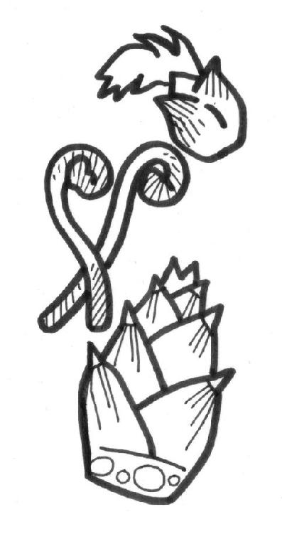
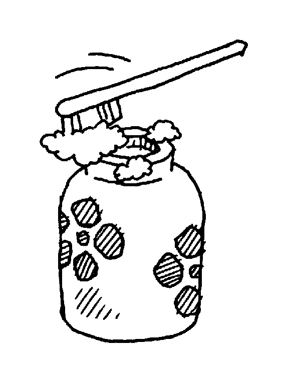
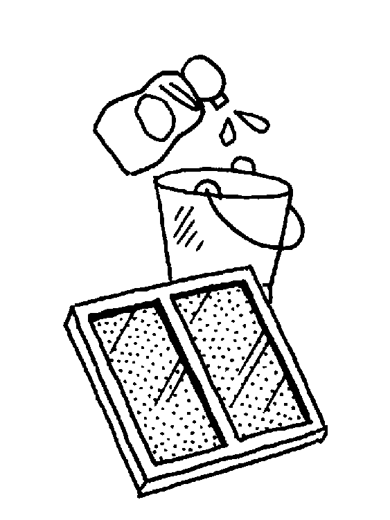
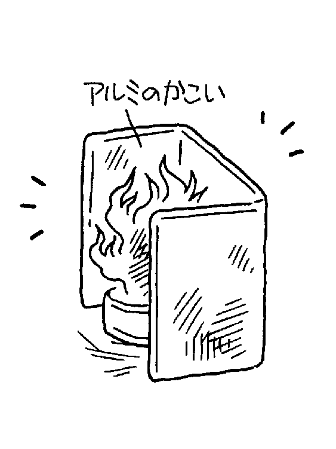

| すべて上手くいく！裏ワザ大全集 4冊セット (SMART BOOK) | |
| 生活向上委員会 & 知恵袋研究会 & 裏行動経済学研究会 | |
| (2015) | |
●はじめに
「う～ん、困ったわ」「こんなときは、どうしたらいいんだろう？」──日々の暮らしの中で、私たちはしばしば難問に出くわします。そんなときに、意外にも役に立つのが先人の知恵。科学技術の進歩には目を見張るものがありますが、どっこい、昔からの生活の知恵、暮らしに即、役立つ裏技、さらに民間療法と呼ばれるものには、すぐれたノウハウがたくさんあるのです。
本書ではそれらいわゆる「おばあちゃんの知恵袋」に、新しい知識や欧米文化を飲み込んだ最新の裏技までを紹介、また、忘れられつつある四季折々の行事などについても、第５章で「おばあちゃんの歳時記」として、読みやすく解説しました。
本の隅々まで、すぐに役立つ知恵、ものしりになれる項目がいっぱい！ お手元に置いていただければ、きっと役立つことでしょう。また、読みものとしても、充分に楽しんでいただけると思います。
これで解決！ おばあちゃんに聞く生活の知恵 目 次
塩
塩の調理用語と使い方、どれだけ知っていますか？
▼振り塩（＝尺塩＝あて塩）......食材に塩を振ることで、臭みを取り味をつけます。
30センチほどの高さから魚に塩を振るので、昔は「尺塩」と呼んでいました（１尺=約30センチ）。今でもこの言い方をする人も大勢います。まんべんなく均一に塩を振るときにおすすめです。
▼ひと塩......食材に軽く塩をふること。一夜干しや漬け物の下漬けなどに使います。
▼塩じめ......魚に塩をふり、余分な水分を除いて身をしめることをいいます。
▼呼び塩（＝迎え塩）......塩蔵品の塩抜きをするときに使う薄い塩水のこと。塩抜きは、真水ではなく塩水でする（水での塩抜きはうまみも流れてしまう）。
▼紙塩......できるだけ抑えた塩味を均一につけるため、霧吹きで濡らした紙を魚に巻いて、その上からふる塩。紙の水分によって均一に塩味がつきます。
▼化粧塩（＝ひれ塩）......魚の姿焼きの際、焼き上がりを美しく見せるために振る塩。特に、尾やひれにたっぷりの塩を振ると、白く形よく仕上がります。しかも焦げるのを防ぐ効果もあります。普通、タイ、アユ、アジなどの魚に振りますが、はまぐりなどにも使います。
▼塩びき......魚を塩蔵すること。普通、塩蔵した鮭をさしていいます。
▼ごう塩（＝べた塩）......薄塩の反対語で、表面が白くなるほどたくさん塩を振ることをいいます。鯖などの大きい魚を貯蔵するときに使われます。しめ鯖にも使います。
▼塩漬け......食材に塩をして押したものをいいます。
▼塩もみ......刻んだ野菜などに塩をふりかけて手でもむこと。水分を取り出し味をなじませます。
▼立て塩......海水程度の塩水（３～４％）のことをいいます。魚介類の下洗いや野菜などの下漬けに使います。干物をつくるときには、立て塩の中に漬け込みます。塩を均一に浸透させるためです。また、魚介類を洗ったり、キュウリの塩もみをつくるときも、立て塩を使います。
塩は、生きていくための必需品
血液など、人間の体液は塩分が主成分。ですから塩は人間には欠かせません。ただし、とり過ぎもよくありません。成人の理想の塩分量は次の通り。
●１日の最低必要量＝１・３グラム。
●１日の塩分摂取量＝10グラム（小さじ２杯）以下が理想。健康のためにも、ぜひ覚えておきましょう。
湯豆腐の湯に、塩
湯豆腐の湯に塩を加えておくと、豆腐の中に残っている未結合の凝固剤の働き（80℃以上になると働く）を抑えられ、グツグツ煮てもかたくなりません。やわらかく、おいしく仕上がります。
カリフラワーをやわらかくゆでる
カリフラワーをやわらかくゆでたいときには、塩を加えてゆでます。塩を入れると沸騰温度が高くなり、それでカリフラワーの組織がこわれてやわらかくなります。外葉を取って10分ほど塩水に浸してから、根元に十文字の切り目を入れ、塩一つまみを入れた熱湯に、花を下にして大きいままゆでます。
このとき酢を少量入れるときれいな白色にゆで上がりますし、水ときの小麦粉を加えれば、カリフラワーの変色や乾燥を防ぐことができます。
一夜漬けのナスは塩もみしない
キュウリやキャベツなどをよく一夜漬けにしますが、このときよく塩でもみます。ただしナスだけはもんではダメ！ ナスは水分が少ないのでスカスカになってしまいます。ナスを一夜漬けにするときは、濃い塩水につけるだけにしましょう。
葉物野菜をゆでるときには塩を加える
ホウレンソウなどの葉物野菜は、熱湯にひとつまみの塩を入れて、ふたをせずに手早くゆでます。塩のおかげで葉緑素が安定するため、緑色がきれいに上がります。ゆで上げたあとは流水で冷やすと、ますますいい色に。
まな板は塩で洗おう
まな板は、臭みのある汚れがつきやすいものです。肉、魚、何でもまな板の上で調理しますからね。特に肉や魚を調理したあとで野菜を切ったりすると、野菜に生臭みがついてしまうことも。
そこで、できるだけひんぱんに、塩で洗い流しましょう。塩をまな板にすり込み、流します。臭いはもちろん、雑菌退治もできます。
塩で、ガラスや陶製の食器を洗う
ガラスや陶製の食器などは、ふだんから塩で洗っていれば、洗剤は不要です。それに、塩で洗い物をすると、食器を洗ったあと、手がすべすべになります。もちろん何より経済的。
また、カット模様のでこぼこのグラスなどは、古くなった歯ブラシに塩とレモン汁をつけて磨きます。レモンの代わりにお酢でも大丈夫。レモンも酢もクエン酸が含まれているため、汚れを分解してくれるので、いっそうピカピカになりますよ。
茶渋は塩で落とす
湯飲み茶わんについた茶渋は、普通に洗っただけではなかなか落ちません。そこで、塩を使って落とします。台所用タワシに塩をつけて、ゴシゴシこするだけ。きれいに落とすことができます。
お鍋がいつもピカピカに
鍋磨きも塩におまかせ！ 鍋、やかんなどは、スポンジに塩をつけて磨けば、いつもピカピカです。
また、アルミ鍋をこがしてしまったときは、中に塩をひき、２、３時間おいてからこすると落ちます。
畳の上に、灰皿の灰をこぼしたときは
畳の上に灰皿をひっくり返すと、灰が畳の目につまってしまいます。そんなときは、粗塩を振りかけて、トントンとたたくと、灰が塩に混じって取れてきますから、そこを掃除機で吸い取ります。ベビーパウダーなどをこぼしたときも、同じようにすれば、きれいになります。
畳の上にペットがおしっこをしたときの始末は？
特にネコのおしっこは、あとあとまで臭います。そんなときは、いきなりぞうきんで拭き取るより、塩をサッと振りかけて吸い込ませます。それをブラシでていねいに掃き、掃除機で吸い取ります。そのあと、お湯で拭き、さらにから拭きします。もちろん、赤ちゃんのおしっこも同様に。また、灯油をこぼしたときも、このやり方で処置できます。塩の代わりに小麦やパウダーを使ってもよいでしょう。
塩水浴で病気の金魚が元気に
金魚の体はウロコの外側が、浸透圧から身を守るために、ヌルヌルした粘膜で守られていますが、体調を崩した金魚は、この粘膜が徐々にはがれ、浸透圧の関係で体内に真水が浸透してきてしまうのです。すると金魚は、体内の塩分濃度を保とうとしてさらに体力を消耗、病気を悪化させてしまうのです。そこで、０・５～０・７％の塩水をつくり、金魚の体内塩分濃度（０・７～０・８％）に近い塩水の環境をつくり、体力を消耗させないようにすれば、病状が軽ければ自然治癒力で治ってしまいます。
家具・調度の汚れ落としにも塩
家具・調度品は、バケツ１杯の水に大さじ２杯ほどの塩を入れ、ぞうきんを固くしぼって拭きます。特に籐家具の場合は、独特の趣を保つために塩水でのブラッシングを。黄ばみや黒ずみが、きれいに落ちます。籐家具や竹細工の家具は、かまわずに放っておくと、早く古びてしまいますから要注意。戸や障子の手あかの汚れもきれいになります。
丈夫な歯と歯ぐきに塩
歯磨きに塩を使うと、いろいろな効果があります。市販の歯磨き剤にも塩入りのものがたくさんあるくらいです。まず、塩つぶのスクラブ効果で汚れを落とします。さらに塩には殺菌効果や歯茎を引き締める効果がありますから、歯周病予防にもなるというわけです。
塩のお風呂でポッカポカ
塩のお風呂にはいることを「塩浴」といいます。塩化ナトリウムを含んだ温泉もありますが、塩を入れたお風呂に入ったり塩を溶かした塩湯で体を洗うと、末梢血管の血流がよくなり（血行がよくなる）、体の芯からポッカポカと温まり、湯冷めしにくくなります。冷え性、肩こり、腰痛などにも効果が期待できます。直接塩で肌をマッサージしても、肌が引き締まってスベスベに。
家庭用の浴槽（１８０～２００リットル）に大さじ３、４杯（０・01パーセント前後）程度で効果があるといいます。濃ければいいというものでもないようです。いずれにしても市販の入浴剤にくらべ、グッとお得ですね。
酢
こんなにもある、調理の際の酢の効能
酢は、酒を発酵させてつくられたもので、塩に継いで古い調味料。「合わせ調味料」と呼ばれており、普通、「二杯酢」、「三杯酢」というように、しょうゆや砂糖と合わせて使います。そんな酢の効能としては......
① 殺菌作用があり、保存性を高める。
② 水分を引き出し、しんなりさせて味を染みこみやすくする。
③ ヌメリを取る（里イモ、アワビなど）。
④ 油っこさをかくす（ドレッシング）。
⑤ アク抜きを助け、素材の色を白くする（レンコンやカリフラワーなど）。
⑥ タンパク質を固まらせる（落とし卵など）。
⑦ トリメチルアミンという物質を中和させ、魚の生臭さを抑える。
⑧ 根ショウガは、湯に通してから酢に漬けるときれいなピンク色になる。
⑨ 素材の骨をやわらかくして、カルシウムを引き出す。
......などがあります。
酢は健康にいいって言うけれど？
その通り、筋肉をやわらかくする効果があるお酢には、疲労回復、肩こり、冷え性、さらには貧血や便秘などにも効果があります。また、血液をさらさらにして高血圧を予防します。さっぱり味になりますから、食欲増進にも効果があります。
こんなにも体にいいお酢。ぜひ、１日大さじ１杯（15ミリリットル）とることを心がけましょう。
魚の生臭みをとる
魚の生臭みが苦手、という人は、調理する前に魚に酢を振って、しばらくおきます。それから調理すると、生臭みが消えて、おいしく、食べやすくなります。
魚の酢じめをするときの注意
酢にはもともとタンパク質を凝固させる働きがあるので、いきなり酢を加えてはダメ。タンパク質が固まり、酢が染みこみにくくなってしまうからです。ですから魚の酢じめをするときは、まず塩で十分にしめてから酢に漬けるようにします。塩がミオシンというタンパク質を溶けやすくするので、酢のしみ込みがよくなるのです。
ハムやソーセージの切り口にお酢
ハム・ソーセージの切り口がヌルヌルになってきたときは、お酢におまかせ。切り口の表面を酢で拭いて、ラップで包んでおきましょう。お酢には殺菌効果があるので安心。味も落ちません。
酢の物をつくるときは、材料を「酢洗い」する
酢の物をつくるときには、まず、材料を酢でさっと洗います。これを「酢洗い」といいます。酢洗いすることで材料に下味がつくので出来上がったときの味が、グンと違ってきます。酢を材料にふりかけて、しばらくおくだけでも効果があります。
安売りでお肉を買ってきたら、かたい！
「あら、今日はお肉が安いわ！」と、買ってきたお肉がかたい！ そんなときはお肉をボウルに入れ、お酢をかけて、よく、もみ洗いしましょう。そのあと少しおいてから調理します。やわらかくなって食べやすくなりますよ。
カレーをつくるときは仕上げにお酢
「えっ？」と思われるかもしれませんが、１人前につき小さじ１杯程度のお酢を仕上げに入れると、味がグッとまろやかに。すり下ろしたリンゴやトマトを入れてもマイルドな味になりますが、これも酸味がプラスされるから、なのです。
スッキリさっぱり、お酢で洗顔
洗顔後、洗面器に水かぬるま湯をはり、お酢を小さじ１杯程度入れて洗顔すると、洗顔後のつっぱり感もなく、すっきりさわやか。酢の殺菌効果でニキビなどにも効果があります。
配水管の臭い・シンクのゴミ入れのヌルヌルもスッキリ
お酢は調理に使う以外にも、いろいろと使い道があるのです。例えば......。
排水口の周りはいつも掃除しているのに、配水管からいや～な臭いが......。そんなときは、排水口をきれいにしたあと、コップ４分の１（約50ミリリットル）の水に、大さじ２杯の酢をまぜた酢水をつくり、配水管に流します。最後にお湯を流せば、いやな臭いもすっきり。
また、シンクのゴミ入れのヌルヌルが気になったら、洗いおけに２リットルの水を張り、そこにコップ４分の１（約50ミリリットル）の酢を加え、一晩浸しておきましょう。ヌメリも臭いも見事に落ちます。
電気ポットの湯あか取りにもお酢
電器ポットにはいつの間にか、湯あかや茶色の汚れが付きますが、お酢はその漂白にも使えます。酢を20ミリリットル（大さじ１と３分の１）ポットに入れ、水をいっぱいにし、そのまま普通にお湯をわかします。沸騰したらそのまま数時間おいて、お湯を捨てます。びっくりするほどきれいになります。夜、寝る前にやるといいかも。
ガラスのコップがお酢でピカピカ
コップなど、ガラス食器のくもりが気になったら、洗剤をつけたスポンジに、さらにお酢を含ませて磨きます。くもりが取れてピカピカに。
黄ばんだ衣類を白くする
白い下着やブラウス、靴下などが黄ばんできたら、漂白剤の代わりに、すすぎのときに酢を少量入れてみましょう。黄ばみが取れます。レモン汁をたらした水で煮たり、レモン汁をしぼった熱湯に一晩つけ置いても同様の効果があります。
緑茶（日本茶）
緑茶（日本茶）は緑黄色野菜？
緑茶の成分には、湯に溶け出す成分と、溶け出さない成分があります。
溶け出す成分には、カテキン、カフェインアミノ酸、ビタミンＣなどがあり、溶け出さない成分には、ビタミンＡ、Ｅ、食物繊維などの成分が含まれています。ということは、お茶がらとして捨ててしまっている中にも、いろいろな栄養分が含まれていることになります。それでは緑茶の栄養分を全部丸ごと摂取するには、どうしたらよいのでしょう？
それは食べてしまうこと。ミキサーやすり鉢で細かく砕き、食材にふりかけると、おいしく無駄なく摂取できます。市販のふりかけに混ぜてもよいですが、ジャコや海苔、鰹節などを使って、お手製のふりかけをつくってもいいですね。
よいお茶は早めに飲む
お中元やお歳暮その他で、しばしばお茶をいただくくことがありますね。
「贈答品のお茶はいい（高価な）お茶だからとっておいて、大切なお客さまのときに......」という人がいますが、実は、お茶は鮮度が命！ しまっておいたのではどんどん味が落ちてしまいます。ですから、いいお茶ほど早めに飲みましょう。かえってもったいないことになってしまいます。
また、いただいたお茶が、どうも好みに合わないというときは、茶汁（冷やしたお茶）をつくったり、ミキサーでふりかけをつくったりしてみるといいでしょう。
お茶で魚の生臭さを取る
魚の生臭い臭いがどうも苦手という人は、魚を茶汁（冷やしたお茶）に４～５分浸けておいてみてください。こうすると生臭い臭いが取れますから、それから調理するとよいでしょう。
お茶の抗菌作用で食中毒の予防にもなります。
お料理の後片づけに、緑茶が大活躍
肉や魚を調理したあとの、まな板についたヌメリや臭いは、塩をまな板にすりこんでからお茶で流すと取れます。
また、魚を焼いた網にも生臭い臭いがつきますが、茶汁に浸けておき、そのあと洗えば取れます。
調理した手も、なかなか生臭さがなかなか取れないもの。そんなときは両手で茶がらを揉みながら洗うとさっぱりしますし肌も荒れません。
茶汁で肉をゆでる
しゃぶしゃぶなど、肉をゆでる料理にも、茶汁を試してみましょう。余分な脂を落としてくれるので、さっぱり味になり、コレステロールを減らすことができます。
植木や花壇で肥料として使う
茶汁は植木のよい肥料になります。鉢植えにも週に一度、水の代わりに与えます。生き生きとして、とても元気になります。また、茶がらは根元にまいたり土に埋めたりします。やはりすぐれた肥料になります。前記のように、茶がらには、お湯に溶け出さない栄養分がたくさん残っていますから、ただ、ゴミとして捨ててしまうのはもったいないですよ。
お茶のお風呂でリラックス
布袋（ガーゼや木綿がよい）に茶さじ３杯ほどの茶葉を入れ、浴槽に入れて入浴しましょう。お茶の種類は何でもＯＫ。お茶もハーブの一種です。お茶の香りで、ゆったりとリラックスできます。お茶に含まれるビタミンＣには美肌効果もありますから、お肌がスベスベになりますし、体が温まります。
お掃除に使えば床がきれいに
お茶のお風呂の残り湯は、拭き掃除に使いましょう。特にフローリングなどの板の間では、汚れがよく落ちるうえ、ツヤ出し効果も。ただし、洗濯には不向き。白いものが染まってしまう恐れがあるからです。
茶がらで家の中がピカピカに
茶がらを乾燥させてとっておき、布袋に入れて、床や柱、家具のツヤ出しに使ってみてください。ピカピカになりますよ。
消臭剤にもなる茶がら
よく乾燥させた茶がらをガーゼなどにくるんで、冷蔵庫やタンスのすみに入れておきましょう。消臭剤になります。いやな臭いもすっきり解消。
家の中の臭い消しにもお茶を使う
家の中の臭いが気になることってありますよね。そんな時は、フライパンに茶葉を入れ中火～弱火で炒ると、こうばしいお茶の香りが家中に広がり、いやな臭いが消えます。化学薬品でつくられた香料とは違うやさしい香りです。茶香炉をフライパンでやるわけです。これもりっぱなアロマテラピー！ 来客がある時などにお試しください。
うがい薬にもなるお茶
お茶には虫歯を予防するフッ素が多く含まれています。また口臭予防や殺菌効果があるので、うがいには最適です！ またカテキンは、インフルエンザウィルスにも効果があるといわれていますが、茶のカテキンは、下級茶に多く含まれています。
茶汁はあせもやおむつかぶれにも効果あり
茶がらを使って出した茶汁を冷ましてガーゼにひたし、軽くしぼって拭くと、夏の汗ばんだお肌がスッキリ。また、あせもや赤ちゃんのおむつかぶれにも効果があります。自然のものですから、肌にも安心です。
古い畳が青畳に復活
ぬるま湯１リットルに抹茶を２さじ入れてよくかきまぜます。それで雑巾を絞って畳を拭きます。日焼けして色あせた畳に抹茶がしみ込み、３、４日続けると新しい青畳！ に変身します。
日本酒
こんなにもある、調理の際の日本酒の効能
よく知られている日本酒の効能には、次のようなものがあります。
① 酒に含まれる各種のアミノ酸やコハク酸が、うまみを加える。
② 素材をやわらかくする（みりんは素材を固くすることがある）。
③ 魚などの生臭さを抑える（コハク酸の作用）。
④ 素材に染みこみ、再び染み出てくるときに、素材の持つ内部の香り成分を引き出してくれる。
......などがあります。
さらに適度な飲酒は、身体面では、血液循環をよくし、食欲を増進させ、血液の中の善玉コレステロールを増やして動脈硬化を防ぐ効果があるといわれています。
また、精神的なストレスの解消や、コミュニケーションの手段にもなり得ます。まさにお酒は「お酒は百薬の長」！ ただし、あくまで飲み過ぎなければ、の話。
カゼかなと思ったら卵酒
昔からのカゼ薬（？）といえば卵酒！ アツアツを飲んでぐっすり眠れば、翌朝には気分爽快です。作り方は......。
① 日本酒１００～１８０ミリリットル（お酒の強さによって加減）を、熱めにお燗します。
② 卵１個をよくかきまぜ、砂糖小さじ１、２杯を加え、さらによくまぜます。
③ ①の熱燗を②に、少しずつたらすようにしてまぜていきます。のばすような感じでゆっくりとまぜます。
④ ③を再びゆっくりとお燗すれば、出来上がり。
上手につくるコツは、あわててつくらないこと。急いでつくると卵が固まって「かき卵」状態になってしまいます。とろりとした状態で、いただきましょう。ショウガのおろし汁を加えると、さらに効き目がアップします。
お酒で体をマッサージ？
肩こりで悩んでいる人は、ぜひ、お酒のマッサージを試してみてください。入浴前に、日本酒を患部（肩、腰など、こっている場所）に塗り、マッサージしてからお風呂に入ります。ガンコなこりが取れて、とても楽になります。
また、日本酒３、４合（５４０～７２０ミリリットル）を浴槽のお湯に加えて入ると、体が温まるうえに、日本酒の保湿効果により、お肌がしっとりとしてツヤツヤになります。たまにはぜいたくに酒風呂はいかが？ 「ぜいたく」とはいっても、安いお酒で効果は充分なのです。
お酒を使った化粧水づくり
お酒と梅干しで自然派化粧水がつくれます。
２００ミリリットルの日本酒で、一晩水につけて塩分を抜いた、梅干しの果肉２個分を１週間漬け込むだけで出来上がり。とてもいい感触で、やさしくお肌になじみます。お試しください。
酒粕ローションはいかが？
こちらは酒粕（酒のしぼりかす）を使ったローションです。酒粕30～50グラムを、軟らかくなるまで手でこねます。５００～６００ミリリットルの、手を入れると少し熱めのお湯を用意し、こねた酒粕をストッキングに入れ、お湯の中でよくもむと、酒粕の成分が出てきます。さらによーくもんで、成分が充分出たら、ストッキングを取り出します。最後に小さじ１杯のグリセリンを加え、よくかきまぜれば完成です。保存は冷蔵庫で。
酒粕もお風呂に使えます
３００グラムほどの酒粕をすりつぶし、ガーゼのタオルやハンカチで、こぼれ出さないようにしっかりしばって包みます。これを浴槽に入れるだけ。酒粕の成分がゆっくり溶け出しますから、浴槽で温まりながら、からだにすり込むようにマッサージしましょう。湯冷めしにくく、肌の保湿効果もアップします。お肌の新陳代謝を助けますから、すべすべのお肌になります。
重 曹
重曹は天然素材
温泉の天然成分としても知られている安全性の高い物質である重曹は、ナトリウム化合物中で最も弱いアルカリで、環境問題が身近になりつつある今、天然素材なので安心して使えます。安価だし、手軽に使える点もいいですね。幅広く利用しましょう。
食器洗いに使うとき
少量の重曹を、かるく湿らせたスポンジにつけて磨きます。水はあまり使わないようにします。ステンレス製品やコップなどは、重曹で磨くとピカピカになります。そのほかにも......。
▼魚料理の後に
まな板に重曹小さじ１、２杯（４～６ｇ）を振りかけて洗うと、臭いがとれます。
▼こげついた鍋
重曹をたっぷりふりかけ、水を加えて火にかけ、しばらく煮ます。そのあと、数時間放置すれば、こげつきが浮き上がってきます。
重曹で銀製品の輝きが戻る
アクセサリーやスプーンなどの銀製品がくすんで、汚い色になってしまったら、鍋にアルミ箔を敷きつめ、そこに沸騰寸前のお湯を１リットル入れ、大さじ３杯の重曹を溶かします。この液の中に銀製品を一晩浸しておいてみてください。ピカピカになります（パールや宝石などには、絶対使用しないでください。銀製品のみ！）。
夏に最適！ 臭いも防げる簡単虫除け
水１００ミリリットルに、重曹小さじ２分の１を入れて、そこに薬局で売っているハッカ油を１滴たらしてよく混ぜたら出来上がりです。スプレーしたり、コットンにとって肌に塗ります。
排水口にも重曹を
排水口の汚れや臭いにも、重曹は効果を発揮します。
重曹を１週間に１カップ（約１５０グラム）の目安で流します。臭い消しだけでなく、排水パイプの油汚れを吸着して、汚れ落としの効果もあります。
重曹を使ってお洗濯
小さじ２、３杯の重曹を洗濯機に入れ、粉末酸素系漂白剤を小さじ１、２杯、加えて普通に洗います。汚れに応じて量は増減してください。
お風呂の残り湯なら温度が水道水より高いので、洗浄力が増します。ただしあまり高い温度のお湯では、濃い色物は色落ちすることも。すすぎは、２回。リンスをするなら、クエン酸を使います。
ウールも重曹で洗えます
バケツや大きめの洗面器に用意した、ぬるま湯（30℃前後）に重曹小さじ１杯を入れ、洗います。
洗い方ですが、まず、重曹をといたぬるま湯に、セーターなど、洗うものをたたんでつけます。２、３回軽く押して10分ほど置いたのち、数回押し洗いします。すすぎは１回。クエン酸でリンスをします。
クエン酸を使うと、すべすべして着心地がよく、また、静電気のパチパチが起きにくくなります。
重曹をお部屋の脱臭剤として使う
キャンディなどの小さな空きビンに重曹をいっぱいに入れて、ふたをせずに、玄関や台所、客間のすみに置いておきましょう。お部屋の脱臭剤になります。もちろんトイレにも使えます。しばらくすると表面が固まってきますが、はしなどでほぐしましょう。だいたい３カ月以上はもつはず。捨てるときは前記のように排水口へ。無駄がありません。
また、冷蔵庫の脱臭剤としても使えます。２カ月に１度くらい交換し、使用後はお洗濯や排水口の掃除に！
山菜類のアク抜きに
山菜、特にワラビやゼンマイなどはワラを燃やしたワラ灰を入れてでゆでるとアク抜きができますが、なければたっぷりの熱湯に重曹を入れ（湯３カップに対して小さじ１杯）、ゆでます。重曹のアルカリ性成分がアクを抜き、アルカリ性で加熱されることでかたい成分もやわらかくなるのです。
ただし、ほどよい苦みや香りが山菜の特徴であり、そういった意味では、アクも味のうち。独特の香りまで抜いてしまわないように注意が必要です。
ふきのとう、たらの芽、こごみ、みず、ゆきのした、行者ニンニク、よもぎ、つくしなどは、熱湯でゆでて水にさらすだけでよいでしょう。ただし、アクの強いものほど、何度か水を取りかえて水にさらすことが必要です。
また、タケノコをゆでるときには、ひとつかみの米ぬかを入れるか、米のとぎ汁で煮て、アク抜きします。

にがり
にがりってどんなもの？
「にがり」は、海水を濃縮させた液体から塩（塩化ナトリウム）を析出させたあとに残る液体で、その主成分はマグネシウム（苦味のもと）。さらに、カリウムや鉄、マンガン、亜鉛などの豊富な海のミネラルが含まれています。
にがりで口臭と歯周病を予防
にがりには口臭のもととなる口の中の細菌の繁殖を抑える効果と、歯ぐきを引き締めて歯周病を予防する働きがあるといわれています。「塩」よりも刺激が少ないので、特に、歯ぐきのマッサージには効果的。にがりを２、３滴、歯ブラシにたらしてしめらせ、その上から歯みがき剤をつけて、ていねいにブラッシングしましょう。
カゼや口内炎の予防にも
抗菌作用のあるにがりでうがいをすると、カゼの予防に効果があります。かかったかな？ と思ったときも、のどのはれや痛みをおさえたりする効果がありますから、試してみてください。にがりのうがい液は、コップ１杯（約２００ミリリットル）の水に２、３滴のにがりを加えるだけ。よくまぜてから使います。
また、にがりは口内炎にも効果があります。ぶくぶくと普通に口をすすげばよいのですが、原液を綿棒にしめらせ直接塗布したり、化粧用のコットンにつけて患部にあてるなどすれば、なお効果がアップします。
にがりで化粧水（ローション）をつくる
作り方は簡単、水に、にがりを加えてまぜるだけ。水２００ミリリットルに、小さじ１杯のにがりを加え、容器を振るなどしてしっかりとまぜます。口の狭いビンにつくるときは分量のにがりをスポイトで加えるとよいでしょう。
使う水は薬局で売っている「精製水」やアルカリイオン水がベストですが、普通の水道水でも大丈夫。天然ミネラルが豊富になるのでお肌がしっとりとうるおいます。だから乾燥肌でお悩みの人にはうってつけ。
肌荒れ予防機能・回復機能を高める作用もありますから、いたんだ肌やニキビにも効果があります。たっぷり使いましょう。
お風呂上がりの全身のケアに
お風呂上がりには、全身ににがりローションをつけましょう。お風呂上がりなら一段と肌への浸透力が高まるので効果もアップ。毎日続ければ、しっとりとしたお肌になります。
カサカサのかかとにもにがり化粧水
にがりローションは、角質がいたんでカサカサしがちなかかとや足の裏、ひじにも、ぜひ使ってみてください。入浴後など、きれいに洗ったかかとなど、気になるところににがりローションをつけて、やさしくマッサージ。保湿靴下をはけば、よりうるおいを保つことができます。
にがりローション＋グリセリン
前出のにがりローションをつくるときに、５ミリリットルのグリセリンを加え、よくまぜます。グリセリンが入ったことにより、さらに保湿力がアップします。
おやすみ前に使うと効果的です。コットンに適量をつけて、パタパタとパッティングしましょう。
荒れた手にもうるおいを与えますから、ハンドクリーム代わりにもなります。荒れのひどいときは、手袋をして保湿力を高めるとよいでしょう。
にがりのヘアトニック
にがりローションに、さらに育毛効果を高めるにはシダーウッドなど、森林系のハーブの精油を、にがりローション１００ミリリットルに１、２滴加え、よくまぜます。このお手製にがりヘアトニックを１日１回、頭皮によくすり込めば、毛根に詰まった皮脂や汚れを取り除き、フケを予防します。
また、紫外線でパサパサになった髪にも効果的です。
お風呂にもぜひ、にがりを
にがりに含まれるマグネシウムは、温泉（鉱泉）に含まれる成分です。にがりの入ったお風呂なら、湯上りは温泉に入ったあとのように、ツヤツヤですべすべのお肌になります。１００ミリリットル前後を浴槽に入れます。
うわさのにがりダイエットって、効果があるの？
特に、にがりにやせる成分が含まれているわけではありませんが、天然のサプリメントと言われるほど、多くのビタミン・ミネラルが含まれています。
その主成分であるマグネシウムというミネラルが不足すると、お腹などの中性脂肪を取る能力が落ちてしまいます。そこで、にがりに多く含まれているマグネシウムをしっかり取れば、脂肪を取り去る能力が高くなり、ほっそりした体になれるというわけです。マグネシウムとカルシウムを１対２の割合でとると効果が倍増します。マグネシウムは各にがり製品の含有量を確認のうえ、１日２００～２５０ミリグラムが摂取目標。とりすぎると下痢する場合も。気をつけて。
米ぬか
食器洗いに米ぬかを使う
今のような台所洗剤などなかった昔、その代わりに使われたのが米ぬかです。中に含まれる脂肪分が食器や鍋の汚れをきれいに落としてくれるのです。
使い方は、食器洗い用のスポンジに直接米ぬかをふりかけて使います。大きなお皿や鍋を洗う時には、洗うものに直接ふりかけて、ゴシゴシこすりましょう。米ぬかに含まれているサポニン成分が汚れを吸着、細かい粒子が研磨剤の役目をしてくれるので油汚れもスッキリ落ちます。このとき、排水溝にカスが詰まらないように注意してください。米ぬかは自然のものですし、洗顔石けんの原料としても使用されていたりするものですから、食器を洗っても手荒れの心配はありません。むしろツヤツヤの美しい手を保つことができます。特に冬場など、手荒れの季節にはぜひおすすめです。
漂白剤の代わりにも米ぬか
また、汚れたふきんの漂白にも、漂白剤を使わず、米ぬかを使ってみてください。鍋に湯をわかし、その中に米ぬかを入れ、汚れたふきんを入れて、しばらく煮るだけで、びっくりするほどふきんがきれいになります。漂白剤のいやな臭いもありませんし、取り扱い上の心配もありません。
米ぬかで床をみがけばピッカピカ
フローリングなどの床は、米ぬかでみがくのが一番。米ぬかをガーゼの袋に入れて、その袋でみがきます。袋を水に浸し、キュッとしぼったものでこすれば、みるみるツヤが出ます。ガーゼで包んで、輪ゴムなどで止めるだけでもＯＫ。
米ぬかって、どこで手に入れるの？
お米屋さんで分けてもらうのが一番手っ取り早いでしょう。２、３キロでン10円とか、とても安価で経済的です。
米ぬかパックで色白の美肌に
用意するものは、米ぬかと小麦粉です。小麦粉６、米ぬか４の割合で混ぜ合わせ、しばらくそのままおきます。20～30分たったら水を少しずつ加え、のり状になるまでこねれば、できあがりです。
メイクを落とし、さらに洗顔石けんで汚れを落としてから、米ぬかパックを顔全体（目や唇、眉の間はさける）にまんべんなく塗ります。８～10分間くらい、仰向けになって乾くのを待ちます。パックの上からさわってみて、ほぼ乾いていたら終了です。敏感肌の人は、最初は５分くらいできりあげて、様子を見てください。最後に水か、ぬるま湯で、ていねいに洗い流します。週に１、２度お試しください。
米ぬかのお風呂で、体の芯からポカポカに
米ぬかのお風呂は、血行をよくして、体を芯から温めると言われています。発汗がうながされると、全身の新陳代謝もよくなります。そのおかげで肌がつやつやになりますし、冷え性や肩凝り、神経痛などにも効果があります。
米ぬかを使った簡単スチーマー
鍋に米ぬかを入れて水を加え軽く沸騰させます。成分が溶け出し、湯が白くなります。やけどをしない程度の適温まで冷めたところで、頭からタオルをかぶって、米ぬかの湯気に顔を当てます。湯気が出なくなるまで３分～５分程度当てて、そのあと手のひらで肌をやさしく押さえてなじませます。お肌がしっとりします。乾燥肌の人、冬のカサカサ肌に、ぜひお試しください。
お米のとぎ汁を沸騰させた湯気でも、効果があります。
米ぬかでたい肥づくり
生ゴミを使ってたい肥づくりがガーデニングファンなどの間で盛んですが、米ぬかも利用できます。プランターの底に５センチほど腐葉土を入れ、その上から２、３センチずつ、米ぬか、その上に生ゴミ、さらに米ぬか、腐葉土と重ねます。そこに植物を植えます。堆肥にするには時間がかかりますが、この方法ならすぐに使えますから便利です。
捨てない生活の知恵
ペットボトルでスパ麺を保存
スパゲティーの保存に、ペットボトルは最適。しかもペットボトルの口から一度に出る量は、だいたい１人分なのです。小さな乾燥剤を入れておけば完璧ですね。
ペットボトルが湯たんぽに
冬の夜は湯たんぽでぐっすり快眠。１・５～２リットルの大きめのペットボトルの肩のあたりまでお湯を入れ、30秒ほどおいて、ふたをきつくしめます。それをバスタオルでくるんでふとんの中の足もとへ。朝までポカポカです。冷え性で足が冷たくて眠れなくなる人も、これでぐっすり眠れます。朝になったら中のお湯で顔を洗えば、まったくムダがありません。
猫など、ペットの暖房としてもグッドですね（※ペットボトルは硬めのものを利用しないと、変形したり、溶けてしまうので気をつけて！）。
ペットボトルで植木鉢の水差し
旅行などで家を空けるときは水を入れたペットボトルのふたに、１、２カ所穴をあけ、植木蜂の土に逆さまにさしておきましよう。ふたの穴から少しずつ水が土にしみ出て、植木を枯らしません。
また、ペットボトルに水を入れ、口に細長い布（木綿のひもや細く切ったタオルなど）のはしを底に届くように入れます。そのペットボトルを鉢植えより高い位置に置き、布のもう一方のはしを、鉢の土の上にのせてやります。すると毛細管現象で、水は少しずつ、ペットボトルから鉢へと伝っていきます。
ペットボトルの小物入れ
長方形のペットボトルの上部を切って冷蔵庫や机の引き出しの小物入れにします。細かい物を整理するのにとても便利です。
古歯ブラシはお掃除に使う
古くなった歯ブラシは捨てずに、ペットボトルでつくった小物入れにストックしておき、水道の蛇口など、水回りの汚れ落としに使いましょう。ぞうきんなどでは落とせない狭いところの汚れ落としに重宝します。
歯ブラシでタイルの目地を磨く
お風呂場やキッチンのタイルの目地のカビ落としにも、古歯ブラシが活躍。
古くなった歯ブラシに酢をつけタイルの目地をゴシゴシこすってみてください。みるみるカビが落ちて白くなります。お酢の臭いが苦手という人は、酢酸を薄めて使うとよいでしょう。
酢酸は、お掃除にいろいろ使えて便利です。薬局で売っています。
ハダニ駆除の効果アップに歯ブラシ
植木の葉に元気がなくなって色あせてきたら、葉の裏を見てみましょう。小さな赤い粒々......ハダニです！ ハダニは専用の薬剤で駆除しますが、葉の裏側につくので薬剤を噴霧しても届きにくく、なかなか退治し切れません。そこで、駆除するときは前もって、ていねいに歯ブラシでこすり落としてから薬剤をまきます。こうすると効果倍増！
古くつ下は使い捨てぞうきんに
古くつ下は捨てずにとっておき、大掃除のときに利用します。すっぽり手にはめて、掃除機やぞうきんでは届かない狭い場所や掃除のしにくい家電製品などをきれいにするのに使います。細かいところまで、汚れ、ほこりがとれて便利です。汚れたら使い捨てにします。
タオルやＴシャツもぞうきんに
タオルやＴシャツなども、使いやすい大きさに切って、使い捨てぞうきんとしてストックしておきましょう。大掃除のときはもちろん、普段でも、キッチンの油汚れなどをいつでもササッと拭き掃除。ポイと捨てられ便利です。
古くなったウール製品もお掃除に
マフラーやひざかけなど、古くなって捨てるだけのウール製品は、綿ぼこりをとるのに最適です。まず、正方形に切って、ぞうきんの代わりにフローリングをみがけば、汚れがよく落ちてピカピカに。モップに巻けば、楽ですね。細長く短冊状に切って棒に巻けば、ホコリをよく取る手作りハタキになります。水でしぼれば、洗剤なしでも汚れが落ちます。とても使い勝手がいいのです。
古くなったバスタオルをバスマットに
古くなったバスタオルは三つ折り、または四つ折にして、ミシンでガガーッとぬい、バスマットに使いましょう。水をよく吸いますから使い心地もよく、まめに洗濯もできます。すり切れるまで使ってから捨てます。
ストッキングでくつみがき
伝染したり古くなったストッキングは、くつや家具をみがくときに使えます。ツヤが出るし、傷はつかないし、ピッタリです。また、水道の蛇口やカランをみがけばピカピカになります。
ネガは台所用ラップの空き箱に
写真のネガは整理しづらいものですが、台所用ラップの空き箱に、１～数カ月分をまとめておくと、置き場所も取らず、いざというときにさっと取り出せて便利です。ネガにナンバーをつけて、箱のふたの裏に、ネガの内容とナンバーをメモしておくようにします。
電池を復活させる方法
電池といえば、キャンプ地で懐中電灯やラジオなどの電池が突然なくなってしまうと、困りますね。そんなときは乾電池をプラスマイナス交互に持ち、シャカシャカとこすり合わせると、多少のパワーは回復します。１本しかないときにはスチールの缶など、金属製のものにこすっても効果があります。何度か振ってやるだけでも、ちょっとだけ復活することもあります。すぐに捨ててはもったいない！
裏白のチラシはメモ帳に
片面だけの印刷で裏が白いチラシや新聞広告はとっておき、使いやすい大きさに切ってメモ帳にしましょう。ホッチキスで閉じたりダブルクリップではさんで使います。電話のそばに置いたり、買い物に行く前にメモしたり、いろいろと重宝します。
古新聞で畳をきれいに
古新聞をちぎって水を張ったバケツに入れ、水を吸い込んだところでキュッとしぼってたたみにまきます。それをほうきで掃けば、ホコリや髪の毛などもまとめてきれいになります。
この方法は、まとめておいてしぼったお茶がらでも代用できます。
ビデオのケースで状差しを
ビデオテープのケースは、ハガキを入れるのにぴったりのサイズです。両面テープで２、３個はり合わせ、状差しとして使いましょう。深めの引き出しにそのまま入れておければなおグッド。また、ピンで壁に留めておいても使い勝手がよさそうです。
領収証などの整理にも使えます。
牛乳パックが燃料に？
最近はキャンプなど、アウトドアが盛んです。キャンプや飯ごう炊さんでは、まず火を起こさなければなりません。でも、慣れないことだけに結構難しかったりします。
アウトドアでの火の起こし方は、新聞紙に火をつけ、上に載せた小枝に火が移ったら、その火をさらに薪に移します。しかし雨のあとなど、小枝が燃えにくかったりすると、上手に燃えてくれず、かなり苦労します。
そんなときは、牛乳パックを使ってみましょう。
牛乳パックには、ロウがついているので火がつきやすく、新聞紙より長持ちするのです。牛乳パックを細い棒状に切って、丸めた新聞紙の上に置き、その上に小枝を並べます。こうして新聞紙に火をつけると、牛乳パックの火持ちがいいので、上手に火を起こすことができます。たくさんあると薪が燃えにくいときに、とても助かります。キャンプの予定が立ったら、牛乳パックをためておくといいでしょう。
牛乳パックをレジャーでロウソク代わりに使う
火持ちのいい牛乳パックは、ロウソクの代わりにもなります。牛乳パックをグルグルと、長いらせん状に切って端に火をつけると、10分ぐらいは燃えているので、花火のときなどに重宝します。
コルク栓でサビを落とす
ワイン党が増えている昨今ですが、栓を捨てずに洗ってとっておき、包丁のサビ落としに使います。コルク栓の先にクレンザーをつけてこするだけ。小さなサビならきれいに落ちます。
アルミホイルでこげつきを落とす
鍋洗いは、温かいうちに、小さく丸めたアルミホイルにクレンザーを付けてこすっておきます。小さなこげつきまできれいに落とせます。使ったあと捨てずに、シンクのすみに丸めてとっておきましょう。
キッチンでカイワレダイコンを収穫？
キッチンで新鮮な、無添加無農薬のカイワレダイコンを栽培・収穫してみましょう。まず、イチゴのパックを捨てずにとっておき、底に排水用の穴をいくつもあけ、薄いスポンジかキッチンペーパーを敷いて、土を３センチほど入れます。そこにカイワレダイコンの種をくまなくまけば、すぐに発芽しますから、ある程度伸びたところで日光に当ててやると、パーッと鮮やかなグリーンに。日をずらしていくつかつくれば、毎日産直野菜！
水だけで育つハーブでキッチンガーデン
ジャムやキャンディー、プリンなどの小びんやプラ容器をとっておき、１センチほど水を入れ、ダイコン、ニンジンの葉っぱ、ミツバにネギなど、使い残しの野菜の根元を漬けておくだけで、新しい芽が出てきます。薬味程度なら充分使えます。バジルやミントなど、ハーブも使った残りを同様にしておけば、元気に葉を出してくれます。コツは、水が腐らないように、２、３日ごとに替えてやること。
落ち着きの悪い花を上手に生けるには？
ミカンやシイタケなどはネットに入って売られていますが、あのネットをとっておき、落ち着きの悪い花を生けるときに使います。何枚かをクシャクシャにして花びんに入れ、そこに生けるとグラグラしたりしません。花の大きなもの、茎の細いものなどにお試しください。大根の輪切りにさして生けるという方法もありますが、こちらのほうが廃物利用ですから経済的。
乾燥剤でブーツやバッグのカビを防ぐ
お菓子などに入っている乾燥剤をとっておき、革のブーツやバッグをしまうときに一緒に入れておけば、カビが生えることがありません。
調味料入れに乾燥剤
塩や砂糖などの調味料入れのふたの裏側に、乾燥剤をはり付けておきます。こうするとしけって固まってしまうことがありません。
乾燥剤を復活させるワザ
お菓子などに入っている乾燥剤は、大きく分けて、シリカゲル（丸い粒々）か、消石灰（白い粉）がほとんど。シリカゲルならば袋から出して電子レンジでチンするか、小なべでから炒りして水分を飛ばせば、その効果が復活します。ピンク色の粒が青くなったらＯＫ（熱くなるので気をつけて！）です。紙に包んで再使用します。
脱臭剤も電子レンジで復活
キムコやノンスメルのような活性炭による脱臭剤は、電子レンジの解凍モードで２、３分加熱すれば、再利用できます。もちろん容器から出して加熱してくださいね。
密閉容器の臭い消し
タッパウエアなどの密閉容器は、カレーをとっておいたり、魚を漬け込むと、洗剤で洗ってもいやな臭いが残ります。そんな時に、野菜くずをタッパに入れてふたをしっかり締めて、一晩置いておくと、臭いが消えてしまいます。
しょうじ・ふすまの滑りをよくするのは卵のカラ
しょうじやふすまの開け閉めが悪いと、そのたびにガタピシいって、いらだってしまいますね。そんなときに、ロウを塗って滑りをよくするという方法は昔からよく使われてきましたが、ほかにこんな方法もあります。卵のカラ数個分を細かく砕いてから、水で少し湿りけを与えて布の袋に入れ、それで敷居をこすってみてください。この方法でも滑りがグッとよくなります。
卵のカラでガラス磨き
生卵のカラや、ゆで卵のカラ。捨てる前にもうひと仕事してもらいましょう。コップや湯飲み、水筒、ポットなどの、手が届かないところを洗うのに使えます。洗うといっても、細かく砕いた卵のカラをコップや容器に入れ、水を入れたらガシャガシャッとよく振るだけ。すっかりきれいになります。
また、カルシウムがいっぱいの卵のカラは肥料にもなります。庭木の根元や植木鉢に、ぜひ使いましょう。
古くなった食材のよみがえり術
古くなったお米はおいしくない......
古くなったお米は、確かにおいしくありませんね。独特のいやな臭いがあったり、ぽろぽろくずれてしまったり......。
そこで、米２合につき小さじ１杯のみりんを加えて炊いてみてください。古いお米独特の臭いも消え、お米の粒もしっかりして、くずれたりしないはず。
固くなったチーズの復活法
冷蔵庫に入れっぱなしにして、固くなってしまったチーズは、密閉容器に入れ、チーズの頭がかぶるくらいに牛乳を入れ、１時間ほどチーズをつけておけば、元通りのやわらかさになります。もちろん使った牛乳は、シチューなどに利用できます。
しけったおせんべいがパリパリに
しけったおせんべい、おいしくないですよね。でも、捨ててしまうのではもったいない。そこで電子レンジで「チン！」すれば、パリパリになります。同様にしけったのりも復活しますよ。レンジは短め、時間に気をつけて。
しけったのりの活用法
もらい物や、たくさん買ったりしてそのまま置いておき、しけらせてしまったのりは、電子レンジでもいいのですが、ひと手間かけてみましょう。
まず、しけってしまったのりを料理バサミで、８等分くらいの食べやすい大きさに切ります。つぎにのりの片面に、ハケを使ってゴマ油をぬります。ゴマ油をぬった上から塩と白ゴマを、それぞれ少々ふりかけて火であぶり、パリパリ感が復活したら出来上がり。
栄養たっぷりののり、こうすると、おかずにはもちろん、おやつにもおいしくいただけます。
のりのつくだ煮をつくる
やはりしけってしまったのりで、つくだ煮をつくってみましょう。
耐熱容器に２分の１カップの水を入れ、しょうゆ・大さじ２、みりん・大さじ１、砂糖・小さじ１を加え、まぜます。そこに、手で細かくちぎったのり（１丈10枚のものなら４、５枚）を入れ、ラップをかけて電子レンジへ。３分ほどで、おいしいのりのつくだ煮ができます。もちろん添加物など一切なし。安心ですね。
しけった塩の復活法
水が飛んだりして塩がしけってしまうとドロドロ、ベタベタになってしまいます。しけった塩は、ついてしまった水分をとばすため、やはり電子レンジにかけましょう。塩を平らな皿に広げ、ラップをせずに、電子レンジで30～40秒程度、加熱します。あとは電子レンジから出して、熱が冷めるまでそのまましばらく置いておくと、サラサラの塩に戻ります。
塩の量によって、電子レンジの時間は加減してください。
しおれてしまった野菜を生き生きさせるには？
ボールに水を張り、砂糖とお酢を少量、うっすらと味を感じる程度に入れてまぜます。その中にしおれた野菜をつけておくと、シワシワの野菜も、見事に生き生きと復活します。ホウレンソウは、赤い根の部分を切り落とし、立てた状態で水に入れておくと、葉先までシャキッとします。
古くなって汚れてきた油を復活させる
何度も使って汚れてきた揚げ油を、梅干しで復活させましょう。
揚げ油を鍋で熱し、種をとった梅干しを２、３個、揚げものと一緒に揚げます。酸性になってしまった油をアルカリ性の梅干しが一時的に復活させるため、油がきれいになります。梅干しはカリカリになるまで使えます。ただし、はねる危険があるのでタネは必ずとっておくこと！ また、天ぷらやフライをして揚げカスが浮いて汚れた油には、水分を拭いた野菜くずを油が熱いうちに入れると、揚げカスが野菜くずにくっついてきます。そこで野菜くずごとゴミ箱へ。油は、きれいに復活！
冷凍マニアになる
冷凍保存で節約上手
安く買った食材や大量に買った食材をムダにしていては、結局不経済、ということになってしまいます。
「せっかく安売りだったからたくさん買ったのに、使い切る前に腐らせちゃった！」などということがないように、買い物をしてきたら、できるだけその日のうちに冷凍してしまいましょう。
そして、節約を考えるなら、例えば野菜をゆでる、といった下準備は、まとめてやってしまえば経済的。野菜を一つのなべ、同じ湯でゆでればガス代の節約になります。ブロッコリー、チンゲンサイなどアクの弱いものから、最後はホウレンソウなどアクの強いものを。
冷凍保存するときのラップの使い分け
冷凍する際、意外に気にされていないのが、ラップの使い分けです。食材によって、ラップを使い分けましょう。
ポリ塩化ビニリデンは通気性がないので、肉や魚など臭いがうつると困る食品向きです。また、ポリエチレンのラップは通気性がありますから、野菜や果物などの保存に向いています。
酸化や乾燥は、味が落ちるもと
「やっぱり冷凍保存はダメね！ おいしくないわ」というあなた。それは保存する際に酸化や乾燥によって味が落ちてしまうのです。
そこでそれらを防止するには、「グレース」という方法が一番。やり方は、いったん冷凍したものをサッと冷水にくぐらせ、それをラッピングしてもう一度凍らせるという手法です。こうすると、食品の表面に薄い氷の膜ができ、酸化や乾燥を防いでくれるのです。
冷凍食品は、どのくらいの期間、保存できるの？
品物や季節、保存状態にもよりますが、一般的な目安としては、１カ月と考えましょう。食品を保存するときには、日付を付けて保存するのを忘れずに。解凍は自然解凍が基本。ただし、ご飯だけは電子レンジで「チン！」しないとパサパサに。
冷凍保存で気をつけたいこと
解凍しやすく、あるいは解凍後調理しやすい状態で冷凍するために、ちょっとだけ手間をかけることも大切です。皮をむいておく、きざんでおくなどすることで、解凍後の使い勝手がまるで違ってきます。また、小分けにしておくことは、その食材を使うときに重宝しますが、できるだけ早く凍らせるためにもいいのです。
酸化は味が落ちるなど好ましくないので、食品ができるだけ空気に触れないように、袋を使う場合は中の空気を抜いてやります。ストローを袋に差し込んで空気を吸えば、簡単にできます。
さらに食品の霜を防ぐために、野菜の水滴や、肉、魚の汁など、食品の表面や、中から流れ出た水分は、ペーパータオルなどでよく拭きとってから。また、一度火を通した温かいものは、完全に冷ましてから冷凍するようにしましょう。
実際に冷凍保存にチャレンジしてみよう！
▼そのまま冷凍保存できる食材
肉、魚、うなぎ、しらす、煮干し、海苔、味噌、酒粕、食パン、餅、ご飯（温かいうちにラップでくるむと「チン！」したときにふっくら）。
カレーやシチューのルー、ホワイトソース、ハチミツ。
バター、チーズ、ウインナ、ベーコン、ハム（スライスして数枚ずつ）。
油揚げ（凍っていると切りやすい)、揚げ玉、ちくわ、納豆、コーヒー豆。
タラコ（凍っていると切りやすい）、めんたいこ（ 〃 ）、カズノコ。
ケーキ、和菓子、大判焼き、たいやき（レンジで「チン！」でアツアツになります）。
ミカン（皮ごと）、パセリ（そのまま洗って冷凍、使うときに袋の中でもめば、あっという間にきざみパセリ）
▼加工食品もそのまま冷凍
シュウマイ、ギョーザ、チキンナゲット、ピザ、ホットケーキ。
家で揚げ物をしたときの、から揚げやエビフライ、いものてんぷらなど。その他、夕食のおかずの煮物、揚げ物、炒め物の残ったものを、小分けにして冷凍保存しておけば、お弁当などに便利。煮焼きした魚もＯＫ。
スパゲティー（ゆでて小分け）、そうめん（ 〃 ）。
▼調理直前までの段取りをして冷凍
ハンバーグ、エビフライ、コロッケ、カツ、つくね、ロールキャベツ、グラタン、シュウマイ、餃子。
▼野菜など、そのまま、あるいはゆでて、小分けにして冷凍するもの
ねぎ（小口切りにしておけば凍ったままおみそ汁などに）。
にら（ざく切りにしておくと便利）。パセリ（みじん切り）。
ホウレンソウ、チンゲンサイ、菜の花、カボチャ（以上、ゆでてから）。
しょうが・にんにく（みじん切り、すりおろす）。大根（すりおろす）。
カレー、シチューの残り（ジャガイモはぬく）。
だし汁（製氷皿で凍らせるとよい）、自家製だし汁・めんつゆ。
ヤマトイモ（すりおろして小分け）、山芋（皮をむく）
ブロッコリー（かたゆで）、アスパラガス（かたゆで）。
ひき肉（１回分ずつ折れるように切り目を入れると使うときに便利。甘辛く味付けした「そぼろ」も冷凍できる）。
青菜（固ゆで。１回分ずつラップにくるむ）。
▼果物の冷凍保存
巨峰（房からちぎって冷凍）、バナナ（皮をむく）。パイナップル（一口大に）。桃。
オレンジ、グレープフルーツ（皮をむいて実だけにする）。リンゴ、キウイなども生で冷凍できます。砂糖煮にすればほとんどの果物が冷凍保存できますから、大量に買ったりしたときに試してみましょう。
冷凍保存に向かない食品
かなりの食材が冷凍保存できますが、やはりなかには不向きの食材もあります。とうふ、こんにゃく、生卵、牛乳、マヨネーズなどは食感が変わってしまうこともあり、おすすめできません。ゴボウ、かまぼこなども冷凍には向きません。
漬け物マニアになる
代表的な漬け物・ぬか漬け
米ぬかは、玄米を精米して白米にするときに出る米の外皮です。米ぬかの最も古い記述は８世紀と言い、９０７年の延喜式には漬け物の原型が見られますが、その漬け床には、まだ米ぬかは使われていませんでした。沢庵漬けで有名な沢庵和尚は16世紀頃の人。ですからその頃には、米ぬかは漬け床として使われるようになっていたようです。ぬか漬けが広く普及したのは、江戸時代になってからのようです。
まず、ぬか床をつくる
▼材料
ぬか......１キログラム／塩......１００グラム前後（にがりの入った自然塩がよい）／熱湯......１・５リットル／食パン１枚またはビール50ミリリットル／
※① 赤唐辛子......２、３本／昆布......10センチほど／ニンニク......１かけ／生ショウガ......１かけ／粉からし......小さじ２杯／卵の殻......２個分
※②捨て漬け用野菜......適量
※本漬け用野菜......適量（キュウリ、ナス、ダイコン、ニンジン、キャベツ、セロリなど）
▼▼作り方
① ぬかは目の粗いざるでふるいにかけ、弱火でさっといる（いりぬかの場合は不要）。
② なべに湯をわかし、沸騰したら塩を入れて溶かし、ある程度冷めたところで食パンをちぎって入れます。さらにさまします。ここまでを前の晩にやっておくとベスト。
③ ボウルなどに入れた１のいりぬかに、②を入れてよくまぜ合わせます。木べらを使うとよいでしょう。みそ程度の硬さになったら※①を入れてよくかきまぜ、室内に２日おきます。
④ ２日経ったらキャベツやダイコンの葉など、水分の多い葉などを入れて、ぬか床をなじませます。３日後※②を取り出して、いよいよ本漬けです。気温の高い時季は涼しい場所、できれば冷蔵庫で保存するようにします（低温発酵のほうが味がいいです）。
⑤ １日２回、最低でも１度はかきまぜましょう。旅行などの時は冷蔵庫へ。コンディションよく保たれたぬか床は、半永久的にもつのです。
ぬか床の手入れ方法は？
ぬか床の手入れは、次のようにします。
① ひんぱんに全体をかきまぜて空気を入れ、乳酸菌の活性を高めます。世話をすることを「手入れをする」と言いますが、ぬか床にしょっちゅう手を入れかき回してやることが語源とも言われます。やさしくこまめに世話をしてあげましょう。
② 水が溜まったらすくい出したり、ペーパータオルで吸い取ったりします。ここでおばあちゃんのお知恵を一つ。茶こしをぬか床にギュッと埋め込むと、そこに水がたまるので、それをふきんやペーパータオルで吸い取ると簡単。
③ ぬかが減ってきたら、ぬかを足して調整します。
④ 塩分が薄くなってきたら、適当に塩を足します。または漬ける野菜を軽く塩でこすってから漬けるようにします。
⑤ 漬かりすぎてしまう時には冷蔵庫など涼しい場所に移し、漬かりが弱い場合には常温で保管して調整しましょう。
⑥ 表面にカビや白い膜が出てきたら、表面だけを薄く取り除けば大丈夫です。
ぬか床の酸味を抑えるには？
乳酸菌の活性が高まっているときほど、酸味は強くなります。ですから酸味を抑えるには、乳酸菌の活性を抑えてやればいいのです。そのためには、塩を足して塩分を増やす、保管場所を変えて温度を下げる、薄皮を取り除いた卵のカラ（カルシウム）２、３個分を乾燥させ、粉々につぶして入れるといったことを試してみてください。赤唐辛子・からし・ニンニクなども静菌力がありますから、適量を足し入れるとよいでしょう。
ぬか床が苦く感じたら
キュウリには苦いものもあり、その苦みが、ぬか床に移ることがあります。キュウリの苦味を防ぐには両端を少しずつ切って漬けるとよいと言われます。
しば漬けも自分で漬ける
しば漬けは京都・大原が発祥の漬け物です。代表的なものはキュウリ、ナス、みょうがをしその葉、塩で漬け込んだもの。人気の高い漬け物です。
らっきょうやオクラ、ショウガなど、お好みのものを入れて漬けてもいいですし、ナスだけとかキュウリだけでもいいでしょう。
即席しば漬けの漬け方
キュウリ、ナス、みょうがで、簡単な即席しば漬けをつくってみましょう。
① まず、キュウリはタテ半分に切ります。シャキシャキした歯ごたえにするためには、スプーンでえぐるようにしてタネを取ってしまうとよいでしょう。
② みょうがは薄切りにし、①のキュウリと一緒の容器に入れ、塩を少々振ります。
しんなりしたら水洗いして、ぎゅ～っともんで水気をしぼりましょう。
③ 次に、ナスのヘタを切り落とし、タテ半分に切って斜めに切っていきます。
塩少々で塩もみしてこれも水洗いをしてからしぼります。
④ 切って塩もみした材料を全部容器の中に入れて、あえます。そこに梅酢と、ほんの少々のみりんを合わせたものを回しながらかけ、材料全体をよく混ぜます。
５００グラム（５００ミリリットルのペットボトルに水を入れればＯＫ）程度の重石をして１、２時間おけば、食べられます。漬けておく時間は、好みによって加減してください。
涼しい場所か冷蔵庫で保存しますが、あまり、日持ちはしません。冷蔵庫でも、３、４日くらい。そのくらいで食べ切れる量を漬けるようにします。
たくあんの漬け方
普通、漬け物はたくさん漬けますが、少量でもかまいません。それでも10本くらいは漬けたいもの。まず、材料ですが......。
▼材料
葉付きの大根
（カッコ内は、干し大根１キロ当たりの分量）
ぬか......１５０グラム（干した大根の15％）／塩......60グラム（干した大根の６％）／ざらめ糖......大さじ２分の１／砂糖......大根１本あたり大さじ１／とうがらし...... ２分の１本／昆布５センチくらい／ほかに果物の皮（柿の皮、りんごの皮などを干したもの）
※塩は長期保存したいときには、さらに３～５％分増やします。大根も長めにしっかり干します。
▼作り方
① まず、葉をつけたまま大根を水洗いして、日当たりと風通しのよい場所で、１、２週間干します。日中は外に出し、露が降りるようなら、夕方には家に取り込みます。大根を手で曲げて「への字」に曲げられるようになれば干しあがりです。
② 干した大根を清潔なタオルできれいにふき、重さを計ります。この大根の重さの15％のぬかと、６％の塩を用意します。
③ 葉がバラバラにならないように、葉の根元の大根側で切り落とします。葉に大根が、１センチほどつくように切ることになります。次に大根をまな板にのせ、手のひらで押すようにして固い部分がなくなるまで転がします。こうすると水分が平均化し、しんなりします。
④ 漬け込み用容器とは別の容器で、塩ぬかをつくります。ぬかと塩、ざらめ糖、細かく切った昆布、とうがらし、砂糖を、よくまぜます。
⑤ いよいよ漬け込みです。漬け物容器の底に塩ぬかを振りかけておき、大根を容器にすき間がなくなるようにびっしりと詰めます。すき間ができるようなら、そこに大根の葉を詰めておきます。びっしりと１段だけ詰め、さらに上から塩ぬかをふりかけます。同様に大根をびっしりと詰めます。この大根と塩ぬかの層を繰り返して、何階建てかの建物のように漬け込んでいきます。
大根をひととおり漬け込み終えたら、大根の葉をふたをするように並べ、体重をかけてきっちりと押さえます。最後に滅菌用に分量外の塩を、表面がうっすらと白くなる程度に振りかけておきます。
通常の漬け物たるを使う場合には、落としぶたをして、大根の２、３倍の重さの重石をのせ、さらに新聞紙でふたをして、ホコリよけにポリ袋をかぶせておきます。
冬ならば漬けてから１カ月くらい、春先なら３週間目くらいから食べられます。
※干した葉が残ったら、干葉湯に使いましょう。温まりますよ。
白菜を漬けてみよう
冬は白菜のお漬けものが定番。自分で漬けてみましょう。
▼材料
白菜......２株（約４、５キロ）／粗塩......白菜の重さの３％（白菜が４キロなら１２０グラム前後）／赤とうがらし......４、５／昆布......20～30センチくらい／ユズ......１個
※赤とうがらしやユズは、お好みで加減してください。
▼作り方
① 白菜の下ごしらえをします。汚れたり傷んだりしている外葉を取りのぞき、丸ごと水洗いします。白菜を４つ～８つ割りに切ります。白菜は株の根元から３分の１くらいまで包丁で切れ込みを入れて、手で引き裂くときれいに割れます。葉の上の方まで包丁を入れてしまうと、ちぢれた葉が重なり合っている部分がバラバラになってしまいます。それを１日天日干しします。日光に当てて干すことで余分な水分が取りのぞかれ、白菜の甘味とうまみが引き出されます。途中でひっくり返して、裏表（切り口と外葉の方）それぞれ干します。
② いよいよ白菜を漬け込みます。ポリ製の漬けものたるに下塩をひと振りし、白菜の切り口を上にして株元を交互に並べます。塩をひとつかみ振り、小さく切った昆布・赤とうがらし・半月切りにしたユズを少しずつ散らします。
③ そこに塩を振り、また白菜を並べます。さらに塩を振り、また白菜を並べます。全部の白菜を詰めたら、上塩は多めに振ってください。中ぶたをして白菜の重さの１・５～２倍の重石をのせます。
④ ３、４日して水が上がって来たら、白菜が水に漬かっていればよいので、重石を軽いものに替えます。漬け込んで５日目くらいから食べ始められます。１週間くらいがちょうど食べ頃。10日もするとすっぱくなって味が落ちますし、長期保存できない漬け物なので、10日くらいで食べきれる分量を、その都度つくりましょう。
簡単な浅漬けをつくる
浅漬けとは、重しをして一晩漬けたもの。それを、あっという間につくる方法があります。この方法なら単身赴任のおとうさんでもつくれます。
▼作り方
食材を食べやすい大きさに切り、軽く塩でもみ、耐熱容器に入れ、ラップをかけて電子レンジでチン！ あら熱を取って手でしぼり、冷蔵庫で５～10分、寝かせれば出来上がり！
▼食材別レシピ
・白菜......７、８ミリ幅の千切り。白菜８分の１に対し、塩小さじ約２。レンジは60秒前後。
・キャベツ......７、８ミリ幅の千切り。キャベツ４分の１に対し、塩小さじ約２。レンジは50秒前後。
・キュウリ......５ミリ幅の小口切り。キュウリ１本に対して塩小さじ約１。レンジは30秒前後。
※仕上げにレモン、あるいはすだちを数滴。ぐっと本格的な味に！
※その他、大根やカブ、ナスなど、いろいろな野菜でつくってみましょう。残った野菜を集めてつくればいいのです。
トマトの漬け物
簡単ですが、ざくぎりにしてごま油少々、塩（粗塩）少々とともにポリ袋に入れて一晩おくと中華風のつけものができますよ。おためしあれ。
豚肉のみそ漬けをつくる
みそ漬けは、粕漬けと並んで人気があります。豚のみそ漬けをつくってみましょう。▼材料（４枚分）
豚肩ロースやロース肉 １００グラム×４枚。
味噌......４００グラム／砂糖......80グラム／日本酒......大さじ１／みりん......大さじ３／ショウガ（すり下ろしたもの）......大さじ２分の１
▼作り方
① まず、みそ床をつくります。ショウガをすり下ろし、砂糖、日本酒、みりんとともにみそに加えます。
② 容器にみその半量を入れ、平らにならします。
③ 豚肉を並べ、湿らせたさらし布（またはガーゼ）ではさみ、これをみその上に並べて置きます。次にさらし布の上に、残りのみそを置きます。
④ みその表面を平らにならしたら、表面をラップでおおい、冷蔵庫で１日寝かせれば食べ頃に。焼くときはこげやすいのでご注意を。
魚の粕漬けをつくる
▼材料（４切れ分）
魚の切り身、４切れ（サケ、タラ、銀ムツ、サワラなど）／酒粕（平たい板状のもの） ３００グラム／塩、魚の重さの２％（４切れで４００グラムあれば８グラム）／酒50ミリリットル／みりん50ミリリットル
▼作り方
① まず、下漬けです。魚の分量の２％（魚１００グラムに対して２グラム）の塩を振りかけ、ラップでくるみ、冷蔵庫に入れて、２、３時間寝かせます。下漬けすることによって、魚が酒粕のうまみをよく吸い込むのです。
② 冷蔵庫から取り出し、キッチンペーパーで余分な水分をふき取ります。
③ 酒粕に酒を入れてしばらくふやかし、軟らかくなったところでさらにもみ込み、みりんを加えます。うまく混ざらないときは、すり鉢ですりつぶします。出来上がりは味噌よりもなめらかになるようにするのがポイント。
④ 切り身に酒粕をまぶします。まず酒粕の半量を容器に薄く敷いて、さらし布やガーゼに挟んだ魚を置いたら、その上から残りの酒粕をのせます。こうすると魚に酒粕が不要にくっつきません。もちろんただ、まぶすだけでもＯＫです。この状態で３、４日間、冷蔵庫に入れておきます。
⑤ 食べる際は、布にくるんで漬けたときには水洗いしません。まぶしただけのときも、ざっと酒粕を取りのぞけば水洗いしなくても大丈夫。
保存上手になる
野菜を長持ちさせるには
野菜は立ったものは立った状態、根菜は泥のついたままなど、畑で育ったときの状態に近い状態で保存すると、長持ちします。
▼大根......新聞紙に包んで涼しい場所に置きます。泥がついているものは泥を落とさずに新聞紙でくるみます。使いかけはラップでくるんで冷蔵庫に。葉のついたものは、さっさと切り落として料理に使いましょう。葉をつけたまま置くと「す」が入りやすいのです。
▼ニンジン......泥のついたものは洗わずに涼しい場所に置きます。洗ったものはラップで包んで冷蔵庫で保存します。
▼キャベツ......まるごと新聞紙にくるんで冷蔵庫の野菜室へ。使うときは外葉から使っていきます。
▼白菜......まるごと新聞紙にくるんで涼しい場所に置きます。切ってあるものを買ってきたときは、ラップにくるんで冷蔵庫へ。
▼レタス......キッチンペーパーで包んで、袋に入れてから冷蔵保存。
▼ジャガイモ......長期保存なら、リンゴにお手伝いしてもらいましょう。段ボールの箱などにリンゴと一緒に入れて涼しい場所に置きます。リンゴから出るエチレンガスで、芽が出にくくなるのです。
▼キュウリ......乾燥しやすいので、いったん濡らしてからキッチンペーパーなどで包んで冷蔵保存。
▼ネギ......ネギは乾燥しますから、適当な長さに切り、密封して冷蔵庫で保存します。小口切りにして冷凍保存という手もありますね。
▼ニラ......そのままですと冷蔵庫に入れてもベターッとしてしまいます。洗ってザク切りしてから密閉容器で冷蔵庫へ。
▼ホウレンソウ、小松菜など（青菜類）......水分を補給してやらないとしおれてしまいますが、葉に直接水がついてはダメ。ぬらした新聞紙にくるみ、立てて保存します。また、適当に切り分けて袋に入れ、空気を抜いてから冷凍すると長持ちします。
▼アスパラ、セロリ......ポリ袋に入れて冷蔵庫へ。立てて保存します。
▼青じそ......コップに１センチほど水を入れ、葉柄（葉が茎についていたところ）を下にして水につくようにします。ラップでふたをして冷蔵庫へ。
▼かぼちゃ......まるごと室温で保存。かなりもちます。
卵の保存方法と料理
生卵を保存するときは、とがったほうを下にします。また、新鮮な卵は、１、２週間なら室温で置いたほうが味が落ちません。ただし、夏場は冷蔵庫へ。
卵は産まれてから時間が経つにつれて、中身が変化していきます。なかでも、特に変化するのは白身です。白身の部分は「濃厚卵白」と「水溶性卵白」とに分かれますが、産みたての卵は白身のほとんどが「濃厚卵白」です。プリプリした、弾力のある白身です。ところが日がたつにつれて、濃厚卵白は水溶性卵白に変化していきます。そうすると白身はハリがなくなって、徐々に水っぽい状態になっていきます。
ところで、鮮度によって向いているお料理は変わってきます。産まれてから何日目の卵がどんなお料理に向いているか、ご紹介しましょう。
▼採卵日から４日目まで。＝鮮度が最もよい状態
生卵かけご飯......卵黄のハリと卵白の食感が楽しめます。
目玉焼き......卵黄が真ん中にきて上手にできます。卵白もプリプリ。
親子丼・スクランブルエッグ......半生状態がおいしい。
▼５日目～９日目＝中間期
卵焼き......ふわっとした食感を味わってください。
ゆで卵......適度に鮮度が落ちることで殻がむきやすくなるため、上手なゆで卵ができます。
▼10日目～14日目＝期限切れ前
お菓子類......卵白の泡立ちがよくなるので、お菓子づくりに適しています。
茶碗蒸し・プリン......卵と他の液をあわせてこすには、水溶性卵白が多い方が上手にできます。
▼賞味期限後......賞味期限は生で食べられる期限です。賞味期限後は品質を確認しつつ、必ず加熱して食べるようにしましょう。
肉を長持ちさせるには
▼薄切り肉（牛・豚）......１枚ずつ広げて、または２、３枚ずつ厚くならない程度に、ラップで包んで冷凍保存。半解凍したところで炒め物などに。便利ですよ。
▼ブロック肉（牛・豚）......用途に合わせて切り分けて、ラップで包んで冷凍保存。
▼ひき肉（牛・豚・鶏）......ひき肉は傷みやすいので、調理してから冷凍保存します。
▼ささみ（鶏）......１本ずつラップで包んで冷凍保存します。
魚介類を長持ちさせるには
▼切り身魚......みそ漬けやしょうゆ漬けにすると長持ちします。どちらもお酒を少々。またはショウガじょうゆに漬けるなどします。密閉容器に入れるか、ラップで 包んでから冷凍パックに入れて保存。
▼イカ......わたをとり、皮をむいて、適当に切り分けたものをラップで包み、冷凍パックに入れて保存。
▼貝類......砂抜きをしてから袋などに入れて冷凍保存。
おばあちゃんおすすめの健康法
「ミカン湯」で体の芯から、あったまる～！
冬のお風呂といえば「ゆず湯」を思い出しますね。体が温まり、カゼをひきにくくなります。そこで同じ効果のある「ミカン湯」も、ぜひ、お試しください。
ミカンの皮、数個分をよく日に干して乾燥させたら千切りにします。それを布袋に入れてお風呂に浮かべましょう。ミカンの香りのハーブ効果でリラックスでき、体もポカポカに！
大根の葉で「干葉湯」をつくる
葉のついた大根を買ってきたら、葉をざるなどに入れ、陰干しします。１週間ほど干したところで入浴剤にします。これが「干葉湯」です。
干した大根の葉、数本分を布袋に入れて浴槽に浮かべ、水から沸かします。湯が直接出る「落とし込み」の浴槽など追い炊きできないものの場合は、布袋を鍋で煎じ、布袋と煎じた湯を浴槽に入れましょう。煎じることによって大根の葉の成分が湯の中にしみ出すのです。
大根の葉の成分は、ビタミンＡ、Ｂ１、Ｃ、Ｅなどのビタミンや、カルシウム、鉄分、ナトリウムといったミネラル分が含まれています。これらの成分が含まれる「干葉湯」には、体内の毒素を汗と一緒に体の外へ追い出す働きがあり、体調を整えてくれます。また、皮膚病・糖尿病・高血圧にも効果があります。さらにうれしいことに、塩化物や硫化イオンなど、温泉と同じ成分が含まれており、この成分が皮膚のタンパク質と結合して膜をつくるため、保温効果がグンと高まり、湯冷めもせずポカポカです
健康維持に不可欠な野菜
野菜は健康維持に不可欠の食品ですが、日本人の成人１日１人当たりの平均摂取量は３００グラム弱。しかし厚生労働省の指針「健康21」によると、目標摂取量は３５０グラムなのだそうで、これは小鉢５鉢分と思えばいいようです。例えばおかずの１品目に「ホウレンソウのおひたし」があれば１鉢分。具だくさんの「おみそ汁」で１鉢分、といった具合です。「野菜たっぷりのシチュー」や「野菜炒め」なら、２鉢分と思えばよいでしょう。こんな計算をしながら、メニューを考えましょう。比較的しっかり野菜を食べているのは60歳代の人。特に20代30代といった若い層に、野菜不足が目立つそうです。
野菜には、①ガン予防、②肥満を防ぐ、③便通をよくする、といった効果があります。たくさん食べて、健康維持に努めましょう。
また、「健康21」では、果物２００グラムも摂取目標として掲げています。こちらはミカンなら２個、リンゴなら１個がその目安。果物は疲労回復に、大きな効果を発揮します。
やはり食事はゆったり気分で
私たちの内臓は自律神経の作用によって働いており、食事の後など、私たちの胃腸が元気に働いてくれるのも、自律神経の働きによります。
この自律神経には交感神経と副交感神経がありますが、「胃腸の働きは主に副交感神経の働き」によるものです。食事を始めると、内臓の働きを活発にする副交感神経が働き始め、このとき交感神経は休んでいます。
そこで問題となるのが、立ち食いそばやハンバーガーなどのファーストフードで、立ったまま食事をするとき。「立つ」という動作は、すぐに歩き出せるような状態で、こうした「緊張の動作は交感神経の働きが優先」されています。駅の立ち食いそばの店など、電車が来たからといって、あわてて飛び出していく人を見かけます。このような状態での立ったままの食事では、胃腸の消化の働きが抑えられてしまい、充分な胃液の分泌もなく、食べ物が胃にとどまってもたれたり、急いでよく噛まずに飲み込むことも多くなり、消化不良を起こしたりといったことにもなります。
やはり食事はくつろいだ気分でゆったりとるようにしたいものですね。
カゼ予防の基本は毎日のうがい
カゼの予防は何といっても手洗いと「うがい」。ここで紹介するものは、どれも、ただの水でうがいをするより効果あり！ と言われているものばかり。お試しください。うがいは口腔内やのどの粘膜についた菌を洗い流して清潔にする効果がありますし、感染症の予防にもなります。また、空気が乾燥する冬などは、のどに本来のうるおいを与えてやる意味でも効果があります。
その① 塩水プラスお酢でうがい──カゼの予防は何といっても手洗いと「うがい」。昔からよく言われているのが塩水でのうがいですね。塩には殺菌作用がありますから、これは効果的。また、塩水にお酢を加えるのも効き目があります。お酢にはのどの痛み、イガイガ感などの炎症を抑える効果と、殺菌効果があるのです。酢はあまり濃くするとむせてしまうことがありますから、最初は薄くして、少しずつ濃くしていくとよいでしょう。塩水に酢を加えてうがいをすると、カゼやぜんそくで呼吸が苦しいときも、グッと楽になります。
その② 白ナンテンの葉を煎じてうがい液をつくる──庭に白ナンテンを植えているお宅もあるでしょう。この白ナンテンの葉や実には、のどの炎症を抑え、せきを鎮めて、たんがからむようなときに効果があります。
うがい液のつくり方は、まず白ナンテンを良く洗い、天日でカラカラに干します（急ぐときは干さずにそのまま使います）。それをグツグツと煎じます。10分ほどたち湯が緑色になってきたら、白ナンテンうがい液の出来上がり。まめにうがいをしてカゼを寄せつけないようにしましょう。ただし、効き目があるのはあくまで白ナンテン。赤ナンテンではありませんから気をつけて。
その③ 鼻うがい──鼻うがいというのはインドのヨガの朝一番のお清めの行事としても取り入れられている健康法。鼻から水を通して鼻の中をきれいに掃除する方法です。
コップにひとつまみの塩を入れ、ぬるま湯で溶かします。そして、片方の鼻の穴を指で押さえて、もう片方の鼻から塩水を吸って、口から塩水を出します。２、３回くり返したら、もう一方も。カゼの予防に、普段からどうぞ。ちょっとむずかしいかもしれませんが、慣れれば効果は抜群です。
カゼの症状を和らげるには？
その① のどの痛みに大根とハチミツ──大根10センチをさいの目に切って広口のガラスびんなどに入れ、ハチミツ１カップを注ぎます。ふたをして冷蔵庫に一晩入れておくと、エキスが溶け出します。しぼんだ大根は取り出します。できたエキスを大さじ１杯程度、茶碗に入れ、熱湯でといて飲みます。すぐに飲みたいときには、大根のおろし汁をコップ１杯つくり、ハチミツ大さじ１杯をといて飲むとよいでしょう。
大根エキスに含まれるビタミンＣや鉄、マグネシウムといった成分には、粘膜の炎症を鎮静化する効果があります。ですから、のどの痛みはもちろん、鼻カゼにも効き目があります。
その② ゾクゾクッとしたら卵酒！ ──昔から、カゼかなと思ったら卵酒というのが定番。体がポカポカと温まります。お酒が好きな人にはもってこい。作り方は簡単。熱めにお燗をした日本酒を湯飲みに入れ、そこに溶き卵と砂糖を加えるだけ。熱いうちに飲んでひと晩ぐっすり眠れば、カゼも退散します。
その③ 体を温めるならネギみそも──ネギ２本をみじん切りにし、大きめの梅干し３個はタネを取っておく。この材料にみそ大さじ３を加え、すり鉢ですります。すりこぎやすり鉢がなければスプーンの背で押しつぶすようにしてもいい。ネギがしんなりしたところで削り節パック１～２パックを入れ、さらによく混ぜれば出来上がり。小さじ１～２杯を茶わんにとって熱湯を注ぎ、よくかきまぜて飲みます。密閉できる容器に入れ、冷蔵庫で保存すれば、特に冬場は１カ月以上持ちます。
その④ ミカンの皮はりっぱな漢方薬──ミカンの皮は、漢方で「陳皮」とよばれ薬用として利用されているほど。発汗を促し、皮膚を丈夫にする働きがありますから、カゼで熱がある、肌がピリピリするときなどに効果があります。ミカンの皮２個分を天日でカラカラになるまで干します（急ぐときは電子レンジで７～８分！）。これを細かく刻み、水３カップとともに鍋に入れ、半量になるまで煮詰めれば出来上がり。
煮詰めた液は３回分です。３分の１ずつ、茶こしなどでこしながら、適量のハチミツを混ぜて飲みます。ミカンは無農薬・ノーワックスのものがベストですが、なければ中性洗剤で洗い、よくすすいで使います。
その⑤ 熱っぽいなと感じたら、ショウガ湯──ショウガの成分は、漢方薬の葛根湯の中にも入っているほどですし、「生姜湯」として製品にもなって売られていますが、ここでは自分でショウガ湯をつくってみましょう。
まず、ショウガをすり下ろし、ふきんなどでしぼってさかずき１～２杯のショウガ汁をつくります（すり下ろしたままでもＯＫ）。それを茶わんに入れ、熱湯を注ぎ、黒砂糖（なければハチミツや普通の砂糖でもよい）を入れて飲みます。
ショウガには発汗作用を促し熱を下げる効果や、呼吸機能を高め、せきを静める効果があります。
また、カゼや花粉症などで、鼻がムズムズするときにも、ショウガは効果的。すり下ろしたショウガを茶わんに入れ、熱湯を注ぎ、その湯気を鼻で吸い込むだけで症状が和らぎます。さらにスポイトなどを使い、ショウガのしぼり汁５～６滴をたらしたぬるま湯で鼻の中を洗うのも効果があります。
その⑥ しつこいせきには、キンカンやすりおろしたニンジン──セキ止めにはキンカンをたっぷりの砂糖で皮ごと甘露煮にしたものを数粒食べるだけで効果あり。
また、ニンジンには、気管支の粘膜を強くするという効用があります。まずニンジンをすり下ろし、ふきんなどでエキスをしぼり、さかずきに１～２杯、飲みます。ニンジンはすぐれた健康食品で、ガンや動脈硬化などの生活習慣病の予防や、肌荒れにもよいなど、いろいろな効用があります。
その⑦ これも定番、くず湯──「葛根湯」と言えば、ポピュラーなカゼ薬ですが、その中に入っているのが葛根、つまりくずの根。くず粉をといてつくるくず湯は、カゼの引き始めに効果を発揮します。和菓子づくりのためだけでなく、くず粉はぜひ、常備したいもの。
作り方はくず粉に熱湯を注ぎ、とろみがつくまでかき混ぜて飲むだけ。ハチミツや砂糖で甘みをつけると飲みやすくなります。
また、「葛根湯」の中にはショウガもその成分として入っています。ですからショウガのおろし汁を混ぜたり、カテキンの効果を加えるために、抹茶を混ぜてもよいでしょう。濃いめの緑茶や紅茶でくず粉をとくという手もありますね。いろいろ試してみてください。ポカポカと温まりますよ。
お腹がゴロゴロ、大丈夫？
その① 便秘に効果のある食材──
・ナチュラルチーズ......便秘の予防に思わぬ効果を発揮するのがナチュラルチーズ。生きたままの乳酸菌や酵素が含まれているナチュラルチーズを食べると、腸の働きが整えられて、便秘予防に効果を発揮します。
・あずき......甘く煮た食物繊維が豊富なあずきは、便秘に効果あり。
・ゴボウ......ゴボウにはセルロースやリグニンといった食物繊維が多く含まれているため、整腸作用を促進し、便秘を解消します。
・イチジク......不老長寿の果物などともいわれるイチジク。実も葉も薬効と栄養価が高い果物ですが、特にその実は便秘に効き目のある食物繊維のペクチンを含んでおり、腸のはたらきを活発にします。よく熟した実を１日に２、３個食べると便秘解消に効果があります。
・サツマイモ......白い乳液に含まれるヤラピンという成分は便秘に効果がありますし、大腸ガンの予防にも役立ちます。
その② 下痢に効果のある食材──
・ヨーグルト......食物繊維に似た整腸作用があるビフィズス菌を多く含むヨーグルトは、ふだんからとりたい食物。下痢にも便秘にも、効果があります。
・みそ......みそには乳酸菌が含まれていて大腸のはたらきを活発にし、便秘、下痢にも効果があります。
・ニラとネギ......下痢のときは、ニラとネギのおかゆが、おすすめ。だし汁にご飯を入れネギとニラを入れ、しょうゆで味を調えて卵でとじます。腸炎やカゼによる下痢には、特に効果を発揮します。
・みそもち......おもちをやわらかく煮て、みそ仕立ての汁で食べます。下痢が治まります。
・リンゴ......食物繊維のペクチンを多く含んだ果物のリンゴは、腸内細菌の乳酸菌などを増殖させ腸の働きを整えてくれるので、下痢のときに食べると効果があります。また、ペクチンは排便をうながしますから、下痢のときだけでなく、便秘にも効果があります。ペクチンは皮や皮に近い部分に多く含まれているので、よく洗って皮ごと食べるとよいでしょう。
分かっちゃいるけど......また二日酔い！
ああ、あそこでやめておけば、と後悔してもすでに遅い──またしても二日酔い！
二日酔いとは、お酒の飲みすぎで、翌日になっても頭痛や吐き気、めまい、食欲不
振、不快感などが残ること。どれほどつらいものかは......よーくご存じの方も多いのではないでしょうか。
さて、二日酔いになってしまう仕組みですが、体内に入ったアルコールは、胃や腸を通って肝臓に運ばれ、肝臓でアルコールをアセトアルデヒド（アセドアルデヒドは有害物質）に分解して酢酸と水に変え、無毒化します。しかし多量のアルコールを飲むことで、こういった処理が間に合わず、アセトアルデヒドが体内に残ってしまう状態が二日酔いです。
つらい二日酔いですが、その対策としてよく言われるのが「二日酔いには迎え酒！」。翌朝、二日酔いで頭が痛ーい、なんていうときに、迎え酒をキューッとやれば治る、という説もあります。ところがこれは、確かに飲んだ瞬間、ちょっと楽になったような気がしますが、実は新たに飲んだ酒で神経がマヒして楽になったように感じるだけ。すぐに、もっとひどい二日酔いの症状が──！ つまりはこの迎え酒、二日酔い対策としては正しくない、ということになりますね。
仕事となれば、どうしても断れないお酒で二日酔いになってしまうこともあるでしょう。そんなときは、ハチミツや果物（ブドウ、リンゴ、オレンジ、梨など）をとって、ブドウ糖、果糖、水分をしっかりおぎない、身体をゆっくり休めて、肝臓の疲れを回復させてやるのが一番！ つまりは安静にしていましょうってことですね。
二日酔い対策なら、コレ！
とにかくつらい二日酔い。そこで次に、二日酔いの予防策をご紹介。
まず、お酒を飲むときに、つまみにチーズを食べること。前項で紹介した二日酔いの原因となるアセトアルデヒドという有害物質を、チーズに含まれる良質のタンパク質が分解してくれるのです。また、お酒を飲む前にチーズを食べておくと、チーズの成分が胃壁をガードしてくれるので、胃の負担を軽くしてくれます。さらにチーズには肝機能障害を食い止めるという働きもあります。なかなかのスグレモノ食品ですね。お酒の前に、牛乳をコップ１杯飲んでおいても、同様の効果があります。
あなたはお酒に強い？ それとも......？
お酒に強いか弱いかは、アルコールを分解する酵素のタイプの違いによるもので、遺伝的に決まっているといわれます。ということは、自分がお酒に強いタイプか弱いタイプかを知ることができれば、酒量をコントロールできることになります。そこで自分でできるパッチテストを紹介しましょう。用意するのは、ウイスキーやブランデーなどアルコール度数30パーセント以上のお酒と化粧用のコットン。お酒をひたしたコットンを、二の腕の内側など、皮膚のやわらかい場所にあてて、10分ほど待ち、コットンをはがして皮膚をチェック、赤くなっていれば弱い体質、変化がなければ強い体質といえるでしょう。お酒は、自分の適量、ペースを守って楽しく飲みましょう。
お酒の適量はどのくらい？
それでは一般的なお酒の適量はというものは、あるのでしょうか。一応の目安として、１日に、日本酒なら１、２合、ビールなら大びん１、２本、ウイスキーならダブル１、２杯程度といわれています。もちろん個人差はありますが、大体この量の範囲内で、おつまみを食べつつ、ゆっくり飲めば、血中アルコール濃度の上昇を緩やかにし、肝臓にかかる負担も和らぎますから、悪酔い、二日酔いは避けられるはず。間違っても「イッキ飲み」などということはしないように。「イッキ飲み」は血中アルコール濃度を急上昇させ、急性アルコール中毒になる恐れがあります。
おつまみには、良質のタンパク質やビタミン・ミネラルが豊富なものを選ぶのがポイント。また少なくとも週に１日か２日、一滴も飲まない「休肝日」を設けると、肝機能の改善によいと言われています。
女性は男性に比べてお酒に弱いの？
確かに女性は男性と比較して、アルコール代謝能力が劣ると言われており、同じ体重当たりのアルコール量を飲んだときの血中濃度は、女性の方が高く、酔いがさめるのが遅くなります。また、女性ホルモンにはアルコールの分解を抑える作用があるといわれており、そのために女性は男性よりお酒に弱く、酔いやすいのです。
女性が過度にお酒を飲み続けると、男性の半分の期間でアルコールの害により、「アルコール依存症」になってしまいます。女性のみなさん、気をつけて！
「食」は健康の源！
食事の仕方でガン予防ができる？
答えはできます！ そのためには、よく噛むことです！ 噛むことで唾液の分泌が促されますが、唾液には発ガン性物質の毒性を消す働きがあるといいます。ですから、しっかり噛めば、それだけ抗ガン効果も増すことになります。食事のときはよく噛んで食べること。最低でもひと口30回噛むことを心がけましょう。
ストレスも食事で解消できるって、ホント？
コレステロールの異常値の原因などによるストレス性の疾患は、もはや、現代病とも言われています。ストレスに取り囲まれた現代社会において、この問題は切実です。ゆとりの時間がない、朝から晩まで仕事ずくめ、あるいは対人関係に疲れるなど、ストレスは私たちを取り囲んでいます。ここで肝心なのは、ストレスの量に比例して、ビタミンＣの消費が増えるということ。ですから果物を意識して多くとるようにして、ビタミンＣを補給しましょう。イチゴ、カキ、キウィなどの果物には、特にビタミンＣが多く含まれています。ビタミンＣを充分にとることが、ストレスの解消に役立つことになります。
また、天然の精神安定剤と呼ばれるカルシウムも、ストレスには有効です。牛乳・ヨーグルト・チーズなどの乳製品や魚を食べて、カルシウムもたくさんとりましょう。
ストレスに負けない身体になります。
食後のお茶を欠かさず飲もう！
食後にお茶（緑茶）を飲むことは、虫歯の予防になります。お茶にはカテキンという成分が含まれており、これが虫歯の原因となる虫歯菌を退治したり、歯垢のもとになる物質がつくられるのを防いでくれます。また、お茶には歯を丈夫にするフッ素も含まれているので、虫歯予防の強い味方です。さらに口中の細菌の増殖を止め、清潔にしてくれますから口臭予防にもなります。食後には、ぜひ緑茶を！
花粉症をやわらげる食べ物って？
「季節性アレルギー性鼻炎」とも呼ばれる「花粉症」は、スギなどの植物の花粉が原因となって、くしゃみ・鼻みずなどのアレルギー症状を起こす病気。今や花粉症で悩んでいる人は、国民の20パーセントにも及ぶと言われています。そして花粉症の原因は、スギだけではありません。スギ花粉症の人のほとんどが、５月ごろまで花粉が残るヒノキに対してもアレルギー症状がでるようです。さらに、カモガヤ（イネ科の雑草）や、ブタクサ（キク科の雑草）にも反応するようになると、２月から10月まで花粉症に悩まされることになります。当然、薬を飲むとなるとほぼ一年中、飲み続けることになります。
そうならないために、普段の生活と食事でアレルギー体質を改善しましょう。アレルギー症状を抑える食品には、アレルギー症状を抑える「甜茶」、アレルギーの原因となる抗体反応を抑える「シソ」、免疫力や体調を整えるキノコ類、などがあります。また、最近はエアコンが普及、ある意味一年中快適な環境でいられるように感じますが、過剰なエアコン環境は、実は、体温調節などの自律神経のリズムを乱し、アレルギー疾患の引き金や症状の悪化につながるといいます。環境に対しての体の適応能力を向上させることで、アレルギーを撃退しましょう。
ガン予防に有効なイタメシ？
相変わらず人気のイタリア料理。ところでイタリアはガンの発生率が低い国。なぜでしょう。実はトマトの摂取量に、その秘密があるようです。イタリア料理にはトマトが欠かせませんが、トマトには豊富なビタミン類の他にも、抗酸化物質である脂溶性の色素・カロチノイドの一種であるリコピンが豊富に含まれ、ガンや動脈硬化などを予防する働きで注目されています。また、イタリア料理にはオリーブ油がふんだんに使われますが、リコピンは脂溶性なので吸収率がグンとアップ。オリーブ油自体も心疾患など生活習慣病予防に有効であると言われています。
その他にも赤ワインにはポリフェノールがたくさん含まれていますし、ニンニクはスタミナが付きます。さらに、血糖値の上昇が緩やかで素早くエネルギーになるパスタや多くのハーブ、スパイスなど、イタリア料理には注目すべき食材がズラリ！ おいしいだけじゃなくて、健康にもよかったんですね。
むくみが気になるとき、何を食べるといいの？
じょうずに体内の水分の排出ができないと、まぶたや顔が腫れぼったい、指輪が抜けない、夕方になると足がむくんで靴がはきにくい、といった不快な症状が起こります。このむくみを解消するには、むくみを促す塩分を控えることも必要ですが、排出も大切。そこでナトリウムを排出する作用のあるカリウムを多く含む食品をとり、調節しましょう。ジャガイモ、サツマイモ、枝豆、ドライフルーツ等にはカリウムが多く含まれています。日頃から食生活に取り入れるといいですね。
食べる眼精疲労対策って、いったい？
現代人は、ゲームも含めてテレビにかじりついていたり、会社に行けばパソコンと始終向かい合い、電車の中まで携帯電話のメールで目を酷使！ そんな人たちに必要不可欠な食材のひとつが、ビタミンＡを多く含む緑黄色野菜です。ビタミンＡには、目や口の粘膜を強くしたり、明暗調節をする作用もあると言われています。また、青いアントニン色素が視覚機能に良いと評判のブルーベリーや、赤い色の元になっているリコピンを多く持つトマト、ニンジン、カボチャ、ニラなどを多くとると目の老化防止になるといいます。ぜひ、毎日とるようにしましょう。
特に女性は注目、貧血にはパセリ
肉料理などに添えられているパセリ。ただの飾りかと思っている人もいるかも知れませんが、実はこのパセリ、最も多く鉄分を含む野菜のひとつ。ほかにも豊富なビタミンＡ、Ｃ、Ｂ群を含んでいます。これらの栄養素をそこなわない食べ方は、生で食べるのがおすすめ。みじん切りにしてサラダに振りかけたり、スープに浮かべたり、リンゴやハチミツとミキサーにかけてジュースにしたりして、たくさん食べましょう。
心疾患に効果のあるオリーブオイル
オリーブオイルは、不飽和脂肪酸のオレイン酸を75％も含んでいます。不飽和脂肪酸は一般的には酸化しやすく、酸化するとがんや心筋梗塞などの誘因となるといわれていますが、オレイン酸は非常に酸化しにくく、同時に悪玉コレステロールを減らす作用もあります。ドレッシングなどいろいろな料理に使いたいですね。
骨粗鬆症を食事と運動で防ぐ
骨粗鬆症になる原因は、骨の主成分であるカルシウムの摂取量が少ないことと、排出されるカルシウムの量が多いこと。それを防ぐにはカルシウムを多く含む小魚、海草、牛乳、チーズなどの乳製品をとりましょう。特に小魚をまるごと食べると、カルシウムの吸収を助けるビタミンＤも一緒にとれます。しかしカルシウムは、尿の中に排出されてしまいます。そこで運動が必要になってきます。適度な運動は骨に適度な刺激を与え、カルシウムの流出を防いでくれます。１日５０００～８０００歩程度のウォーキングを実行しましょう。
骨粗鬆症にいい牛乳、でも......
牛乳は骨粗鬆症にいいカルシウムを多く含んでいますが、牛乳を飲むと「乳糖不耐症」といって、お腹がゴロゴロするという人が意外に多くいます。これは牛乳に含まれる乳糖を上手に消化できないことから起こる症状です。そんな人にはヨーグルトがおすすめ。発酵作用でカルシウムも増量されているのです。
食べ合わせってホントにこわい？
食べ合わせってあるの？
「スイカと天ぷら」、「ウナギと梅干し」などは、食べ合わせ（食い合わせ）が悪いということが、昔から言われてきました。これは中国の陰陽五行説で食べ物を陰と陽に分類したことから、江戸時代に貝原益軒が『養生訓』の中で、いろいろ食べ合わせの例をあげ、それが一般に伝えられてきたもののようです。しかし、これらの食べ合わせに関しては医学的な根拠に乏しく、２種類の食品の成分が組み合わされることで、人体に害を及ぼしたりすることはないようです。
しかし、摂取量にもよりますが、体質や健康状態によっては、体調を悪化させる食べ合わせ、有効成分の働きを阻害するような作用を及ぼす組み合わせがあります。それらのいくつかを新旧とり混ぜて紹介してみましょう。
酒とからし
酒もからしなどの辛いものも血行を促すため、かゆみが出る可能性があります。じんましんや湿疹が出やすい人は、要注意。高血圧、糖尿病、高コレステロールなどの生活習慣病も助長します。体を冷ます作用のある食べもの、キュウリやトマト、セロリなどの野菜を一緒にとりましょう。
キュウリとトマト
「トマトが赤くなると医者が青くなる」などと言われるほど、トマトはすぐれた健康食品。トマトに含まれるビタミンＣは、がん、脳卒中、心臓疾患などを防いでくれますが、キュウリはそのビタミンＣをこわしてしまいます。きゅうりに含まれるアスコルビナーゼという物質が、ビタミンＣをこわすのです。また、両方とも体を冷やす食べものです。
とはいうものの、両者はサラダなどでしばしば一緒に使います。そんなときは、酢を加え、アスコルビナーゼの働きを抑えましょう。
ざるそばにナスの漬け物
そばには胃を冷やす作用があり、ナスの漬け物は体のほてりを冷まします。ですから冷たいそばとナスの漬け物をまま食べ合わせると、手足が冷えたり下痢をしたりすることになります。
この場合、対処法は加熱。加熱することによりその作用は緩和されるので、ナスの漬け物と一緒に食べるそばは、温かい汁そばで。さらに体を温める作用のある、ネギや七味をプラスするとよいでしょう。
ざるそばに豚肉
そばには胃を冷やす作用があることはもう分かりましたね。実はビタミンＢ１が豊富な豚肉は体や脳の働きを活発にしますが、豚肉にも体を冷やす作用があるのです。ですからこの食べ合わせも胃を冷やして消化不良を起こしたり、栄養素や有効成分の吸収を妨げることがあるので注意が必要です。
レバーとみょうが
みょうがの苦味物質は胃腸の働きを抑えて、栄養分の吸収を低減する作用があります。栄養豊富なレバーには代謝を活発にする働きがあり、貧血の人はもちろん、普通の人にとっても豊かな栄養源なのに、もったいないですね。そこで、胃腸の働きを高める作用のあるショウガをプラスすると、栄養分の吸収率が向上します。
カニと柿
昔から言われているものです。カニはビタミンＢ１・Ｂ２が多く、栄養の代謝をよくする一方、体を冷やす作用も。柿も体を冷やすので、冷え性の人は、絶対に避けたい食べ合わせ。冷え性の症状が重くなります。また、カニはいたみやすいので、昔は食中毒を起こしやすかったということもあるでしょう。
カニとかき氷
これも昔から言われているものですが、カニもかき氷も体を冷やします。やはり一緒にとるのはさけたほうがよい食べ合わせ。カニはコレステロールを下げ、動脈硬化を防ぐタウリンも豊富に含まれています。その薬効を高めるためには、体を温める働きのあるショウガや酢じょうゆで食べましょう。
ウナギと梅干し
これも昔から言われている食べ合わせ。この言い伝えには諸説ありますが、ウナギの脂っこさと梅干しの強い酸味が刺激し合い、消化不良を起こすこともあるそうです。夏の暑い盛りなど、胃腸が弱っているときは、脂分と酸味の強いものを多量にとる組み合わせには注意しましょう。
スイカと天ぷら
これも昔から言われているもの。「（かき）氷と天ぷら」ともいいます。すいかは水分が多いので胃酸を薄めてしまい、またお腹を冷やしますから、うまく消化することができなくなります。胃腸の弱い人、とくに下痢気味の人は、多量の冷たい水分と油分の組み合わせは避けたほうが無難のようです。
トウモロコシとハマグリ
これも昔から言われている食べ合わせ。山のものと海のものの組み合わせですね。交通手段、運搬技術の発達していない昔は、遠隔地にある二つのものを同時に食べようとすると、どちらかがいたんでいた可能性が高かったと思われます。それに、確かにどちらも、消化のいいものではありません。
大根とニンジン
あまり知られていないかもしれませんが、これも昔からの言い伝え。同じ根菜なのにと思いますが、実は、大根の豊富なビタミンＣが、生のニンジンに含まれるアスコルビナーゼに破壊されてしまうのです。ただし、このアスコルビナーゼは酸に弱いので、レモン汁をかけたり、酢であえるといいでしょう。「なます」は、理にかなった食べものです。昔の人は知っていたのかしら......？
ぜひ、おすすめ！ よい食べ合わせの食品
寿司＋ガリ（甘酢ショウガ）
ショウガも酢も、強い殺菌作用があります。その抗菌効果で生魚の毒を消し、食中毒を防止してくれるのです。また、ショウガには消化を促進し、胃の働きを整える作用もありますから、トロなどの脂っこいネタを食べたあとの口直しに最適。口の中がさっぱりします。
刺身＋わさび、しその実
刺身は生ものですから、食中毒を引き起こす菌が発生することも！ わさびもしその実も強い殺菌作用を持った食べものです。同時に、胃の働きを高めて消化を助けますから、胃に負担をかける生ものと、ぜひ一緒にとりたい食品です。
ステーキ＋クレソン
クレソンの苦味と辛味が消化を促進。ステーキを焼くときは調味料として塩を使いますが、そのため口の中が乾きがち。クレソンには乾きをとる働きもあるのです。にんにくも一緒に調理すれば、消化を促進してくれます。
トンカツ＋キャベツ
トンカツとキャベツの組み合わせは、老化防止や疲労回復にとても効果があります。食物繊維を多く含むキャベツは、トンカツの油分の吸収を抑制します。また、トンカツはかなりの高カロリー食品ですが、うれしいことに、キャベツにはカロリーを燃やす働きもあるのです。
麦めし＋とろろ
麦は食物繊維がとても豊富で、とろろもまた食物繊維が豊富なのですが、麦の食物繊維は水に溶けず、とろろの食物繊維はは水に溶けるという特徴があります。水に溶けない食物繊維には便通を整え、腸内を清掃する作用があり、また、水に溶ける食物繊維は、適度な満腹感を与えてくれますから、過食を防ぎます。つまり「麦とろ」は、肥満対策に効果のあるメニューなのです。いろいろとダイエットを試しているあなた。「麦とろ」も試してみては？
野菜炒め＋キクラゲ
油炒めなど、加熱することによって、野菜の貴重なビタミンは破壊されてしまいます。しかし、キクラゲを入れるとなぜかビタミン類が破壊されません。また、キクラゲはじつに40％が食物繊維であり、大腸がんを予防する効果もあります。
カレー＋らっきょう
カレーは肉やそれを炒める油のために、食後に胃がもたれることもありますが、らっきょうの香りに含まれる硫化アリルという物質は、胃の働きを助けてくれます。甘酢漬けにされたらっきょうが、カレーの辛味を軽減し、食欲を増進させる作用もあるのです。
薬の飲み合わせ
これはマズイ！ 薬同士の相性の悪い飲み合わせ
▼抗生物質は、マグネシウムやアルミニウムの含まれる胃薬と一緒に飲むと、互いに結合してしまい吸収されにくくなります。
▼消化性潰瘍のＨ２ ブロッカーという薬は、テオフィリンというぜん息の薬の肝臓での代謝を抑えるので、喘息の薬の作用が強く出ることがあります。
▼抗凝固剤（ワーファリン）は、血液中のタンパク質と結合しやすい痛み止めの薬（アスピリン）などと一緒に飲むと、タンパク質と結合しない抗凝固剤の量が増えて作用が強く出すぎて、出血しやすくなることがあります。
▼前出のぜん息の薬（テオフィリンなど）は気管支をひろげる薬ですが、プロプラノロールなど血圧を下げる薬の一部には、気管支を収縮する作用があります。この二つの薬を一緒に服用すると、互いの作用が弱まってしまいます。
▼主な、薬同士の相性の悪い組み合わせ
① 潰瘍の薬と相性の悪い薬
血液が固まらなくなる薬、血圧を下げる薬、ぜん息の薬、うつ病の薬、てんかんを抑える薬などとの併用では、「これらの薬の作用が強く出る」ことがあります。
② 糖尿病の薬と相性の悪い薬
解熱鎮痛剤、痛風の薬、血圧を下げる薬（βーブロッカー）、抗生物質、うつ病の薬、ルモン剤、尿を出す薬などとの併用では、「低血糖症状を起こす」ことがあります。
③ 高血圧の薬と相性の悪い薬
強心剤、潰瘍の薬、てんかんの薬、ぜん息の薬、糖尿病の薬、痛風の薬などとの併用では、「血圧が下がりすぎる、効果が弱くなる、血糖が低くなる」などのことがあります。
④ 喘息の薬と相性の悪い薬
狭心症の薬、抗生物質、潰瘍の薬、痛風の薬、めまいの薬などとの併用では、「ぜん息の薬が効きすぎて気分が悪くなる」ことがあります。
⑤ 風邪の薬と相性の悪い薬
糖尿病の薬、抗凝固剤、催眠剤、高血圧の薬、不整脈の薬、うつ病の薬などとの併用では、「血糖が下がりすぎる、出血しやすくなる、気分が悪くなる」などのことがあります。
これも注意！ 薬と飲料の相性の悪い飲み合わせ
① アルコール
・睡眠薬、抗不安薬との併用──適量のアルコールには、脳の緊張を和らげる作用があります。そのため、アルコールとこれらの薬を一緒に飲むと、脳の緊張を抑える働きが増強されてしまうため、「意識障害・記憶障害」などを起こす可能性があります。
・糖尿病の薬との併用──多量の飲酒は、血糖降下作用をもたらします。そのため、インスリン注射をした人や糖尿病の薬を飲んでいる人が過度にアルコールを飲むと、「低血糖」の症状が起こる可能性があります。
・高血圧治療の薬との併用──アルコールは血管を拡張させるので、血圧は下がる傾向になります。そのため、高血圧治療の薬を飲みながらアルコールを飲むと、血圧が下がり過ぎて「低血圧」の症状が起こる可能性があります。
② グレープフルーツジュース
・高血圧や狭心症の薬（アダラートなどのカルシウム拮抗剤）との併用──薬の作用が増強して「頭痛・吐き気」などの症状が起こる可能性があります。
③ 牛乳
・抗生物質との併用──牛乳にはカルシウムが含まれており、それが薬と結合し「水に溶けなくなり効果が薄れます」。
④ カフェイン（緑茶、コーヒー、紅茶）
・尿酸治療薬との併用──カフェインは尿酸の排泄を妨害する働きがあるため、薬の「効果が薄れます」。
・狭心症、心筋梗塞の薬との併用──カフェインには血液を固まらせる作用がありますから、「効果が弱まります」。
⑤ 炭酸飲料（ビール、コーラなど）
・解熱鎮痛剤との併用──炭酸ガスが解熱鎮痛剤の吸収を低下させるため、「効果が弱まります」。
⑥ タバコ
・ぜん息の薬との併用──タバコにはある種の薬の代謝酵素を活性化する働きがあるため、ぜん息の薬を喫煙者が飲むと、代謝が促進されてしまい、「効き目が悪くなります」。
・呼吸器病の薬との併用──呼吸器の病気の人は、どんな薬を飲んでも「タバコとの相性は最悪！」、まず禁煙を心がけるべきです。
こんな食品が！ 薬と食品の相性の悪い食べ合わせ
① 納豆
・狭心症、心筋梗塞、血栓の薬との併用──納豆に含まれるビタミンＫが、血液を固まりにくくする「薬の働きを弱めます」。
② パイナップル
・抗うつ剤との併用──抗うつ剤の「効果を強めてしまう」ことがあります。
③ 青魚（サバ、イワシ、マグロ、ブリなど）
・抗ガン剤、結核治療薬との併用──ヒスチジンという青魚に含まれる成分は、細菌によって分解されると、ヒスタミンというアレルギーのもととなる物質に変化します。
少量のヒスタミンは、通常は体の中で解毒されますが、抗がん剤の塩酸プロカルバジンや結核治療薬のイソニアジドはヒスタミンの解毒を抑えるので、「頭痛、発疹、動悸、嘔吐」などが起こることがあります。
おばあちゃんおすすめの美容法
洗顔は美肌の基本
お肌の手入れには、洗顔は欠かせません。肌に残った皮脂、メイク、汗、汚れなどをそのままにしておくと、ニキビやシミ、肌荒れの原因となります。いつもお肌を清潔に保つためにも、洗顔は大事です。
ただし、ここでちょっとひとこと。汚れはお肌には大敵だけど、皮脂にはお肌を守るという働きもあるのです。その皮脂は洗顔の際、洗い流されてしまうけれど、しばらくすると再び分泌し始めます。ところがあまり頻繁に洗顔をくり返すと、皮脂の分泌が追いつかずに肌はいつも乾燥状態、カサカサになってしまいます。美肌になりたくて一生懸命洗顔したはずなのに、これでは逆効果になってしまいます。くれぐれも気をつけて。
上手な洗顔法
最初に顔を水でしめらせるのはダメ。汚れを浮き出すために、ぬらすわけですが、冷水では毛穴が閉じてしまうので、肌の奥の汚れが落ちません！ 熱すぎても必要な皮脂まで落としてしまうのでダメ。ぬるま湯でしめらせることが肝心なのです。
次に石けんを泡立てましょう。よく洗った手やネットを使って石けんを泡立たせ、泡で汚れを包み込むように洗います。石けんの泡は汚れを包み込んで落とすので、よく泡立てることが肝心。洗い方で大切なのは、顔の筋肉に沿って中央から外側へ、ソフトに洗い、決してゴシゴシこすらないこと。強くこすると汚れを毛穴に押し込んでしまうことになります。
洗い終わったら、充分にすすぎます。石けんが残ってしまうと肌荒れの原因になったりしますから、石けんが残りがちな髪の毛の生え際や首筋は特に念入りにすすいでください。すすぎ終わって顔を拭くときは、そっとやさしく押さえるように拭くこと。ゴシゴシこすると角質層を傷つけてしまうのでかえって逆効果。正しい洗顔法なら、生き生きお肌になること、請け合いです。
クレンジングはメイクの種類に応じて選ぶ
いろいろあるクレンジング剤ですが、大きく分けると、水性と油性、二つの種類があります。
水性のものは、コットンにつけて使うローションタイプやジェル状のものが多く、刺激が穏やかで、さっぱりして使い心地がよい。油性のものは、しっとりした洗い上がりで、洗浄力も水性のものよりも強力ですが、その分、刺激も強め。ジェル、オイル、ミルク、クリーム状のものが多いです。
これらクレンジング剤は化粧の厚さに応じて使い分けましょう。
ファンデーションなどの薄めの化粧の場合には水性のもの、しっかりとしたメイクを落とすときには、洗浄力の強い油性のタイプ、というように使い分けるのがおすすめです。
クレンジング剤は手のひらで
クレンジング剤って、ちょっとひんやりしていて、冷たい感じがしますよね。「それが気持ちいいの！」という人もいらっしゃるかもしれませんが、冷たいクレンジング剤をいきなり顔につけると、びっくりした毛穴がちぢこまってしまい、肌の奥の汚れが浮き出てこなくなってしまいます。まずは手のひらで混ぜながら、体温を移していき、少し温かくしてから使うほうがよいのです。
クレンジングをしながらマッサージ、は厳禁
クレンジングをしながら同時にマッサージをする、という人がいますが、これは厳禁！ 理由は、せっかく浮き出た汚れをマッサージによって、かえって毛穴の奥に押し込んでしまうことがあるからです。面倒でも、クレンジングとマッサージは別々にするのがおすすめです。
自分に似合う色のマニキュアは自分でつくる！
マニキュアはいろいろな色をそろえて、その日の気分で楽しみたいものですが、色数をそろえるのはなかなか大変。お金もかかります。そこで自分で色をつくってしまいましょう。まず基本となるピンクやベージュを常備、きつめレッドやピンク、さらにパープル系など、その他の冒険色を数色そろえておきます。あとはその日の気分や洋服に合わせて、基本色に派手めの色を数滴加えて、色をつくります。お店には置いてない、自分仕様オリジナル・カラーバリエーションが楽しめます！
手作りローションはいかが？
ローションはぜいたくに使いたいけれど、化粧品は高いし......という人におすすめ、手作りの安心・廉価な無添加化粧水です。
その① 豆乳ローションの作り方
大豆固形成分８％以上の無調整豆乳１５０ミリリットル（お豆腐が作れるヤツ）を弱火にかけ、湯葉ができないよう60度くらいになるまで温めます。そこにレモンの絞り汁を入れ、弱火のままかき混ぜ、豆乳が固まりかけたら火を止めてコンロからおろします。そこにエタノール（消毒用アルコール＝薬局で買えます）45ミリリットルをくわえ、かき混ぜます（乾燥肌の人は35ミリリットル）。アルコールなので火には気を付けて！ それをボウルにザルをのせ、ガーゼを敷きさらにその上にキッチンペーパーを２枚重ねに敷いてこします。これで完成。冷蔵庫なら一週間は持ちますし、フィルムケースなどに小分けにして冷凍保存もできます。使うときは自然解凍で。
その② ドクダミローションの作り方
薬局や自然食品のお店などで売っている、パックのドクダミ茶４パック分の茶葉を25度の焼酎４００～５００ミリリットルに、１週間漬け込みます。そこにグリセリン50ミリリットルを混ぜ合わせれば出来上がり。グリセリンも薬局で売っています。ほんのりとお茶の香りただよう、さっぱりした化粧水が作れます。
いずれの場合もまれにお肌に合わないこともあります。目立たない部分で少量試してみてから使うことをおすすめします。
シャンプーし過ぎに気をつけて
洗髪したあと、地肌からは、ゆっくりと油分が分泌され、それが髪の毛をおおい、紫外線などの外部の刺激から髪の毛を守る働きをしています。ところが、朝シャンなどで１日に何度もシャンプーをしていると、髪の毛が油分で覆われる前に洗い流されてしまい、髪の毛が紫外線に直接さらされてしまいます。これでは髪の毛がいたんでパサパサになってしまうことになります。朝に晩にと、毎日何度もシャンプーをするのは、かえって髪をいじめてしまうことになります。気をつけて！
傷んだ髪の毛にはベビーオイル
髪の毛が痛んでパサパサしている、という人は、ベビーオイルを試してみてください。洗髪後まだ髪が濡れている状態で、手のひらに１滴取ったベビーオイルを、髪全体に伸ばします。しっとりして落ち着いた髪になります。あとは普通に乾かすだけ。
ただし、付けすぎると次の日もペタペタになってしまうので、使う量には気をつけて。まとまりの悪い、ぶわっと広がってしまうタイプの髪の人にもおすすめです。
おばあちゃんの歳時記・１月
１月はなぜ、睦月（むつき）というの？
睦月（むつき）には、人々が互いに行き来をし、仲むつまじく過ごすという意味があります。また、正月の「正」という字には、「初め」「改まる」という意味があり、正月は年が改まった最初の月という意味です。さらに「元旦」には「１月１日の日の出・朝」という意味があります。
ですから年賀状に「１月１日 元旦」と書くのは意味が重なってしまうので正しくありません。どちらか片方だけでよいのです。
明けましておめでとう！（１月１日）
新年のあいさつ、「明けましておめでとう！」。「お目出度う」も「お芽出度う」も当て字です。「おめでとう」という言葉は、「愛でる（めでる）」という言葉が語源で、「愛でる」は「かわいがる・大切にする」という意味です。新しい年を大切にするという意味から「新年、おめでとう」といわれるようになったといいます。また、新しい命の誕生と春のいぶきをあらわした祝いの言葉である「お芽出度う」に由来するという説もあります。
書き初め（１月２日）
正月２日に、その年初めて書や絵を書く儀式。古くは宮中で始まった行事ですが、江戸時代に寺子屋の普及とともに庶民の間にも広まったといいます。この日に書いた書を左義長（宮中の正月に行われる火祭りの行事＝１月15日）にて燃やすと書の腕前が上がるとも言われています。
初夢は、一富士、二鷹、三茄子（１月２日）
日本には、お正月に見る夢で１年の吉凶を占う風習があります。そう、「初夢！」昔は12月31日から１月１日にかけての夜は眠らずに過ごしたため、１月１日から１月２日にかけての夜に見る夢を「初夢」とするのが一般的なようです。。
「初夢」で縁起がよいとされるのは「一富士、二鷹、三茄子（いちふじにたかさんなすび）」と言われます。富士は霊峰、鷹は賢く強く、おめでたい鳥として尊ばれ、茄子は物事を「成す」にかけています。また、駿河国での高いものの順、つまり富士山、愛鷹山、初物のなすの値段という説や、富士山、鷹狩り、初物のなすを徳川家康が好んだことから、などの説もあります。
おめでたい初夢を見る方法？
おめでたい初夢は、まくらの下に七福神の乗った宝船の絵を置いて寝ると見られるという言い伝えがあります。もし、悪い夢を見てしまったら、「逆夢（さかゆめ）」と笑い飛ばすのが吉と言います。
また、室町時代ごろから、宝船の絵に「永き世の 遠（とお）の眠（ねぶ）りの 皆目覚め 波乗り船の 音の良きかな」という回文（上から読んでも下から読んでも同じになる文）の歌を書いたものを枕の下に入れて眠るとよい夢を見られるともされています。
七草がゆでお正月気分を抜く（１月７日）
春の七草は地方によって多少異るものの、一般的には「セリ、ナズナ、ゴギョウ、ハコベラ、ホトケノザ、スズナ、スズシロ」の７種類。「七種」とも書きます。ナズナ（ペンペン草）、ゴギョウ（ハハコグサ）、ハコベラ（ハコベ）、ホトケノザ（タビラコ）は春の野草です。残りのセリ、スズナ（カブ）、スズシロ（ダイコン）が野菜です。
やわらかいおかゆに入れる七草は、ビタミンやミネラルを豊富に含む緑黄色野菜。お正月の暴飲暴食で疲れた胃に、おかゆはうってつけ。七草すべてをそろえるのはむずかしいですが、基本のセリやカブ、大根に、ほかの野菜を組み合わせて七種にしてみては？ 正式には６日に摘んだ七草を夜のうちに刻んでおき、７日の朝食のかゆに炊き込んで食べるとされています。
鏡開き（１月11日）
「鏡開き」は正月の間、神棚や床の間に供えた鏡もちを下げて、そのお下がりをいただく行事です。おしるこやお雑煮にするのが一般的なようです。
お正月の間にかたくなってしまった鏡もちは、包丁などの刃物を使わずに、木づちや手で割るようにします。昔、「切る」という言葉を嫌って「開く」というおめでたい言葉を使ったころの考えが残ったものです。
成人の日
成人の日は、「おとなになったことを自覚し、みずから生き抜こうとする青年を祝いはげます」国民の祝日です。以前、成人の日は１月15日と定められていましたが、２０００年（平成12年）から祝日法によって１月の第２月曜日となりました。
昔の成人を祝う行事は、男子は髪型を変えて冠をつけ元服し、女子は髪を結って、かんざしを飾りました。この祝いの行事が「冠婚葬祭」の「冠」にあたります。
お正月の知識・あれこれ
▼若水＝新年を迎えた元日の朝（夜明け前）に、最初にくむ水のこと。神仏に供え、家族の食事を整えるために用います。１年の邪気をはらい、命を若返らせる水とされます。この水で、福茶をいれて飲む習慣もあります。
▼初詣＝初参りともいい、新しい年の無事を祈るため、年の始めに神社や寺にお参りすることをいいます。普通、松の内（７日まで）にすませます。
▼雑煮＝大みそかにおそなえしたもちや野菜を、若水で煮て食べたのが雑煮のはじまり。地方により調理法はさまざま。もちの形や汁の味、具の種類などいろいろです。
▼屠蘇＝平安時代に中国から伝わった祝いの儀式で、薬酒である屠蘇を飲むと１年の邪気をはらい長寿をもたらすと言われます。年少者から年長者へと順に飲みます。さかずきを持つとき、男性は片手で、女性は両手で持つのが決まりのようです。おめでたい儀式なので、お酒を飲めない人もちょっとだけ口をつけて、みんなで新年を祝いたいものですね。
▼正月の遊び・豆知識＝かるたの語源はポルトガル語のカルタ。これは英語のカードと同じで紙の札のこと。すごろくの発祥の地はインド。日本には奈良時代に伝わり、江戸地代になって、今のような絵入りのすごろくが広まったといいます。コマは平安時代に高麗（こうらい、こま）から伝わったため「こまつぶり」とよばれたものが縮まって「コマ」になったそうです。庶民に広まったのは、江戸時代になってから。
おばあちゃんの歳時記・２月
２月はなぜ、如月（きさらぎ）というの？
「生更ぎ」の意味で、草木の更生すること、つまり生き返る、よみがえることをいいます。寒さのために衣を更に重ねて着ることから「きぬさらぎ（衣更着）」という呼び名になったという説もあります。
節分（せつぶん）
節分は本来「季節が移り変わるとき＝季節を分ける」という意味の言葉で、各季節の始まりの日（立春・立夏・立秋・立冬）の前日のこと。現在では、特に立春の前日のことを指していいます。
その由来は、平安時代の頃、季節の変わり目に生じる邪気を追い払う儀式として、「豆まき」が始まったとされています。「豆」は「魔目」に通じ、鬼の目を打つものとされていました。また地域によっては、ヒイラギの枝に鬼が嫌うとされるイワシの頭をさしたものを軒下や門に飾り、鬼を追いはらう風習があるところも。
現在、豆をまくのは年男、年女、厄年にあたる人、または家の主人というあたりが決まりのようです。まず、玄関から外に向かい、「鬼は外」と２回まき、次に家の中に向かって「福は内」と２回まきます。部屋の窓からも同様にまきます。
豆まきが終わったら、鬼を閉め出し福を逃さないように全部の戸を閉め、無病息災を祈り「さらに１年、福が続くように」との願いをこめて年齢に１つ足した数の豆を食べます。
初午（はつうま）
伏見稲荷神社に神が降臨したとされる２月最初の午の日に、全国の稲荷神社にお参りをします。稲荷神社は「商売繁盛」と「開運」をもたらす神様で、その使者はキツネ。そのためキツネの好物と言われる油揚げや紅白だんごを供えます。また江戸時代には、この日が寺子屋へ入門する日とされていました。
立春（りっしゅん）
初めて春の気配を感じるとされる二十四節気の一つ。昔は立春が１年のはじまりの日。「八十八夜」や「二百十日」などの雑節は立春を起点にして数えられています。
針供養（はりくよう）（２月８日）
昔の針仕事は、女性の重要な仕事。そこで折れた針を供養したり、普段固いものばかり刺しているからと、やわらかい豆腐やコンニャクに針を刺して針を休ませ、裁縫の上達を祈りました。12月８日に「事納め」として行う地域と、２月８日に「事始め」として行うところがあります。
明治時代の中頃までは一般家庭でも行われていましたが、現在では主に寺社や裁縫学校などで行われています。
建国記念の日（２月11日）
「建国記念の日」は「建国をしのび、国を愛する心を養う」国民の祝日です。かつては「紀元節（きげんせつ）」と呼ばれていましたが、戦後になって廃止されました。１９５１年頃から復活の動きが見られ、１９６６年に、「日附は政令で定めるもの」として国民の祝日に追加されました。「建国記念日」ではなく「建国記念の日」なのは、建国された日とは関係なく、単に建国されたということを記念する日であるという考えによるものです。
バレンタインデー（２月14日）
西暦２６９年のローマ帝国で、兵士が自由に結婚することを禁止する法に反対し、兵士の結婚式を秘密で行った罪で処刑された、聖バレンタイン司祭を記念するキリスト教の行事です。以来、司祭は愛の守護神として敬愛されるようになりました。またこの時季は、春に先駆けて小鳥たちが愛の歌をさえずりはじめることと結びついて愛の日とされたともいわれています。現在でも欧米では「恋人たちの愛の誓いの日」とされ、花やケーキ、カードなどを、恋人同士双方から贈り合うお祭りです。
女性が男性にチョコレートをプレゼントし愛の告白をするのは日本独自の習慣です。もちろん外国には「義理チョコ」なんてありません......。
おばあちゃんの歳時記・３月
３月はなぜ、弥生（やよい）というの？
草木がいよいよ盛んに葉や花を成長させていくという意味の「いやおい」という言葉から来た呼び名です。
春一番
「立春」から「春分の日」までに吹く、南寄りの強い風のこと。気象庁の定義では風速８メートル以上が条件。それで「春一番」が観測されない年もあります。
ひな祭り（３月３日）
ひな祭りは桃の節句とも言い、女の子の健やかな成長と災厄よけ、良縁と幸福を願うお祭りです。
古代中国にあった３月最初の巳の日に川や海など水辺で禊ぎをして身を清め、厄災を封じる風習が、平安時代に日本に伝わったといいます。「上巳の節句」という呼び名が残るのはこのためです。３月３日に固定されたのは室町中期以降であるとの説が有力です。自らが水に入って身を清めるのではなく、身代わりとして「ひいな遊び」の紙製の着せ替え人形に自分の厄を託して川に流す「流しびな」となったのです。人形を飾って祝うようになったのは室町時代からで、江戸時代に庶民にも広まりました。
ひな人形は２月の中旬頃から、遅くとも１週間前に飾ります。一夜飾りは避けましょう。桃の花を飾り、白酒、ひしもち、ひなあられをお供えします。お祝いの席は３月３日、あるいは前日の宵節句に開きます。ちらし寿司とハマグリのお吸い物が伝統的なメニュー。
耳の日（３月３日）
３３が「みみ」と読めることから、この日が耳の日となりました。耳や聴力への関心を高め、聴覚障害の予防と治療を徹底させることを目的とした記念日です。
ホワイトデー（３月14日）
ホワイトデーはひと月前のバレンタインデーのお返しの日として、チョコレートをもらった男性が、お返しにキャンデーやマシュマロを贈ります。
日本の製菓メーカーが始めた行事で、当然、外国にはない習慣です。
バレンタイン司教が命をかけて守った恋人同士が、改めて永遠の愛を誓ったのがバレンタインデーのちょうど１カ月後だったので、３月14日がホワイトデーと決められました。
春彼岸（はるひがん）
春分を中日にした７日間が、春のお彼岸です。
「彼岸」とは仏教の言葉で、煩悩を脱した悟りの境地のことをいいます。それに対して悩みごとの多い現世のことは「此岸」といいます。もともと極楽浄土を思う行事だった彼岸が、日本では祖先をまつる行事に変化しました。
春のお彼岸には、仏前に「ぼたもち」を供えます。なお秋の彼岸には「おはぎ（はぎのもち）」を供えますが、これは春の牡丹、秋の萩からそれぞれ名づけられたもので、同じあんこのお菓子です。
イースター
キリスト教の復活祭のこと。キリストが13日の金曜日に受難して３日後に復活したことを祝うキリスト教の祝日。現在では「春分後の、最初の満月直後の日曜日」と定められています。復活の象徴である卵をカラフルに彩ったイースター・エッグを飾って祝います。
おばあちゃんの歳時記・４月
４月はなぜ、卯月（うづき）というの？
十二支の卯（４番目）の月ということで、あるいは苗植月（なえうえづき）の転とも言われます。また、ウツギの花が咲くころということから来た名まえという説もあります。
エイプリルフール（４月１日）
この日の午前中なら罪のない軽い嘘をついてもよいとされる日です。
もともと16世紀のヨーロッパで始まった習慣で、日本で広まったのは大正時代の頃です。
「四月馬鹿」、「万愚節」などとも呼ばれます。
花祭り（４月８日）
花祭りは釈迦の誕生日を祝う仏教の行事で、灌仏会（かんぶつえ）と呼ばれる行事を行います。お寺の境内に花で飾った花御堂をつくり、水盤に安置した釈迦像の頭上に、参詣者がひしゃくで甘茶（正しくは５種の香水）を注ぎます。これは、釈迦が生まれてすぐに降った甘い雨で沐浴したことを再現しているのです。関西では月遅れの５月８日に行われます。
サン・ジョルディの日（４月23日）
親しい人に気持ちをこめて、本や花を贈り合うカタルーニャ伝統の日です。普通は男性から女性に花を、女性から男性に本を贈ります。親子や友人同士でもプレゼントします。この日、カタルーニャでは、花の市や本の市が街にたち、人々は本やバラを買い求めます。サン・ジョルディは、龍を退治したと言われる聖人の名前です。中世からカタルーニャ地方の守護聖人として、地域の人々に親しまれてきた騎士です。彼が龍を退治したとき、龍の流した血が赤いバラになったといわれています。本を贈る習慣は、もっと後になってから。サン・ジョルディの命日４月23日がスペインの文豪セルバンテスの命日と同じだったことから、本と花という組み合わせが始まりました。また、この日はシェイクスピアの命日にもあたります。
現在、サン・ジョルディの日は、日本をはじめ世界各国で祝われています。また、この日はユネスコの「世界本の日」にも指定されており、日本では２００１年から、文部科学省により「こども読書の日」と制定されました。
花見
日本では古来より、桜は山の神がおりてくるときの目印の木と言われ、神聖な木とされてきました。
桜の下で飲食をする花見は、古代の信仰行事の名残。花見に欠かせないお酒も、もともとは山の神にまずお供えし、そのお下がりを人間がいただくということでした。
なお、花見は桜の花を見に行くことに限って使われる言葉で、ほかの花を見に行く場合は花見とは言いません。
昭和の日(しょうわのひ)（４月29日）
国民の祝日。二〇〇五年の祝日法改正により、二〇〇七年(平成十九年)から「昭和の日」として施行された。この日を皮切りにゴールデンウイークが始まる。この日は、もともとは「天皇誕生日」であった。生前、生物を愛し植物に造詣の深かった昭和天皇を偲び、自然に親しむとともにその恩恵に感謝し豊かな心をはぐくむ日として一九八九年(平成元年)に「みどりの日」と制定され、その後「昭和の日」と改正された。なお、昭和の日の施行により「みどりの日」は五月四日に移動している。
おばあちゃんの歳時記・５月
５月はなぜ、皐月（さつき）というの？
早苗を植え付ける月であることから、こう呼ばれたと言われています。また、夜が短い季節であることから「狭夜月（さよつき）」と呼ばれ、それが転訛したという説もあります。
メーデー（５月１日）
国際的に行われる労働者の祭典。１８８６年のアメリカ・シカゴの労働者が８時間労働制を要求、ストライキやデモを行い労働条件の向上を求めた運動が起源。１８８９年に定められ、翌１８９０年に第１回メーデーが開催されました。日本最初のメーデーは１９２０年、上野公園で開催されました。36年以後禁止となりましたが、46年に復活しました。
八十八夜（はちじゅうはちや）
立春の日から数えて88日目のこと。昔はこの日を境に霜の季節が終わり、農家では、夏の作物の種付けや苗の植え付けを始める目安の日とされていました。また、茶どころでは茶つみの最盛期となります。
唱歌で「夏も近づく八十八夜」と歌われたことから、今でも八十八夜と言えば新茶摘みというイメージがありますね。この日につまれた新茶は、古くから不老長寿の縁起物とされてきました。
憲法記念日（５月３日）
「日本国憲法の施行を記念し、国の成長を期する」国民の祝日。
日本国憲法は１９４６年（昭和21年）11月３日に公布され、翌47年、５月３日から施行されました。「国民主権」「平和主義」「基本的人権の尊重」の３つを柱に、前文と11章１０３条の本文から成っています。ちなみに公布日の11月３日は、憲法が平和と文化を重視していることから「文化の日」とされています。
みどりの日（５月４日）
国民の祝日。五月三日から五日までを三連休とするために一九八六年(昭和六十一年)に「国民の休日」として設けられた。その後、二〇〇五年の祝日法改正により、二〇〇七年(平成十九年)から施行され、「みどりの日」と名称が改められた。
こどもの日（５月５日）
子どもの健やかな成長を祝う「端午の節句」が５月５日だったことから制定された、国民の祝日です。その趣旨は「こどもの人格を重んじ、こどもの幸福をはかるとともに、母に感謝する」となっています。
端午の節句（たんごのせっく）（５月５日）
古代中国では５月は物忌みの月と言われ、邪気をはらう行事が行われてきました。それが日本に伝わり、この邪気払いと武運を大切にする「尚武」が結びつき、男の子の厄よけと成長祈願の行事となりました。それで「菖蒲の節句」とも呼ばれます。こいのぼりや鎧兜、そして菖蒲を飾ってお祝いします。柏餅を食べ、菖蒲湯に入ります。
もともと精力の強い鯉は、縁起のよい出世魚とされてきました。中国黄河の上流にある「竜門」という急流を上ることができた鯉は竜になるという伝説にあやかり、こいのぼりを立て、子どもが強く健やかに育つよう、祈ります。また「この家の子どもをお守りください」と天に向かって立てた目印という説もあります。
柏餅を食べるのは、我が国独特の風習で、若葉が出てきてから古い葉が落ちる柏の葉から、昔から「跡継ぎができるまで親は死なない」、つまり「後継者が絶えない」という縁起のよい木とされてきたのです。また、菖蒲の葉の香りは邪気をはらうといわれてきましたが、実際に、菖蒲の葉には抗菌作用があり、冷え性などにも効果があります。ひな祭り同様、節句の１、２週間前に部屋の上座に飾り、節句後１週間以内に片づけます。
母の日（第２日曜日）
１９０７年、アメリカの少女アンナ・ジャービスが、亡くなった母をしのぶ会で、母親が好きだったカーネーションの花を参加者に配ったことが、母の日の起源と言われます。
日本では40年代後半からアメリカと同じ、５月の第２日曜日に行われるようになりました。以前は母親を亡くした人は白いカーネーションを供えましたが、最近は色の区別はせず、赤で統一の傾向にあります。
おばあちゃんの歳時記・６月
６月はなぜ、水無月（みなづき）というの？
「水無月」は、水田に水を注ぎ入れる月という意味です。そこから、「水張月（みずはりづき）」とも呼びます。
また、暑さで水が枯れてなくなってしまうから、という説もあります。
衣替え（６月１日）
季節の変化に応じて衣服を替えることですが、この冬の服を夏の服に替えるという習慣は、すでに平安時代に宮中行事として始まりました。当時は４月１日と10月１日の年２回。装束や調度品などのすべてを替えました。夏の衣替えが６月１日となったのは明治以降のことです。
歯の衛生週間（６月４日～６月10日）
６月４日から10日までが「歯の衛生週間」です。歯の衛生に対する知識の普及、歯の病気の予防、早期治療の徹底を目的として制定されました。正しい歯みがきの習慣は、ぜひ、子どものうちから身につけるようにしたいもの。
ちなみに６４が「ムシ」と読めることから、この日が「虫歯予防デー」に選ばれました。
時の記念日（６月10日）
西暦６７１年──というと、あまりに昔のことなのでびっくりされてしまいそうですが、その年、天智天皇は「漏刻（水時計）」を設置し、日本で初めて人々に時刻を知らせたといいます。
その日は『日本書紀』によると４月25日、今の暦でいうと６月10日に当たります。そこで、「時間をきちんと守り、欧米並みに生活の改善・合理化を図ろう」ということで、１９２０年に６月10日が「時の記念日」として選ばれ、制定されました。
父の日（第３日曜日）
父の日は５月の母の日と対になる日として１９１０年に、母の日同様アメリカで始められました。アメリカでは白いバラを贈ります。
日本では父の日には黄色いバラを贈るとされていますが、おとうさんたちにとっては残念ながら、母の日のカーネーションほどには浸透していないようです。
梅雨
６月頃に降り続く長雨が梅雨。じめじめとした季節です。じめじめと言えばすぐに思い出すのが、カビ。なにしろ黴という字をあてて「黴雨（ばいう）」と読ませることもあるほど、梅雨とカビは深い関係。カビ対策としては、清潔が第一。また、こまめな換気や湿気取りでカビを発生させないようにします。
Ｏ １５７など、食中毒にも気をつけてくださいね。
おばあちゃんの歳時記・７月
７月はなぜ、文月（ふみづき）というの？
七夕に詩歌を書き記した文を供えたからという説と、稲穂がふくらんでくる「穂含月（ほふくみづき）」が変化した呼び名という説とがあります。毎月23日は「ふみの日」ですが特に７月23日を「文月・ふみの日」と言っています。（ふづき）とも言います。
七夕（７月７日）
天の川の両岸にある、牽牛星（彦星）と織女星（織姫）が、年に１度、７月７日に天の川にかかる橋で会うことができるという中国の伝説が起源。その伝説に、昔から日本にあった、神の衣装を織るという「棚機女」信仰や、宮中の女性達の機織りや裁縫の上達を願う行事が結びついて、今のような形になったと言われます。
笹竹を飾る習慣は奈良時代に始まり、民間には江戸時代に入ってから広まりました。今でも七夕の笹飾りを前日の夕方に軒先やベランダに飾り、たんざくに願い事を書きます。七夕飾りは７日の夜には取り外す決まりです。また、七夕祭りは、旧暦７月７日の行事だったので、現在でも月遅れの８月７日に盛大に行う地方があります。
海の日（第３月曜日）
「海の恩恵に感謝するとともに、海洋国家日本の繁栄を願う」国民の祝日で、２００２年までは７月20日でしたが、祝日法の改正によりハッピーマンデー制度が導入され、03年から７月の第３月曜日が海の日になりました。
お盆（７月15日）
正しくは「盂蘭盆会（うらぼんえ）」のことで、略してお盆といいます。お盆は、自分のご先祖や亡くなった人たちが、苦しむことなく成仏できるように、私たち子孫が、報恩の供養をする仏教行事です。毎年、７月15日を中心に、13日を迎え盆、16日を送り盆といい、その間の４日間を、お盆の期間とします。ただし、旧暦の７月15日や、月遅れの８月15日を中心にお盆の行事を行う所も多くあります。13日の夕方に迎え火を焚き、ご先祖の霊を迎え、期間中には僧侶を招き、お経や飲食の供養をします。16日の夕方、送り火を焚き、ご先祖はお墓に帰るわけです。
土用の丑の日（どようのうしのひ）
土用は雑節のひとつで、立春、立夏、立秋、立冬の前の各18日間をさします。立秋前の土用は、１年のうちで最も暑い時季と言われています。この間の丑の日に栄養価の高いウナギを食べて、夏バテを防止するならわしがあります。
ちなみに土用の丑の日にウナギを食べるようになったのは江戸時代のこと。真偽は定かではありませんが、安永４年（江戸時代）の夏、蘭学者平賀源内が売れなくて困っている江戸のウナギ屋に頼まれ、万葉集に登場した和歌「石麿にわれ申す夏痩せに良しといふ物そ鰻取り食せ」にヒントを得て、看板に「今日は土用の丑の日」書いてやったといいます。当時、源内は、ものしりとして有名でしたから、彼の言うことなら間違いないというわけでそのウナギ屋は大繁盛、江戸中の評判になったというのがきっかけと伝えられています。実際にウナギには、ビタミンＡがとても多く含まれ、Ｂ１、Ｂ２、さらにタンパク質や脂質も豊富で、スタミナが無くなる、この季節にはピッタリの食品です。
中元（ちゅうげん）
７月のはじめから15日にかけて、普段お世話になっている人に、上半期の感謝の気持ちをこめて贈り物をする習慣。
中元は、１月15日の上元、７月15日の中元、10月15日の下元で「三元」と呼ばれる一年の区切りのひとつ。「お盆」に重なるため、親族が集まり先祖の霊にお供えの品を持ち寄っていたのが始まり。次第に贈り物だけをやりとりするように変わっていき、現在の中元の形になりました。
暑中見舞い
一年で一番暑い「大暑」の時期に、訪問したり手紙を出すなどして、互いの近況報告をしたり、健康を気づかいます。現在ではハガキでのやりとりが主流。暑中見舞いは立秋（８月７日）の前日までに出すようにします。それ以降は「残暑見舞い」。
おばあちゃんの歳時記・８月
８月はなぜ、葉月（はづき）というの？
旧暦でいう８月は、すでに季節は秋。葉月は「葉落ち月」の略、あるいは初めて雁が飛来することを意味する「初来（はつき）」という言葉から来たともいわれます。また、８月は稲穂が出る月なので、稲の「穂発（ほはり）月」「発（はり）月」がなまって「葉月」になったとする説もあります。
終戦記念日
「戦没者を追悼し平和を祈念する」日。１９４５年（昭和20年）８月15日の正午、昭和天皇の玉音放送により日本の無条件降伏が発表され、太平洋戦争が終了した日。
ＮＨＫラジオは天皇の肉声により、日本の全国民に日本が戦争に負けたというお知らせを流しました。これが玉音放送です。一般にこの時を太平洋戦争の終結として、この日を終戦記念日としています。
ポツダム宣言は７月26日に発表されました。これに対して、日本はいったん「黙殺する」と声明したうえで、ソ連に対して和平を斡旋してくれるよう依頼します。ところがこの「黙殺」は海外では「無視」ととられてしまい、８月６日、広島に原爆投下。斡旋を頼んだ相手のソ連は日ソ不可侵条約を破って９日参戦。同日長崎にも原爆が投下されたのでした。
月遅れ盆
祖先の霊を供養する仏教行事。８月は月遅れ盆。盆には「地獄の釜の蓋も開く」とされ、地獄の鬼もこの世の人も、いっせいに仕事を休もうということから「盆休み」の習慣が生まれました。夏休み時期は分散傾向にあるとはいえ、盆の期間を中心に日本全国が夏休みモードに入ります。夏祭りや盆踊り、花火大会などのイベントが各地で開催されます。国内外への旅行も、この時期がもっとも多くなります。「帰省ラッシュ」などの言葉も生まれました。
おばあちゃんの歳時記・９月
９月はなぜ、長月（ながつき）というの？
９月は旧暦では長月。語源の由来はいろいろあって、月見の風習があることから「世長月（よながつき）」の略とも、稲刈りの季節をあらわす「稲刈月（いなかりつき）」の略とも言われます。また、秋となり、徐々に夜が長くなっていくことから「夜長月」（よながつき）と呼ばれていたのが略されたという説や、秋の長い雨の時期であることからきた「長雨月」（ながめつき）から長月になったという説もあります。
二百十日（にひゃくとおか）
立春から数えて２１０日目にあたる日。９月１日頃。ちょうどイネの開花期で、台風襲来の季節であるため農家では厄日として警戒します。
重陽の節句（ちょうようのせっく）（９月９日）
重陽の節句の起源は、ほかの節句同様、昔の中国にさかのぼることができます。中国では、奇数は縁起のよい「陽」の数とされ、一番大きな陽の数である九が二つ重なる９月９日を、「重陽」として節句のひとつとしてきました。旧暦ではこのころ菊の花がさかりのため「菊の節句」とも呼ばれ、菊の花びらを飾った酒を飲み、邪気払いをし長寿を願います。
二百二十日（にひゃくはつか）
立春から数えて２２０日目にあたる日。二百十日とともに、台風が被害をもたらす厄日として知られています。
敬老の日（第３月曜日）
「多年に渡り社会につくしてきた老人を敬愛し、長寿を祝う」国民の祝日。
１９４７年に兵庫県多可郡八千代村で「としよりの日」として始まりました。その後全国に広がり、１９６６年に「敬老の日」と名称を改めるとともに国民の祝日となりました。当初は気候がよく農閑期にあたる９月15日と決まっていましたが、祝日法の改正により現在は９月の第３月曜日が「敬老の日」です。
全国各地で敬老会やそれに関連した催しが開かれ、お年寄りの健康を祝います。
十五夜（じゅうごや）
１年で最も美しいとされる「中秋の名月」を鑑賞し、また、収穫を喜ぶ行事です。
古来より中国には旧暦８月15日の月を「中秋の名月」とたたえ、鑑賞する風習がありました。日本で庶民に月見の風習が定着したのは、江戸時代になってから。農作物の収穫時期にあたるため、豊作祈願、あるいは収穫を感謝する意味を込めて農作物を供え、酒宴をおこないました。三方に盛った月見だんご、里いもの蒸しもの、栗、季節のくだものなどを供え、秋の七草、特にススキを飾って月を眺めます。かつては月を題材に詩歌などを詠みました。
ちなみに「中秋」とは、８月15日が陰暦の秋である７、８、９月の真ん中にあたることによりますが、同じ読み方でも「仲秋」となると、陰暦８月のことをさします。
秋の彼岸（あきのひがん）
秋分を中日にした７日間が秋の彼岸です。またこの期間に行う仏事をさします。
「おはぎ」を仏前に供え、家族で先祖をしのび、墓参りをしたりします。
秋の七草（あきのななくさ）
はぎ、すすき、くず、なでしこ、おみなえし、ふじばかま、ききょう、が秋の七草です。春の七草は七草粥として食べますが、秋の七草は、すべて観賞して楽しむ植物です。現在一般に言われている秋の七草は、万葉の歌人、山上憶良が二種の歌に詠んだことから、日本の秋を代表する草花として親しまれるようになったとされます。「秋の野に 咲きたる花を 指折り（およびおり） かき数ふれば 七種（ななくさ）の花」「萩の（が）花 尾花 葛花 瞿麦の（が）花 女郎花 また藤袴 朝貌の（が）花」──（いずれも万葉集 巻八）。朝貌の花は、アサガオ（朝顔）、ムクゲ（木槿）、キキョウ（桔梗）、ヒルガオ（昼顔）など、諸説がありますが、一般的には「キキョウ（桔梗）」を指すとするのが有力な説で、辞典類も「キキョウ」とするものが多く見られます。
おばあちゃんの歳時記・10月
10月はなぜ、神無月（かんなづき）というの？
旧暦10月は「神無月（かんなづき）」と呼ばれます。
全国の神様が会議をするために出雲（今の島根県）に集まってしまうので、日本中の神社が留守になって神様がいなくなってしまうということから、こう呼ばれるようになりました。
逆に出雲だけは、10月を「神在月（かみありつき）」と呼びます。
赤い羽根の共同募金
中央共同募金会と各都道府県の共同募金会が行う共同募金です。集まったお金は社会福祉のために役立てられます。募金者に赤い羽根が渡されます。
目の愛護デー（10月10日）
「10 10」と横にすると、眉と目の形に見えることから厚生労働省が制定したものです。また１９６３年のこの日、「アイバンク」が開設されました。
体育の日（第２月曜日）
「スポーツに親しみ、健康な心身をつちかう」国民の祝日です。１９６４年10月10日に東京オリンピックの開会式が行われたことを記念して、１９６６年から「体育の日」として制定されました。２００２年までは10月10日でしたが、祝日法の改正で、ハッピーマンデー制度が導入され、03年から10月の第２月曜日になりました。このころは気候もよく晴れの日が多いので、学校や職場、地域団体などで、運動会が催されます。
鉄道の日（10月14日）
１８７２年のこの日、東京都の新橋駅から神奈川県の横浜駅までを結んだ、日本で初めての鉄道（現・東海道本線の一部）の開業を記念して制定されました。
十三夜（じゅうさんや）
十五夜に次いで美しいとされる、旧暦９月13日の月を鑑賞し、また収穫を喜ぶ行事。旧暦８月15日の十五夜（じゅうごや）と対になった行事で、以前は片方だけしか月見をしないことを「片見月（かたみづき）」として嫌いました。「芋名月」は十五夜の別称で、この行事に縁の深いサトイモ（里芋）に因んだ呼び名ですが、「芋名月」に対して十三夜は豆や栗の収穫期であるため「豆名月」「栗名月」と呼ばれます。
十五夜と同様の準備をしますが、三方に栗や豆を供えるのが正式です。
十五夜は中国から伝わった行事ですが、十三夜は日本独自の風習です。秋の収穫を祝う行事として庶民のあいだで広まりました。
読書週間（10月27日～11月９日）
子どもたちによい本を正しく読む習慣をつけさせ、よりより読書生活を充実させていくために１９４７年に設定されました。主催は読書推進運動協議会。良書の推薦や読書感想文コンクール、公共図書館での行事などが行われます。
ハロウィン（10月31日）
キリスト教の聖人の祝日である「万聖節」の前夜祭がハロウィンです。秋の収穫を祝い、悪霊を追い出すお祭りです。古代ヨーロッパの原住民ケルト族のあいだでは１年の終わりが10月31日とされており、この夜には死者がよみがえり、悪霊や魔女などが悪さをすると信じられていて、先祖の霊を正しく導き、悪霊を追い払うために火祭りが行われました。ハロウィンはその前夜祭。仮装をするのは、家のまわりを徘徊する悪霊たちが、驚いて逃げていくようにしたとのこと。
現在ではカボチャをくりぬいて中にロウソクを立てたランタン（ジャック・オ・ランタン）を飾り、魔女やお化けに仮装した子どもたちが「お菓子をくれなきゃいたずらするぞ（Trick or Treat）」と唱えて周辺の家をまわるイベントになっています。
紅葉狩り
10月下旬から色づき始める木々の美しさを鑑賞する行事です。山野に紅葉を見に出かけます。春のお花見と並んで、日本独特の美意識に基づいた風流な行事です。
おばあちゃんの歳時記・11月
11月はなぜ、霜月（しもつき）というの？
「霜降る月」または「霜ぐる月」の略といわれます。「霜ぐる」とは、霜が降りて地上の植物がしおれて枯れるという意味です。そろそろ冬の足音が聞こえてきます。
また11月の呼び名の一つに「神帰月」があります。出雲大社に出かけて留守にしていた神様が、11月になると各神社に戻ってくるというので、こう呼ばれます。
文化の日（11月３日）
「自由と平和を愛し、文化をすすめる」ことを趣旨とする、国民の祝日。１９４８年に制定されました。この日皇居では文化勲章の授与式が行われます。また、この日を中心に、文化庁主催による芸術祭が開催されます。
七五三（しちごさん）（11月15日）
男子は成長の節目である数え歳の５歳（地方によっては３歳も）、女子は３歳と７歳で、それぞれ成長を祝って神社に参詣します。
11月は「一陽来復（いちようらいふく）」といわれ、凶事が去って福が訪れるよい月とされています。その11月の15日に神社（地元の氏神様）に詣で、子どものこれまでの成長を感謝し、これからの将来の幸福と長寿をお祈りするのが七五三の行事です。昔は子どもの死亡率が高かったため、この節目の歳を迎えられることは、親にとって大きな喜びでした。
正式には３歳は髪を伸ばす「髪置き」、５歳は初めて袴を身につける「袴着」、７歳は初めて大人と同じ着物を着る「帯解き」をそれぞれ祝います。現代では正装して神社に詣で、記念写真を撮り、身内で祝いの膳を囲むのが一般的です。子どもが持つ千歳飴は子どもの年齢の本数だけ準備します。「飴が伸びるように寿命も延びるように」との祈りが込められています。また、現在では満年齢でお祝いをするのが一般的なようです。
ボジョレ・ヌーボー解禁（第３木曜日）
フランスのボジョレ地方で作られるワインの新酒の解禁日。「ヌーボー」は「新しい」という意味。ヨーロッパでは、解禁日の０時にお祭り騒ぎで祝います。日本は、時差の関係で一番に解禁日を迎えることから、最近人気です。
勤労感謝の日（11月23日）
「勤労をたっとび、生産を祝い、国民互いに感謝しあう」国民の祝日です。戦前の「新嘗祭」に当たります。「新嘗祭」では今年１年の実りを感謝し、神に新穀や新酒を供えます。それが勤労感謝の日になりました。
芸術の秋と菊花展
文化の日を中心に各地で芸術祭や美術展などが盛んに行われます。また、各地の公園や植物園、神社などで行われる菊花展は秋の風物詩です。菊花展は、紅葉と菊の両方を楽しめる秋の行楽として現代でも人気があります。
おばあちゃんの歳時記・12月
12月はなぜ、師走（しわす）というの？
だれもが忙しい年の瀬には、師僧までもが東奔西走するということから来た名まえ。
歳末助け合い運動（12月１日～25日）
援助や支援を必要とする人々すべてが明るい正月を迎えられるようにと始められた、地域や関係機関、団体の協力のもと行われる共同募金です。
針供養（はりくよう）（12月８日）
折れた針を供養することで、裁縫の上達を願う行事です。地域によって異なり、２月８日に「事始め」として行うところもあります。（Ｐ154、２月８日の針供養）
すす払い（12月13日）
「正月事始め」と呼ばれ、正月の準備にとりかかる日。屋内のすすほこりを払い、神棚や仏壇を清めます。もちろん13日に限られたことではありませんが、江戸時代、江戸城のすす払いがこの日に行われ、庶民にいたるまで、この日をすす払いの日としていたので、現在もそのままの習慣とされているところが多くあります。
冬至
地方によってさまざまですが、小豆粥や小豆で煮たカボチャ（冬至かぼちゃ）を食べ、冷酒を飲み、ゆず湯に入って身体を温めるなどの風習が見られます。北半球では夜が一番長い日です。
天皇誕生日（12月23日）
「天皇の誕生日を祝う」国民の祝日。今上天皇は、１９３３年のこの日に誕生されました。
クリスマス（12月25日）
キリストの降誕を祝うキリスト教の行事。キリストの降誕は、はじめ５月20日とされていました。しかし４世紀頃のローマで、太陽の新生を祝う冬至祭と融合し、現在の12月25日になったと言われています。
キリスト教の国々では24日のクリスマスイブに、教会で荘厳なミサが行われます。次いで25日は家族で静かにキリストの降誕を祝います。日本では宗教的本質を離れ、恋人同士や家族がプレゼントの交換などをして、年末のひとときを楽しく過ごす国民的なお祭りになっています。
クリスマス・ツリーに使われるモミの木は、冬でも葉を落とさない永遠の命の象徴とされています。飾りつけの原型はリンゴとロウソクだけのシンプルなものだったといいます。また、ヒイラギのリースは、キリストが十字架にかけられたときにかぶせられた冠からきています。ヒイラギのトゲはキリストの受難の象徴です。サンタクロースは、貧しい人を助けた聖人セント・ニクラウスがモデルです。日本でおなじみの白いヒゲに赤い服のスタイルのサンタクロースは、アメリカ生まれです。
大晦日（おおみそか）（12月31日）
１月から11月までの毎月の最後の日を「晦日」と言い、12月の最終日は年末のため、特別に「大晦日」と呼びます。新年の準備をすべて終わらせて、大晦日の夜は、元旦まで一晩中眠らずに新年を迎えるというのが昔からの風習です。年越しそばを食べる習慣は江戸時代に始まりました。年越しそばには「細く、長く、寿命や家運がのびますように」という願いが込められてます。食べ残すと金運に恵まれない、12時まで、つまり年内に食べ終えないと縁起が悪いなどと言われます。
正月の準備
正月の準備は、まず門松。年神様を迎える目印として門前に飾ります。松は「待つ」につながり、竹はまっすぐに伸びることが潔いとされ、また節があることからけじめがあるとされ用いられます。26日から28日の間に立て、翌１月の松の内が終わる７日には取り払います。地方によって11日までなど、松の内の期間は異なります。鏡もちの丸い形は、人の魂をかたどっているといわれます。大小のもちを重ねることで、陰（月の意味）と陽（太陽の意味）を重ね、福徳の重なることを願います。正式な飾り方は、三方に半紙を敷き、うらじろとゆずり葉を置いた上にもちを重ね、昆布を下げ、もちの上にはダイダイを置きます。
おせち料理は、もとは神に供える料理のこと。神に供えたごちそうのお下がりを、家族みんなでいただくという意味と、新年に神を迎えている間は煮炊きをしないという風習から正月のおせち料理が生まれました。伝統的なおせち料理は４段重ねが正式。しかし現在では簡略化されています。おせち料理の黒豆は１年の邪気をはらって、来年も「まめまめしく」働けることを願います。カズノコはニシンの卵。「二親」に通じ子宝に恵まれることを祈ります。ごまめは田作りにして、田んぼの収穫の多いことを祈ります。それぞれ意味があるわけです。昆布は「よろこぶ」の語呂合わせです。正月以外にも祝いの席には付きものです。
お歳暮は、日ごろお世話になっている相手に感謝の気持ちを込めて贈ります。13日から20日くらいまでに贈るのが正式なマナーです。また、新年を祝うあいさつを親戚や知人、上司などに年賀状で書き送ります。正式にはきちんと訪問してあいさつをすべきですが、それは昔のこと。現在ではほとんど年賀状で代わりとします。
これで解決！ おばあちゃんに聞く生活の知恵
2014年12月10日 発行
著 者 生活向上委員会
発行所 株式会社スマートゲート
〒101-0064
東京都千代田区猿楽町1-5-4 猿楽堂ビル2F
はじめに
掃除、料理、収納、洗濯、健康、美容、リサイクル......毎日の生活に密接なテーマを取り揃え、「こんな時、どうすればいいの......？」という疑問に答えているのがこの１冊です。
いわゆる先人の知恵である「おばあちゃんの知恵」を集めていますので、家事のちょっとしたひと工夫、手作りのアイデア、重曹など天然材料を使った、合成洗剤にたよらない掃除や洗濯......ｅｔｃ．、ていねいな暮らしを大切にする知恵が、たくさん詰まっています。
手元においておけば、いつも活用できること間違いなし！ 目次が項目やアイテムごとにわかりやすくまとまっていますので、必要な情報を手軽に探すことができます。エコな暮らしで心も豊かに！
なお、裏ワザを試される前に、以下を必ずお読みください。
・本書では「先人の知恵」としてさまざまなアイデアをご紹介していますが、状況ややり方などにより、必ず効果がでるものとはいえませんのでご了承ください。
・対象となる物の素材や材質により扱いが異なる場合があります。先に取扱い方法などを確認することをおすすめします。
・洗剤等の使用には注意事項を確認の上、各自でご判断ください。
・肌につけたり食する場合は、体質や体調などにより個人差がありますので、ご自分でご判断の上ご活用ください。
・電子レンジなど電気製品を使う場合、取扱い説明書を事前に読み、安全上の注意を確認の上、作業をはじめてください。
目次
第１章 掃除
at キッチン
ガスレンジ
シンクまわり
三角コーナー
蛇口まわり
換気扇
魚焼きグリル
電子レンジ
オーブン
冷蔵庫
冷凍庫
鍋
フライパン
まな板
電気ポット
やかん
床
食器洗い
グラス
茶渋
at バスルーム
タイル壁・床
バスグッズ
シャワーヘッド
浴槽
床・壁
鏡
at 洗面所
洗面台
洗面ボウル
洗面台
at トイレ
便器
脱臭
床・壁
スリッパ
at 洋室
フローリング
フローリングなど
カーペット
カーペット・畳
at 和室
畳
障子
家具・その他
窓ガラス
網戸
窓ガラス
ブラインド
クローゼット
テーブル
電化製品
第２章 料理
肉類
牛肉
肉の繊維
下準備
豚肉
薄切り肉
鶏肉
レバー
ハンバーグ
しゃぶしゃぶ
冷凍肉
魚介類
臭みとり
焼く
煮る
イカ
タコ
カキ
貝
野菜・果物
タマネギ
干しシイタケ
ホウレンソウ
サトイモ
トウモロコシ
ナス
レタス
ショウガの皮
山菜
柑橘類
ブドウ
卵料理
温泉卵
ゆで卵
かき玉汁
食べ合わせ
おすすめ例
悪い例
ひと味アップのワザ
ワイン
肉そぼろ
みそ汁
困った時の調理術
塩辛い時
薄味の煮物
時短料理術
フライ
青野菜
古くなった食材活用
のり
古米
第３章 収納
at キッチン
シンクまわり
食器棚
冷蔵庫
at 洋室
季節のアイテム
カーペット
タンスの収納
クローゼット
衣類カバー
at 和室
押し入れ天袋・上段
押し入れ下段
押し入れ
お手入れ
たたみ方
at 寝室
布団
ベッドマット
ベビーベッド
第４章 洗濯
洗い方
重曹
木綿
カーテン
襟元
すすぎ
ビー玉の活用
風呂の残り湯
色落ち
干し方
ジーンズなど
シャツ
湿気防止
はさみ跡の予防
乾燥
アイロン
ハンカチ
ズボン
乾燥
スカート
ズボン
パンツ
臭い
衣類のお手入れ
スニーカー
セーター
ウール
漂白
ホコリ
汚れ
シミ
革靴
スエード靴
帽子
暮らしのお手入れ
時計
バッグ
第５章 暮らし・ガーデニング
植物の肥料
卵
茶がら
米のとぎ汁
水
お茶
たい肥
タバコ
植物の世話
花
除草
観葉植物
害虫の駆除
害虫
ガーデニング
グッズ
消臭のコツ
ペット
下駄箱
第６章 健康
カゼの予防法
うがい
カゼのケア
のどの痛み
悪寒
咳
悪寒
熱
二日酔いの予防
つまみ
便秘・下痢対策
便秘
下痢
赤ちゃん・健康
おむつかぶれ
健康維持
第７章 美容
手作りローション
お酒
にがり
キュウリ
ハチミツ
レモン
豆乳
ドクダミ
米ぬかの利用
保湿
保温
手作りパック
米ぬか
酒粕
抹茶
塩
スキンケア
皮脂・水虫
角質とり
目・爪・歯のケア
疲れ目
爪・歯
ボディケア
肩こり
保湿
入浴剤
かかと
第８章 節約・再利用
牛乳パック
ロウソク
まな板カバー
落としぶた
廃油容器
冷凍容器
ペットボトル
湯たんぽ
保存容器
新聞紙・チラシ
断熱材
油きり紙
紅茶・緑茶
アクとり
消臭
ストッキング
洗濯ネット
ハタキ
アルミホイル
包丁とぎ
研磨材
マニキュア
のり代わり
使い回しの知恵
電池
切手
at キッチン
ガスレンジ
頑固な油汚れには重曹酢も効果的
油汚れがこびりついてしまったら、重曹と酢の出番。重曹を汚れに振りかけ、しめらせた布で磨くとよく落ちます。仕上げに水で薄めた酢水をスプレーし、布で拭けばスッキリ。
酢だけでも、軽めの油汚れは落とせます。スポンジに酢をつけて、汚れた部分を拭きとり、後で水拭きとから拭きを。
ガスレンジ
受け皿はお湯で煮る汚れがスッキリ
煮物やみそ汁などを吹きこぼしてできた汚れは、受け皿にこびりつくとなかなかとれません。
このような汚れはただ磨くだけでなく、大きな鍋で煮ると効果的。汚れが浮き上がって落としやすくなります。
汚れが浮き上がってきたら、台所用洗剤か、クレンザーで磨けば汚れがスッキリ落ちます。
ガスレンジ
ビールで拭けばキレイに臭いも気にならず簡単
飲みきれないで残ってしまったビール。捨てるのはもったいないですね。ガスレンジの汚れ落としに使いましょう。
布にビールを含ませて拭くだけで、びっくりするほど汚れが落ちます。
ビールの臭いが気になるかもしれませんが、10分ほどで消えるのでご心配なく。油汚れがひどい時は、ビールを直接かけて５分ほど置くと、汚れが落ちやすくなります。その後布でキレイに拭きとります。
シンクまわり
洗剤なしでピカピカ汚れ落としに使えるもの
●ミカンの皮......シンクの油汚れに効きます。ミカンの皮には、油を中和し、ツヤを出すなどの働きがあるからです。皮を丸めてシンクを拭くと、ピカピカに。
●ジャガイモの皮の裏側......シンクを磨いて水で流すと、曇りがとれます。
●小麦粉......クレンザー代わりにスポンジにつけてシンクをこすると、磨くほどキレイに。
●ラップ......丸めたラップでこすると曇りがとれます。
三角コーナー
ヌメリには10円玉やアルミホイルが大活躍
ヌメリがつきやすい三角コーナーには、アルミホイルをピンポン玉くらいに小さく丸めて入れておくだけでヌメリが抑えられます。水がかかるとアルミから金属イオンが発生し、抗菌作用でヌメリや汚れを落としてくれます。10円玉数枚でも同様の効果があります。ネットなどに入れて活用を。
蛇口まわり
蛇口の汚れや曇りは練り歯磨きでピカピカに
汚れや曇りが気になりやすい蛇口まわり。練り歯磨きを少しつけた布で磨くとピカピカになります。蛇口がキレイだと、キッチンも美しく見えます。
また古ストッキングも蛇口磨きに使えます。古ストッキングで蛇口をゴシゴシするだけで輝きをとり戻します。細かい部分は古歯ブラシが便利です。
換気扇
ベトベトの油汚れは小麦粉を振りかけてとる
油汚れでベトベトになってしまい、ついつい後回しになってしまう換気扇の掃除。この油汚れには、小麦粉が活躍します。
汚れているところに小麦粉をたっぷり振りかけて、数時間おきます。油分を小麦粉が吸収し、汚れが落としやすくなり、後は布で拭きとるだけと簡単です。毎日掃除できない場所なのでしっかり汚れは落としましょう。重曹でも同様に掃除できます。それでも汚れが頑固な時は、最後に泡だてた石けんをつけて洗うとよいでしょう。
魚焼きグリル
茶がらをひと振りで汚れも臭いもスッキリ
茶がらは油を吸収するので、グリル掃除に役立ちます。飲み終えたら捨てずに再利用を。魚を焼き終えた熱いうちに茶がらを振り入れます。冷めてからスポンジなどで洗うだけで、汚れが落ちます。さらにお茶の脱臭効果で魚の臭いもスッキリとれ、一石二鳥。紅茶やコーヒーかすでも代用できます。
魚焼きグリル
受け皿には米のとぎ汁を
魚を焼く時に、受け皿に米のとぎ汁を入れておくと、汚れにくくなります。米のとぎ汁にはアルカリ成分が含まれているので油汚れに強いのです。
電子レンジ
お湯をチンして掃除重曹や酢を加えても
電子レンジ内部の汚れを浮き上がらせるために、お湯を耐熱容器に入れ、レンジ内に水蒸気が行き渡るまで加熱します。後は布などで汚れを拭きとってください。お湯に酢を入れて温めれば、除菌と脱臭効果もさらにプラス。お湯カップ１に対して重曹を大さじ１加えて加熱しても汚れ落ちがアップします。
オーブン
ミカンの皮で臭い消しを
臭いが残りやすいオーブンは、ミカンの皮で臭いを消しましょう。焦げつかない程度にミカンの皮を焼くだけ。脱臭効果とともにミカンのよい香りも残ります。
冷凍庫
酢や塩を使ってスッキリナチュラル素材で安心
冷蔵庫内は食べ物があるので、洗剤などは使いたくないですが、野菜くずやこぼれた食品などで汚れやすいところです。そこで活躍するのが、酢と塩。酢を水で２～３倍に薄めてスプレーします。そこに塩をまいて、布で拭きとります。 扉などの手アカも酢水で落とせます。
冷凍庫
なかなか頑固な霜アルコールで分離
冷凍庫にできてしまった霜はなかなか頑固でとれません。そこで、アルコールを使ってみましょう。霜と壁の間にアルコールを少々たらし、霜にしみ込ませるだけ。簡単にカパッと外れます。
温度が低くてもアルコールは凍らず、霜だけを分離してくれるためです。
鍋
ステンレス製鍋が焦げたら酢で落とす
ステンレス製の鍋が焦げてしまったら、水と酢各大さじ２～３ほどを入れて温めます。グラグラと沸騰させなくても、十分焦げが落ちます。
また、米のとぎ汁にひと晩つけて置いても焦げがはがれやすくなります。アルミ製鍋やほうろう鍋などでも効果があるのでお試しください。
フライパン
ティーバッグで油汚れを落とす
使い終わったティーバッグは捨てずに活用しましょう。出がらしのティーバッグは油汚れに最適。油で汚れたフライパンをこするだけで、油分が落ちやすくなります。
フライパンや鍋は調理が終わってすぐに洗うと、汚れが簡単に落とせます。熱いうちにぬるま湯で洗うとさらに効果的。
まな板
木製のまな板が、塩でピカピカに
塩をクレンザー代わりに使って洗うと、木製のまな板が新品のようにキレイになります。
まず、まな板の上に塩を適量振りまきます。たわしで木目の方向にこすり、後は水で洗い流します。たったこれだけで、まな板についた肉や魚のいやな臭いもとれて、かつ除菌効果もあるのです。
酢にも除菌効果があります。洗ったまな板に熱湯をかけます。乾いたふきんをかぶせて、酢水（酢カップ１／４＋塩大さじ１／２＋水カップ３／４)をかけ、１時間以上置き、水洗いします。
電気ポット
酢で湯アカ退治ひと晩でキレイに
湯アカで汚れやすい電気ポットですが、酢でキレイになります。酢20ミリリットルをポットに入れ、水でいっぱいにし、そのままお湯を沸かします。沸騰したらそのまま数時間置いて、お湯を捨てます。びっくりするほどキレイになります。
寝る前にやっておけば翌朝にはキレイな状態で使えます。
やかん
酢と塩水で清潔にしよう
頑固な湯アカは磨いてもなかなか落ちませんが、濃い塩水をやかんにいっぱい入れ、酢を少々加えてひと晩置くと、湯アカが落としやすくなります。
床
キッチンの床掃除に米のとぎ汁を使う
キッチンの床は、油のせいで想像以上に広い範囲で汚れています。しかし調理をする場なので、できれば体にやさしい方法で掃除をしたいものです。
そこで洗剤代わりになるのが米のとぎ汁です。ぬかに含まれる油分にはワックス効果があり、床がピカピカになります。
ぞうきんをとぎ汁にひたして、固く絞って拭くだけです。
２度拭きする必要もなく簡単です。
布をとぎ汁につけ、冷蔵庫や炊飯ジャー、電子レンジ、食器棚などを拭いてもよいでしょう。
食器洗い
洗剤代わりに米ぬかを利用手荒れの心配もなし
台所用洗剤がなかった時代に活躍したのが米ぬかです。
使い方はスポンジに直接米ぬかを振りかけて使うか、食器や鍋に直接振りかけます。ただし、排水口にかすが詰まらないように注意しましょう。
米ぬかに含まれるサポニン成分が汚れを吸着し、細かい粒子が研磨剤の役目をしてくれるので、油汚れもスッキリ落ちます。
さらに天然のものなので、食器洗いにともなう手荒れの心配はありません。特に冬場はオススメです。
グラス
ガラス食器には酢や卵のカラを
グラスなどガラス食器の曇りが気になったら、洗剤をつけたスポンジに、さらに酢を含ませて磨きましょう。曇りがとれてピカピカになります。
また、コップや湯のみ、水筒、小型ポットなどは、細かく砕いた卵のカラと水を入れシャカシャカよく振るだけでキレイになります。
茶渋
湯のみは塩で落とす水筒にはジャガイモ
湯のみ茶碗についた茶渋は、普通に洗っただけではなかなか落ちません。湿らせたスポンジに塩をつけてこすれば、きれいに落とせます。また、水筒や小型ポットの茶渋は細かく切ったジャガイモの皮とジャガイモのゆで汁を入れて振りましょう。スポンジ代わりの皮とゆで汁のでんぷんで汚れがスッキリ。
at バスルーム
タイル壁・床
タイル目地の汚れ掃除にボディタオルを活用
浴室のタイル目地にこびりついてしまったカビの黒ずみ。なかなか落としにくい汚れですが、使い古したボディタオルを使えばかなり落とせます。
指先にボディタオルを巻いてタイルの目地を磨いていきます。タオルの粗い網目はクレンジング力があるので、キレイにスッキリ落とせます。
また、タイル壁の黒カビには、予防対策が大切です。
掃除した後は、目地に沿ってろうそくを動かし塗り込んでおくとよいでしょう。ロウが水をはじくので、カビが発生しにくくなります。
バスグッズ
残り湯に重曹ひと晩でキレイに
入浴後、浴槽の残り湯に重曹カップ１を入れます。そこへ湯アカのついた洗面器や風呂イスなどを入れ、ひと晩つけておきます。翌日には湯アカが落ちてスッキリとキレイになります。最後に水で洗い流しましょう。
重曹は天然材料なので、子どものおもちゃを一緒に入れて洗っても安心です。
シャワーヘッド
酢水につけて目詰まり解消
シャワーヘッドが目詰まりしたら、お湯と酢をそれぞれカップ１ずつ混ぜた洗面器に１時間ほどつけます。その後古歯ブラシなどでこすって落とします。
浴槽
しつこい湯アカはクエン酸を湿布
浴槽などにつく湯アカはなかなか落ちにくいものです。そんなしつこい湯アカには、クエン酸が最適。水１カップにクエン酸大さじ４を入れたクエン酸水を湯アカにスプレーし、ティッシュペーパーなどを密着させ湿布します。20～30分置いてティッシュペーパーをとり、スポンジでこすればＯＫ。
床・壁
石けんかすは酢水で簡単に落ちる
石けんかすはゴシゴシこすっても落ちにくいですが、酢を使うとキレイにスルッと落ちます。酢を水で２～３倍に薄めた酢水を作ります。この酢水を汚れにスプレーし、スポンジでこすります。酢が石けんカスを溶かすため、力を入れてこすらなくてもキレイになります。最後に水で洗い流します。
鏡
ジャガイモで曇り止め、水アカは酢で退治
浴室の鏡は、湿気で曇って見えにくくなります。そんな時は、ジャガイモを切り、その切り口で鏡をこすります。
その他、練り歯磨きやシェービングフォームを使ってみましょう。どちらも鏡の表面に塗って、しばらくしてから、キレイなやわらかい布で余分なクリームを拭きとればＯＫです。
また、鏡についたわずかな水アカは、ぞうきんに酢を含ませて拭くだけでスッキリ。酢は、水アカの原因となるカルシウムやマグネシウムなどの、水道水に含まれる金属イオンに効果があるからです。
at 洗面所
洗面台
ボディタオルなどの廃品利用でラクラク掃除
使い古したボディタオルとトイレットペーパーの芯で洗いにくい洗面台をラクに掃除できます。
ボディタオルは、10センチ四方に切って使います。洗剤なしでも、カビや水アカがよく落とせます。
トイレットペーパーの芯は、洗面台の排水口にぴったり合うものが多く、排水口の中の掃除に最適です。芯の片側１／３くらいの長さまで斜めに４～５カ所、切り込みを入れ、切り込みを少し開きます。芯を排水口の中に入れてよく回しましょう。芯の切り込み部分が、排水口内のヌメリや汚れをかき出してくれます。
洗面ボウル
酢で磨く水滴をとる予防も大切
こびりついた水アカは酢をつけたスポンジで落とせます。水アカは水道水のカルシウムなどが積み重なったアルカリ性のものなので、酸性の酢は効果的。
さらに酢はカビ予防にもなります。蛇口まわりも同様のお手入れでいつもピカピカに。水滴を常に拭きとっておくと水アカはつきにくくなります。
洗面台
塩でサッパリ重曹も活躍
塩でも洗面台を掃除できます。
塩をまいて、水で湿らせたスポンジで磨きましょう。最後に水で洗い流します。日々のお手入れにとり入れてみては。
しつこい汚れには、重曹を使いましょう。重曹にも研磨作用があるので、スポンジにつけて汚れをこすり落とします。
at トイレ
便器
便器内部の頑固な汚れにトイレットペーパー湿布法
洗剤をつけてブラシでこすっても、なかなか落ちない便器内部の輪ジミ、便器の縁の裏側などにこびりついた汚れは、トイレットペーパーの湿布で対処しましょう。
汚れの上にトイレットペーパーを当て、トイレ用洗剤をかけて湿布します。20分ほど放置し、洗剤がよくなじんでから水を流しブラシでこすります。
さらにひどい黒ずみには、トイレ用洗剤の代わりに漂白剤をトイレットペーパーで湿布するとよいでしょう。
しばらく置いたら水で洗い流します。残った汚れはクレンザーで古歯ブラシなどを利用して磨きます。
便器
こびりついた汚れはサンドペーパーで
便器内部の縁の裏側などについた頑固なこびりつきは、目の細かいサンドペーパーでこすり落としましょう。
割箸にサンドペーパーを巻き、輪ゴムで固定します。便器を傷つけないようにやさしくこするようにします。サンドペーパーに石けんをつけると洗浄力がアップします。
脱臭
重曹を置くだけ脱臭効果あり
重曹には脱臭効果があるので、カップ１ほどの重曹を容器に入れて置くだけで臭い消しに役立ちます。
好みのエッセンシャルオイルなどを数滴たらせば、手作り芳香剤になり、簡単に自分の好きな香りを楽しむことができます。
お気に入りの容器に入れて飾っても。
床・壁
酢水で拭くだけ尿の臭いを解消
尿が飛び散りやすい床は、酢水をスプレーして拭き掃除を。
酢１に対し、水３の割合で酢水を作ります。床や壁などにスプレーして、布で拭きます。酢の臭いも気になりません。除菌効果もあるので一石二鳥です。
余ったら寝る前に便器に入れておけば、臭いや水アカ汚れの防止にもなります。
スリッパ
エタノールで殺菌しよう
ぞうきんにエタノールを湿らせてスリッパ全体を拭きます。スリッパは洗えないのでこまめに拭いて殺菌しましょう。エタノールは床・壁・ドアノブのお手入れにも使えます。
at 洋室
フローリング
床の綿ボコリは、古セーターで掃除
セーターやマフラー、ひざかけなど、古くなって捨てるだけのウール製品は、綿ボコリをとるのに最適です。まず、四角形に切って、ぞうきんの代わりにフローリングを磨けば、汚れがよくとれてピカピカになります。モップに巻いてもよいでしょう。
水で絞れば、洗剤なしでも汚れがよく落ち、とても使い勝手がよいのです。
細長く短冊状に切って棒に巻けば、ホコリをよくとる手作りハタキになります。
フローリング
野菜のゆで汁や米のとぎ汁茶がら、ビールが活躍
ホウレンソウなどの野菜のゆで汁は、フローリングの掃除に使え、ゆで汁で絞ったぞうきんで床を拭くと、ピカピカになります。
米のとぎ汁も活躍します。米ぬかに含まれる油分にツヤを出すワックス効果があるからです。
飲み残しのビールも使えます。アルコール分に汚れを分解する働きがあるのです。ぞうきんにビールをしみ込ませて拭きましょう。
茶がらも捨てずに再利用を。もう一度煮出して、冷ました汁で床を拭くと汚れがスッキリ。
フローリング
目立つ床の傷はクレヨンでカバー
フローリングについた傷が目立つからといって、床を張り替えるのは費用も手間もかかり過ぎて大変です。
そんな時はフローリングの色に近いクレヨンを傷ついた場所に塗って、目立たなくしましょう。塗った後は布で余分な油分をとります。仕上げにワックスをかければ元通りになります。
フローリングなど
シールはがしはドライヤーの熱で
フローリングや壁、タンスなどに貼られたシールがはがれにくい時は、ドライヤーを使いましょう。
ドライヤーの熱風をしばらくシールにあてます。するとシールの粘着力が弱まり、はがれやすくなります。ていねいにめくっていけば、シールがキレイにはがれます。
カーペット
汚れとりには塩、レモンを使って
普段の掃除には「塩＋掃除機」で十分です。汚れのある部分に塩をまき、しばらくしてから掃除機で吸いとると汚れがきれいに。赤ワインをこぼした時も塩を使います。ワインをぞうきんに吸わせたら、その上に塩を多めに振りかけます。塩に赤ワインをしみ込ませ、乾いてから掃除機で吸いとります。
原因不明のシミが見つかった時には、漂白効果のあるレモンを活用。熱いお湯で絞ったぞうきんで汚れ部分を拭き、輪切りのレモンをこすりつけます。
ほとんどのシミに効果があります。
カーペット
ラップの芯と輪ゴムで髪の毛を退治！
カーペットについた髪の毛はなかなか掃除機では吸いとれません。そこで、ラップの芯と輪ゴムの簡単掃除グッズをオススメします。
ラップの芯に等間隔で輪ゴムを10本ほど巻いて、コロコロとカーペットをなでていきます。すると、髪の毛を上手にからめとってくれます。
カーペット・畳
家具のへこみ跡はアイロンで元通り
部屋の模様替えで家具を移動した時に、カーペットや畳にへこみができていることが。へこみ部分が家具で隠せない時は、畳ならへこんだ部分に霧吹きし、湿らせてから中温でアイロンがけをしましょう。へこみが元通りになります。カーペットなら、スチームアイロンをあてるだけでも十分です。
at 和室
畳
液体をこぼしたら塩と古歯ブラシを利用
しょう油などの液体をこぼしてしまったら、すぐにタオルで吸いとります。この時、無理にこすらないようにします。次に塩を振りかけて、塩に残りの液体を吸わせます。それを古歯ブラシなどでていねいに畳の目に沿って掃き出したら掃除機で吸いとり、最後にぞうきんで水ぶきを。ペットのおしっこにも。
畳
黄ばんだら抹茶で復活
黄ばみが気になったら、酢で湿らせたぞうきんで拭くとキレイに。
その後、抹茶を溶いた水をつけて拭くと、畳が青くよみがえります。
障子
寒天で破れるのを防ぐ黄ばみにはダイコンおろし
張り替えたばかりの障子は破れやすいもの。こんな時は、寒天の出番です。障子が少し乾いてきたら、障子全体に薄く水で溶いた寒天を刷毛で塗るのです。これで障子が破れにくくなります。
また、障子の黄ばみはダイコンおろしの汁でキレイにできます。おろしたダイコンを絞って汁を霧吹きに入れ、障子にスプレーします。しばらくすると白さが戻ります。
障子の張り替えは雨の日が最適です。紙は湿気を吸うと伸び、乾くと縮むので、雨の日の湿気で紙が伸びている時に張ると、後日ピンとします。
家具・その他
窓ガラス
新聞紙を使って窓をピカピカに
新聞紙は窓の掃除にうってつけの道具です。実は、新聞のインクには汚れを落とす働きがあり、掃除に使うと窓ガラスがピカピカになるのです。
まず、丸めた新聞紙を水でぬらし、軽く絞ってガラスの汚れを拭きとります。仕上げに乾いた新聞紙でから拭きすると、窓がキレイになります。
さて、窓の掃除は天気のいい時に......と思いがちですが、曇りの日か、湿度の高い明け方にするのが効果的です。空気中の湿気が汚れを浮き出させ掃除しやすくなるためです。
網戸
スポンジ２個で網戸を挟んで拭く
網戸には土ボコリがついているので、まずブラシなどでとり除き、布で水拭きをするだけでもキレイになります。
それでも汚れが残っている時は、洗剤をつけたスポンジ２個を用意して、網戸を挟むようにして拭いていきます。仕上げに、ぞうきんや布で水拭きをします。
窓ガラス
窓の曇りは酢水でサッパリ
窓が曇っていたら、酢を水で２～３倍に薄めた酢水をスプレーして、乾いた布で拭きとるだけでサッパリとキレイになります。
特に汚れやすい外側は、まず乾いた布でホコリを落としてから拭くと、掃除が簡単です。上から下へとすき間なく繰り返せば拭き跡もつきません。
ブラインド
軍手で簡単＆キレイ隅々までラクラク掃除
ブラインドの掃除には〝軍手ぞうきん〟が便利です。まず、ゴム手袋をはめます。その上に水で湿らせた軍手をして、５本の指でブラインドを挟むようにして拭きます。素早く隅々まで拭けますし、ブラインドの羽根は、案外ケガをしやすいものですが、軍手ぞうきんがそれも守ってくれます。
また指先が使えるので、ブラインドだけでなく家電のコードや凸凹の部分にも使え、触るだけでホコリが簡単にとれます。ただし、コードには乾いた軍手を使いましょう。
クローゼット
防虫剤の臭いが気になったら牛乳やジャガイモで脱臭
クローゼットやタンスの中の防虫剤の臭い対策には、牛乳を使いましょう。沸騰させた牛乳をコップに入れて、クローゼットの中に置きます。牛乳が冷めたころにとり除けば、いやな臭いはとれています。
牛乳のほかにジャガイモも臭いとりになります。半分に切った生のジャガイモを容器に入れて中に置き、数日後にとり除けば臭いが消えています。
さて、防虫剤の正しい置き場所はどこでしょう。それは衣類の上方です。防虫剤の気化したガスは空気より重いので下の方に降りていくからです。
テーブル
ニス塗りテーブルの輪ジミにマヨネーズ
ニス塗りのテーブルに熱い鍋などを置くと、白い輪ジミができてしまいます。台ふきんで拭いてもなかなかとることはできません。
そんな時にはマヨネーズを使ってみましょう。やわらかい布にマヨネーズをなじませ、やさしく拭きます。すると、輪ジミが目立たなくなります。
電化製品
ホコリ予防にリンス掃除は古ソックスで
リンスは静電気の発生を防止してくれます。乾いた布にリンスを少量しみ込ませて、掃除の仕上げに電化製品や家具を拭くと、ホコリがつきにくくなります。また古いソックスは、手にはめて照明器具などのホコリ掃除に使いましょう。細かいところを指でなぞれるので、手入れがラクです。
肉類
牛肉
固い牛肉はダイコンでやわらかくなる
固い牛肉をやわらかくするには、ダイコンおろしの汁に１時間以上つけこみます。
ダイコンには、タンパク質を分解する働きがあるため、こうすることで肉に弾力が出るのです。調理する時に汁気を切れば、やわらかい肉料理を楽しむことができます。
また、安い牛肉を高級ステーキにするには、肉の表面に砂糖をひとつまみ振りかけて、しばらくそのまま置いてから焼きましょう。砂糖には肉をやわらかくする働きがあり、筋っぽさがなくなります。
肉の繊維
切り方を工夫して肉をやわらかくする
肉には筋肉繊維が一方向に走っています。繊維は加熱すると収縮し、肉を固くする原因のひとつになります。
そこで切るときに、ひと工夫しましょう。繊維に対して直角に切って、繊維を断ち切るようにします。加熱してもやわらかさが保てます。
下準備
ショウガ汁でしっとり塩は焼く直前に振る
ショウガをすって出た汁を絞り、肉にしみ込ませます。30分ほど冷蔵庫に置いておくと、加熱した時固くなるのを防げます。
また、肉を焼く時の塩を振るタイミングは、焼く直前が最適です。塩を振ってからしばらく
置くと、水分が出てパサついてしまいます。
豚肉
マヨネーズや果物で豚肉をおいしくする
パサつきやすい豚肉は、果物やマヨネーズでおいしくできます。マヨネーズと酒をすり込んでラップで包み、冷蔵庫で30分から１時間ほど寝かせます。
果物には肉をやわらかくする酵素が含まれています。特にパパイヤやパイナップルは効果的。
リンゴでもよいでしょう。果汁に10分ほど浸すだけでＯＫです。
薄切り肉
調理する前にビールに浸す
ビールも肉をやわらかくします。調理する前に肉をビールに浸しておくとおいしさがアップ。
肉を炒める時にはビールを少々たらしても効果あり。
鶏肉
レモン汁や酢で鶏肉をジューシーに
鶏肉の表面の水分をキッチンペーパーで拭きとります。そして、レモン汁を振りかけ、15分ほど冷蔵庫に置きます。レモン汁が肉の保水性を高め、加熱しても肉汁が流れにくくなり、ジューシーに焼けます。
酢も使えます。肉が白っぽくなるまで酢をもみ込んで、30分ほど冷蔵庫で寝かせ調理を。
レバー
レバーの臭みには牛乳が効く
牛乳はレバーの血抜きや臭みとりに使うことができます。15分ほど浸しましょう。さらに肉がやわらかくなるので一石二鳥です。
ハンバーグ
うまみが増す配合は牛７、豚３の合びき
牛肉は豚肉よりも縮みやすいのが特徴です。また、牛肉を多めに入れると肉汁がたっぷり出るのでハンバーグや肉だんごなどにオススメ。
牛肉を７割、豚肉を３割ほどの配合が、お互いの肉汁のうまみを生かすことができます。もちろん自分の好みの配合を見つけるのも楽しいでしょう。
しゃぶしゃぶ
お茶でゆでサッパリ味に
しゃぶしゃぶなど、肉をゆでる時お湯の代わりにお茶を使ってみましょう。
余分な脂を落としてくれサッパリ味になり、コレステロールも減らせます。
冷凍肉
急いで解凍したい時はアルミホイルの上に置く
冷凍食品は種類によってそれぞれ解凍の仕方が異なります。冷凍肉の場合は、うまみを損なわないために、時間をかけてゆっくり解凍するのがベストです。冷蔵庫の最下段に置いて、自然に解凍するのを待ちましょう。
ただ、どうしても急いで解凍したいという時は、フライパンを活用しましょう。熱伝導率の高いアルミホイルとフッ素樹脂加工のフライパンを使います。フライパンの上にアルミホイルを敷き、その上に冷凍肉を置いておきます。
驚くほど早く解凍できます。
魚介類
臭みとり
調理前に酢を振ると生臭さが消えおいしく
魚の生臭さが苦手な人は、調理する前に魚に酢を振って、しばらく置きます。それから調理すると生臭さが消えて、おいしく食べやすくもなります。
また、酢は素材の骨をやわらかくするので、イワシなどを煮る時は酢を少々加えると、骨まで食べられカルシウムもしっかりとれます。
臭みとり
魚をお茶に浸す抗菌作用もアリ
魚を冷やしたお茶に４～５分つけておきます。
生臭さがとれるので、それから調理するとよいでしょう。また、お茶の抗菌作用で食中毒の予防にもなります。
臭みとり
皮つきのショウガが煮魚の臭みをとる
煮魚の臭みとりによくショウガが使われますが、皮をむいて使っていたら間違いです。実際は、ショウガの皮に近い部分に強い香りがあるので、皮つきのまま一緒に煮るようにしましょう。煮ている間に少しずつ香りが発散され、臭みとりの効果がアップします。さらに味付けのアクセントにもなります。
サンショウも臭みとりに効果があり、特に川魚を煮る時におすすめです。実はもちろん、葉でもＯＫ。香辛料をいろいろ変えてみるのも、煮魚をおいしく食べるコツです。
焼く
照り焼きのコツは 焼いてからタレを塗る
照り焼きの照りは、魚の焼き加減に左右されます。焦げ目がつくくらい焼いてから、タレを１回目はたっぷりと、２回目からは薄く塗って、タレを乾かすつもりで焼くとうまくいきます。
また、魚は遠火の強火で焼くのが一番ですが、甘いタレにつけた魚は中火で焼き、タレの糖分を焦がさないようにします。
焼く
塩は焼く直前に 焼き網には油を
鮮度がよい魚は、焼く直前に塩を振った方が余計な水分が出ず、おいしく焼けます。臭みの強い青魚は塩を振ってしばらく置き水気を切ってから焼きます。
また、グリルの焼き網に魚の皮がくっつかないように、焼く前に網にサラダ油を塗っておきましょう。網に魚がくっつきにくくなります。
煮る
大きめの平たい鍋で魚が重ならないように
上手に魚を煮るコツは大きめの平たい鍋を使うこと。
魚を重ねないように並べることができる鍋が理想的です。鍋が小さいと魚が重なってしまい、皮と皮がくっついて煮くずれしてしまいます。また、落としぶたは水で湿らせてから使いましょう。乾燥したまま使うと、魚の皮やヒレがふたについて、はがれてしまうからです。このひと手間で見た目も美しく、おいしそうに仕上がります。
魚に火が通ったら、ふたをとり、煮汁をかけながら煮るとうまみがいき渡ります。
イカ
熱湯をかけると 皮がキレイにむける
イカは表面がヌルヌルしていて、皮をはがすのは大変ですが、さっと熱湯をかけるだけで、皮がスルッとキレイにむけます。
ザルなどの上にイカを置いて、熱湯をかけます。足側を２センチほど切り落としてから皮をむいてください。皮が残ってしまったら、ふきんでこすり落としましょう。
タコ
ビールでやわらかく
タコはゆですぎるとすぐ固くなってしまいますが、ゆでる時にビールを少々加えると炭酸がタコをやわらかくしてくれます。
カキ
ダイコンおろしで汚れとり
ヒダが多くて汚れや泥が落ちにくいカキですが、ダイコンおろしを使ってみましょう。ダイコンがヒダの奥まで入り込んで、キレイに掃除してくれます。
ザルにあげたカキにひとつかみのダイコンおろしを振りかけ、かき混ぜた後、ザルを振ります。
すると汚れがとれます。その後、水で洗い流します
貝
貝の砂出しにはザルとボウルを利用
貝の砂出しは、ザルとボウルを使うと簡単にできます。ザルに貝を入れ、ザルごと塩水をはったボウルに３～４時間つけます。ザルを使うことで砂だけがボウルの底に沈むので、吐かせた砂をまた吸われる心配はありません。さらに、暗くて静かな場所に置いた方が、しっかり砂出しができます。
野菜・果物
タマネギ
冷やして切ると目にしみない
タマネギを切った時に目にしみるのは、硫化アリルという成分のためです。この成分は血液の凝固を抑制し、血液をサラサラにする働きがあるのですが、揮発性があり目に飛んできます。
水につけてから切るか、皮をむいてラップに包み、冷蔵庫で15分程度冷やしてから切ると、目にしみません。
干しシイタケ
砂糖水で早く戻す
干しシイタケを早く戻したい時は、ぬるま湯に砂糖をひとつまみ入れると、吸水がよくなります。シイタケのうまみも保てます。
ホウレンソウ
根元を十文字に切るとうまくゆでられる
ホウレンソウは葉と茎を同時にゆでてしまうと、葉がクタクタになってしまいます。
そこでゆでる前に、ホウレンソウの茎の根元に十字の切り込みを入れます。沸騰したお湯に茎の根元から入れて、ひと呼吸おいてから葉を入れます。茎がしんなりしてきたら全体がゆであがっています。
サトイモ
下ゆででヌメリとり
サトイモは一度下ゆでし、水洗いするとヌメリがとれます。
また、皮をむいたサトイモに塩を振りかけてよくもんで水洗いしてもヌメリがとれます。
トウモロコシ
ひげと皮を残してゆで鮮やかな黄色に
トウモロコシを上手にゆでるには、ひげも皮もつけたままゆでるのがコツ。沸騰したお湯に入れ、10～15分ほどゆでると、ひげに含まれる色素のおかげでツヤのある鮮やかな黄色のトウモロコシにゆであがります。
また、皮を２～３枚残してゆでると、トウモロコシのうまみが水に溶け出すのを防げます。
ナス
塩水につけ油の吸収緩和
ナスは油を吸いやすいので、炒める前に塩水につけると油の吸収を緩和できます。なめてみて辛いくらいの塩水に、切った後10～15分くらいつけましょう。
レタス
小麦粉をまぶすと鮮度も長持ち
水分が多いレタスはいたみが早く、冷蔵庫に保存しても鮮度が落ちやすい野菜です。
そこで冷蔵庫に入れる前に、ひと工夫加えます。底の芯の部分に小麦粉をまぶします。そして、その上からキッチンペーパーなどで包みます。
この作業をするだけで、鮮度が１週間くらい延びます。
ショウガの皮
捨てずに干して薬味として使おう
ショウガの皮は捨てずに、干して使いましょう。皮に近い部分に強い香りがあるので、薬味として十分使えます。ザルなどの上に広げてカラカラに乾燥させます。
また、ショウガは冷凍もできます。みじん切り、すりおろし、せん切りなどにして小分けし、ラップに包んで冷凍します。
山菜
ワラビやゼンマイは重曹でアクが抜ける
ワラビやゼンマイなどはアクが強いので、アク抜きをしてから食べましょう。
たっぷりの熱湯カップ３ほどに重曹小さじ１を入れてゆでます。重曹のアルカリ成分がアクを抜き、固い成分もやわらかくします。
ただし、ほどよい苦みがあるのが山菜の特徴なので、フキノトウ、タラノメ、ヨモギやツクシなどは、熱湯でゆでて水にさらすだけでよいでしょう。タケノコはひとつかみの米ぬかを入れてゆでるとアクが抜けます。
柑橘類
柑橘類のワックス塩でもんでヌメリ解消
レモンなどの柑橘類で気になるのは表面についたワックス。
あのヌルヌルをとるには、塩でもむと効果的。もんだ後は水で洗い流してください。これで安心して使えます。
また、塩で果皮の水分が引き出されるため、色もさらによくなります。
ブドウ
白い粉はおいしい証拠
巨峰などについている白い粉は、ブルームといい、おいしい実である証拠です。
白い粉が吹いていると価値が上がるといわれています。
卵料理
温泉卵
どんぶりで簡単にできる、とろ～り温泉卵
卵の黄身と白身では、固まる温度が違います。それを利用して作るのが温泉卵です。
作り方は簡単です。65～68℃のお湯に30分ほどつけておくだけ。ただ、その間お湯の温度が下がらないようにしなければなりません。
大きめのどんぶりなどの入れ物に熱湯をたっぷり入れ、そこに卵を入れてふたをします。
温泉卵は朝食の定番メニューのひとつです。
また牛丼などのどんぶり物やパスタの上にのせてもおいしく食べられます。
ゆで卵
ミカンネットで手軽にみじん切り
ミカンなどが入っているオレンジ色のネットを使えば、包丁を使わずゆで卵のみじん切りができます。ネットにゆで卵を入れ、ギューッと押しつぶすだけ。
とても簡単でスピーディです。
また、包丁を使う場合にまな板を汚したくなかったら、やわらかな黄身を外して白身だけ包丁で刻むといいでしょう。
かき玉汁
網じゃくしでふんわり
かき玉汁を作る時は、網じゃくしを使いましょう。網じゃくしから細く卵液が流れ出るので、卵がひとかたまりにならず、キレイに仕上がります
食べ合わせ
おすすめ例
一緒に食べると体によい食べ合わせ
●野菜炒めとキクラゲ......油炒めなど、加熱することによって野菜のビタミンは破壊されてしまいますが、キクラゲを入れるとそれが軽減されます。また、キクラゲは約40％が食物繊維であり、大腸ガンを予防する効果もあります。
●麦飯ととろろ...麦もとろろも食物繊維が豊富。麦の食物繊維は水に溶けず、とろろの方は水に溶けるという特徴があります。水に溶けない食物繊維は便通を整え、水に溶ける食物繊維は適度な満腹感を促し過食を防ぎます。
●カレーとラッキョウ......胃の働きを助けるラッキョウが、カレーによる胃もたれから助けてくれます。
●トンカツとキャベツ......食物繊維を多く含むキャベツは、トンカツに含まれる脂肪の吸収を抑制します。
悪い例
昔から伝えられてきた避けたい食べ合わせ
●酒とからし......からしなどの辛いものや酒は血行を促すため、かゆみが出る可能性あり。じんましんや湿疹が出やすい人は要注意です。その場合は体を冷ます作用のあるキュウリなどの野菜を一緒に食べましょう。
●スイカと天ぷら......スイカは水分が多いので胃酸を薄めてしまい、またお腹を冷やすため油ものをうまく消化できなくなります。「（かき）氷と天ぷら」も同様。
●ウナギと梅干し......ウナギの脂分と梅干しの強い酸味が刺激し合い、消化不良を起こすことも。
●ざるそばとナスの漬物......そばは胃を冷やす作用があり、ナスの漬物は体のほてりを冷まします。冷たいそばとナスの漬物を食べると手足が冷えたり、下痢をしたりすることも。
ひと味アップのワザ
ワイン
肉は赤ワインでやわらかく魚は白ワインでコクを出す
ワインは料理の味をワンランク上げてくれます。牛、豚、鶏など肉料理には赤ワインを。煮込む時はワインの酸味が肉をやわらかくしてくれるので、調理前にワインにつけておくとよいでしょう。
魚料理には白ワインを使うとコクが増します。15分ほどつけておくだけで濃厚な味わいに。
肉そぼろ
煮汁と混ぜて火にかける
肉そぼろがぼそぼそしてしまうとおいしくありませんが、簡単にしっとりとしたそぼろが作れる方法が。鍋に酒、みりん、しょう油などの調味料を合わせた煮汁とひき肉を入れ、よく混ぜてから、火にかけましょう。
肉の色が変わったらでき上がり。
肉が煮汁を吸って、ふっくらおいしいそぼろになります。
みそ汁
煮立つ直前に火を止める隠し味にしょう油とみりん
「みそ汁は煮えばな」といい、沸騰する一歩手前で火を消したみそ汁がおいしいということです。みそを入れてから煮立ててしまうと、みその香りが飛んでしまい、風味も損なわれてしまうためです。火からおろすタイミングは、みそをほぐしながら入れた後、小さい泡が出て、さらに大きな泡が出始めた瞬間です。
また、みそを入れて煮立つ前に、みそ汁の隠し味として、しょう油とみりんを少々加えると、味がまろやかになります。
困った時の調理術
塩辛い時
塩辛くなっても大丈夫酢や卵で味がマイルドに
塩辛くなった料理に砂糖を入れても改善されません。そこで酢を少々入れてみます。塩辛さと酸味は打ち消し合うので辛みが中和されます。また、煮物が塩辛くなったら、火を止めて溶き卵を１～２個分加えると、卵のコクと水分で味がマイルドになります。だし汁といっしょに加熱しながら加えれば卵とじに。
薄味の煮物
鍋を傾けて煮汁をかける
煮物を作っている時、味が十分しみ込んでいないのに具材が煮くずれし始めたら、鍋を傾け、お玉で煮汁を具にかけながら加熱します。
時短料理術
フライ
マヨネーズでフライのころも
フライは、具材に小麦粉をつけて、溶き卵にくぐらせた後、パン粉をつけますが、この作業をマヨネーズで短縮できるのをご存じですか？
肉やイカ、エビなどの魚介類の具材に直接マヨネーズを塗ります。それからパン粉をまぶして揚げるだけで、おいしいフライに仕上がります。
青野菜
青菜はゆでるより電子レンジが簡単早い
青菜は電子レンジを使えば下ゆでがラクにできます。ラップに包んでチンするだけ。だいたい１００グラムあたり６００ワットで１分10秒加熱が目安です。
ホウレンソウなどアク抜きが必要な野菜は、ラップごと水につけアク抜きしてから軽く絞りましょう。キヌサヤなど、彩りに少量使いたい時にも便利です。
古くなった食材活用
のり
しけったのりも復活つくだ煮やおかずのりに
しけったのりは、電子レンジで簡単おいしいつくだ煮に。のり４～５枚を調味液（水カップ１／２、しょう油大さじ２、みりん大さじ１、砂糖小さじ１）にちぎって入れ、電子レンジで３分加熱。また、のりを８等分し、片面にハケでゴマ油を塗り、塩と白ゴマを振りかけ火であぶれば、おかずのりに
古米
みりんで古米のいやな臭いを解消
古米は独特のいやな臭いがありますが、みりんの力でおいしく炊き上がります。米２合につき小さじ１のみりんを加えて炊いてください。みりんのアルコール分とうまみ成分が、古米のぬか臭さをとっておいしくなるのです。ちなみにすし飯には水分の多い新米より古米が向いています。
at キッチン
シンクまわり
使い勝手のよいキッチンは収納の工夫次第で変わる
調理中の作業がスムーズに流れるようなキッチン収納を紹介します。
●お玉や菜箸は、筒状のケースにまとめて立てると使いやすい。ガスレンジ脇に置きます。
●ザルはシンク近くに。
●つり戸棚には、普段使わない季節の物（鍋、重箱など）を置きます。
●シンク下に収納する鍋類は、書類ケースを使って立てて収納を。出し入れしやすく、収納力もアップします。
●調味料収納には、シャンプーラックを利用できます。
食器棚
同じものを縦一列にとりやすく見た目もキレイ
食器棚は使いやすく見栄えもよくしましょう。
●重い物は下に、軽いものは上に、が基本。
●よく使う物は前に出し、残りは後ろに。
●同じ物を奥から手前に縦一列に並べると、とり出しやすい上に、見た目もキレイです。
●お皿やボウルなどは重ねます。
●引き出しには仕切りを入れて、箸、スプーン、フォークなど同じ種類の物をまとめます。
●たまにしか使わない食器は、間に紙や布を挟んで、納戸などキッチン以外の場所で保管を。
食器棚
書類ケースに大皿や平皿を立てる
食器棚の中で収納しにくいのが大皿など。重い上に重ねておくと、下の皿がとり出しにくくなってしまいます。
そこで、書類ケースやマガジンラックに立てて収納してみましょう。
種類ごとに分けられ、とり出しやすくなります。収納スペースも有効に使えます。
冷蔵庫
細かいチューブ類は牛乳パックに収納
わさびなどのチューブ類は、冷蔵庫内で散乱しがち。牛乳パックで小物入れを作り、戸袋にまとめて収納しましょう。
作り方は簡単。牛乳パックの口元から下１／４くらいをカットするだけです。ふたつ並べたり、仕切りをつけたりと使い勝手も自由。汚れたら新しいパックに交換するだけと簡単です。
at 洋室
季節のアイテム
季節物のインテリア雑貨は古シーツで包んで
季節ごとに行う模様替えの時に、利用したいのが古シーツです。季節物はカーテン、ラグ、季節の置物など、たたんでも大きな物が多く、収納に困ってしまいます。季節物なので基本的に収納時期も長く、ホコリも積もりがち。そこで、古シーツで包み、ホコリなどの汚れを防ぎましょう。
カーペット
ストッキングでコンパクト収納
カーペットは小さくたたむのが難しく、収納に困ってしまいます。でも２畳以下の小さなカーペットなら、手軽にストッキングにしまえます。ストッキングは、片足ずつに切ります。カーペットを筒状に丸めて、それぞれ切ったストッキングを両側からかぶせると、広がらずにコンパクトに収納できます
タンスの収納
引き出しを有効に使って収納力を高めよう
タンスの引き出しは衣類のたたみ方、しまい方の工夫次第で収納力が高まります。たたみ方のポイントは、折りジワをできるだけ作らない、シワが気にならない物はなるべく小さくたたむ、たたんだ時の厚さを均等にする、以上の３つです。
しまい方のコツは丸める、立たせる、寝かせるのいずれかを衣類の素材や形によって変えます。
引き出しの入れ場所は、上の段にはシルク素材などのお洒落着、真ん中は普段着、ジーンズなどの厚めのものは下の段に入れましょう。湿気対策にもなります。
クローゼット
アイテム別に整頓無駄なスペースをなくす
クローゼットの上手な使い方は、空間を有効利用することです。衣類はアイテムごとに並べれば、丈も見た目も揃い、スッキリ見えます。
ポールにつるしたブラウスなど丈の短い洋服の下は、スペースが空くので有効利用を。引き出し式の衣装ケースを入れて、棚を作ることもできます。
衣類カバー
古シャツを衣類カバーにホコリよけにピッタリ
ハンガーにつるしたままだとホコリがつくのは避けられません。そこで着古したシャツは衣類カバーに再利用しましょう。
肩口から袖を切り、切り口を縫い合わせれば、でき上がり。
大切な服をホコリから守ってくれ、綿素材のシャツなら通気性もあります。古着のリサイクルにもってこい。
at 和室
押し入れ天袋・上段
日ごろ使わない物は天袋毎日使う物は上段へ
天袋に何が入っているか思い出せない時は、一度、確認してみましょう。不要な物が出てきたら、処分して収納スペースを増やしましょう。基本的には、衣替えした後の衣類や紙袋など、日ごろ出し入れしない物や軽い物を入れます。
毎日よく使う布団や衣類などは、押し入れの上段に入れましょう。立った姿勢のままで出し入れできる位置なので便利です。布団の下に衣装ケースを置くと、空間が無駄なく使えます。
押し入れ下段
キャスターなどをつけて重い物もラクラク移動
押し入れの下段は、奥と手前でスペースを分けて収納すると、無駄をなくすことができます。奥には、シーズン使いの暖房器具や扇風機、普段読まない本などを置きましょう。一方、手前には、アイロンや掃除機など日常使う物を収納します。
この時、キャスターつきのスノコやカラーボックスを使うと便利です。引き出すだけで重い物も動かせ、奥の物も簡単にとり出すことができるからです。キャスターやとっ手を買ってきて自分でつけてもよいでしょう。
押し入れ
湿気をとるすぐれワザ新聞紙を丸めて入れる
押し入れは湿気が多いもの。この湿気は新聞紙を使ってとることができます。やり方は簡単。新聞紙を一枚ずつ、筒状に丸めます。これを押し入れのすき間に入れるだけでＯＫ。新聞紙は、半間につき８枚を目安にしましょう。新聞紙が湿った感じになったら、新しいものにとり替えましょう。
この新聞紙の湿気とりは靴箱にもオススメです。
できるだけ細く巻いて、たくさん入れるのがポイントです。新聞紙には脱臭効果もあるので、靴のいやな臭いもとってくれます。
お手入れ
たたみ方
ワイシャツも小さな下着もコンパクトに収納しよう
ワイシャツやブラウスなどは、たたみにくいですが、コツをつかめば大丈夫。①第１、第３ボタンを留めて裏に返します。②左右の身ごろを折ります。③袖はシワにならないようにていねいに、裾から三つ折りして完成です。
ショーツは縦に三つ折りにして、それを二つ折りにし、ウエストのゴム部分に先端を少し差し入れてたたみます。
ソックスは、二枚重ねて三つ折りにし、ゴムの部分に先端を差し入れます。
たたみ方
面白いほど簡単キレイ10秒でＴシャツをたたむ
①Ｔシャツを床に置き、左手でＴシャツの真ん中の上端から１／４下がった部分をつまむ。
右手は延長線上の肩部分をつまむ。
②右手で肩部分をつまんだまま、手をクロスして延長線上の裾部分も一緒につまむ。
③クロスしている両手を元に戻すように持ち上げながら、Ｔシャツを軽く払い、出ている片方の袖側へ身ごろの端を折り返してたたむ。
④でき上がり。
at 寝室
布団
ポリ袋でお手軽簡単大きい布団を圧縮
大きくかさばる布団は、ポリ袋でも簡単に圧縮収納できます。
大きめのポリ袋に布団を入れて、掃除機のノズルを袋の端に差し込みます。それ以外の袋口をガムテープでふさぎ、掃除機をスイッチオン。袋内の空気を吸いとります。最後にノズルをぬき、ガムテープでぴったり閉じて完成。
布団
布団たたきにストッキング
布団たたきにストッキングをかぶせれば、静電気でホコリが吸着しやすくなります。布団は力強くたたかず、なでるように軽くたたきましょう。
ベッドマット
空き缶利用で風を通す
布団のように簡単に干せないのがベッドマット。できれば年に一度は直射日光に当てるとよいでしょう。
普段はホコリを掃除機で吸いとり、ベッドマットの片側の端の下に、大きめの空き缶を２～３個並べて片側を持ち上げておきます。部屋の窓を開けて風を通せば、これで湿気スッキリ。
ベビーベッド
新聞紙で湿気とり
赤ちゃんが寝るベッドは、湿気に気をつけたいもの。ベッドマットと布団の間に新聞紙を敷いておけば、湿気を吸いとることができます。
こまめにとり替えれば、いつもサラサラです。
洗い方
重曹
重曹で洗濯もできる
小さじ２～３の重曹を洗濯機に入れ、粉末酸素系漂白剤小さじ１～２を加えて普通に洗います。風呂の残り湯なら温度が水道水より高いので、洗浄力が増しますが、あまり高い温度のお湯では、濃い色物は色落ちすることもあるのでご注意。すすぎは２回。柔軟剤にはクエン酸を使います。
重曹
洗濯物の臭いには重曹をひと振り
重曹は洗浄効果のほかに消臭効果もあります。汚れの部分に振りかけておくと、臭いの発生が抑えられ、一緒に洗濯もできるので便利です。
靴下やストッキングの臭いには、水４リットルに重曹カップ１／２を溶いた重曹水がオススメ。
ひと晩つけ置きして、そのまま洗濯機で洗います。
重曹
ウールも重曹でお手軽洗い
重曹小さじ１を溶いたぬるま湯に、セーターなどウール素材の洗濯物をたたんでつけます。
２、３回軽く押して10分ほど置いたのち、数回押し洗いします。
すすぎは１回。柔軟剤として水１リットルに50ｇ程度のクエン酸を使用すると、スベスベと着心地がよく、また静電気のパチパチが起きにくくなります。
重曹
衣類の黄ばみは重曹でこすって落とす
ワイシャツなどの襟元や袖口の黄ばみは、古歯ブラシに重曹をつけて黄ばみ部分をこすり洗いします。仕上げに水でぬらして絞った布で拭きとります。
木綿
白い木綿はレモンと煮てスッキリ
白い木綿の衣類に汚れがついてしまった時は、レモンの輪切りと一緒に10分ほど煮ます。黄ばみもとれて元のキレイな白さが戻ります。また、白いソックスなどは、熱湯にレモン１個分の搾り汁を加えた中にひと晩つけ置きするか、レモンの輪切り２～３切れと一緒に洗うと漂白効果がアップします。
カーテン
カーテンの洗濯前にホコリを落としておく
カーテンを洗う時は、そのまま洗濯機に入れるのではなく、レールにつるした状態のまま掃除機をかけ、ホコリを吸いとっておくのがコツ。それから、水につけ置きして汚れを浮かせてから洗濯します。また、洗濯が終わったら、生乾きのままレールにつるしておけば、干す場所にも困らずアイロンも不要です。
襟元
べビーパウダーで襟汚れを防止
ワイシャツの襟元は、どうしても汚れてしまうもの。着る前にベビーパウダーをはたいておくと、皮脂汚れがつくのを防止できます。また、どうしても気になる汚れは、水１リットルに対し粉石けん大さじ２程度を溶かした石けん水にひと晩つけ置きします。翌日、石けん水ごとそのまま洗います。
すすぎ
エッセンシャルオイルでいい香り
洗濯物をすすぐ時にエッセンシャルオイルを入れると、洗濯物がいい香りに仕上がります。
また、エッセンシャルオイルには防臭効果のほかに殺菌効果もあるので、菌が発するいやな臭いを防ぎ、洗濯槽にもやわらかい香りが残ります。香りはグレープフルーツなど柑橘系や、ラベンダーがオススメです。
ビー玉の活用
ビー玉をネットに入れて一緒に洗濯で、洗浄力アップ
洗濯物の汚れ落ちをよくするには、こんなひと工夫を。小さめの洗濯ネットの中にビー玉を10個ほど入れて、洗濯物と一緒に洗います。ビー玉が洗濯ボールの役目を果たし、洗濯機だけでは落ちなかった汚れが落ちやすくなります。ソックスなどの頑固な汚れを落とすには、簡単で効果的です。
風呂の残り湯
化学繊維とウールは風呂の残り湯で洗わない
風呂の残り湯は便利で節約になるので、つい何の洗濯にも使ってしまいがち。でも洗濯物によっては、キレイにならないものがあるのでご注意を。
たとえば、ポリエステルやポリウレタン、ウールなどは、かえって残り湯の汚れを吸収してしまうので不向きです。お洒落着などの洗濯には水道水を。
色落ち
ジーンズなどの色落ち防止には塩
ジーンズなど色落ちしやすいものを洗濯する時には、大さじ３の塩を加えるだけで色落ちを防げます。塩には染料を布にしっかり固定する色止め作用があるので、買ってきた当初の色がキープできます。また、シャツはおろしたてを軽くぬらし、塩で下洗いしてから洗濯するだけでも色落ちを防げます。
色落ち
色落ちしやすい衣類の見分け方
まず、洗う前に裏側など目立たないところに濃いめの洗剤液をつけて放置します。５分ほど置き白い布をあてて軽くもんでみて、白い布に色移りするようであれば、ほかの衣類に色が移ってしまう可能性があります。
衣類を洗濯する時は、お湯やぬるま湯は色落ちしやすいので、気をつけましょう。
ジーンズなど
賢い洗濯物の干し方
ジーンズやパンツなどは、ウエスト部分を上にしたり、ポケットの袋の部分を裏返しに干すのがポイントです。色落ちや生地の劣化も防げます。ソックスは、ゴムの部分を上にするのがコツ。つま先を上にして干せば早く乾燥しますが、すすぎ残しの洗剤と水分が一緒に落ちてくるので、ゴムが劣化します。
シャツ
のりづけしたシャツは逆さに干す
のりづけしたシャツは上下を逆さに干すと、のりを含んだ水分が自然に下に落ちてくるので、襟や袖口の部分がパリパリに仕上がり、アイロンなしでも十分です。また、洗った後にできてしまったシャツの大きなシワは、霧吹きで水分を十分含ませ、手でたたいておけば、乾いた時に大きなシワにはなりません。
湿気防止
室内干しの時は新聞紙と扇風機で
室内干しする時は、新聞紙と扇風機を同時に使うのがオススメです。洗濯物の下にクシャクシャに丸めた新聞紙を置くと、新聞紙が湿気を吸いとってくれるので、除湿機を使うよりも節約になります。さらに、扇風機を洗濯物に風がよくあたる位置に置くことで、除湿と乾燥効果がアップします。
はさみ跡の予防
洗濯ばさみの跡はテープで解消
洗濯物を干す時に、洗濯ばさみを使うと、はさみの跡が衣類に残ってしまうのが困りもの。洗濯ばさみの挟むギザギザ部分にビニールテープを巻いておくと跡がつきません。
乾燥
早く乾燥させるテクニック
干し方によって乾くスピードが変わったり、アイロンがけが不要になったりするもの。厚手と薄手、大人の服と子どもの服を交互に干すことで風通しがよくなり、乾燥時間が早くなります。ポケットに洗濯ばさみを入れたり、ボタンなどはすべて留めないようにするなど、風通しをよくするのも時短のコツ。
乾燥
脱水前にお湯をかけたりバスタオルでくるんで脱水
急いで洗濯物を乾かすには、こんな方法も。脱水前に、洗濯物に60℃くらいのお湯をかけてから脱水すると、水分が蒸発しやすくなるので乾燥時間が短縮できます。
また、脱水機にかけた衣類をバスタオルでくるみ、立てたまま再び脱水すると水気がよくとれます。
アイロン
ハンカチ
ハンカチにアイロンをかける時のコツ
ハンカチの形をくずさず上手にシワをのばすには、アイロンをハンカチの中心から上下、四隅へと均等に力をかけます。あまり生地をのばし過ぎないようにするのがコツ。また、洗濯・脱水後たたんでクリアファイルに挟み、平らにのばしてから干せば、シワがのびて、アイロンの時間が短縮できます。
ズボン
ズボンの折り目にはロウを塗ってアイロンを
ズボンに折り目をつけるには、ロウを使うと効果的。ズボンを裏返して、折り目に沿って線を引くようにロウを塗り、再び表に返してアイロンをかけます。これで折り目がキレイにできます。
乾燥
生乾きの洗濯物はアイロンで臭いを防止
洗濯物が生乾きの状態でアイロンをかけると、乾燥時間が短縮できるのと同時に雑菌の繁殖を抑えることができ、臭い防止にもなります。
ただし、衣類に表示されている指示温度を守り、高温で生地をいためないようさっとかけるのがコツ。
スカート
プリーツスカートは平ゴムで固定
まず、平ゴムを輪にします。
次にプリーツスカートを平ゴムでアイロン台に固定します。その際、ひだをたたんできれいに整えておくのがコツ。裾からウエストに向かってかけると、よりずれにくくかけやすいでしょう。アイロンを全体にかけたら、ずらしてウエストまわりにもかけてください。
ズボン
ズボンの膝が出たらアイロンで直す
膝がポッコリ出たズボンは、アイロンがけで簡単に直すことができます。
まず、ズボンを裏返しにして、膝の部分に霧吹きでたっぷりと水を吹きかけます。次に膝の外側から内側に向かってたるみの部分を追い込むようにアイロンをかけます。これを何回か繰り返します。
最後に表に返して軽く霧吹きし、布をあてて仕上げのアイロンをかければ元に戻ります。お試しください。
パンツ
スチームアイロンでコーデュロイパンツがキリッ
コーデュロイパンツのうねはスチームアイロンの蒸気で起こしてあげましょう。アイロンの蒸気をしばらくなじませながらうねにブラシをかければ、元のキレイな状態に。
臭い
防虫剤の臭いはアイロンでとる
衣類についた防虫剤やタバコの臭いをとるには、タオルをぬるま湯につけて絞り、衣類の上にあて、上からアイロンをかけます。衣類にしみついた臭いの元を消してくれます。
さらにスチームアイロンをかける時に、香水やエッセンシャルオイルを水に１滴加えると、衣類がよい香りに包まれます。
衣類のお手入れ
スニーカー
スニーカーの汚れはつけ置き洗いで
泥などで汚れてしまったスニーカーは、水４リットルに対して粉石けんカップを溶かした石けん水にひと晩つけ置きします。翌日、軽くこするだけで汚れが落ちやすくなります。
また、白いスニーカーには、アンモニア入りの住宅用洗剤が効果的。洗剤を水で薄めてブラシでこすればキレイになります。
セーター
セーターの柔軟剤にオリーブオイルを
市販の柔軟剤の代わりにオリーブオイルがオススメです。すすぎの後オリーブオイルを数滴たらした水に３分ほど浸すとセーターがふんわりします。
また、すすぎの後で、洗濯槽の水の中にカップ１／５の酢を入れて２～３分洗濯機を回しても、柔軟効果があるのでオススメです。
ウール
ウールのテカリはベンジンで元通り
スーツ地などのテカリやすいウール製品は、ベンジンを含ませた布でテカリ部分の汚れを落とします。さらにスチームアイロンの蒸気をあてれば、ふっくらとした状態に戻ります。また、アンモニア小さじ１を水２００ミリリットルに入れて混ぜ、霧吹きし、あて布をしてアイロンをかけても元に戻ります。
ウール
ウール製品の臭いはバスルームで解消
ワンピースやスーツなどのウールは、入浴後の湯を張ったままの浴槽の上にひと晩つるして蒸気を吸収させると、臭いとシワがとれやすくなります。
湿気を含ませて自然乾燥させた後、さらにたたくように専用ブラシで全体をブラッシングすれば、シワはある程度消えて元に戻ります。
漂白
白さをアップする方法は？
卵のカラ10個分くらいをやわらかい布の袋に入れて洗濯機で一緒に洗うと、洗濯物の白さがアップします。また、タマネギと一緒に洗う方法もあります。
タマネギを乱切りにして、やわらかい布の袋に入れて一緒に洗うと白さが復活します。ただし、アカタマネギは衣類がピンクに変色するのでご注意を。
漂白
白シャツは直射日光で短時間で乾燥させる
白いシャツは直射日光で乾かし、短時間でとり込むのがポイントです。
長い時間干しっぱなしにしておくと、黄ばみの原因になってしまうのでご注意を。
また、洗濯する時は、普段使っている洗濯用洗剤に重曹を１カップくらい加えると、白さがアップするのでオススメです。
ホコリ
黒い服のホコリはスポンジでとる
出かける前に黒い服のホコリが気になったら、スポンジで簡単に落とせます。乾いたスポンジで軽く服地をこするだけでホコリがとれるので、ブラシより効果的です。また、スーツや学生服などは、クエン酸大さじ１弱を水１リットルに溶かしたクエン酸水を、ひと吹きするだけで臭いがとれます。
汚れ
化粧品の汚れにはベンジンかアルコール
口紅など化粧品の汚れは、ベンジンかアルコールを使うと効果的。布にベンジンかアルコールをしみ込ませ、汚れをトントンとたたくと、油分が落とせます。ファンデーションの汚れは、化粧水でも落とせます。コットンに化粧水を含ませ、汚れを拭きとります。水で固く絞った布でたたけばキレイに。
シミ
シミ抜きのコツ
シャツなどについた食べこぼしの油ジミには食器洗剤が効果的。
シミの部分に直接洗剤をかけて、シミのまわりから古歯ブラシでたたきます。シミが薄くなってきたら、最後によくすすぎます。
しょう油はシミの部分を水でもみ洗いして、衣類の裏側にあて布をし、酢をシミ全体にしみ込ませます。古歯ブラシでシミ部分をたたき、いつも通りに洗濯を。
外出先で服についてしまったジュースやコーヒーなどのシミには応急処置を。たたんだハンカチやティッシュでシミをおさえて吸いとってから、水でぬらし軽く絞ったハンカチやタオルでぬぐいます。
革靴
ぬれた革靴の乾かし方は？
ぬれた革靴は、ぞうきんで汚れをキレイに落とし、乾いた布でよく拭きます。そして生乾きのうちに皮革用クリーナーを塗り、丸めた新聞紙を靴の中に詰めます。靴の形を整える意味もあるので、形よく詰めること。最後に、四つ折りにした新聞紙の上に置いて陰干しし、完全に乾いてから靴箱にしまいます。
革靴
お手入れは新聞紙におまかせ
靴ブラシがない時は、新聞紙が代用できます。新聞紙を手でクシャクシャに丸めて靴を磨けば、汚れが落ちてツヤもアップ。さらに、湿気と臭いも吸収する新聞紙は丸めてシューキーパー代わりにも活用できます。また、靴やブーツの中に十円玉を３～４枚入れておくだけで、いやな臭いがとれます。
スエード靴
スエードの靴の汚れは消しゴムで
スエードの靴の汚れには、普通の皮革用クリーナーは使えません。気になる汚れは消しゴムやさしくこすると、素材をいためることなく簡単にキレイになります。
また、鮮やかな色の靴に傷がついて目立つ時は、靴と同色のクレヨンを塗り、軽く布で拭きとれば傷が目立たなくなります。
帽子
帽子はザルにかぶせて洗うと型くずれなし
帽子を水洗いする時は、型くずれさせないためにザルを使うと便利です。帽子をザルにかぶせて洗剤を溶いた液につけながら、スポンジで全体をこするように洗います。最後によくすすぎます。絞るのはＮＧです。
暮らしのお手入れ
時計
練り歯磨きで時計のガラス面をお手入れ
時計のガラス面は、気づかないうちに細かい傷がついてしまうもの。
指先をガーゼで包み練り歯磨きを少しつけて磨けば、傷はほとんど目立たなくなります。
最後に、水で絞った布などでよく拭きとり、から拭きも忘れずに。
バッグ
エナメルバッグは保湿クリームでお手入れ
放っておいてひびが入ってしまったエナメルのバッグは、保湿クリームでお手入れします。
やわらかい布に保湿クリームを少しつけてバッグを拭き、さらにから拭きしてください。
また、革製品の黒いハンドバッグはバナナの皮の内側で全体をこすり、乾いた布で拭くと汚れが落とせます。
植物の肥料
卵
卵のカラのカルシウムがしみ込み、栄養に
料理で使った卵のカラは、捨てずに植木などの肥料に使いましょう。カラの主成分であるカルシウムが、酸性化した土の中にしみ込んで栄養となり、花や野菜が元気にイキイキしてきます。
卵のカラをキレイに水洗いしたら乾燥させ、ビニール袋などに入れ、上から石などでたたきます。細かく砕いて粉々にするのがポイント。
あとは土に混ぜるだけで肥料になります。畑にまいたり、庭の花壇や木などにも使えます。
茶がら
炒った茶がらを肥料に
茶がらは植物の根元にまいたり、土に埋めたりすれば、すぐれた肥料になります。腐敗や酸化防止のために、茶がらの水分がなくなり焦げ茶色になるくらいまでフライパンで炒るのがコツ。乾燥させてから植物の根元にまきます。茶がらにはタンパク質や豊富な栄養が残っているので、植物の発育に効果的です。
米のとぎ汁
豊富な栄養素がたっぷり
米のとぎ汁には、ビタミンや各種ミネラルなど豊富な栄養が含まれているので、草花の根元に注げば立派な肥料になります。
また、水道代の節約になり、エコにもつながります。
小さな鉢植えなどには、あまり濃いとぎ汁ではなく少し水で薄めたり、週に１～２回程度にしたりしましょう。
水
水だけで育つ野菜たち
ジャムやプリンなどの空きびんやプラスチック容器を再利用。
１センチ程度の深さまで水を入れ、ダイコンの葉やネギなど、使い残しの野菜の根元を水に浸しておくだけで、新しい芽が出てきます。バジルやミントなど、ハーブも同様に育てられます。
水は、２～３日ごとに替えてやるのがコツです。
お茶
茶がらを植木や花壇の肥料に
お茶は植物のよい肥料になります。茶がらをもう一度煮出し、よく冷ましたお茶を植物に与えます。
１週間に１度くらいのペースで水の代わりに与えると、植物が見違えるほどイキイキとして、とても元気になります。
環境にもやさしく、経済的なのでオススメです。
たい肥
米ぬかでたい肥作り
たい肥作りに米ぬかを利用することができます。プランターの底に５センチ程度の深さまで腐葉土を入れ、その上に２～３センチずつ、米ぬか、その上に野菜くず、卵のカラなどの生ゴミ、さらに米ぬか、腐葉土と重ねていきます。そこに植物を植えればでき上がりです。この方法なら簡単です。
タバコ
タバコの灰は植物の肥料に
タバコの灰には、植物の成長に必要な成分のカリウムが含まれています。石灰と同じ効果があるので、集めておいて時々植物の回りにうっすらまけば植物の肥料として使えます。
また、タバコの吸いガラは、防虫剤としての効果があるので、虫よけの代用品としても使えます。
植物の世話
花
切り花の手入れ法
水の吸い上げをよくするには、茎が空気に触れないよう水の中に入れ、水中で端から４センチほどのところを斜めにカットします。茎の表面積を大きくすることで、水分の吸収がよくなります。花を長持ちさせるには、水に少量の砂糖を加えてください。漂白剤を数滴たらせば、水の防腐・殺菌効果がアップ。
除草
ゆで汁で雑草を退治
雑草を退治するには、ホウレンソウや小松菜などの野菜のゆで汁や、パスタなどのゆで汁を活用。ゆで汁が熱いうちに除草したい場所にかければ、熱湯で２～３日後には枯れてきます。
草を抜いた後にゆで汁をかけることで予防ができますが、付近に庭木や花などがあると、一緒に枯れてしまうのでご注意を。
観葉植物
観葉植物のツヤ出しは残ったビールで
飲み残したビールは、観葉植物のツヤ出しにも利用できます。そのまま捨ててしまってはもったいないので、捨てずに活用しましょう。
乾いた布にビールを含ませて葉をひと拭きすれば、ビールのアルコール分が油を分解し、汚れが落ちて驚くほどツヤが出ます。二度拭きも不要なのでラクラク。臭いも残りません。
また、古くなった牛乳でも代用できます。牛乳の成分がワックス効果を発揮し、色が鮮やかになります。
害虫の駆除
害虫
葉裏についたハダニをとるには
植物の被害で多いのがハダニです。植物の葉に元気がなくなったら、葉の裏側を見てみましょう。小さな赤いブツブツがあったら、それはハダニです。専用の薬剤で駆除しますが、葉の裏側のハダニを古歯ブラシでこすり落としておいてから駆除剤をよくスプレーすると、より効果が上がります。
害虫
アブラムシを退治するには
草木や花についてしまったアブラムシを撃退するには、タバコの吸いガラが効果的。フィルターと紙をとりのぞき、葉だけを一晩水に浸してニコチン液ができたらこします。水200㏄に10本程度が目安。その液をアブラムシがついているところやついていたところにスプレーしてください。
害虫
なめくじ撃退法
なめくじやかたつむりを退治するには、飲み残したビールが効果的です。そのまま捨てられる皿やカップのようなプラスチック容器にビールを入れて置いておくと集まってくるので、容器ごと処分します。目の前にいるなら、大さじ１くらいの塩をかけると溶けてしまいます。
害虫
害虫を退治するには粘着テープで
家庭菜園の野菜の葉に害虫がついてしまったら、粘着テープが効果的。簡単に害虫や卵をとり除けます。粘着テープを指に巻きつけて葉をなでるように拭くだけで退治ができます。
また、庭木の根元に粘着テープの粘着面を外側に巻いておけば、アリが寄ってきてもキャッチできます。
ガーデニング
グッズ
ペットボトルでガーデンスコップを作る
とっ手つきの焼酎などの大きなペットボトルで、ガーデンスコップが作れます。とっ手がついている側を上にして、使いやすいようにペットボトルの底側を斜めにカットするだけなので簡単です。市販のスコップでは土がボロボロ落ちてしまいがちですが、土がたくさん入り、口先が細くなるようにカットすれば、狭いところにもこぼさず入れることができます。切り口でケガなどしないようご注意を。
グッズ
ペットボトルが植木鉢の水差しに変身
旅行などで長期間家を空ける時は、水を入れたペットボトルのふたに、１～２カ所穴をあけて植木鉢の土の上に逆さまにして差しておけば、水差しに早変わり。ふたの穴から少しずつ水が土にしみ出て、植木を枯らしません。
また、ペットボトルに水を入れ、口から細長い布（細く切った薄手のタオルや木綿のひもなど）の端を底に届くように入れます。そのペットボトルを植木鉢よりも高い位置に置き、布のもう一方の端を鉢の土の上にのせてやります。
毛細管現象で、水は少しずつ、ペットボトルから鉢へと伝わっていきます。
消臭のコツ
ペット
ペットのトイレの臭いに重曹が効く
ペットの汚物を拭きとり、多めの重曹を振りかけておきます。
少し置いて掃除機で吸いとれば、臭いもバッチリとれます。また、猫などの砂箱は、尿や便をとり除き、砂をとり替える時に底に重曹を振りかけます。砂はこまめに交換しましょう。細かくちぎった新聞紙を砂の上にのせても、消臭効果があります。
下駄箱
玄関先にも重曹で臭い消し
重曹は臭いや湿気をとってくれるので、さまざまな臭いが集まる玄関には強い味方です。重曹を下駄箱の中か棚の上に置くだけで消臭パワーを発揮します。
また、エッセンシャルオイルなどを加えて、かわいいびんに入れれば、オリジナルの芳香剤になり、玄関のアクセントにもなります。
カゼの予防法
うがい
塩水＋酢でうがいが効果アリ
カゼの予防にはまずうがいが基本。塩には殺菌効果があるので、塩水でのうがいを心がけて。
酢を少し加えると、さらにのどの痛みやイガイガ感などの炎症をおさえてくれます。
酢は濃いとむせやすいので、最初は薄めにして徐々に濃いめに調節を。呼吸が苦しい時もラクになります。
うがい
ムズムズもスッキリさせる鼻うがい
鼻うがいはインドのヨガで朝一番の清めとしてもとり入れられています。コップにひとつまみの塩を入れ、ぬるま湯で溶かします。片方の鼻の穴を指でおさえ、もう片方の鼻の穴から塩水を吸って、口から出します。
２～３回繰り返したら、もう片側も。最初はむずかしくても、慣れれば簡単で効果抜群。
カゼのケア
のどの痛み
のどが痛くなってきたら、ダイコンとハチミツ
ダイコンエキスに含まれるビタミンＣや鉄、マグネシウムなどの成分には、粘膜の炎症を鎮静化する効果があります。このダイコンハチミツは、のどの痛みにはもちろん、鼻カゼにも効き目があります。
①ダイコン10センチをさいの目に切り、広口のガラスびんなどに入れて、そこにハチミツカップ１を注ぎます。
②ふたをして冷蔵庫でひと晩おくと、エキスが溶け出すので、しぼんだダイコンはとり出します。
③できたエキスを大さじ１ほどコップに入れ、熱湯で溶いて飲みます。
④すぐにでも飲みたい時は、カップ１分のダイコンおろし汁を作り、ハチミツ大さじ１を加えて飲みましょう。
悪寒
ゾクゾクッとしたら卵酒で温まる
体が冷えてきたら、カゼのサイン。ひどくなる前に体を温めましょう。昔から定番の卵酒は、体がポカポカと温まります。
作り方は簡単。熱めにお燗をした日本酒を湯のみに入れ、そこに溶き卵と砂糖をお好みで加えてください。悪寒がしたら、熱い卵酒を飲んでぐっすり休めば、カゼも退散しますよ。
咳
しつこい咳にはキンカンやニンジン
咳止めには、キンカンをたっぷりの砂糖で皮ごと甘露煮にしたものを、数粒食べるだけで効果があります。
また、ニンジンには気管支の粘膜を強くする効果があるので、すりおろしたニンジンをふきんに包んで絞り、その汁を杯に１～２杯飲みましょう。休養をとることも忘れずに。
悪寒
ネギみそで体がポカポカに
①ネギ２本をみじん切りにし、大きめの梅干し３個はタネをとっておきましょう。
②①にみそ大さじ３を加え、すり鉢ですります。すり鉢がなければ、スプーンの背で押しつぶしてもＯＫ。
③ネギがしんなりしたら削り節１～２パックを加えてさらに混ぜればでき上がり。小さじ１～２を湯のみに入れて熱湯を注ぎ、よくかきまぜて飲みましょう。密閉容器なら冬場は冷蔵庫で１カ月ほど保存可能。
熱
熱っぽいと感じたらショウガ湯
ショウガには発汗作用を促し熱を下げる効果や、呼吸機能を高めて咳を鎮める効果があります。熱っぽさを感じたらショウガ湯を試してみましょう。
①ショウガをすりおろし、ふきんなどで包んで杯１～２杯分のショウガ汁を絞ります（すりおろしたままでもＯＫ）。
②①を湯のみに入れて熱湯を注ぎ、黒砂糖やハチミツ、砂糖などをお好みで加えます。
カゼや花粉症などで鼻がムズムズする時にも、ショウガは効果的です。すりおろしたショウガを湯のみに入れて、熱湯を注ぎます。その湯気を鼻で吸い込むと症状が和らぎます。また、おろしたショウガの絞り汁をスポイトでぬるま湯に５～６滴たらし、そのお湯で鼻の中を洗うのも効果があります。
二日酔いの予防
つまみ
お酒を飲む前にはチーズを食べる
二日酔いはつらいもの。お酒を楽しむためにも、お酒を飲む時は、つまみにチーズを食べることがオススメ。これは二日酔いの原因であるアセトアルデヒドを、チーズに含まれるタンパク質が分解してくれるためです。
さらに、お酒を飲む前にチーズを食べておくとチーズの成分が胃壁をガードしてくれるので、胃への負担も軽くなります。肝機能障害を防止するという働きもあるので、なおさらチーズはかかせません。牛乳を１杯飲んでおいても同様の効果があります。
もし二日酔いになってしまったら、ハチミツや果物（ブドウ、リンゴ、オレンジ、ナシなど）を食べるようにしてブドウ糖や果糖をとり、さらに水分もしっかりおぎないましょう。
便秘・下痢対策
便秘
チーズや食物繊維たっぷりの野菜が効果的
●ナチュラルチーズ......生きたままの乳酸菌や酵素が含まれているナチュラルチーズは、腸の働きを整えて便秘予防に効果的です。
●アズキ......食物繊維が豊富で、便秘に効果があります。
●ゴボウ......セルロースやリグ二ンという食物繊維が多く含まれているため、整腸を促してくれます。
●イチジク......実も葉も薬効と栄養価が高く、特に実には便秘に効き目のある食物繊維のペクチンを含んでおり、腸の働きを活発にします。よく熟した実を１日に１～２個食べると、便秘解消に効果があります。
●サツマイモ......白い乳液に含まれるヤラピンという成分が便秘に効果的。大腸ガンの予防にも役立ちます。
下痢
下痢に効果のある食材はコレ
●ヨーグルト......食物繊維に似た整腸作用があるビフィズス菌を豊富に含み、下痢にも便秘にも効果があります。
●みそ......乳酸菌が含まれているので大腸の働きを助け、便秘にも効果あり。
●ニラ......おかゆに入れるのがオススメ。炊き上がりの軽く塩味をつけたおかゆにニラを加え、火を止めて少し蒸らし、ニラがやわらかくなったらＯＫ。体を温め胃腸の働きを整えます。
●リンゴ......食物繊維のペクチンを多く含んでいて、腸内細菌の乳酸菌などを増殖させて腸の働きを整えます。ペクチンは排便を促すので便秘にも効果。皮や皮に近い部分に多く含まれるので、皮ごと食べるとよいでしょう。
赤ちゃん・健康
おむつかぶれ
あせもやおむつかぶれにお茶が効く
赤ちゃんの肌は敏感なので、あまり薬は使いたくないもの。
あせもやおむつかぶれができたら、お茶を利用してみましょう。
茶がらを使って煮出したお茶を冷ましてからガーゼに浸し、軽く絞って患部を拭いてください。
汗ばんだ肌をスッキリさせ、あせもやおむつかぶれも治まります。
健康維持
酢で健康に毎日少しずつ摂取
酢には筋肉をやわらかくする効果があり、疲労回復、肩こり、冷え性、さらに貧血や便秘などにも効果があります。
また、血液をサラサラにして高血圧を予防する効果もあるようです。料理に活用したり、１日に大さじ１程度の酢をとることを心がけると、健康のためによいでしょう。
手作りローション
お酒
お酒を使ったローションはいかが？
●材料 梅干し......２
個 日本酒......２００
ミリリットル
①梅干しをひと晩水につけて塩分を抜きます。
②①の果肉を、日本酒に１週間つけ込めばでき上がり。よい感触で、やさしく肌になじみます。
にがり
にがり入りローションで肌スベスベ
●材料 精製水......２００ミリ
リットル
にがり......小さじ１
精製水ににがりを加えて混ぜればでき上がり。精製水の代わりに、普通の水道水でもＯＫ。
にがりには天然ミネラルが豊富に含まれるので、肌がしっとりとうるおいます。肌荒れ予防や回復機能を高める作用も。
キュウリ
ほてりもおさえるキュウリローション
●材料 キュウリ......１／４
本ウォッカ（40度以上）......５ミリリットル
精製水......40ミリリットル
①キュウリの皮をむいてすりおろし、ふきんに包んで絞ります。
②絞り汁にウォッカと精製水を混ぜればでき上がり。密閉容器に入れ、冷蔵庫に保管して、１週間くらいで使い切ります。
ハチミツレモン
保湿で肌スベスベハチミツレモン水
●材料 ハチミツ......小さじ１
レモン汁......小さじ１
精製水......１８０ミリリットル
①精製水に、ハチミツとレモン汁を加えてよく混ぜるだけ。
②密閉容器に入れ冷蔵庫で保存し、２週間くらいを目安に使い切ります。
レモンは、日焼けした肌のほてりをおさえ、保湿効果もあり。
豆乳
美肌やムダ毛抑制に豆乳ローション
●材料 無調整豆乳......１５０
ミリリットル
レモン汁......１／２個分
エタノール......45ミリリットル
①豆乳を弱火で60℃くらいに温めてレモン汁を入れます。
②豆乳が固まりかけたら火を止め、エタノールを加え混ぜます。
③ボウルにザルをのせガーゼとキッチンペーパーを敷きこします。
ドクダミ
殺菌作用のあるドクダミローション
●材料 パックのドクダミ茶......４パック
焼酎（25度）......４００～５００
ミリリットル
グリセリン......50ミリリットル
①ドクダミ茶の茶葉を焼酎に１週間つけ込みます。
②①にグリセリンを混ぜればでき上がり。殺菌作用や美肌効果も。肌に合うかどうか、目立たない部分で、まず少量お試しを。
米ぬかの利用
保温
米ぬかのスチームで乾燥肌もしっとり
鍋に米ぬかを入れて水を加え軽く沸騰させます。やけどをしない程度の適温まで冷めたところで、頭からタオルをかけて鍋の上に顔を寄せ、米ぬかの湯気が逃げないようにあてます。３～５分くらいあてて、その後手のひらで肌をやさしく押さえてなじませると、肌がしっとりします。
保温
米ぬかのお風呂でポカポカ
米ぬかを布製の袋に詰め、お風呂に入れてつかれば、血行がよくなり、体を芯から温めてくれるといわれています。全身の新陳代謝もよくなり、体がポカポカになります。そのおかげで、肌がツヤツヤになり、さらに冷え性や肩こり、神経痛などにも効果があります。また、米ぬかのお風呂には美白効果も。
手作りパック
米ぬか
米ぬかパックで色白美人に
まず、米ぬかと小麦粉を用意します。小麦粉６、米ぬか４の割合で混ぜ合わせ、しばらく置きます。
20～30分くらいしたら水を少しずつ加え、ペースト状になるまで混ぜ合わせれば、でき上がりです。
洗顔した後、この米ぬかパックを顔全体に（目や唇、眉の回りは避ける）まんべんなく塗ります。
乾くのに８～10分くらい待ちます。敏感肌の人は、最初は５分くらいで切り上げて、様子を見てください。最後に、水かぬるま湯で、ていねいに洗い流します。週に１～２回のパックがオススメです。
米ぬか
米ぬかとヨーグルトのパック
米ぬかには、ビタミンやミネラルなどの成分が豊富に含まれています。まず、米ぬか小さじ１とヨーグルト小さじ２を混ぜ合わせ、マッサージするように顔に塗ります。５分くらい置いてから、ぬるま湯で洗い流せば、肌のくすみがとれ、しっとり色白に仕上がります。週に１～２回がオススメです。
酒粕
酒粕パックで美肌に
酒粕には、アミノ酸、酵母など栄養がたっぷり。敏感肌にもＯＫです。
酒粕30グラムをすり鉢ですってなめらかにしたら、精製水１８０ミリリットルを加えよく練り混ぜます。日本酒を使えば効果がアップ。パックをぬって15分ほどしたら洗い流します。
顔と全身に使えます。
抹茶
抹茶ミルクで美白
●材料 抹茶......小さじ１／４
牛乳......大さじ１
小麦粉......大さじ１
①抹茶、牛乳、小麦粉をペースト状になるまでよく混ぜます。
②①をやさしくマッサージするように肌に塗り、５分くらい置いたら、ぬるま湯で洗い流します。抹茶には美白、牛乳にはうるおい効果が。
塩
塩ミルクのマッサージで美肌ゲット
●材料 塩......カップ１／４
スキムミルク......カップ１／２
小麦粉......適量
水......１００ミリリットル
レモン汁......１／２個分
ハチミツ......大さじ２
塩とスキムミルクに、水・レモン汁・ハチミツを加え、よく混ぜたら小麦粉を少しずつ加え、ダマのないように混ぜます。マッサージ後ぬるま湯ですすぎを。
スキンケア
皮脂・水虫
酢水で殺菌肌の脂質もスッキリ
まず、洗面器１杯の水に、酢大さじ１を加えます。この酢水を肌に軽く叩いてなじませると、洗顔後の肌がさっぱりしてスベスベになります。
また、酢は水虫対策にも効果的です。洗面器に酢１、水１の割合で酢水を作り、足を浸すだけ。酢の殺菌作用が頑固な水虫に効果アリ。
角質とり
角質は塩、レモンで落としてツルツル
お風呂上がりなど、まだ肌がやわらかい状態の時に、ひじやかかとの角質が気になる部分に塩をつけ、スポンジや軽石でこすります。すると、角質がはがれ落ちてツルツルになります。
また、搾った後のレモンを使ってマッサージしても、レモンの漂白作用で角質が落ち、ツルツルになります。
目・爪・歯のケア
疲れ目
使用後のティーバッグでアイケア
いつもは捨ててしまうティーバッグもアイケアに再利用できます。
使い終わった紅茶やお茶などのティーバッグは、表面をよく洗い、固めに絞ってから冷蔵庫で冷やします。まぶたの上にのせれば、ひんやりとした湿布に早変わり。疲れ目やまぶたの腫れに効果的です
爪・歯
レモンの美容効果
●レモンの皮でネイル磨き......レモンの皮で爪をこするだけで、ツヤが出てピカピカになります。
●レモンの皮で白い歯に......すりおろしたレモンの皮を古歯ブラシにつけて磨くと、歯の漂白効果あり。
ボディケア
肩こり
お酒でマッサージが肩こりに効く
肩こりで悩んでいる人は、お酒のマッサージがオススメです。
日本酒には、老廃物を外に出したり、血行や代謝をアップさせたりする効果があるといわれています。入浴前に、日本酒を患部（肩、腰などこっている場所）に塗り、マッサージしてから入ると、頑固なこりがとれて、とてもラクになります。
保湿
お酒入りのお風呂で肌ツヤツヤ
日本酒３、４合（５４０～７２０ミリリットル）を浴槽のお湯に加えると、体が温まるうえに、日本酒の老廃物を外に出してくれる効果と保湿効果もプラスされ、肌がしっとりとしてツヤツヤになります。たまにはぜいたくに酒風呂はいかがでしょう。
「ぜいたく」とはいっても安いお酒で効果は十分です。
入浴剤
手作り入浴剤
●ショウガとワインの入浴剤......ショウガ約30グラムを薄くスライスして、ワイン２カップと一緒に浴槽に入れます。体が温まるのでオススメです。
●牛乳の入浴剤......牛乳１カップを、そのまま浴槽に入れます。肌がしっとりスベスベになるので、乾燥肌に効果的です。
かかと
ラップでかかとケア
冬の乾燥時、かかとをカサカサのままにしておくと、ストッキングが伝線することも。こんな時は、ラップを使ったパックが効果的です。夜寝る前に、かかとにクリームを塗ってラップで包み、ソックスを重ねてはけば、翌朝にはしっとりします。
入浴後、肌に水分が残っている状態で塗るのがコツです。
牛乳パック
ロウソク
牛乳パックがロウソクに早変わり
地震などの緊急時やキャンプなどのアウトドアでも重宝するロウソク。牛乳パックは意外にもロウソクとして使用できるのです。パックの表面がロウでコーティングされているので火がつきやすく、燃える時間も新聞紙などより長持ちです。
牛乳パックを開いて細長く棒状に切って火をつけると、ろうそくのように燃えていきます。室内での扱いにはご注意を。室外では丸めた新聞紙の上に置き、小枝などを並べて火をつければよく燃えます。
まな板カバー
牛乳パックを敷いてまな板の汚れ防止
肉や魚などの生ものをまな板の上で調理すると、生臭さが残ったり血がついたりしてしまいます。
そこで飲み終えた牛乳パックを再利用。よく洗って切り開いたら、調理の際にまな板をカバーするようにのせます。使用後は捨てるだけなので後片付けも簡単。臭いも残りません。
落としぶた
煮物料理の落としぶたに
煮物料理をする時には、落としぶたを使うと味もしみ込みやすく、おいしくでき上がります。
使用後の牛乳パックなら、鍋のサイズに切りとって、白い面を下向きに落としぶたとして使用するのにぴったり。使い捨てできますし、牛乳パックの再利用ができて２倍お得ですね。
廃油容器
使用後の油を捨てる容器として活用
揚げ物などで使い古した油を捨てる時、牛乳パックに入れると便利です。牛乳パックの中に丸めた新聞紙を詰めておき、油を注ぎます。口元はしっかりとガムテープでふさぎましょう。新聞紙が油をよく吸うのでこぼれる心配なし。このままゴミとして捨てられます。油は冷ましてからとり扱いましょう。
冷凍容器
カレーの残りは牛乳パックに入れて冷凍
カレーやシチューなどを冷凍保存する時は、牛乳パックを容器として活用を。牛乳パックを適当な深さでカットします。その際、四隅に切り込みを入れてふたを作るので、その長さも含めてください。折ってふたをしたら、輪ゴムで留めておきます。
自然解凍かレンジに少しかけて解凍後、鍋で温めればＯＫ。
ペットボトル
湯たんぽ
お湯を入れて足元ポカポカ
１・５～２リットルの大きめのペットボトルで、素材が硬めのものを使用します。やわらかいと溶けたり変形したりするので気をつけて。ボトルの肩のあたりまでお湯を入れ、30秒ほどおいてから口を閉めます。寝る際、バスタオルにくるんで足元におけばポカポカ。ペット用の暖房としても重宝です。
保存容器
スパゲッティが１人分とり出せる
スパゲッティの１人分の分量を、いちいちハカリで量るのはひと手間かかって意外とめんどうなものです。ペットボトルなら、注ぎ口がちょうど１人分のスパゲッティの容量がとり出せるサイズなので、目分量で失敗することもありません。ボトルの中に、小さな乾燥剤を入れておくとよいですね
新聞紙・チラシ
断熱材
新聞紙をカーペットの下に敷く
新聞紙には断熱効果があるってご存じですか？ カーペットの下に新聞紙を敷いておくと、床の冷たさがカーペットに伝わるのを防いで、暖かさがアップします。キッチンマットの下にも使えます。２枚程度重ねて敷いておけば、湿気を吸うのでカビ予防効果も。週１回程度はとり替えてください。
油きり紙
じゃばらに折って天ぷらの油とり
天ぷらの油をきるために、専用の油きり紙がありますが、新聞の折り込みチラシで代用できます。じゃばらに折って使うのがコツです。お試しあれ。
紅茶・緑茶
アクとり
茶葉は捨てて紙パックを再利用
ティーバッグを使い終わったら、紙パックの中の茶葉を捨てて、紙パックは水洗いして乾燥させておきましょう。
これがアクとりシートの代わりになります。煮物やシチューなどを作る時に、鍋に一緒に入れ、浮かせておけばＯＫです。
ちょっとめんどうなアクとりもおまかせです。
消臭
茶がらを手につけ生臭さをとる
生魚などを調理すると、手に生臭さが残ってしまい、石けんで洗ってもなかなかとれないことがありませんか？
そんな時は、手に緑茶の茶がらをすりつけて洗ってみてください。これで臭いがスッキリ落とせます。
にんにくをさわった場合でも、同様に茶がらが臭いを消してくれます。
ストッキング
洗濯ネット
ストッキングがネットに変身
洗濯物を入れて洗うネットの代わりに、ストッキングが活用できます。足部分を切りとり、その中に洗濯物を入れ、口を結ぶだけです。そのまま洗濯機に入れて洗いましょう。ファスナーやホックなどのついた衣類には、ストッキングが破れてしまうので、普通の洗濯ネットを使用してください。
ハタキ
高い場所のホコリとりはハタキに限る
ストッキングを捨てる前に活用して、ハタキを作ってみましょう。適当なハタキの長さになるように切って５～６枚束にし、棒につけて輪ゴムで留めるだけ。
アルミホイル
包丁とぎ
アルミホイルで切れ味シャープに
アルミホイルには研磨力があるので、切れなくなった包丁やハサミなどをとぐのに重宝します。４～５回たたんだアルミホイルを何度も切ると、切れ味がよくなります。あるいは、丸めたアルミホイルで刃を挟んでこすっても効果があります。これなら気づいた時に、手軽にできますね。
研磨材
グリルの網の汚れがスッキリ
魚焼きグリルの網には、頑固な油汚れがつきやすいものです。
使い終わったら、すぐにお手入れをしましょう。
研磨効果を生かし、アルミホイルを丸めてグリルの網を挟んでこすると、こびりついた油汚れが簡単に落とせます。使い捨てなので、後片づけの手間もありません。
マニキュア
のり代わり
ストッキングの伝線の応急処置に
出がけにストッキングが伝線したり、穴があいてしまったりすると困りもの。こんな時は、透明のマニキュアがあると便利です。
伝線したり穴のあいてしまった部分の両端に薄く塗っておくと、それ以上は広がらずにすみます。緊急の際は、これでひとまずしのぎましょう。
のり代わり
とれかけのボタンにひと塗り
ボタンを留めている糸がほつれかけてしまったら、こんな時も透明マニキュアの出番です。
薄く糸の上に塗っておくと、ボタンがとれてしまうのが防げます。後で糸はしっかりつけ替えておくのを忘れずに。マニキュアがついている部分に除光液を塗って落とせば、すぐに糸がはずれます。
使い回しの知恵
電池
使い終わった電池でも再復活
乾電池が切れて懐中電灯がつかなくなってしまった、などという時には、乾電池をとり出して、プラスとマイナスどうしをシャカシャカとこすり合わせてみましょう。パワーが少し回復します。乾電池が１本の場合は、スチール缶など金属製のものとこすり合わせると効果があります。
切手
白い部分は修正液代わりに
修正液がない時、はがきなどを書き損じてしまったら、切手シートのまわりの白い部分を活用しましょう。適当な大きさに切ってそのまま貼れば、薄く目立ちにくいので、ちょっとした修正が可能です。あわてて修正液を買うこともありません。切手を使い終わったら、周囲だけとっておいてもいいですね。
知らないと損する！おばあちゃんの裏ワザ大事典！
2015年4月30日 発行
著 者 生活向上委員会
発行所 株式会社スマートゲート
〒101-0064
東京都千代田区猿楽町1-5-4 猿楽堂ビル2F
はじめに
毎日の暮らしのなかで、「困った！」「こんなふうにできたらいいのに」などと思うことはたくさんあります。「仕方がない」と、あきらめていませんか。でも、それらのなかにはちょっとしたアイデアで解決できることだってあります。知らなかったばかりに損をしてしまうことは少なくありません。そんなとき、この一冊があなたを応援、きっとお役に立ちます。
暮らしの知恵は先祖伝来、昔から伝えられてきたものもあれば、新しい生活様式から芽生えたものもあります。この本には、「ええっ、知らなかった！」「ははーん、なるほどね」と、驚きつつも思わず感心して頷いてしまう、そんな便利でお得な情報が、盛りだくさん。衣・食・住はもちろん、趣味やオフィスでも活かすことのできるアイデアを満載、しかも読みやすくするためにジャンル別にまとめてあります。
これだけ知っていればちょっとした《もの知り人間》、話題も豊富になってみんなの人気者？ 優れたノウハウを一つでも多く知ることによって、どんなときでもあわてず騒がず、賢く生きていけるはず。あなたのお助けグッズとして、ぜひ本書を役立ててください。
目 次
◆芯ができたご飯をふっくらさせる
◆ご存じですか？ 野菜の切り方・ゆで方
◆冷凍具材で簡単味噌汁
◆キッチンの壁にはペーパータオル
◆知っておきたい味付けの順番
◆ネギやショウガなど薬味を冷凍保存
◆梅干しでご飯を長持ちさせる
◆アルミ鍋の黒ずみ対策
◆包丁を使うのが苦手な人に
◆ナイフやフォークの輝きを取り戻す
◆湿気で固まった砂糖を日光でサラサラに
◆重曹で銀の食器を新品同様の輝きに
◆鉄のフライパンのこげ付きをきれいに
◆自然解凍の時間を節約
◆指に付いた臭いやかゆみを取る
◆包丁の切れ味を保つ
◆簡単なミキサーの掃除法
◆流しの排水口をいつも清潔に
◆ステンレスの流しは大根で磨く
◆油分の付いた包丁をきれいにする
◆天ぷらをカラリと揚げるには
◆しおれた野菜を元気にする
◆茶碗やお皿の糸底の汚れを落とす
◆大根おろしが辛すぎたら
◆ゆで卵の黄身を真ん中に
◆漬け物の素材別ベストな漬け方
◆油で汚れた食器をきれいに洗う
◆ビンを振るだけでお酒の味が変わる
◆熱湯を注いでも割れないガラスのコップ
◆食品の塩抜き方法あれこれ
◆栄養満点の乾物を戻す方法は
◆しつこい油汚れはまず紙で拭く
◆冷蔵庫の電気代を上手に節約
◆卵のサイズを上手に選ぶ
◆ガスレンジのグリルをきれいに使う
◆台所の衛生管理
◆朝食は冷凍保存のパンやご飯で
◆落ちにくい襟や袖口の汚れは
◆洗濯機の中でからまる長袖シャツの袖
◆すぐに伸びてしまう下着のゴム対策
◆酢水で衣類のテカリ対策
◆伸びたニットをもとどおり
◆アイロンで臭いを取る
◆濡れた革靴は日陰に干そう
◆Ｔシャツやトレーナーの型くずれを防ぐ
◆防水スプレーで靴を長持ちさせる
◆革靴の寿命を倍に延ばす
◆ジーンズをいつまでもカッコよく
◆衣類に付いたチューインガムを取る
◆泥はね汚れはこすらずに
◆パンツの折り目をロウでキープ
◆ボタンの保護は透明マニキュアで
◆ジーパンやシーツを早く乾かすには
◆生地の厚いジーンズの干し方
◆アイロンでシャツをこがしたとき
◆アイロンのすべりが悪くなったら
◆服に付いた白いゴミはスポンジで取る
◆ファスナーのすべりが悪くなったら
◆洗濯物の臭いを取る
◆濡れた傘はレンガにおまかせ
◆いつもピシッとした服装で
◆シミ抜きの基本ポイント
◆セーターはやさしく押し洗いする
◆透明マニキュアの活用法いろいろ
◆ベビーパウダーで運動靴の白をキープ
◆洗剤を使ってシミを抜く
◆木綿の色落ちは塩で防ぐ
◆雨の日の簡易乾燥機
◆タンスの中の洋服のほこりよけ
◆帽子は家で簡単に洗える
◆水溶性のシミを抜く
◆油性のシミはこうして抜く
◆デパートの売り場を利用しちゃおう
◆眉を上手に左右対称に描く
◆オリジナルカラーのマニキュアを楽しむ
◆マニキュアを数秒で乾かす
◆ベビーオイルでしっとりヘア
◆スキンケアは手作りローションで
◆マスカラをうまくキメる
◆メイクを長持ちさせるテクニック
◆夏のメイクはシッカロールを活用
◆靴下の臭いは酢水で消える
◆香水をじっくり選ぶ
◆朝、短時間で顔のむくみを取る
◆スチームアイロンでコロンの香り
◆香水の香りをキープするには？
◆靴ずれは石けんで防げる
◆卵の黄身でフケ防止
◆消しゴムでスエードの汚れがきれいに
◆ママのおしゃれはここがポイント
◆荒れたかかとにベビーオイル
◆靴の臭いはお茶がらで脱臭
◆ファンデは年間２色が基本
◆お肌のうるおいはお酢におまかせ
◆間食ばかりで太っちゃう！
◆カサカサの唇を回復させる
◆革製品のお手入れは牛乳で
◆緑茶で簡単に日焼け止め
◆日焼け後に肌がヒリヒリしたら
◆日焼け後にお風呂に入るとき
◆簡単スチーマーでお肌の手入れ
◆洗顔は欠かさず正しい方法
◆10円銅貨で靴のデオドラント
◆夏場休養するブーツのお供に
◆コーヒーと重曹で手作り脱臭剤
◆ゆるくなった吸盤をもとどおりに
◆防水スプレーでカーペットが長持ち
◆畳を蒸してへこみを直す
◆虫ピンと水で床のへこみを直す
◆柱の傷を補修する
◆古新聞で窓ガラスを磨く
◆煎茶の茶がらできれいにお掃除
◆じゅうたんにこぼしたしょうゆの始末
◆「サポニン」で鏡をきれいに
◆ビニールクロスの壁をきれいにする
◆クレヨンの汚れを落とす
◆網戸の簡単お掃除法
◆網戸のたるみをきれいに直す
◆固くしまったネジを抜く
◆ぬいぐるみのほこりを取る
◆室内のほこり対策は柔軟剤におまかせ
◆ほうきの穂先をまっすぐにする
◆押し入れの湿気を取る
◆砂壁を簡単に補修する
◆シェービングフォームでくもり止め
◆浴室の鏡の水アカを取るには？
◆こびり付いた湯アカには風呂用洗剤とティッシュ
◆洗面ボールの汚れはレモンで取る
◆いつもすっきり畳のお手入れ法
◆頑固なシールにはドライヤーとお酢
◆どうしてもはがれない頑固なシールは？
◆ポスター貼りはホチキスで
◆障子紙の黄ばみを白くする
◆湿気取りに洗剤を活用
◆お酢を使って洗濯槽の汚れ掃除
◆マットの湿気を取る
◆接着剤できしみ音退治
◆ブラインドの羽のへこみや曲がりは
◆古くなった衣類を捨ててしまう前に
◆くもりガラスをきれいにする
◆卵のパックに種をまこう
◆植え替えは簡単にできる
◆「間引き」はキッチンバサミで
◆水やりは早朝が一番
◆去年の土の再生法
◆お米の研ぎ汁で元気回復
◆いろいろな水やり法
◆魚の骨を根元に埋めて肥料にする
◆金魚やメダカは水生植物を守ってくれる
◆鉢底穴をふさぐのに意外なものがぴったり
◆お酒で鉢植えの元気を取り戻す
◆ドッグフードが肥料になる！
◆便利なペットボトル
◆鉢植えを寒さから守る
◆ハーブには弱アルカリの土
◆鉢植えにはウォータースペースを
◆コーヒーかすは肥料になる
◆果物の種をまいてみよう
◆夏の鉢植えの水やり
◆照り返しからレンガで鉢植えを守る
◆観葉植物の葉が牛乳でピカピカ
◆熱湯、ゆで汁、塩水で雑草退治
◆プランターには発泡スチロール
◆コップと水だけでハーブを育てる
◆挿し木を成功させる
◆冬は植物に厳しく優しく
◆新しい鉢植えに水をやるとき
◆簡易温室の作り方
◆害虫はタバコがキライ
◆種や球根の保存法
◆塩や砂糖を使って切り花を長持ちさせる
◆意外なわなでナメクジ退治
◆薬は水か白湯で飲もう
◆筋肉のこりや痛みをやわらげる
◆カテキンでウィルスの侵入を防ぐ
◆のどの炎症には塩水＋お酢
◆刺さったとげは五円玉で抜ける
◆やけどにはすりおろしたリンゴ
◆鼻のムズムズにはショウガ汁
◆二日酔いには干しシイタケ
◆のどの炎症に大根のおろし汁
◆薬は決められた時間に飲むこと
◆突然の歯痛に効く民間療法
◆こぶ・青あざができてしまったら
◆チーズで二日酔いを予防
◆すっきりと目覚める睡眠法
◆気管支炎にはすりおろしニンジン
◆日光浴でぐっすり快眠
◆眠気を誘う軽めのストレッチ
◆ゆったりお風呂は40度以下
◆不眠症にはあずきの枕
◆極度の疲れにはブドウ糖
◆疲労対策にはこんな食品もいい
◆夏の暑さ対策はスイカで
◆ほかにもあるぞ暑さ対策
◆便秘の予防と下痢止め
◆脳と体をシャキッとさせる
◆肩こり・腰痛で悩んでいる人に
◆二日酔い予防にはカキを食べよう
◆苦い薬は氷で飲みやすく
◆虫除けにはミントの葉
◆冷え性の対策
◆旅先でやむを得ず洗濯したら
◆海やプールで役立つ貴重品入れ
◆レジャーシートだけでは冷たいとき
◆旅先で洗ったハンカチの乾かし方
◆肩のこりをドライヤーでほぐす
◆濡れたスニーカーを早く乾かす
◆スラックスはタオルに巻いて詰める
◆旅行用の洋服は１枚ずつビニール袋に
◆化粧品・シャンプーを旅行に持って行くには
◆アウトドア用即席まな板
◆濡れたタオルは乾かさないで
◆レジャーには大きなビニール袋持参
◆旅行に行きたいが車酔いが心配
◆旅行先での靴ずれ防止
◆お手ごろ価格の『公営国民宿舎』
◆飯盒にはクレンザーを塗っておく
◆非常時用にもコーヒーフィルター
◆飛行機に乗ったらスリッパに履き替える
◆海外旅行にはしょうゆを用意
◆マイカー用傘立てを作ろう
◆キャンプの基礎知識
◆宿泊先の予約はインターネットで
◆必ず予約を入れてから訪問
◆電話の基本ポイント
◆到着時間はキチンと守って
◆名刺を交換するときのマナー
◆握手は相手の目を見て
◆自己紹介の基本ポイント
◆応接室でのタバコ
◆指示の要点はメモを取る習慣を
◆報告は短く適切な言葉で
◆訪問のエチケット
◆玄関や応接室でのマナー
◆席の上座と下座
◆辞去するときのマナー
◆お祝いを贈るときのマナー
◆お返しをするときのマナー
◆お見舞いを贈る
◆お見合いのマナー
◆西洋料理の基本マナー
◆和食の基本マナー
◆敬語の基礎知識
◆上手に使おうデスクの引き出し
◆意外と使えるデスクマット
◆日めくりカレンダーと付箋の活用法
◆コンピューターのモニター画面をきれいに
◆鍵がスムーズにかからなくなったら
◆ポケットティッシュはいろいろ便利
◆クッキーなどの缶でフロッピーを整理
◆フィルムケースは小物入れに最適
◆お菓子の空き箱で小物を整理
◆細かい書類やメモを整理する
◆仕事のメモや領収証を整理する
◆針金ハンガーで作る小物掛け
◆ガラスクリーナーでコンピューター掃除
◆出張で替えのスーツを持っていくとき
◆名刺は工夫して整理する
◆キーボードカバーはサランラップで代用
◆簡単にスーツのほこりを取る
◆からまるコードをすっきりまとめる
◆便利な領収証入れ
◆中身を間違えて封をしたとき
◆貼った切手をはがすとき
◆脳の老化を防止するには？
第Ⅰ章 食材とキッチンの章
◆芯ができたご飯をふっくらさせる
お米を研いで時間をおかずに火を入れたり、少ない水加減で炊いたりすると、炊き上がったとき、ご飯に芯ができてしまうことがあります。それをふっくらさせるには、器に移したご飯に少量の日本酒を垂らし、ラップをして電子レンジで加熱すれば芯がなくなり、日本酒のおかげでふっくらご飯に。普段でも日本酒を数滴、炊く前に落とせば、ふっくらツヤツヤのご飯が炊けます。
◆ご存じですか？野菜の切り方・ゆで方
「野菜は押し包丁、魚は引き包丁」という言葉を知ってますか？ 野菜を切るときには包丁を押すようにして使うとよいのです。また、野菜は種類によってゆで方が違います。キャベツやハクサイ、青菜類など地上の野菜は、熱湯に入れ、さっと短時間でゆでます。一方、土の中の野菜、例えばジャガイモや大根、ニンジンなどの根菜類などは、水からゆっくり、時間をかけてゆで上げます。
◆冷凍具材で簡単味噌汁
冷凍して保存、常備しておくと便利なものはいろいろありますが、味噌汁の具も冷凍しておけば、凍ったまま鍋に入れて解凍するだけでＯＫ。冷凍するときは、ゆでて水を切ったホウレンソウなどの葉物は、適当な長さに切ってから。熱湯をかけて油抜きした油揚げは短冊形に、タマネギはくし形に、それぞれカット。使いやすいように小分けにしておけば、煮物にも使えてとても便利です。
◆キッチンの壁にはペーパータオル
壁にこびり付いた頑固な油汚れには、ペーパータオルが便利。天ぷらや唐揚げなどといったメニューのあとは、飛び散った油でキッチンの壁までべっとり汚れてしまいます。洗剤をかけても垂れてしまい、なかなかきれいに落ちません。そんなときは、汚れをやわらかくするためにペーパータオルを汚れた部分に貼り付け、その上から洗剤を吹き付け、しばらく置くと、落としやすくなります。
◆知っておきたい味付けの順番
味付けは「さしすせそ」の順で、とは昔からよく言われてきたこと。聞いたことがある人も多いはず。では「さしすせそ」は、それぞれ何のことかご存じですか？
正解は、「さ」は砂糖、「し」は塩、「す」は酢、「せ」はしょうゆ、「そ」は味噌で「さしすせそ」。この順番が味付けの基本です。では、どうしてこの順番がよいのでしょうか。
まず、食材の水分を引き出して固くしてしまう性質のある塩は、砂糖のあとに。甘味系の調味料は先に塩やしょうゆを加えてしまうと、素材にしみ込みにくくなってしまうのです。次いで、三番目は食べ物のくさみを抜いて、やわらかくする酢。そして四番目、五番目はしょうゆと味噌。味と香りは最後に付ける と、こういうわけです。
こんな具合にきちんとした理由があるのですから、味付けの順番でひと味違ってしまうことになります。
ぜひ覚えておきましょう。
◆ネギやショウガなど薬味を冷凍保存
冷凍保存は薬味にも使えます。たとえば西洋料理に使うパセリ。洗って水気を切って冷凍する際、ビニールの袋に入れておきましょう。使うときには、凍ったままのパセリを袋の上から手でもみほぐせば、みじん切りにする手間が省けます。
ネギはみじん切りにしてから冷凍庫へ入れましょう。皮を千切りにしたユズや、スライスしたショウガも冷凍しておけば便利です。
◆梅干しでご飯を長持ちさせる
夏場にご飯を炊くときは、梅干しを１、２個入れてみましょう。
夏の暑い日は、ご飯が傷みやすく、ちょっと油断すると、すぐに嫌な臭いがし始めます。おまけに食中毒も心配な季節。ところが殺菌作用を持つ梅干しは、ご飯が悪くなるのを防いでくれるのです。梅干しは、夏場の食卓には欠かせない一品。お弁当にも、ご飯の真ん中にぜひ梅干しを１個、入れるようにしましょう。
◆アルミ鍋の黒ずみ対策
底のほうから汚れてくるアルミ鍋の対処は、リンゴにおまかせ！ リンゴに含まれる酸には、黒ずみを取る効果があるのです。まず、アルミ鍋に水を張り、リンゴの芯や皮を入れて煮込んでください。これだけで、洗ってもなかなか落ちない頑固な黒ずみも、見違えるほどきれいになります。熱伝導もいいし軽くて重宝するアルミ鍋。いつもきれいに使いましょう。
◆包丁を使うのが苦手な人に
大根、ニンジン、ジャガイモなどは、アルミホイルを使っても薄く皮をむくことができます。
やり方は、適当な長さに切ったアルミホイルを丸めてボール状にし、野菜に強く押し付けてこするだけ。野菜の皮を簡単にむくことができます。包丁が苦手な人におすすめ。使用済みのアルミホイルは捨てずにとっておきましょう。この方法は、キャンプなどアウトドアでも使えます。
◆ナイフやフォークの輝きを取り戻す
新品の頃の輝きを失って、くすんでしまったナイフやフォーク。せっかくの豪華なお料理も台無しです。そんなときは、練り歯磨きを付けたガーゼや布でよく磨き、そのあときれいに拭きとっておきましょう。洗剤で洗っても取れないくすみが落ちて、ピカピカになります。
食器以外でもこの方法は使えます。金・銀・プラチナのアクセサリー類でも試してみましょう。
◆湿気で固まった砂糖を日光でサラサラに
砂糖を使おうとして砂糖つぼの中を見ると、湿気を吸って固まってしまっていることがあります。そんなときは、砂糖をしばらく日光に当ててみましょう。これだけでもとどおり、サラサラになります。固まってしまった砂糖を、お料理のたびにガリガリ砕いて使わなければならないのは、かなり面倒。イライラせずに、ちょっとお日様の力を借りることにしてみては？
◆重曹で銀の食器を新品同様の輝きに
銀の食器は、しばらく使わないとくすんでしまいます。そんなときは、まずステンレス製の洗い桶を用意、中にアルミホイルを敷いて、スプーンやフォークなどの銀製品を並べます。そこに大さじ２、３杯の重曹を熱いお湯に溶かして入れ、そのまま一晩置けば、銀本来の美しい輝きがよみがえります。この方法も、食器だけでなく、銀の指輪などのアクセサリー類にも使えます。
◆鉄のフライパンのこげ付きをきれいに
長く使っていると目立ってくる、鉄製のフライパンや中華鍋のこげ付き。そんなときは水を入れて沸騰させ、10分ほどしたら火から下ろし、よく冷ましてからスポンジなどでこすり取れば、きれいになります。それでも落ちなければ最終手段！ 空焼きしたフライパンをよく冷まし、金属のヘラでガリガリとこそぎ落とします。ただしテフロン加工のものにはダメ！ 傷だらけになります。
◆自然解凍の時間を節約
冷凍食品の自然解凍は、アルミ鍋を二つ用意するだけで、すばやく解凍できます。冷凍ものの解凍には結構時間がかかるので、「夕食のしたくを急がなくちゃ」、なんていうときはあせってしまうもの。そこで、短時間で解凍したいときには、次のようにしてみましょう。
まず、アルミの鍋を二つ、用意してください。片方のアルミ鍋を逆さに置いて、その逆さにした鍋底の上に、解凍したい食品を乗せ、その食品の上に、もう一つのアルミ鍋を乗せます。つまり、二つのアルミ鍋の底と底で、解凍したいものをはさむことになります。アルミは熱伝導がよいので、こうすると短時間で解凍できるのです。
◆指に付いた臭いやかゆみを取る
よけいな臭いが指先に付くのは嫌なもの。魚や肉、ニンニクなど香りの強い野菜などを調理したあとや、タバコの臭い、などなど。そんなときには、包丁でレモンをスライスして、それを指先にこすり付けてみてください。嫌な臭いが全くなくなります。こういった嫌な臭いは石けんで洗っても、なかなかとれないので、ぜひ試してみて。
また煎茶の茶がらも、魚の生臭さを消したいときに効果があります。煎茶の茶がらを手にとって、すり込むように両手でよくこすり、水で洗い流せばＯＫ。驚くほど簡単に魚の臭いを取ることができます。こういった方法は、石けんのように匂いが残ることもなく、お料理の途中でもおすすめです。
それから、里芋を調理していると、指先がかゆくなることがあります。
これはシュウ酸カルシウムの結晶のせい。酢や塩、または重曹をかゆいところに付ければ治まります。
◆包丁の切れ味を保つ
包丁の切れ味が悪くなったら、アルミホイルを半分に折り、ペーパーナイフの要領で切ってみましょう。たったこれだけで、鋭い切れ味が戻ります。包丁だけでなく、切れにくくなったキッチンバサミも、アルミホイルをジョキジョキと何回か切ると、切れ味がグンとよくなります。
包丁は、普段から、まめに研いでおけばいいのですが、それはちょっと面倒。他にはこんな方法もあります。食事が終わって食器を洗う前に、包丁を茶碗の底（糸底）で、研いでみましょう。食器洗いのときの習慣にして、ひんぱんにガリガリやっていれば、わざわざ砥石で研ぐ必要もありません。
◆簡単なミキサーの掃除法
ミキサーを手軽にお掃除しましょう。まず、水と洗剤、そして卵の殻をミキサーに入れます。スイッチをＯＮにしてかき混ぜたあと、水ですすいでその水を捨てます。さらにもう一度水ですすげばＯＫ。
ミキサーは便利なので、キッチンではいろいろと活躍しますが、片付ける際、洗いづらいのが難点、と思っていたあなた。この方法ならとても簡単でしょ。
◆流しの排水口をいつも清潔に
アルミホイルをボール状にまるめ、シンクの排水口に入れてみてください。排水口に汚れが付きにくく、ヌルヌルが消えます。これは水がかかったとき、アルミから発生する金属イオンのおかげ。抗菌作用のある金属イオンが、その力で汚れを分解してくれるからなのです。
流しの排水口の手入れってなかなか面倒ですが、この方法だと手間いらずです。
◆ステンレスの流しは大根で磨く
ステンレスの流しをきれいにするには、クレンザーを付けた大根の切れ端で磨いてみましょう。傷も付かずにたちまちピッカピカになります。野菜の切れ端なら、キュウリやレモン、ニンジンなど、何でもＯＫ。ナイロンたわしでゴシゴシこすったりすると細かい傷が付いてしまい、その部分からさびてきたり、かえって汚れが付きやすくなったりするので逆効果です。
◆油分の付いた包丁をきれいにする
包丁に付いた油分をすばやく取りたいときには、大根のしっぽやジャガイモの皮などの野菜の切れ端で、包丁をこすってみてください。この方法は料理中、包丁をまめに洗う余裕がないときにおすすめ。肉や魚などを切って、さて次は野菜を切ろうというとき、そのままの包丁では油や臭いが残っていますが、この方法だと油分をすっきりきれいに落とすことができます。
◆天ぷらをカラリと揚げるには
天ぷらの衣が粘り気を持ってしまい、カラリと揚がらないことが、しばしばあります。粘りの原因は、小麦粉に含まれるグルテンという物質。かき混ぜすぎ、高温、時間の経過などにより粘り気は強くなってしまいます。そこで、水と小麦粉を軽くかき混ぜたら、すぐに素材にからめて揚げると、カラリと揚がります。また、小麦粉に片栗粉を少し混ぜると、やはりカラッとします。
◆しおれた野菜を元気にする
野菜は時間がたつとどうしても水分が蒸発、しおれてしまうもの。それでも水分を補給してあげれば、また元気になるわけで、その方法を紹介します。
酢と砂糖をそれぞれ少量ずつ、うっすらと味を感じる程度に混ぜた水の中に、15分ほど野菜を浸けておけば、みずみずしさが復活します。新鮮なものも同様にしておけば、グンと長持ちします。
◆茶碗やお皿の糸底の汚れを落とす

茶碗やお皿などの食器は、長く使っていると「糸底」の部分が、茶色っぽく汚れたり黒ずんだりしてきます。この汚れは頑固で、なかなか落ちにくいもの。そんなときには重曹を使いましょう。
やり方は簡単、古くなった歯ブラシに重曹を付け、それでゴシゴシと糸底部分の汚れを磨き落とせばＯＫ。びっくりするほどきれいになります。
また、茶碗の内側の頑固な茶渋を落としたいときは、粗塩か、ミカンの皮の裏の部分に塩を付けて、磨いてみてください。こちらも簡単に、きれいに落ちます。
◆大根おろしが辛すぎたら
大根おろしは辛くなくてはおいしくないけれど、辛すぎるのもちょっとという人もいるでしょう。
そこで、大根おろしが辛すぎるときには、レモンの絞り汁を数滴垂らしてみてください。辛さが抑えられてマイルドになります。レモンの代わりに酢でもＯＫ。または、すりおろしてからしばらくおいてやれば、時間が経つとともに、辛みは自然にやわらぎます。
◆ゆで卵の黄身を真ん中に
ゆで卵は、黄身を真ん中にできれば、半分に切って使うときも見栄えがいいのですが、位置が偏ってしまうこともしばしば。そこで、ゆでながら箸でコロコロ転がしてやると、黄身が真ん中に。それが面倒なら、鍋にお猪口を入れ、卵の細くとがったほうを下に向けて乗せてゆでれば、やはり黄身が真ん中に収まります。また、塩か酢を入れてゆでると、途中で割れにくくなります。
◆漬け物の素材別 ベストな漬け方
日本人の私たちは漬け物が大好き。
甘酢漬けには、レンコン、ミョウガ、ハクサイ、大根がいい。梅酢漬けはショウガにカブ。塩漬けは山菜。塩で浅漬けといったら、キャベツやキュウリ、ナスなどをザク切りにして。とまあ、このように、漬け物は、この素材にはこんな漬け方といったように、ある程度決まっているのです。
簡単な漬け物を、自分でもいろいろ工夫して試してみてはいかが？
◆油で汚れた食器をきれいに洗う
油でベト付いた食器を洗うのは嫌なものです。
洗剤をドバドバ使うと、不経済で、また手を荒らしたりします。そこで、米の研ぎ汁をスポンジに含ませて洗ってみてください。なかなか油が落ちなくてイライラさせられる頑固な汚れも、あっという間にきれいに落ちます。
洗剤を使わないので手荒れの心配もなし。おすすめです。
◆ビンを振るだけでお酒の味が変わる
日本酒を飲むときは、飲む前にビンを数回振ってから飲んでみてください。これだけでおいしくなります！
これは、ビンを振って中のお酒をかき混ぜることによって、水とアルコールの分子が小さくなって、お酒のきめが細かくなるからです。こんな簡単なことでひと味違うおいしさになるなんてびっくり！ だからといって、飲み過ぎで二日酔いにならないよう気を付けて。
◆熱湯を注いでも割れないガラスのコップ
ガラスのコップに熱い飲み物を注ごうとするとき、金属製のスプーンを入れてからにしましょう。こうすれば、ガラスのコップでも割れません。なぜかといえば、熱を伝えやすい金属のスプーンを伝って、熱がコップの外に逃げていくので割れない、とこういうわけです。
◆食品の塩抜き方法あれこれ
塩気の多い食品は、塩抜きを忘れて調理すると、塩辛くてとても食べられたものではありません。サケ、スジコ、カズノコ、コンブにワカメといった食材がそうですね。さて、塩抜きの方法ですが、不思議なことに、塩水に浸すほうが普通の水に浸すよりも、早く塩気が抜けます。ボールなどに水を張り、塩をひとつまみ入れて塩水をつくり、その中で塩抜きしましょう。
アサリやシジミなどの貝類の砂を吐かせるときも、塩水に浸けると早く砂を吐きます。こちらはよく知られているので、ご存じの人も多いでしょう。
ただし塩抜きは、あまり長時間置いておくと、塩気が抜けすぎて、物足りない味になってしまいますので要注意。
それから、塩引きサケの辛すぎるものは、お酒をちょっとふりかけてから焼くと、ぐっとマイルドになります。
◆栄養満点の乾物を戻す方法は
乾物は、栄養がいっぱいの健康食品です。たとえば干しシイタケにはビタミンＤがいっぱい。ビタミンＤには骨に必要なカルシウムとリン及びビタミンＡを身体に適切に摂り込むはたらきがあります。また切り干し大根は食物繊維が多く、カリウム、カルシウム、鉄分などのミネラルも豊富。そして買い置きしても、かなりもちますからとても便利。ほかにもカンピョウや凍り豆腐など、種類もたくさんあります。
さて戻し方ですが、カンピョウは、塩をまぶし、しっかり手でもんでからよく洗って煮ると、やわらかくなります。そのままでは、煮てもゆでてもやわらかくなりません。気を付けてください。
凍り豆腐はぬるま湯に30分ほど浸して戻し、軽くしぼって使います。
干しシイタケや切り干し大根は、砂糖を少し入れたぬるま湯で戻せば、あまり時間をかけることなく簡単に戻せます。
◆しつこい油汚れはまず紙で拭く
肉や魚料理などのしつこい油汚れが付いた食器は、洗う前に、まず紙で拭いてから。すると、洗うのが楽になります。洗剤も水も節約できるし、排水もひどく汚れないので、環境にもいいなどのメリットがあります。
古新聞や古雑誌をシンクの脇に常備しておきましょう。古くなった電話帳など、使いでがあって最高。リサイクルに出すのもいいけれど、これだって、古紙の上手な活用法です。
◆冷蔵庫の電気代を上手に節約
冷蔵庫の電気代は、ちょっとした工夫で節約できます。まず置く場所について。直射日光が当たる場所や、火を使うガスレンジのそばなどは避け、涼しいところに置くこと。２～５度、気温が上がっただけで、電気代は１割から２割も違ってしまいます。また中をぎゅうぎゅう詰めにすると、スッキリ収まった冷蔵庫よりも、１日に15円～20円も電気代が違ってくるといいます。気を付けましょう！
◆卵のサイズを上手に選ぶ
卵のサイズはＳＳからＬＬまでの６種類。大きければその分高いのは当然ですが、実は、サイズによって違うのはどちらかというと黄身より白身の量なのです。だから、シェイクなど黄身を使う場合は小さいサイズ、白味を使う料理は大きいサイズを買うようにするほうがいいでしょう。ただし、単に量と値段の割合でいうとサイズの大きいもののほうがお得のようです。
◆ガスレンジのグリルをきれいに使う
グリルで魚を焼いたあとは、油汚れがひどくて困ってしまいます。「だから焼き魚はキライなの！」という人も多いのでは？
そんなときは網の下の皿に水を入れる際、コップ１杯（２５０㏄くらい）の水に大さじ３、４杯の片栗粉を溶いた水を入れます。焼き上がったらそのままおけば、食事が終わる頃には固まっていますので、はがしてそのままポイ！ 簡単でしょ。
◆台所の衛生管理
キッチンは、いつもきれいにしているつもりでも、食べ残しや生ゴミには雑菌・ばい菌がウヨウヨ。梅雨どきなどじめじめした季節は、まな板やふきんなどは、特に要注意。
そこでまず、洗い桶に水を張ります。そこに漂白剤を溶かし、まな板を入れます。まな板が全部入らなくても、洗い桶に半分くらい浸かる感じで立てかけられれば大丈夫。次にふきんを用意し、まな板をくるむようにしてかけてやります。このふきんも、下のほうだけ浸っていれば大丈夫。ふきんがゆっくりと漂白剤を溶かした水を吸い上げて、まな板にピッタリ張り付いてくれます。理科で習った毛細管現象です。これで、ふきんとまな板が、一度に殺菌消毒できます。ついでにしゃもじなども洗い桶の中に入れて、まとめて除菌してしまいましょう。
台所で使うものは、普段から衛生管理が大切。ぜひこまめにやりましょう。
◆朝食は冷凍保存のパンやご飯で
スライスされた食パンを買ったら、袋ごと冷凍庫へ入れておくようにしましょう。食べるときは凍ったままのパンを、そのままトースターで焼くだけ。また、余ったご飯も、おにぎりにしてからラップで包んで冷凍庫へ。食べるときはレンジで温めるだけ。こうしておけば、朝起きたら食べるものが何もないなんてこともなくなります。「今日も朝食抜き」という人も多いようですが、やはり朝食をキチンと食べないのは、健康のためによくありません。しっかり食べて、毎日元気！
また、食パンが古くなって固くなったら、濡れぶきんで包むか、霧吹きで軽く水を吹き、そのあとしばらくおいてからトースターで焼きましょう。ふっくらと焼けます。
第Ⅱ章 衣服の章
◆落ちにくい襟や袖口の汚れは
ワイシャツやブラウスの襟や袖口の汚れは、とても気になるもの。そんな部分には、シャンプー（普通の洗濯用洗剤でもよい）をしみ込ませ、ブラシで軽く叩くような感じでこすってから、洗ってみてください。クレンザーをふりかけてすり込むのもいいけれど、あまりガリガリこすると生地を傷めてしまうおそれがあるので気を付けましょう。強くこすらずに、あくまで叩くようにするのがポイントです。襟や袖口の汚れは落ちにくいうえに、自分で気になるのはもちろん、周りの人に不潔なイメージを与えてしまいます。特に汗をかく夏場は気を付けて。
また、洗濯するときに汚れを落としやすくするには、着る前に襟や袖口にスプレー洗濯のりを、軽く吹き付けておくと効果があります。さらに、部分的にベビーパウダーを薄くはたいておくのも効果的。脂を吸い取ってくれるので、汚れが落ちやすくなるのです。
◆洗濯機の中でからまる長袖シャツの袖
洗濯が終わり、洗濯物を取り出そうとしたら、長袖シャツの袖が、ほかの洗濯物にからまっちゃって大変、という経験はありませんか？
そこで予防策。長袖のシャツを洗濯機に入れる前に、袖のボタンを身頃のボタンホールにとめておきましょう。こうすると、袖がほかの洗濯物にからんだりすることがなくなり、しわだらけ、生地を傷める、といったこともなくなります。
◆すぐに伸びてしまう下着のゴム対策
ブリーフ、トランクスなどの生地に直接ゴムがついた下着は、洗濯を重ねるとゴムが伸びてしまうことがありますね。これは、洗濯のときに、ゴムの力を弱める洗剤分が残ってしまうことが原因。そこで、洗剤が残らないように、すすぎ洗いを徹底的にやるといいのです。
干すときは、ゴムの部分を上にして干すこと。また、日陰干しをすると傷めません。
◆酢水で衣類のテカリ対策
長い間着ている衣類は、何度もアイロンをかけたり、すれたりで、テカテカになってしまい、ちょっと恥ずかしい。そこで酢水をつくります。お酢と水、１対２の割合で、１００㏄ほどの量でいいでしょう。この酢水をタオルで、服のテカテカの部分に薄く塗り、低温でアイロンをかけるだけ。それだけで、あのテカテカがうそみたいに消えちゃいます。ぜひ一度、お試しを。
◆伸びたニットをもとどおりに
袖口や襟が伸びてしまったお気に入りのニット。もう着られないとあきらめる前に、次の方法を試してみてください。まず、アイロン台に袖口などの伸びてしまった部分をのせ、アイロンを３㎝ほど離して持ち、スチームをかけます。あとはそのまま自然に乾かすだけ。乾けば伸びた部分がもとどおりになります。これで、まだまだ着られますね。ニットのおしゃれ着、見事に復活！
◆アイロンで臭いを取る
お酒の席や焼肉の店などで付いた臭いや、タバコの臭い。また、長い間着ていなかった服をタンスの奥からひっぱり出したときや、衣替えで押し入れの衣装箱から出したときの防虫剤の臭い。洋服に付くさまざまな臭いって、とても気になるもの。
そんな臭いをとばしたいときは、まず、服を風通しのよい場所に、ハンガーにかけて吊るします。そしてスチームアイロンで、スチームをたっぷりかけてあげましょう。嫌な臭いをスチームの湯気が吸い取ってくれますから、自然に湿気が飛ぶのを待てば、嫌な臭いも一緒に消えてしまいます。
ただしスチームをかけるときは、少し距離をおいてあてるようにしましょう。素材によっては熱に弱いものもあるからです。
◆濡れた革靴は日陰に干そう
雨などで革靴が濡れてしまったとき、どんなふうに乾かしてますか？ 日光に直接当てて干すと、ヒビが入ってもう履けなくなってしまうし、靴を斜めに立てかけて干すと反ってしまいます。
濡れた革靴は、まず新聞紙を丸めて詰め込み、水気を十分に吸い取らせます。そのあと形を整えて、風通しのいい場所で、平らな板の上などに置いて陰干しするのがベスト。
◆Ｔシャツやトレーナーの型くずれを防ぐ
Ｔシャツは洗濯終了後、縦に引っ張ってから首を上にして干すと、型くずれしません。これはトレーナーも同じ。できればＴシャツもトレーナーも、洗濯するときはネットに入れて洗うのがベスト。干す際に前記のように、まず縦に引っ張って形を整えます。そして、厚手のトレーナーの場合は、物干し竿に上下に通して干し、背中の中心を竿に合わせるようにして干します。
◆防水スプレーで靴を長持ちさせる
おしゃれな人でも靴までは、なかなか手入れが行き届かないもの。靴やスニーカーは、洗う回数が少ないほど長持ちします。そこで、汚れがひどくてどうしても洗わなければならなくなったら、防水スプレーを洗濯後に吹き付けておくと、そのあと汚れにくくなります。こうすれば洗わなくとも、ほこりを払う程度でかなりきれいになりますし、靴も長持ちさせることができます。
◆革靴の寿命を倍に延ばす
革は生き物なので、人間同様、あまりにも過酷な労働条件には音を上げます。革靴は、できれば３足持っていたいもの。同じ靴を連日履くのは避け、１日履いたら２日休ませるサイクルで３足の靴を交替に履き、磨いたり、湿気取りの手入れをまめにします。それが、靴を長持ちさせるコツ。雨の日もあれば、風の日もある。靴もなかなか大変です。休日が必要なのは、人間も靴も同じ。
◆ジーンズをいつまでもカッコよく
ジーンズは何回も洗濯しているうちに縮んでくるから、履くときにひと苦労することも。これは、濡れたとき縦方向に縮みやすいという性質が繊維にあるから。そこで縮みを防ぐためには、洗濯のあと、縦に干すようにしましょう。何回も洗って色あせてきたジーンズは、ぬるま湯で新品のジーンズと一緒に洗えば、新しいほうの色が落ちて古いほうに移り、ブルーの色が復活します。
◆衣類に付いたチューインガムを取る
ガムは温度が高いほどべたつくので、冷やせば取れやすくなります。チューインガムの上に氷をあて、十分に冷やし、固まってからはがすのが、一番安全で簡単な方法。衣類を冷蔵庫に入れて冷やしてから取ってもいい。また、冷却スプレーを吹き付けるという手もあります。髪に付いたときは、手に取ったムースを髪に付け、10秒から20秒ほどたってから、くしでとかすと取れます。
◆泥はね汚れはこすらずに
雨の日の泥はね汚れは、濡れたタオルでこすったりすると、余計に広がってしまい逆効果。まず乾かすことが基本です。土が白っぽく乾燥したところで、ブラシをかけて土を落とし、固く絞った濡れタオルで叩きます。または、掃除機を使い、乾いた泥はねに、吸い口をあて、こすらずに吸い取りましょう。シミが残ってしまったらタオルにベンジンを含ませ、叩くようにして落とします。
◆パンツの折り目をロウでキープ
いつもピシッとさせておきたいパンツの折り目。長時間キープするためには、裏からロウを塗ってアイロンをかけると効果的。それだけで折り目がかなり長持ちします。アイロンの熱で温められたロウが溶け、再び固まるのを利用するというわけです。折り目が消えてデレーッとしたパンツやズボンは、だらしなく見えて大きなマイナスポイント。気を付けたいものですね。
◆ボタンの保護は透明マニキュアで
服のボタンをとれにくくしたいなら、裏側の糸に、薄く透明マニキュアを塗ってみましょう。糸がしっかり固まって長持ちします。服のボタンって、いざ、着ようとしたときに取れかかっていたり、いつの間にか取れてしまっていたりします。その予防のために、透明マニキュアで普段から頑丈に補強しておきましょう。
ちょっと面倒でも、新しい服を買ったときにやっておくといいですね。
◆ジーパンやシーツを早く乾かすには
真夏ならともかく、ジーンズや大きなシーツを干すと、なかなか乾かなくてイライラすることってありますね。そんなときは、物干し竿１本に干すよりも、間隔を開けた２本の物干し竿に渡して干すほうが、風の通りがよくなり乾きやすくなります。場所が狭いなど、物干し竿が２本並べられないときは、ハンガーを数個竿にかけておき、その上に干すと、風がよく通るので乾きも早いですよ。
◆生地の厚いジーンズの干し方
ジーンズは、生地が厚いため、なかなか乾かないもの。そこで、干すときに、裏返して干してみてください。ポケットの重なった部分の乾きも早くなり、色あせも防げます。
ところでジーンズを干す際には、針金ハンガーが最適。裏返したジーンズの後ろのベルト通しにハンガーを通し、肩の部分にジーンズのウエスト部分が引っかかるようにすれば、ずり落ちる心配もありません。角形、丸形などの物干し器でジーンズのウエストを吊るしてもいい。いずれの場合も、風通しを考えてファスナーを開けておくこと。
◆アイロンでシャツをこがしたとき
「しまった！」と思っても、スプレーのりを使っている場合は、表面ののりがこげただけということもあります。シャツの繊維までこがしたわけでなければ、こげあとがついていても、すぐにオキシフルで叩けば落ちます。それでも取れないときは、シャツそのものがこげてしまったということ。この場合は、もう一度洗い直し、漂白してみて。こがした部分が、あまり目立たなくなるはずです。
◆アイロンのすべりが悪くなったら
すべりの悪いアイロンって、アイロンがけをしていて苛立ちます。アイロンのすべりが悪くなる原因のほとんどは、スプレーのりがアイロンの底に付いてしまったため。アイロンがけのあと、水で絞ったタオルに、アイロンが熱いうちに強く押し付けて拭き取るという作業を繰り返してみて。押し付ける場所を変えて何度か繰り返せば、すべりがよくなります。
◆服に付いた白いゴミはスポンジで取る
服に付いている白いゴミって、とても気になります。このゴミを取るには、台所用のスポンジで、ならすように拭いてみましょう。きれいに取れます。綿ゴミが毛玉状になっていたら、ナイロン製のキッチンたわしや軽石を使います。このとき、強くこすりすぎると生地を傷めますから気をつけて。特に黒や紺のスーツや制服だとやたら目立つ、白い繊維の取れにくいゴミも、これで大丈夫。
◆ファスナーのすべりが悪くなったら
ファスナーのすべりが悪くなったら、ロウソクを活用しましょう。ジーンズやジャンパーのファスナーに、ロウソクを入念に塗り込んでから、何度か上下に動かしてやるだけで滑らかになります。
古くなったファスナーは、どうしてもすべりが悪くなって、服を脱ぎ着するたびに苛立ってしまいます。そうなるまえに、ぜひ試してみてください。
◆洗濯物の臭いを取る
部屋の中で干した洗濯物や生乾きの洗濯物がプ～ンと臭うのは、洗濯物に残った汚れの雑菌が繁殖したため。この臭いは乾いても消えません。
対策としては、臭いの原因である雑菌をやっつけるしかないので、色柄ものにも使える酵素系漂白剤を40度前後のお湯に溶かし、洗濯物を20分ほど浸けて除菌後、もう一度洗い直して。お日様に十分当てて乾かせれば、一番いいんですけれどね。
◆濡れた傘はレンガにおまかせ
雨の日、濡れた傘の置き場所、どうしてますか。傘立てに無造作に突っ込むと、使っていない傘までびしょ濡れになり、いつまでも湿気が残って気持ちが悪いもの。そこで玄関先に、レンガを数個常備しておき、レンガの上に傘を立てかけるようにすれば、驚くほど水を吸ってくれます。濡れた靴も、レンガの上に置けば早く乾きます。レンガは晴れた日に、日に干してあげましょう。
◆いつもピシッとした服装で
洋服に付いたクセやしわは、お酢を使えば簡単に取れます。クセやしわになった部分にお酢を塗り、当て布をします。そこにしばらく体重をかけてやるか、重いものをのせておきましょう。シャツやブラウスのたたみじわなど、この方法でスッキリ。ズボン（パンツ）のラインをくっきり付けたいときにも使えます。
また、たたみじわのできたズボンやスカートは、一晩バスルームに下げておけば、湯気のおかげでしわが消え、すっきりします。さらにタオルを熱いお湯で絞って当てても、たたみじわは消えてしまいます。
余分なしわが付いていては、どんなに高い服を着ていても、おしゃれには見えません。気を付けて。
◆シミ抜きの基本ポイント
色落ちの危険がありそうな素材は、まず、目立たない見返しなどの部分を水に浸け、白いタオルなどを当ててもみ、テストしてみましょう。白い布に色移りするようなら、クリーニング店など専門業者に相談したほうがいいでしょう。
色落ちしないようなら、四つ折りくらいにしたタオルなどを下にあてて、タオルにシミの付いた面があたるように衣類を置きます。そして上、つまり衣類の裏側から歯ブラシやガーゼなどで叩き、下の布に吸わせます。叩くときは、周りから中心に向かってするのがポイント。そのあとで別の布を上に当て、もう一度叩き、上の布にも吸わせます。
こすって落とすのではなく、叩いて「抜く」のがシミ抜きの基本。かえって広がってしまうだけなので、絶対にこすってはいけません。それに、シミになってから抜くまでの時間が短ければ短いほど落ちやすいので、すばやくすることが肝心。
◆セーターはやさしく押し洗いする
「手洗い」が、セーターを家で洗うときのポイント。まず、中性洗剤を入れたぬるま湯の中で、押し洗いをします。やさしく洗いましょう。汚れの目立つ部分は、そっと叩くような感じでブラシ洗いをしてみてください。汚れが落ちたらぬるま湯ですすぎ洗いを２、３度繰り返し、軽く脱水します。干すときは型くずれしないように浴槽のふたなどを利用して、日陰に平らに干します。
◆透明マニキュアの活用法いろいろ
お手持ちの透明マニキュアを花瓶や置物などの陶器の底に塗っておけば、動かすときにテーブルなどの家具にガリッとやって、傷が付くのを防げます。また、薄く腕時計のガラス面に塗ればガラスの保護、１滴小さなネジに垂らしてやるだけでゆるまないので、メガネなども安心。
透明マニキュアって、爪のおしゃれ以外にも、いろいろと活用法があったんですね！
◆ベビーパウダーで運動靴の白をキープ
スニーカーや子どもの運動靴など、白い靴はいろいろあるけど、汚れやすくて困ります。こまめに洗っても、白さはなかなか戻りません。そこでおすすめなのが、ベビーパウダー。ベビーパウダーをきれいに洗って乾かしたスニーカーにはたくと、びっくりするほど白くなります。しっかり布目にはたくのがポイント。それに、パウダーの膜の効果で汚れが落ちやすくなり、以後楽に洗えます。
◆洗剤を使ってシミを抜く
洗剤を使ってシミを抜くときに最適なのが、台所用洗剤などの無蛍光洗剤。洗剤は直接付けず、別の布に染み込ませて上にのせ、その布の上からシミの部分を叩くようにする。絹・ウール・ポリウレタン・アセテートなどの素材はアルカリに弱いので必ず中性洗剤を使います。ただし、頑固なシミや、取り扱いの難しい毛皮や和服などは、クリーニング店に相談するようにしてください。
◆木綿の色落ちは塩で防ぐ
色落ちといえば木綿の色物というぐらい、木綿は色落ちしやすい素材です。おまけに一緒に洗った白い服に、落ちた色が付いてしまったりなどの経験はありませんか。木綿の感触は肌にやさしいので、着ていてとても楽な素材だけれど、色落ちするのは困りものです。洗濯機から引っ張り出して、目がテンになったときはもう手遅れ。そんなことにならないために、塩を使いましょう。塩が色止めになって、色落ちを防いでくれるのです。色落ちの恐れのある洗濯物には、塩を洗剤と同じ分量だけ入れて洗濯すればいいのです。
また、木綿は黄ばみやすい素材でもあります。黄ばんだ衣類は洗剤で煮洗いしてみてください。黄ばみがきれいに落ちますよ。
◆雨の日の簡易乾燥機
乾燥機付きの洗濯機でないと、雨の多い季節は洗濯物が乾かなくて困ります。そんなときは、簡易乾燥機におまかせ。用意するものはドライヤーと厚手のビニール袋。洗濯物を入れたビニール袋の中に、熱風にしたドライヤーの風を吹き込むと簡易乾燥機になるのです。ドライヤーの口の周りは、あまり固く絞めないようにしながら、ときどき袋をゆすると、一層早く乾きます。
◆タンスの中の洋服のほこりよけ
ビニールのゴミ袋で、洋服タンスの中で活躍する、ほこりよけを作りましょう。洋服をタンスにしまい込み、長い間着る機会がないと、タンスの中とはいえ、肩や襟にほこりがたまってしまいます。それを防ぐには、５、６㎝の穴を開けた45リットル用のゴミ袋の底からフック部分を出して、掛けるようにします。しばらく吊るしておいても、これだけで十分洋服のほこりよけになります。
◆帽子は家で簡単に洗える
まず、ざるを用意して、裏返しにした帽子をかぶせます。そこにシャンプーを適度に薄めた洗浄液をつくりしみ込ませてから、ブラシ洗いします。すすぎを十分にして、ざるにかぶせた状態のまま陰干し。そうすれば型くずれしません。帽子って、クリーニング店に任せがちですが、この方法なら自分で洗えます。ただし、高価なものや麦わら帽子は、業者に頼むようにしましょう。
◆水溶性のシミを抜く
ジュースやコーヒー、紅茶などの水溶性のシミを抜く方法は、次のようにします。まず、ティッシュに含ませた水で軽くシミを湿らせ、次に乾いたハンカチやティッシュを使いシミを押さえ、移し取ります。これをくり返し、シミがなくなったら、もう一度ティッシュや乾いた布で押さえて水分を取ればＯＫ。
こんな具合に水溶性のシミのほとんどは、水で落とせるのです。
◆油性のシミはこうして抜く
油性のシミは、石けんで落とすのが基本です。口紅やソース、ドレッシングなどのシミがそうです。洗剤を使わなければ、これらのシミは落ちません。やり方は、まずシミを、ティッシュかハンカチで強く押さえ、油分を吸い取ります。そのあと、濡らしたティッシュかハンカチに洗剤を付け、シミを押さえます。少しそのままにして洗剤がシミになじんだら、ティッシュに水を含ませ何回も繰り返し押さえます。仕上げにティッシュなどで水分を取ればＯＫ。
気を付けなくてはいけないのが、洗剤の種類。綿やポリエステルなどの素材は普通の石けんなどの弱アルカリ性の洗剤でも変色しませんが、絹や毛の場合は、変色してしまうので、必ず中性洗剤を使うこと。
でも、外出先などでは中性洗剤は用意できないかも。そんなときは、油分を取る作業まで。家に帰ってからじっくりと時間をかけてシミ抜きしましょう。
第Ⅲ章 おしゃれと美容の章
◆デパートの売り場を利用しちゃおう
ブランド化粧品の価格には、実はアドバイス料も含まれています。デパートの化粧品売り場に行くと、自分の理想のメイク販売員が一人や二人は必ずいるもの。化粧法を教わりながら、ぜひ、メイクもしてもらいましょう。「試しに使ってみたいんだけど」などと言って、試供品ももらいます。「むりやり買わされたら......」なんて思って、利用しないのはもったいないですよ。
◆眉を上手に左右対称に描く
眉を上手に左右対称に描くには、まず、眉の真ん中あたりから描き始めます。眉頭から描き始めると、うまくいきません。なかほどから始めて、少しずつ端のほうへ延ばすように、そして左右の眉の同じ場所を、交互に繰り返しながら描き進めます。こうすれば上手に左右対称の眉が描けるはず。また眉ブラシを、少し描くたびにかければ、より美しく仕上がります。お試しください。
◆オリジナルカラーのマニキュアを楽しむ
マニキュアの派手な色は、指や爪が長い人にしか似合わないと思いがち。そこで、常備しているおとなしい色をベースに、普段使わないようなちょっと派手めの色を、何滴か混ぜてみましょう。市販のものにはない、自分だけのオリジナルの色を、幅広く楽しむことができます。小さくて子どもっぽい手だから、ピンクやベージュしか似合わないと思っている人にもおすすめのおしゃれです。
◆マニキュアを数秒で乾かす
マニキュアの速乾法を、お教えしましょう。やり方は簡単。まず、洗面器などに氷を浮かべた冷水を用意。そこにマニキュアを塗り終えた指を浸けると、数秒間で、あっという間に乾きます。普通、マニキュアは乾くまで時間がかかるし、その間、他の作業ができません。でもこの方法を知っておけば、忙しい朝に塗っても、乾くまでに傷をつくったりする心配もありませんよ。
◆ベビーオイルでしっとりヘア
忙しいＯＬさんや子育て中のおかあさんは、髪の手入れがおろそかになって、気が付いたら髪の毛が傷んでパサパサってことも。そんなときにはベビーオイルを活用しましょう。ベビーケア製品は肌にやさしいから大人にもいいのです。ベビーオイルを手のひらに１滴取って、洗髪後、タオルで乾かす前に、髪全体によく延ばします。翌朝には、しっとりヘアになっています。
◆スキンケアは手作りローションで
まず、パック入りのどくだみ茶４パック分の葉を、４００～５００㏄の焼酎（25度）に漬け込みます。期間は１週間。そこにグリセリン50㏄を混ぜ合わせると、さっぱりしたお茶の香りの無添加化粧水ができます。敏感肌の人にも手作りだから安心。基礎化粧品のローションは、たっぷり使いたいけれど高いし......という人、ぜひ試してみて。グリセリンは薬局で売っています。
◆マスカラをうまくキメる
まず、眉ブラシに少量のマスカラを付けます。そして、はじめはまつげの上側を、次に持ち上げるように下側からという順で、根元から先のほうへと交互に付けていきます。眉コームでとかして仕上げれば、バッチリ。容器に付いた専用ブラシだと、液の量がどうしても多くなって、付け過ぎたり濃過ぎたりしちゃうことが多いけど、この方法ならそんな失敗もなくなります。
◆メイクを長持ちさせるテクニック
メイクはチークだけ残して、先に仕上げブラッシングをかけてみましょう。仕上げブラッシングのブラシは、なるべく太いサイズのものを使い、鼻から外側に向けて顔全体にかけます。メイクが抜群に長持ちして、ツヤもよくなります。朝、どんなにバッチリメイクでも、午後になるとどうしても、肌から分泌される皮脂のために化粧くずれしちゃうもの。でも、これで化粧直しは最小限でＯＫ。
◆夏のメイクはシッカロールを活用
夏、ＵＶファンデの上にはたくときは、パウダーにシッカロールを１対１の割合で混ぜてみましょう。シッカロールの汗止め効果により汗が出にくくなるので、化粧の持ちがびっくりするほどよくなります。また粉を２種類重ねるから光の乱反射が増幅し、ＵＶ効果も上がります。
シッカロールって、赤ちゃんだけじゃなくて、実は大人も使えるすぐれものだったんですね。
◆靴下の臭いは酢水で消える
靴下の臭いはとても気になるし、古くなればなるほど、どんどん強くなっていくよう。外出先などで靴を脱いだ途端、周囲のしかめ顔と冷たい視線が！ ということにならないように、靴下を洗濯する前に、少量の酢を落とした水にしばらく浸しておいてから洗濯しましょう。お酢の殺菌効果で嫌な臭いが消えてしまいます。自分でも臭いが気になるようになったらぜひ試してみてください。
◆香水をじっくり選ぶ
香水を買う前に相性チェックするにはデパートが最適。
デパートへ行ったら、まず香水売り場へ直行、候補をしぼるため、いろいろお試し用紙（ムエット）に付けて選びます。２種類までしぼったら、左右の手首の内側に付けてみましょう。そして、ほかの売り場をウロウロ。
これでトップからミドル、ラストノートへと、付けてから時間が経つにつれて変わる香りがわかり、選びやすくなります。「よし、これにしよう！」と決めたら、最後に香水売場へ行きます。
香水は、じっくり選んで買いたいもの。この方法なら、自分にとってベストの香りを手に入れることができます。
◆朝、短時間で顔のむくみを取る
朝、鏡の中のむくんだ自分の顔を見て、あわてたことはありませんか？ そんなときは紅茶のティーバッグを、むくんだ部分に５分間のせてみましょう。肌が引き締まり、むくみが解消します。これは紅茶の成分であるカフェインの持つ刺激効果のおかげです。カモミールティーでもＯＫ。冷たくしておくと、効果がアップしますから、いつも１袋冷蔵庫に入れておくといいですね。
◆スチームアイロンでコロンの香り
洋服や、ふと取り出したハンカチから、ほんのりといい香りが漂ってくる人って、とってもおしゃれ。その秘密は、１滴の香水、またはひと吹きのコロンを、スチームアイロンの水の中に入れること。ハンカチやスカーフ、洋服などに、直接香水を吹きかけたのでは、匂いがきつすぎてしまうこともありますが、この方法なら上品な香りになるし、生地にシミができることもありません。
◆香水の香りをキープするには？
香水は買ってしばらくすると、香りが薄くなっていくもの。だから、買ったときはシュッとひと吹きで、とてもいい香りだったのに、残り少なくなると、薄くなった分何回も吹かなければならなくなったりします。
それを解消するには、少量ずつアトマイザーに移して使うという方法がおすすめです。
また、香水のビンの中身が減ってきたら、小さなビー玉などを入れていくという手もあります。要するに、空気の層を少なくしてやれば、飛んでしまう香りの量も少なくなるのです。こうすれば、香水がなくなるまでずっと、買ったときと同じいい香りが保てます。
◆靴ずれは石けんで防げる
新品の靴を履くときに心配なのが、靴ずれ。靴ずれは、足と靴がこすれてなるもの。そこで新しい靴を履く前に、かかとの内側に石けんを塗ってみてください。靴ずれしなくなります。お出かけ先で、靴ずれがひどくなってヒイヒイ言ったことのある人もいるんじゃないかな？ でも、ツルツルすべる石けんを塗れば摩擦が起こらなくなるから、もう心配はいりません。
◆卵の黄身でフケ防止
フケは生卵の黄身を使えば抑えられます。方法は、シャンプーするときと同じように地肌にしっかり染みこませ、３分ほど待ちます。あとは頭をすすぎ洗いするだけ。これでフケは、かなり減少します。リーズナブルだし、おすすめです。
特に冬は、空気が乾燥してフケが出やすくなります。毎日シャンプーしていても、肩にパラパラとフケが......という人は、ぜひ試してみてね。
◆消しゴムでスエードの汚れがきれいに
スエードのコートや靴の手入れには、消しゴムがベスト。プラスチックのものより、薄灰（茶）色の消しゴムが最適。ただし、鉛筆の汚れが付いたまま使わないように。汚れが広がるだけです。やり方は、まず消しゴムで、ひどい汚れの部分をこすります。そこで浮いてきた汚れを、専用のブラシ、またはやわらかい歯ブラシなどを使い、毛並みを整えながら払ってやればきれいになります。
◆ママのおしゃれはここがポイント
１、口紅を塗る。２、眉を描く。３、爪にはマニキュアを塗る。この３点をビシッと押さえれば、ほかの部分はちょっと手を抜いても不思議とおしゃれに見えるものです。
子育てに忙しいママって、自分のことに気をつかっているヒマなんかないと思うけど、バッチリきまっているママもいますよね。そういう人はこの３点をきっちり押さえているからおしゃれに見えるのです。
◆荒れたかかとにベビーオイル
女性はホルモンバランスの崩れなど、さまざまな原因によって起こるお肌のトラブルに悩まされがち。そんなときはベビーオイルが活躍します。例えば、かかとがカサカサになったときにも効果あり。洗面器にお湯を入れ、ベビーオイルを少量垂らし、かかとを浸してゆっくりとマッサージ。カサカサがツルツルに。お風呂でお試しください。好みのアロマオイルを垂らすのもおすすめ。
◆靴の臭いはお茶がらで脱臭
靴の嫌な臭いには、お茶がら簡単脱臭法がおすすめ。どうしてもムレる靴の中は臭うもの。梅雨の頃などは、特にその臭いが気になります。
そこでまず、お茶がらを晴れた日に干し、乾いたらキッチンタオルなどで包みます。これをひと晩靴の中に入れておくだけで、嫌な臭いが見事に消えてしまいます。この方法は簡単でおすすめ。ぜひ試してみてください。
◆ファンデは年間２色が基本
ＵＶ入カット入りのファンデーション２色だけで、１年間を乗り切れる方法をご紹介します。
肌の色の基本タイプは、ピンク系、オークル系、アーモンド系とありますが、まず、自分がどのタイプなのかを確認します。そして、その系統の一番濃いものと薄いものを１色ずつそろえておきましょう。
あとは季節感や日焼けの度合いなどによって、２色のファンデーションの混ぜ具合を変え、色調整すればＯＫ。
これで、春から秋用のＵＶカット、冬は普通のファンデーションというように、季節で変える必要もなくなり、当然、使い残しもなくなります。ぜひ、おすすめしたい方法です。
◆お肌のうるおいはお酢におまかせ
季節の変わり目や、冬の乾燥した季節には、肌荒れが気になります。もともとあまり肌が丈夫じゃないの、という人にとっては余計に心配。
そんなときには刺激の少ない石けんで洗顔したあと、洗面ボウルに少量の酢を垂らしてすすぎましょう。お肌のうるおいが回復すること請け合い。また、米の研ぎ汁での洗顔も、しっとりとしたお肌になります。お試しください。
◆間食ばかりで太っちゃう！
肥満のもととは知っていても、どうしてもやめられない「間食」！
そこで間食予防のよい方法を、お教えしましょう。メンソール入りのリップクリームを眉間と鼻の下に塗ってみてください。これだけで食欲が抑えられます。実はこの場所には、満腹中枢を刺激するツボがあるので、そのツボがメンソールで刺激され、「もう満腹」という信号が出るため、食欲が抑まってしまうのです。
◆カサカサの唇を回復させる
冬になると北風や冷たい空気のせいで、唇がカサカサになります。ヒリヒリ痛んだり、ひどくなると切れてしまったり、結構つらいもの。これを解決するには、唇表面の粘膜をつくる働きを、もとどおり元気にしてやるのが一番。そこで、「ワセリン」をおすすめします。ワセリンはいろいろな軟膏や化粧品のベースとして使われているもので、薬局で購入できます。朝と、夜寝る前に、塗ってみてください。３日もすれば健康な粘膜が復活します。
よく、唇をペロペロなめたりする人がいますが、あれは一見湿り気を与えているように見えて、実は、唇表面の油膜を取ってしまうことになるので逆効果。
リップクリームを塗ってもすぐ乾いちゃうという人も、ぜひ試してみてください。
◆革製品のお手入れは牛乳で
バッグや革製の靴などの革製品のお手入れには、牛乳が最適。牛乳の成分のうち、汚れを水分が拭き取り、脂分は革表面をコーティングする役目をします。まず、牛乳をやわらかい木綿の布にしみ込ませます。よく絞ったその布で、バッグや靴などの全体をやさしく、そっとなでるように拭きます。最後の仕上げは、丁寧に乾いた布でから拭きをし、ツヤを出します。ピカピカになりますよ。
◆緑茶で簡単に日焼け止め
海に行ったあとって、シミ・ソバカスが気になります。それを簡単に防ぐには、緑茶。緑茶は、美白効果のある成分を含んでいます。そこで海に行ったら、水筒に入れたものでも、自販機で買ったペットボトルのものでもよいので、タオルかティッシュに緑茶をしみこませ、日焼けしたくない部分に当てておきましょう。こうするとシミやソバカスを、かなり防ぐことができます。
◆日焼け後に肌がヒリヒリしたら
日焼けしたあとの肌がヒリヒリしていたら、顔など気になる部分に、化粧用のオリーブオイルを塗ってみましょう。
日焼け止めをちゃんと塗っておかなかったときでも、しっかり塗ってやればシミ・ソバカスができにくくなります。
無添加製品なので、敏感肌の人のクレンジング用にも、オリーブオイルはおすすめです。
◆日焼け後にお風呂に入るとき
日に焼けたあとの入浴の際に、紅茶のティーバッグを一袋、浴槽の中に入れてみましょう。不思議なことに、日焼け後の刺されるようなお肌のピリピリ感が、びっくりするほど弱まります。ずいぶん日に焼けちゃって痛そうだけど、お風呂には入りたいし......というときにお試しください。マイルドな紅茶の香りで、ゆったりとして落ち着いた気分が得られます。
◆簡単スチーマーでお肌の手入れ
お肌の手入れにはスチーマーが効果的。でも、なんといっても高価なものだし......。
そこで簡単にできる、自家製（？）スチーマーを紹介しましょう。まず、洗面ボールに熱めのお湯を張ります。次に、頭部をタオルで覆い、顔を近付けましょう。しばらくすると蒸気でじんわり汗をかき、お肌の新陳代謝が促されます。血行もよくなって、すべすべになります。
◆洗顔は欠かさず正しい方法で
肌に残った皮脂やメイク、汗などは、シミや肌荒れの原因になります。そこで、やっぱり洗顔！ まずぬるま湯で肌を十分湿らせ、石けんをよく泡立てたら、泡でゆっくりと包み込むようにして洗います。洗ったら、しっかりすすぐ。特に髪の毛の生え際や首筋などは石けんが残りがちなので、念入りに。最後に軽く水で刺激を与えると、毛穴が引き締まって、お肌がイキイキとします。
◆10円銅貨で靴のデオドラント
靴の中に４、５枚の10円玉をひと晩入れておけば、不思議なことに、嫌な臭いが消えちゃいます。10円玉は銅貨ですが、この素材である銅が、臭いの原因のバクテリアを分解してしまうからなのです。この10円玉消臭法は、とても簡単な靴のデオドラント法です。
水洗いのできないブーツなどの履き物は、外出先で脱がなければならない状況に出くわしたとき、とても気になるのが、その臭い。デオドラントスプレーも売られていますが、この方法ならタダ！ でも、10円玉は、履く前に取り出してね。
◆夏場休養するブーツのお供に

シーズンが終わったブーツは、１足ずつ箱に入れてしまっても、型くずれしてしまうことがあります。
型くずれを防ぐには、ブーツのサイズに合う、不要になった雑誌を丸めます。そして、それをセロハンテープでしっかり止め、ブーツの中に入れるだけ。湿気予防のためにも、雑誌を入れておくと効果があります。そのまま箱に入れてしまえば、次のシーズンまで、型くずれの心配はありません。
ショートブーツにも、やはりいらなくなった文庫本を入れてみてください。サイズがピッタリです。
冬にお世話になったブーツ、夏はゆっくり休養させてあげましょう。
第Ⅳ章 住まいの章
◆コーヒーと重曹で手作り脱臭剤
コーヒーをドリップしたあとのかすは、とてもよい脱臭剤になります。作り方はいたって簡単。天日で干して乾燥させるだけ。密閉容器にコーヒーかすを入れ、フタにアイスピックなどで数カ所、穴を開けてやれば完成。冷蔵庫や靴箱など、臭いが気になるところに入れて使いましよう。コーヒーには活性作用があるので、脱臭効果がバツグンなのです。そのまま捨てるなんて、もったいないですよ。ぜひ、試してみてください。また、灰皿の底にも入れておくと、タバコの嫌な臭いにも防臭効果があります。
灰皿には重曹を入れておいてもいいでしょう。重曹は消火器にも使われていますが、防臭効果だけでなく、いつまでも吸いがらがいぶり続けるのも防いでくれます。部屋の中のタバコの臭いは、愛煙家にとってはいい香りでも、吸わない人にとってはたまらなく嫌なもの。こちらもお試しください、ぜひ。
◆ゆるくなった吸盤をもとどおりに
タオル掛けやオフィスの小物などの吸盤は、吸盤部分が伸びてゆるくなると吸着力が弱まってしまい、しょっちゅう壁から落ちてきて、イライラしてしまいます。
そこで、落ちてきそうな吸盤は、煮立ったお湯に１、２分浸けておいてみてください。これでもとどおり、ピッタリくっつくようになります。
もう使えないって、捨てちゃう前に、ぜひ試してみてください。
◆防水スプレーでカーペットが長持ち
カーペットやじゅうたんを新しく購入したときにはカーペット全体に防水スプレーを、吹き付けておきましょう。乾いたらもう一度、まんべんなくスプレーしておくことをおすすめします。こうしておくと、ジュースやビールなどをこぼしても、弾いてシミになるのを防いでくれるってわけ。お気に入りのじゅうたんやカーペット、いつまでもきれいに使いたいですね。
◆畳を蒸してへこみを直す
机やタンスを動かしたあとの、畳やカーペットのへこみは、アイロンで直せます。やり方は、へこみ部分に濡れぞうきんをのせて、上からアイロンをかけます。スチームアイロンの場合は、畳との隙間をあけ、アイロンが接しないようにして、蒸気だけ当てるのがポイント。水分と熱で蒸されることで、カーペットや畳のいぐさの繊維が膨張し、へこみがもとに戻るのです。
◆虫ピンと水で床のへこみを直す
フローリングのへこみ直しは、虫ピンでへこみの中央に穴を開けて水を垂らし、周囲も水に浸るようにします。これでひと晩おけば、へこみが消えてしまいます。ただしこの方法が効果があるのは、めくれていない場合に限ります。気になるフローリングのへこみ。木材じゃ、直しようがない、とあきらめないで、試してみて。こんな簡単な方法で直せることもあるのですから。
◆柱の傷を補修する
柱に残った小さな傷や釘穴は、とても気になるもの。特に賃貸住宅の場合は、それがもとで大家さんと、もめたりすることもあります。
さてそこで、柱のへこみや小さな傷の直し方。タオルを水で絞り、補修したい部分にあてた上から、アイロンで温めてみましょう。アイロンは中温で。こうすると木がふくらんで、へこみや傷が目立たなくなりますよ。
次は、釘穴を自分で補修する方法を紹介します。まず、木工用接着剤を塗り付けたつまようじを釘穴に、ぎゅっと奥まで詰めます。カッターではみ出た部分を切り、丁寧に、平らになるよう仕上げます。穴が大きかったら穴に合わせて削った割り箸でやってみましょう。
◆古新聞で窓ガラスを磨く
新聞紙と水を用意、窓ガラスをきれいに磨きましょう。まず、新聞紙を軽く水で湿らせ、窓を拭きます。そのあとすぐに、乾いた新聞紙で拭けば、ウソみたいに、ピカピカの窓ガラスになるはず。光沢を出す性質があるのは新聞紙のインクの油分、おまけに汚れが付きにくくなります。市販のガラスクリーナーを使わなくても、こんな経済的で簡単な方法もあるのです。
◆煎茶の茶がらできれいにお掃除
煎茶の茶がらで、畳やカーペットをきれいにお掃除できます。
煎茶の茶がら２、３回分をキュッと絞って畳にまき、ほうきで掃けば、ぞうきんがけの手間いらず。また、茶がらを日光に当ててよく乾かし、カーペットにまいて掃除機をかけます。こうすると普段、掃除機をかけただけでは取れない、カーペットにからみ付いた髪の毛や糸くずも、残さず吸い取れます。
◆じゅうたんにこぼしたしょうゆの始末
じゅうたんにしょうゆをこぼしたときは、すぐに、ぞうきんと水、掃除機を用意して。やり方は、まず、水をしょうゆジミ全体に軽くかけて、その上にぞうきんを置きます。そして、頭部をはずした掃除機の筒先で、ぞうきんの上からゆっくりとずらしていきながら吸い取ればＯＫ。すぐに拭いてもシミになってしまいがちなしょうゆも、この方法ならきれいになります。
◆「サポニン」で鏡をきれいに
鏡がくもって映りが悪くなるとイライラしますね。そこでジャガイモの皮の内側（実のほう）を鏡にあて、よくこすったあと、から拭きしてみてください。鏡のくもりや汚れは布拭きでは落ちにくいものですが、こうするとピカピカになります。ジャガイモには「サポニン」という物質が含まれており、この物質には界面活性作用があり、実際に洗浄剤として使われていたりもするのです。
◆ビニールクロスの壁をきれいにする
クロスの壁は表面が凸凹だったりして、結構汚れます。そこでまず、掃除機でクロスの表面のほこりを丁寧に吸い、弱アルカリ性洗剤をスプレー。このとき洗剤が垂れるとあとが残るので注意。次にタワシに水を少し含ませ、軽く円を描くようにこすり凸凹の汚れをかき出す。小さな泡が立ってきたら、きれいな布でその泡を吹き取る。数回繰り返せば、頑固な汚れも必ず落ちます。
◆クレヨンの汚れを落とす
落書きなどクレヨンの汚れは、アイロンで取ります。柱や壁、フローリングなどの汚れの上に布をあてます。そこへアイロンを低温に温めて押しあて、溶けたクレヨンを布にしみ込ませてやれば、落書きが見事に落ちます。ただしこのとき、アイロンをあまり長時間建材にあて続けると、傷めるおそれがあるから気を付けて。仕上げは布に住居用洗剤を含ませて拭けば、きれいになります。
◆網戸の簡単お掃除法
台所用のスポンジを２つ使って、網戸を掃除しましょう。まず、網戸の両面から、２つの乾いたスポンジを同じ位置に当てます。そして一緒に動かすと、スポンジに汚れが吸い付いてきて、きれいになります。また網戸を洗うときは、水であらかじめ濡らしてから、弱アルカリ性の洗剤を、洗車ブラシなどやわらかいブラシに浸けて洗い、洗い終わったら、水で洗剤分を洗い流します。
◆網戸のたるみをきれいに直す
網戸はちょっと古くなると、でこぼこしてきます。そんなときはドライヤーで、でこぼこしたところに温風をあててやると、もとどおりになりますよ。ただし熱しすぎると網戸が溶けるので要注意。たるみの原因は網が伸びてしまったこと。ドライヤーの熱で網はいったんさらに伸び、冷めるときに縮んで、もとどおりになります。張り替えるのは面倒、という人におすすめ。
◆固くしまったネジを抜く
ネジがサビついていたり、固くしめすぎてあって抜けないときは、ネジを回す前に、ドライバーの先端を熱してみてください。ゆるんできます。あるいは数滴の酢をネジの周りに垂らして30分ほどおいても抜きやすくなります。
力まかせに無理やり回そうとすると、ネジ山がつぶれてしまうこともあります。その前に、ぜひこういった方法でやってみましょう。
◆ぬいぐるみのほこりを取る
ぬいぐるみのほこりを取りたいときは、まずゴミ用などの黒いビニール袋を用意します。ぬいぐるみをその中に入れて、それを２時間くらい、日の当たるベランダなどに置いておきましょう。そのあと、ぬいぐるみを取り出して、表面を掃除機でざっと吸い取ります。この方法なら、水洗いと違って変形したり傷んだりという心配もありません。また、日光でダニも退治できます。
◆室内のほこり対策は柔軟剤におまかせ
家具やテレビの上の白いほこりって汚らしくて不衛生だし、何度拭いても、すぐにたまってしまって、いやになってしまいます。
そこで、柔軟仕上げ剤を用意してください。バケツ１杯の水に、柔軟仕上げ剤を５、６滴入れてかき混ぜ、その水で固く絞った布で家具などを拭きましょう。ほこり・汚れが付きにくくなり、週一度の拭き掃除でＯＫです。
◆ほうきの穂先をまっすぐにする
長く使っているほうきは掃く人のくせで、穂先が曲がってしまいます。そうなると、使いづらく、掃除をしてもイライラ。そんなときはバケツなどに水を入れ、10分くらい、ほうきを浸けておきましょう。そうすると毛先の曲がりがまっすぐになってきますから、取り出し日陰に干せば、まっすぐに戻ります。簡単に直るので、新しく買い換える前に、ぜひ試してみてください。
◆押し入れの湿気を取る
押し入れの湿気取りには、缶に炭を入れて置いておくという手もありますが、秘密兵器は新聞紙。押入の隙間に丸めた新聞紙を並べておくだけで、効果バツグンの湿気取りになります。しばらく使って湿気を含み湿っぽくなった新聞紙は、そのまま捨ててしまえばＯＫ。古新聞を使うので何より経済的だし、簡単でおすすめ。
これで押し入れの中のカビに悩まされることもなくなります。
◆砂壁を簡単に補修する
砂壁に軽く手を触れただけで砂が落ち始めるのは、粘着力が弱まってしまったから。補修しなければなりません。壁の粘着力を復活させ、砂落ちを防ぐためには、牛乳くらいに薄めた木工用接着剤か、洗濯のりを10倍くらいに薄め、壁全体にハンディースプレーを使って吹き付けましよう。粘着力が戻り、砂落ちを防げます。業者に頼むほどお金の余裕がない、という人は試してみてね。
◆シェービングフォームでくもり止め
バスルームの鏡のくもり止めには、シェービングフォームを使いましょう。
まず、シェービングフォームを鏡に塗り、５分ほどしたら、乾いた布で磨いてやればピカピカに。また、石けんやシャンプーにも、くもり止め効果があります。タオルなどに石けんや薄めたシャンプーを付け、鏡の表面を拭いて水で流すだけ。汚れもきれいになって一石二鳥ですね。
◆浴室の鏡の水アカを取るには？
ちょっとした水アカを取りたいときは、酢をぞうきんに付けて拭くだけで取れます。頑固なものは、まず、ティッシュに酢をしみ込ませ、鏡に貼り付けた上からラップで覆い、３時間ほど放置します。そのあとクレンザーで丁寧に磨いてやれば、水アカがきれいに取れます。水アカの原因となる、カルシウムやマグネシウムなどの水道水に含まれる金属性イオンに、酢は効果的なのです。
◆こびり付いた湯アカには風呂用洗剤とティッシュ
浴槽や洗面ボウルなんかにこびり付いた湯アカっていくら洗っても、なかなか取れなくて嫌なもの。入浴はツルツルの浴槽で、ゆったりくつろぎたいもの。
そんな湯アカ退治は、まずお風呂用洗剤を湯アカのこびり付いた部分にスプレーして、ティッシュをその上に貼り付け、10分ほど置きます。そのあと貼り付けたティッシュで拭き取れば、スッキリ落ちます。
◆洗面ボールの汚れはレモンで取る
洗面ボールの汚れを手軽にきれいにしたいときは、レモンを使ってみてください。レモンの切れ端や皮を使って洗面ボールの汚れた部分を強くこすれば、汚れや黄ばみも驚くほど落ちていい気分。洗面ボールの汚れはそのままにしておくと、ますます落ちにくくなるし、ナイロンタワシなどで洗うと傷が付いて、ツヤがなくなったりするけれど、この方法ならおすすめです。
◆いつもすっきり畳のお手入れ法
畳の掃除は、原則としてから拭きです。表面を保護する白土が塗られた畳表のイグサは、水拭きするとそれを拭き取ってしまうので禁物。水拭きを繰り返しているうちに、表面の白土が取れて黒ずんでしまいますよ。畳の目に沿って、まめに掃除機をかけるのが一番。湿気は畳の大敵、加湿器の過剰使用などにも気を付けて。
さて、汚れの処置は、灯油やしょうゆをこぼしてしまったら、その上に粉末洗剤・クレンザー・小麦粉などを振りかけ、液体を十分吸い取らせたあとで掃除機で吸い取ります。最後に固く絞ったぞうきんで何度も拭けばＯＫ。カビが生えてしまったら、掃除機で何度も吸い取り、風通しをよくしましょう。ダニの発生の場合は、やはり掃除機で何度も吸い取り、風通しをよくし、できれば畳を上げて除湿器で乾燥しましょう。また、日焼けした畳は、中性洗剤で固く絞ってぞうきんがけ、そのあと酢を垂らしたお湯で拭きます。
◆頑固なシールにはドライヤーとお酢
はがしにくいシールは、シールの上からドライヤーで温めれば、きれいにはがれます。温度が上がるとシールの粘着性は逆に低下していくため、はがしやすくなるのです。ただし、家具などは塗装によっては、熱で変色してしまうおそれもあるので注意してください。
この方法なら、シールをはがしたあとが残ったり、そのあとを爪やカッターでひっかいてはがして傷が残ったりということも、なくなります。
さて、温めてもシールがはがれないときは、お酢を使ってみましょう。お酢には酸が含まれていますが、その酸がシールの糊を溶かして浮き上がらせ、はがれやすくしてくれます。やり方は、布やティッシュなどにお酢をしみ込ませて使います。シールの上にそれをしっかりくっつけて数分待ちましょう。
お酢ならどこの家にもあるでしょうし、実際きれいにはがせます。試してみてください。
◆どうしてもはがれない頑固なシールは？
ドライヤーを使っても、お酢を使ってもシールがはがれないときは、次の方法を試してみてください。
用意するのは台所洗剤。まず、シールに台所洗剤を塗ります。そしてその上にピッタリとラップを貼り付け、５、６分待ってから丁寧にはがします。この方法なら、かなり頑固なシールも、きれいにはがせるはず。ただし、このはがし方も、家具や壁が変色することがあるので気を付けましょう。
台所洗剤には界面活性剤が含まれていて、それが粘着面とシールの間に隙間をつくり、はがれやすくしてくれるのです。
◆ポスター貼りはホチキスで
ポスターを壁に貼るときはホチキスを使ってみてください。１８０度に開いたホチキスを壁にしっかり押しつけ、頭部を強く押し、針を打ち込みます。抜いたあともホチキスの針なら穴もほとんど目立たないし、きれいにとめることができます。
壁の画びょうの穴は、かなり目立つものです。特に賃貸住宅の人は気をつかいますよね。この方法ならおすすめ。
◆障子紙の黄ばみを白くする
大根おろしを使うと障子の黄ばみが取れるのです。まず、大根をおろし金ですりおろして、その絞り汁を障子紙に薄くハケに付けてムラなく塗ります。塗り終わったら風を当て、よく乾かしましょう。これだけで、びっくりするほど白くなります。さらに障子がとても丈夫になる効果もあります。黄ばみが気になるけど、貼り替えるのは面倒、という人におすすめです。
◆湿気とりに洗剤を活用
押し入れの中はどうしても湿気がたまるもの。そこで、ふたの端を少し切った洗剤を、洋服ダンスの中や押し入れに入れてみよう。びっくりするほど湿気を吸収するし、芳香剤の代わりもしてくれます。洗剤は湿気を吸うと固まってしまいますが、洗浄力が落ちたりすることはありません。新聞を契約するときに洗剤をいっぱいもらっちゃった、なんていう人、お試しください。
◆お酢を使って洗濯槽の汚れ掃除
洗濯槽の汚れは気になるけれど、市販の洗浄剤ではお肌や環境への影響が気になるという人は、洗濯機いっぱいのお風呂の残り湯にお酢１カップを入れて20分間回し、そのあとよくすすいでください。これだけでお掃除完了。洗濯槽の裏には知らず知らずのうちに汚れがたまり、それが洗濯やすすぎの途中ではがれると、衣類を汚しちゃうことに。そうなる前に定期的にお掃除しましょう。
◆マットの湿気を取る
バスマットやキッチンマットの下って、湿気がたまりますし、ちょっと油断するとカビが生えたりすることもあります。こんなところには、古新聞を敷いてみてください。簡単な湿気取りになります。上に人が乗るとその重みで、古新聞がマットの湿り気を吸収してくれるので、新聞をまめに取り替えさえすれば、湿っぽい感じがして不快、なんてこともなくなり、気分はさわやかです。
◆接着剤できしみ音退治
古くなってきた家は、歩くたびに階段や廊下がギシギシときしんで、あまり気持ちのいいものではありません。この音は、長い間に板が乾燥し、板と板の継ぎ目にすき間ができたことが原因。気になるときは、竹ベラなどに合成ゴム系の接着剤を付けて板の継ぎ目に差し込み、ドライヤーを使って温めます。すると溶けた接着剤がすき間の奥までしみ込んで、ギシギシという音がしなくなります。
◆ブラインドの羽のへこみや曲がりは
ブラインドの羽は、大きく曲がったり折れてしまったら、なんとも仕方がないけれど、軽度のへこみや曲がりなら、そっとのばしながらドライヤーで温めてみましょう。それほど目立たない程度まで、かなり真っ直ぐになるはずです。
結構デリケートで扱いが面倒なブラインドは、わずかな力加減で羽が曲がってしまいます。そんなときにこの方法、効果があります。
◆古くなった衣類を捨ててしまう前に
掃除機やほうきの先にいらなくなったＴシャツを巻き付ければ、天井や、家具のすき間、タンスの天板の奥などの掃除に最適。同様に捨てるだけの靴下は、それを手にはめて、濡れぞうきんを使えない家具などをから拭きしましょう。また、本やテレビ、パソコンの画面などを拭くと、ほこりや汚れが取れて、きれいになります。古くなった衣類には、こんなにいろいろ使い道があるんですね。
◆くもりガラスをきれいにする

くもりガラスは凸凹があるので、ちょっと拭いたくらいでは、なかなかきれいにならないもの。そこで、くもりガラスのお掃除には、フライパン用のスチールタワシを使ってみて。
まず、バケツ半分くらいの水に中性洗剤を数滴入れ、その水で洗います。その後、から拭きして仕上げます。これなら、表面のへこんだ部分に残った、シールをはがしたあとの、のりまできれいになります。
ちなみに窓ガラスなどの掃除には、なるべく中性洗剤を使いましょう。アルカリ性洗剤がガラスの成分と化学反応を起こすと、「ヤケ」と呼ばれる、くもったような状態になってしまいます。そうなってしまうと、特殊な方法でないととれません。
第Ⅴ章 園芸の章
◆卵のパックに種をまこう
卵の透明パックやマーガリン容器に、土とモスを混ぜてつくった園芸用土を入れ、種をまきましょう。ふたをすればミニ温室になるし、植え替えは土ごとスプーンですくえばＯＫ。種をまいて発芽させるだけなら、大きな鉢は必要ありません。
また、容器に合わせて新聞紙を切ってかぶせ、水やりは霧吹きで常時濡れているようにかけてやれば、小さな種も流れる心配がありません。
◆植え替えは簡単にできる
小さい鉢からの植え替え、次のようにすれば簡単。まず鉢に、流しのゴミ受け用や、ミカン、シイタケなどが入っていたナイロン製のネットをはめてから、中に土を入れましょう。植え替えるときはネットを引っ張れば、土ごとすっぽりと抜けるので、そのまま、大きな鉢に植え替えます。根はネットの目の間から、ちゃんと伸びていきます。ネットは鉢の大きさに合わせて選びましょう。
◆「間引き」はキッチンバサミで
かわいい芽が出そろうとうれしいけれど、元気な苗を育てるためにも間引きは必要。そんなときはキッチンばさみで、間引きたい芽の根元近くを切ってしまえば簡単。この方法なら、隣の苗の根っこまで引き抜いてしまうこともなく、残したい芽を傷めることはありません。成長するに従って、少しずつ元気のない芽を間引いて減らし、いい芽を残していきましょう。
◆水やりは早朝が一番
植物に水をやるのに一番いいのは、朝、早い時間。夏場は、日中の暑さにぐったりしているようだったらもう一度、夕方にあげてください。あげるときはたっぷりとあげてね。
基本的に水やりは、土の表面を見て、土が乾いていたらあげれば大丈夫。指を土に押しつけて、土がくっつかなければ水のやりどき。真夏の日向に植えられた植物以外は、毎日水やりする必要はありません。
◆去年の土の再生法
去年の土を使って、今年も元気な鉢植えを育てましょう。そのためには、去年使ってカチカチになった古い土を生き返らせねば。まず、大きなかごかザルに新聞紙を敷いて古い土をあけ、前の植物の根をざっとより分けて捨て、次に土の上から熱湯をかけ、冷めたらもう１回かけてやります。これで簡単消毒完了。あとは、鹿沼土、赤玉土、腐葉土などを新しく混ぜ足して苗を植えてやりましょう。
◆お米の研ぎ汁で元気回復
室内に観葉植物があると、気持ちも癒されます。その観葉植物に元気がないと感じたら、お米の研ぎ汁をあげてみましょう。あっという間に回復します。最初の白い研ぎ汁が、一番濃いのでベスト。もちろん庭木の根元にまいてやっても、いい肥料になります。ただし鉢植えは特に、あまりとぎ汁をやりすぎると土の目が詰まり固くなるので、弱ったときの一時的な栄養剤と考えましょう。
◆いろいろな水やり法
じょうろで水をあげるかわりに、冷蔵庫の氷を、鉢植えの根元にいくつか置いてあげましょう。こうすると水が一度にどっといかないので、鉢皿から水が溢れる心配もありません。
それから、こんな方法もあります。ペットボトルに水を入れ、古タオルを裂いて細長くした布を、ペットボトルの底に届くように突っ込みます。それからこのペットボトルを鉢植えより高い位置に置き、鉢の土に布の端をのせてやります。こうすると毛細管現象によって、ペットボトルから鉢へと、少しずつ水が流れていきます。水やりが面倒臭い人や、何日か留守にするときにおすすめです。
◆魚の骨を根元に埋めて肥料にする
食事のあとの魚の骨は、立派な肥料になります。ダシを取ったあとの煮干しなどもいいですね。庭木の根元に埋めてやりましょう。翌年の花や実のもとになります。植物の三大肥料といえば、窒素、カリ、リンですが、魚の骨は「リン」のもと。もともとニシンやイワシは畑の肥料だったくらいです。また、よく植木鉢に玉子の殻を伏せておいたりしますが、これも肥料になるからです。
◆金魚やメダカは水生植物を守ってくれる
ミニスイレンを咲かせながら、金魚も飼ってみましょう。まず古い壺や火鉢などに、高さを調節するためにレンガなどを入れてからスイレンの鉢を入れ、水を満たします。そこに数匹、メダカや金魚を入れてみましょう。藻や苔、水の中にわくボウフラなどを食べてくれるから蚊も発生しないし、スイレンにもよい環境なのです。もちろん、見ていても涼しげで素敵です。
◆鉢底穴をふさぐのに意外なものがぴったり
捨てようと思っていた台所の古いタワシ。これで植木鉢の鉢底の穴をふさいでみよう。
もともと自然素材だから、しっくりくるし、水はけがいいうえに軽いし、植えられた植物が根腐れする心配もなくて、なかなかいい感じ。
鉢底穴をふさぐものとしては、昔は瓦のかけらや小石など、また、最近は専用グッズとしてネット状になったものなどを使いますが、古タワシもおすすめです。
似たようなところで、古くなったシュロのほうきを根元からばらして、丸く輪にしたものでもＯＫ。同じように使えます。
◆お酒で鉢植えの元気を取り戻す
観葉植物を植え替えてやると、いっとき元気がなくなるもの。そんなときは、日本酒をスプレー容器に入れて、葉や茎や根の周りに、たっぷりと吹き付けてあげましょう。疲れていた植物がツヤツヤになり、シャキッと元気を取り戻します。それから、焼酎やウォッカなどアルコール度数の高いお酒は、虫退治に効果的。シュッと吹き付け、箸で酔っ払った虫をつまんで退治！
◆ドッグフードが肥料になる！
ドッグフードが観葉植物の肥料として使えるって知ってました？
いつも室内に置いている観葉植物が色あせしたり、弱ったようにみえたら、ドライタイプのドックフードを鉢植えの根元にまいてみてください。４、５日もすると元気になります。土の湿気でふやけて溶け出したドッグフードの栄養分が、そのまま植物の養分になるのです。キャットフードでも、もちろんＯＫです。
◆便利なペットボトル
ペットボトルは、とても便利な園芸お助けグッズです。まず、混合土が残ったとき、その保存に使えます。首から上の部分をカットしたペットボトルに土を入れ、アルミホイルでふたをします。
また、ペットボトルでスコップもつくれます。カッターで、大きいペットボトルの胴を斜めに切るだけで、簡易スコップの出来上がり！ この場合、注ぎ口が柄になります。このスコップなら底があるので、土入れをこぼさずにできるというわけ。もう少し小さいスコップが欲しければ、３５０㏄のペットボトルを同じようにカットするとＧＯＯＤ。さらにもっと小さいものが必要ならば、スプーンが最適。パフェ用スプーンは柄が長くて便利。
スコップって大きな鉢に土をドドッと入れたり、鉢に少しずつ土を詰めたりと、園芸には絶対必要なものですが、こんなに簡単に何種類も手作りできるのです。
◆鉢植えを寒さから守る
寒さに弱い鉢植えには、段ボールに通風孔をいくつか開けて鉢の上からすっぽりかぶせてみてください。夜の間、冷たい空気を防げます。日中もかぶせておくときには、段ボールの側面を開け、南や西の方角に開口部を向けて、日光が入るようにしておきます。ただし、風で段ボールを吹き飛ばされないように注意してね。大雨の時にも段ボールをかぶせて、ガードしてあげてください。
◆ハーブには弱アルカリの土
ハーブの土は、スプーン２、３杯の苦土石灰をバケツ１杯の土に振りかけよく混ぜて、アルカリ性の土にしてやると元気に育ちます。でも入れすぎは禁物。ローズマリー、タイム、カモミールなどのハーブは、ヨーロッパ育ちなのでヨーロッパの土が好き。普通、日本の土は酸性～弱酸性ですが、ヨーロッパの土は弱アルカリ性なので、アルカリの土との相性がいいのです。
◆鉢植えにはウォータースペースを
鉢植えの土は、少し湿った土を鉢のふちから少し下、九分目までくらい入れてやるのがいい。鉢のふちまで、土をいっぱいに入れると、水をやるたびに水が溢れて、養分も一緒に流れ出てしまいます。土の表面から植木鉢のふちのあいだの空間を「ウォータースペース」といいますが、このスペースは大切で、水がゆっくりとしみたり、空気が流れるための空間です。確保してあげましょう。
◆コーヒーかすは肥料になる
室内にある観葉植物の鉢にコーヒーかすを置けば、立派な肥料になります。コーヒーかすにはかなり油分があるので、肥料の油かすの代用品になります。油かすは有機肥料で、結構くさみが強いけれど、コーヒーかすにはそれがないので室内の鉢植えに最適。同じように緑茶のお茶がらもよい肥料になります。観葉植物にも、モーニングコーヒーのおすそ分けを。それにゴミも減りますね。
◆果物の種をまいてみよう
オレンジ、リンゴ、レモン、グレープフルーツ、メロン、スイカ、ブドウ、カキなど、果物を食べたら、種を庭、鉢、どこでもいいからまいてみよう。パパイヤなどトロピカルフルーツの発芽率は、ほぼ１００％です！ 実がなるところまで育つかどうかは何とも言えませんが、ちゃんと芽が出て緑が楽しめます。イチゴも、種は小さいけれど、しっかり芽が出てきますよ。
◆夏の鉢植えの水やり
真夏の水やりは、朝早いうちか夕方日が沈む頃にやるようにしましょう。日差しの強い昼間は、鉢の中で水がお湯になってしまい、根がダメになってしまいます。空から照る太陽だけでなく、ベランダの照り返しも強烈。とりあえず、ベランダに水をまいてあげましょう。こうすると温度が下がります。たらいなどに水を張って、植木鉢ごと浸けてやるのもいいでしょう。
◆照り返しからレンガで鉢植えを守る
真夏のベランダの照り返しは、かなり強烈です。そこで、レンガやウッドパネルを用意してベランダに並べ、鉢はその上に置くようにします。熱いコンクリートから、鉢植えを守ることができます。濡れたレンガは水を含みますからしばらくの間涼しいし、バランスを考えて並べてやれば、ベランダの雰囲気がぐっとオシャレになります。いらなくなったら隅のほうに積んでおけば邪魔になりません。また、レンガでなくとも台になるものを置いた上に、鉢を並べてやるだけでも植物は大助かり。
とにかく夏場は鉢の位置を高くして、熱いコンクリート面から少しでも離してあげることが基本です。
◆観葉植物の葉が牛乳でピカピカ
牛乳を浸した古タオルやティッシュで、観葉植物の葉を拭いてみましょう。鮮やかな緑色にリフレッシュして、ツヤツヤになります。ゴムの木など葉っぱの大きい植物には、特におすすめです。生き生きとした葉が光を反射、部屋全体が明るくなります。活力のない葉の観葉植物では、インテリアとしてもマイナス。ちょっとぜいたくな牛乳パックで、元気を出してもらいましょう。
◆熱湯、ゆで汁、塩水で雑草退治
雑草って、取っても取っても生えてきて、頭にきちゃう。草むしりもしょっちゅうだと、かなりつらい！ そこで、雑草が伸びてきたら、熱湯を何度かかけてみてください。そうすると生えてこなくなります。また、ホウレンソウのゆで汁をまくのもＧＯＯＤ。不思議だけど、雑草が生えてきません。あとは、少々濃いめの塩水をつくってまいても雑草よけになります。
◆プランターには発泡スチロール
プランターに土を入れる前に、３、４㎝角くらいに細かくした発泡スチロールを数㎝、底に敷き詰めて、その上から土を入れましょう。
土をぎっしり入れた大きなプランターは、重くて動かすたびにとても疲れますが、こうすると水はけもよくなるし、何より軽くなります。ただし土が浅くなってしまうので、大きな植物、深く根を張る植物には向きません。
◆コップと水だけでハーブを育てる
料理で使ったミントやバジルの残りを水に挿しておきましょう。茎から根が伸び始め、やがて葉を出します。ハーブは、ネギ、ミツバや根菜類、イモ類などと同様、コップと水で育てて緑を楽しむことができます。バジルはより長く楽しもうと思ったら花芽を摘み取ってやります。ポイントは、よく日の当たる窓辺におくことと、水を２、３日ごとに取り替えてやることです。
◆挿し木を成功させる
挿し木ってかなり難しそうで、専門知識がないと失敗しちゃうんじゃないかと思ってる人が多いみたいだけど、やってみると意外に簡単にできるものもあります。
まずは、キク科の花、ゼラニウム、ベゴニアなんかでやってみましょう。はじめに長めに「穂」にするところを切り取って、次にカッターナイフなどで斜めに鋭く切り直します。このとき２、３枚だけ葉を残すのがポイント。この「穂」を、砂を多めに混ぜて水はけをよくした、肥料の少ない土に挿してやります。
あとは、水やりは控えめにして、鉢は日陰に置き、時々霧を吹いてやれば、うまくいくはずです。
◆冬は植物に厳しく優しく
植物はできる限り、自然の季節の流れの中で育てるほうがいいのです。夏は暑いし冬は寒い。当たり前ですよね。ですから冬場の鉢植えは、昼間は外の空気と太陽に当てて、夜は室内に取り込んだあと、玄関や暖房のない北向きの部屋などに置きます。寒いときって、鉢植えをつい過保護にしてしまいがちだけど、暖房の効いた乾燥した部屋に置くのは、植物のためにかえってよくありません。
◆新しい鉢植えに水をやるとき
植え替えたばかりの植物は、かなり繊細なもの。そこでやさしい水やりの方法ですが、鉢がすっぽりと入るバケツやたらいに水を張り、その中に鉢ごと入れ、八分目くらいの高さまで浸けてやります。驚くほど、水を吸い込みます。または、細い口や、口がシャワー状になったじょうろで、周りからそっとやさしく、水が底から流れ出るまでたっぷりとかけます。勢いよくかけてはいけません！
◆簡易温室の作り方
南のほうのものなど、特に寒さに弱い植物もあります。そんな植物には、鉢全体に透明のビニール袋をかぶせ、空気穴を開け、簡易温室をつくってあげましょう。また夜だけでも、新聞紙を鉢ごとくるみガムテープで留めれば、寒さ対策になります。木枯らしの吹く冬はまた、雪が降ったり霜が降りたりと、植物にとってはなかなかつらい時季。種類によっては、やさしくしてあげましょう。
◆害虫はタバコがキライ
水にタバコの吸い殻を入れ、水が茶色になれば、害虫用のニコチン液の出来上がり。この液をティッシュや筆などに付けて枝や茎に塗ってみてください。アブラムシが付きません。アブラムシは、バラ科の植物の細い茎やつぼみにまで、びっしりと付いてしまうもの。カモミールなどはお茶にして楽しみたいから、できれば除草剤などは使いたくないし......というときにおすすめです。
◆種や球根の保存法
種の保存は、まずよく乾かしてからビニール袋に入れます。そして乾燥剤と一緒に空き缶に入れればＯＫ。おっと、缶に何の種か書いておくのを忘れずにね。
チューリップ、ダリア、ヒヤシンスなど、花が終わってから掘り出した球根は、ひと玉ごとに結び目をつくり区切りながら、古くなったストッキングに入れます。それを乾燥した涼しい場所に吊るしておきましょう。
種や球根は、このようにして保存すればキチンと片付くし、忘れてしまうこともありません。この方法は、ニンニクやタマネギなどの保存にも使えます。
◆塩や砂糖を使って切り花を長持ちさせる
切り花を長持ちさせるには、塩を少し、花の切り口にすり込んでおきます。それから、砂糖を使う方法もあります。ひとつまみの砂糖を、花瓶の水に入れるだけ。糖分が花の栄養になるので長持ちします。大さじ２、３杯の、気の抜けた炭酸飲料を入れるのもいい。また、水に漂白剤を数滴落としてやっても、花が長生きします。漂白剤が、花や水が腐るのを防いでくれるのです。
◆意外なわなでナメクジ退治
ナメクジを退治したいときは、飲み残しのビールを使いましょう。発泡酒でもＯＫ。鉢や植木のそばに、浅い皿にビールを入れてを置きましょう。夜になると忍び寄ってきて、若い葉っぱなんかを食べちゃうナメクジやカタツムリ、実はビールも大好物なんです。まずビールの皿のほうに行くので、植木や花には近づきません。たくさん集まってきたら、まとめてやっつけちゃいましょう。
第Ⅵ章 健康の章
◆薬は水か白湯で飲もう
薬をお茶で飲んではダメと、よく言われますが、これは、お茶に含まれるカフェインが胃酸の分泌を促進してしまい、鎮痛解熱剤など胃への刺激の強い薬を同時服用すると、胃を荒らすなどの副作用を増す場合があるから。また、薬効成分の吸収に影響を与えることもあるので、やはり水か白湯で飲むようにしましょう。
アメリカでは鎮痛解熱剤については、牛乳で飲むよう勧めています。
◆筋肉のこりや痛みをやわらげる
筋肉痛に効果があるのが、くず湯です。つくり方は、小さじ１杯の市販のくず粉を少量の水で溶いて、お湯を注ぐだけ。砂糖やおろしショウガのしぼり汁を入れると飲みやすくなります。くず粉に含まれている「ダイゼイン」という成分が、首や肩のこりをやわらげ、熱を下げてくれます。久々に運動したあとなど、筋肉が張って痛いというとき、ぜひ試してみてください。
◆カテキンでウィルスの侵入を防ぐ
風邪の引きはじめの、のどがいがらっぽく感じられるときには、濃くいれた紅茶での「うがい」をおすすめします。紅茶には「カテキン」という物質が含まれていて、このカテキンには、細胞内へのウィルスの侵入を防ぐ効果があるのです。
副作用の心配などで、薬はなるべくなら飲みたくないという人、ぜひお試しください。もちろん日頃からの風邪予防にもおすすめです。
◆のどの炎症には塩水＋お酢
風邪の予防には、紅茶のほかに塩水でのうがいがよいということも、昔からよく言われてきましたが、もし風邪をひいたかなと思ったら、塩水にお酢を少し入れて、うがいをしてみてください。のどの痛みや炎症を抑える効果、殺菌作用がお酢にはあるので、結構効き目があります。また、風邪でのどがいがらっぽいときはもちろん、ぜんそくの人も呼吸が楽になります。
◆刺さったとげは五円玉で抜ける
刺さったとげがなかなか抜けないときは、五円玉を使いましょう。まず、とげが刺さった部分に五円玉の穴をあて、ぎゅっと押さえつけます。すると、周りの皮膚が盛り上がって、とげの先のほうが押し出され、抜きやすくなるので、それをすかさず毛抜きで抜いてしまいましょう。
それでも抜けないとげは、梅肉を貼って一晩置きます。次の朝にはとげが抜けやすい状態になっています。
◆やけどにはすりおろしたリンゴ
すりおろしたリンゴをすぐに塗ってやると、消炎作用があるので、やけどに効果があります。リンゴが温まってきたら、２、３回取り替えてやると、次第に熱と痛みがひいていきます。軽いやけどは、まず冷やすことが大切。ほかにもすり下ろしたジャガイモを貼る、梅酢を塗るなども、よいといいます。
ただし、水ぶくれができたら、早めに病院へ行くこと。
◆鼻のムズムズにはショウガ汁
鼻がムズムズして風邪かなというときには、ショウガが効きます。数滴のショウガ汁をぬるま湯に垂らし、鼻の中を洗ってやるとスッキリします。自然塩を冷ました番茶に溶かしたもので洗っても効果あり。洗いにくいときはスポイトなどを使うとやりやすいでしょう。熱いお湯におろしたショウガを入れて、その湯気を吸い込むだけでも効き目があります。
風邪や花粉症で鼻がムズムズ、頭が重くて集中力がない......なんていうときは、本当につらいもの。ぜひ試してみてください。
◆二日酔いには干しシイタケ
二日酔いには、干しシイタケがよく効くことをご存じでしたか？ まず、干しシイタケを３枚用意して茶碗に入れます。そこに水を注いで10分ほど置きます。そうすると、じわじわとシイタケのエキスがしみ出てくるので、それをひと息に飲めばＯＫ。しばらくするとむかつきが治まります。前の晩、ちょっと飲みすぎて気持ちが悪い、なんていうときに、どうぞ。
◆のどの炎症に大根のおろし汁
この大根のおろし汁＋ハチミツが、風邪などでのどが痛いときに、よく効きます。コップ１杯の大根のおろし汁に、ハチミツ大さじ１杯をまぜて飲んでみましょう。のどがスッキリします。大根のおろし汁にはビタミンＣ、鉄、マグネシウムといった成分が含まれており、これらには、炎症を起こしたのどの粘膜を鎮める働きがあるのです。手軽で、効果があるのでおすすめです。
◆薬は決められた時間に飲むこと
薬の服用方法は、食後30分、食前30分、食間、寝る前など、いろいろ。これはそれぞれの薬がそれぞれの効能を最大限に発揮できる時間がまちまちだから。ということは、やはり説明書に記された時間どおりに飲むのが一番。疑問があれば、薬剤師さんに相談しましょう。食後30分以内というが多いのは、食事ごとに服用させ薬の飲み忘れを防ぐ、という目的もあるのです。
◆突然の歯痛に効く民間療法
夜遅い時間や休日などに、突然歯が痛み出しても、歯医者さんだって休診。それでもなんとも我慢できない痛みのときもあります。そんなときは、梅干しの果肉や塩を混ぜたご飯を頬に貼ったり、味噌を歯に塗るのもいいでしょう。また、薄めたニンニクのおろし汁で、うがいをすると歯茎がはれて痛いときに効果があります。痛みが治まっても、早目にお医者さんに行きましょう。
◆こぶ・青あざができてしまったら
こぶや青あざができてしまったら、次の方法を試してみてください。まず、粘り気があるくらいの、濃い砂糖水を用意します。そして、ガーゼかティッシュをこの砂糖水に浸し、患部にあてるだけでＯＫです。血行がよくなって腫れもひき、痛みもおさまります。砂糖には硬くなったこぶの部分の細胞をやわらかくゆるませる働きがあるのです。砂糖水はケチケチせずに濃くつくってください。
◆チーズで二日酔いを予防
二日酔いの予防には、チーズがおすすめ。これは、二日酔いのもとになるアセドアルデヒドを分解する良質のタンパク質が、チーズに含まれているため。また、肝機能障害を予防する働きもあります。さらにお酒を飲む前に食べることで、チーズの成分が胃壁を覆ってガード、胃の負担を軽くしてくれます。コップ１杯の牛乳を飲んでおいても同じ効果があります。
◆すっきりと目覚める睡眠法
睡眠にはレム睡眠と、ノンレム睡眠があります。浅い眠りのレム睡眠と熟睡しているノンレム睡眠のサイクルは約90分ですが、中途半端なところで目が覚めると、頭が重かったり、疲労感が残ったりします。ですから、すっきり目覚めるには90分サイクルで睡眠をとり、１サイクルが終わるあたりのレム睡眠状態（６時間、７時間半、９時間など）で起きればいいということです。
◆気管支炎にはすりおろしニンジン
気管支炎にはニンジンのすりおろしがよく効きます。気管支の粘膜を強くする働きがあるニンジンはまた、生活習慣病の予防や、肌荒れにも効果があるといわれています。さかずき１、２杯の、すりおろしたニンジンのしぼり汁を飲むだけでも効果があります。
ジュースも市販されていますが、わざわざ買うのはどうも、という方におすすめします。
◆日光浴でぐっすり快眠
快眠するためには、１日に15分は日光浴をすることをおすすめします。朝には起きて、夜には寝よう、という指示を出す睡眠ホルモンの「メラトニン」という物質は、日光を浴びることで生成され、暗くなるに従って分泌されます。だから昼間暗い所にいたり、明るいところで眠るときは、メラトニンが十分に分泌されず、寝付かれなくなったりするのです。
◆眠気を誘う軽めのストレッチ
寝る２時間くらい前に、軽い運動をしましょう。運動で体温が上昇し、それが時間が経つにつれて下がると同時に、徐々に眠気が発生してきます。寝る直前では体温が下がらず、体もまた動かした直後で興奮しているため、しっかりクールダウンしてからでないと眠れなくなってしまいます。また、激しい運動でぐったりしては、かえって逆効果。軽めのストレッチ運動がおすすめ。
◆ゆったりお風呂は40度以下
寝る前にお風呂に入るときは、40度以下のぬるめがＧＯＯＤ。熱すぎると交感神経が刺激されるため、頭がさえて眠れなくなってしまいます。ぬるめのお風呂に時間をかけて、20分くらい入りましょう。副交感神経をぬるめのお湯がゆっくりと刺激し、精神をリラックスした状態にしてくれます。お湯の量は、腰が浸かるくらいの少なめに。胸まであると心臓に負担がかかってしまいます。
◆不眠症にはあずきの枕
不眠症で、夜、床についても寝付きが悪くて、という不眠症気味の人には、あずきの枕がいいとは、よく言われること。ぜひ試してみてください。食べ物ではタマネギが効果があります。輪切りにしたものを枕元に置いて寝ると、疲れすぎての不眠症や、精神不安定で寝付きの悪い人もぐっすり快眠できます。また、牛乳や紅茶をホットで飲むと、精神的にくつろげていいのです。
◆極度の疲れにはブドウ糖
疲労回復には果物、特にブドウ糖をたくさん含んでいるものを摂ると効果があります。病院に行っても過労の患者さんに対しては、ブドウ糖の点滴や注射をしますよね。では、具体的にどんな果物がいいのかというと、バナナやキウイ、ブドウにカキなど。これらはブドウ糖をたくさん含んだ果物です。いつも元気でいたいのなら、これらの果物を、日常できるだけ食べるよう心がけましょう。
◆疲労対策にはこんな食品もいい
疲れたと感じたら、酸っぱいものをとりましょう。梅干しやレモンなどが疲労回復にはいいのです。ねばねばしたものも効きます。オクラ、山芋、納豆などがそう。また、臭いの強い食品も効果あり。こちらはニンニクやニラなどです。何となく、元気が出そうなものばかりですよね。そのほかビタミンＢ群を摂るといいでしょう。豚肉、ダイズ、サバなどの魚類、チーズや海草などです。
◆夏の暑さ対策はスイカで
夏の暑さ対策、どうしていますか？ スイカは体のほてりを冷ますので、夏にはもってこいの食べ物。むくみや高血圧などにもいいし、利尿作用を促す働きもあるんです。冷たい清涼飲料やビールばかりではダメ。特にビールはアルコールなので、体がさらにほてってしまいますよ。
また、手足をスイカの皮でこすると涼しくなって、暑くて体がだるいときにいい気持ちになります。
◆ほかにもあるぞ暑さ対策
冷たいものや水分の摂りすぎは、胃腸の働きを悪くするだけ。
夏バテに効果があるのは、高タンパク、高脂肪、ビタミンの豊富な食品。たとえば、豚肉にレバー、ウナギやドジョウといった食べ物。これらの食品をとると夏バテに効果があります。また、高ビタミンという点からいうと、野菜や果物ははずせません。つい不足しがちな野菜を、たくさん食べましょう。
◆便秘の予防と下痢止め
便秘予防には、ナチュラルチーズが効果抜群。ナチュラルチーズは牛乳のタンパク質を酵素と乳酸菌で固め、熟成させたもの。タンパク質、カルシウム、リン、ビタミンを多く含む、消化吸収のよい、すぐれた食品です。生きたままの酵素や乳酸菌も含まれており、腸の働きを整えてくれます。便秘に野菜やヨーグルトは定番だけど、ナチュラルチーズで、さらに快調になれます。また、アク抜き粉末寒天をスーパーなどで買ってきて、お湯に溶いて毎日１回飲むと、同様の整腸効果が得られます。寒天は少なめの量から始めて、自分の適量を見つけましょう。
次に、下痢に効くものですが、まず梅酢です。梅干しを漬けたときの、色付けの赤ジソを入れる前の梅酢は下痢止めに効果があります。また、漢方薬として有名な乾燥ゲンノショウコを煎じて飲んだり、おかゆをつくるなら、ニラを入れるとお腹のためにいいのです。
◆脳と体をシャキッとさせる
眠気を追い払い、頭をスッキリさせるには、体温を上げる必要がありますが、おすすめはシャワー。温度は少し熱めの40～43度にして、浴びるのは短時間。熱いシャワーで交感神経が刺激され、体が温まると同時に、頭も体もシャキッと目覚めます。また、朝食をきちんと食べることも体温を上昇させるために必要です。脳の活動レベルはしっかり栄養を摂ることで、上昇するのです。
◆肩こり・腰痛で悩んでいる人に
慢性の肩こりや腰痛で、朝、パッと起きられない、夜寝るときにはあちこち痛んでうなりながら床につく、なんていう人が増えているようです。
そんな肩こりや腰痛には、ご飯を練ったり里芋をおろしたもので患部を湿布する、また、お酢と塩を混ぜた湯で蒸しタオルをつくり湿布すると楽になるなどの、民間療法があります。いつも悩まされている人は、お試しください。
◆二日酔い予防にはカキを食べよう
二日酔い予防には、果物のカキがよく効きます。お酒を飲む前に、ぜひ食べておきましょう。二日酔いにならずにすみます。生のカキ、干しガキどちらでもＯＫです。
また、ブドウ糖を含んだハチミツなどの食べ物は、二日酔い解消に効果があります。とにかくつらい二日酔い。飲み過ぎないのが一番いいことですが、もし、なってしまったらお試しください。
◆苦い薬は氷で飲みやすく
糖衣錠ならいいけれど、薬によっては苦く、飲みにくい薬もあります。そんな苦い薬を飲みやすくするには、まず氷を口に含み、しばらく舌の上で転がしてください。舌の感覚が冷たい氷で麻痺して、あまり味を感じなくなるので飲みやすくなります。
大人も飲みにくい苦い薬を、子どもに飲ませるときなどは、ホント、嫌がって大変。先に氷をしゃぶらせてあげましょう。
◆虫除けにはミントの葉
いくら夏が好きな人でも、蚊は嫌いですよね。そんな人は、庭でミントを育ててみるといいでしょう。ミント以外でも庭やベランダで、除虫菊やニオイゼラニウム、赤じそなどがあると、蚊の発生を抑えられるといいます。また、刺される前に、よくもんだミントの葉のエキスを肌に塗っておけば、蚊が寄ってきません。また、刺されてしまったときは、同じようによくもんだミントやニオイゼラニウムなどの葉の汁がかゆみ止めになりますし、腫れもひきます。かきこわしたりする前に、すぐに酢を付けるという方法もあります。殺菌作用とかゆみ止めという、二つの効力が酢にはあるのです。
◆冷え性の対策
寒いときは、とにかく暖かくするのが一番。夏でも靴下を履きましょう。冬は厚手のものや２枚重ねもいいでしょう。下着も、普段から、ゆったりめの暖かい下着を身に着けるよう心がけてください。
手足が冷えて眠れないときは、吸湿性のよい靴下を履いたり、電気毛布などを利用するようにします。
夏の冷房も冷え性の人には大敵、オフィスや外出時には、普段から長袖のカーディガンや膝掛けを常備、または持ち歩くといいでしょう。
また、冷え性の人には、なんといってもお風呂がおすすめ。40度前後のぬるめのお湯に、ゆっくりと入浴してください。
食生活の面ではビタミンＣ（果物やブロッコリー、芋類など）とＥ（穀物や豆類、緑黄色野菜など）が冷え性に効果あり。また、野菜サラダより煮物、野菜ジュースよりスープというように、熱を通した温かいものを食べるよう気を付けましょう。
第Ⅶ章 レジャーの章
◆旅先でやむを得ず洗濯したら
お出かけ先で、突然雨に降られると、下着や靴下を洗濯しなければならなくなったりします。そんな場合は、洗濯がすみ、十分に水を切った洗濯物に、乾いたタオルをぎゅっと押しつけて、水分をしっかりとっておけば、翌朝出発するまでには、ほぼ乾いてしまいます。それでも生乾きで気持ちが悪いというときは、大きめのビニール袋に洗濯物を入れて、ドライヤーで乾かせば万全です。
◆海やプールで役立つ貴重品入れ
海やプールへ遊びに行ったときに困るのが、鍵や小銭といった貴重品や、サングラスなどの小物のしまい場所。そんなときのために、口の部分にマジックテープを付けた小さな袋をつくり、ポケットのようにビーチタオルの端に縫い付けておきましょう。便利な手作り小物入れになります。そこに貴重品類を入れておけばＯＫ。もう置き場に困ることもないし、安心です。
◆レジャーシートだけでは冷たいとき
雨のあとのハイキングやお花見などでは、地面が湿っていて、レジャーシートを敷いても冷えてしまうということがあります。そんなときは、まず新聞紙を厚めに敷いた上に、シートを覆ってみましょう。雨のあとは芝生や草原の上でも冷たいものですが、これで大丈夫。せっかくのレジャーで風邪なんかひかないように気を付けて。もともと寒さや冷えに弱い人にもおすすめです。
◆旅先で洗ったハンカチの乾かし方
レジャーで山や海へ行くと、使う機会の多いハンカチやバンダナは、真っ黒に汚れてしわくちゃ。宿泊先に着いたら、小さなものなので、さっさと手洗いしましょう。洗ったらギュッと絞り、パンパンと振って大まかにしわを伸ばし、ガラスが汚れていないか確認してから、窓ガラスにピッタリ貼り付けて乾かします。翌朝にはすっかり乾き、アイロンがけの必要もありません。
◆肩のこりをドライヤーでほぐす
登山やハイキングなどで、長時間リュックを背負い続け、ひどく肩がこってつらい経験をしたことはありませんか？ そんなときにはお風呂がいいですね。ぬるめのお湯にゆっくりと入るのが筋肉の疲労回復には最も効果的。さらに入浴後、30～40cm離したところから、ドライヤーの温風を肩から首筋にかけて、当ててやります。肩のこりがほぐれて、とても快適です。
◆濡れたスニーカーを早く乾かす
お出かけ先で急な雨に降られ、ビショビショに濡れたスニーカーは、洗ったあと、ビールの空きビンにかぶせて日向に干すと、短時間で乾きます。特に夏などは、普通の靴干しなどに掛けて干すのに比べ、グンと早く乾きます。これは、太陽熱を吸収しやすい濃い茶色をしたビールビンのおかげ。普段、子どもの運動靴を干すときなども、この方法を、ぜひお試しください。
◆スラックスはタオルに巻いて詰める
スラックスやパンツの履き替えを旅行カバンに詰めるときには、丸めたタオルや新聞紙にスラックスを巻き、筒状にして収納すると、しわになりません。普通にたたんで入れるとたたみじわができて、履き替えるときにイライラしてしまいますが、この方法なら大丈夫。タオルや新聞紙は、余分にあっても邪魔にはなりません。レジャーやビジネス出張の際などに役立つアイデアです。
◆旅行用の洋服は１枚ずつビニール袋に
旅行に行くときの洋服の詰め方をアドバイスしましょう。ただ重ねて入れると、その日に着る１枚を引き抜いたときに、ほかのものまで一緒にずるずると引き出してしまうことってありますよね。そこでビニール袋に１枚ずつ入れて、カバンに詰めるようにしましょう。こうすると、必要な服だけをスムーズに取り出せます。下着と靴下も、１日分を１枚の袋に入れるようにします。
◆化粧品・シャンプーを旅行に持って行くには
旅行するときだって、愛用の化粧品やシャンプーを持ち歩きたいもの。化粧水などを小ビンに移すには、半分に割った卵の殻を利用してみてください。よく洗った殻に針で穴をあけ、ジョウゴのかわりにします。その中に化粧水などを流し込むと、移す作業が簡単です。また、シャンプーやリンスは、１回に使う量を、フィルムケースに小分けにして持っていくのがおすすめです。
◆アウトドア用即席まな板
アウトドアにはぜひ１リットルの牛乳パックを用意して下さい。空になったパックをはさみで切り開き、洗って乾かせば、料理をするときに便利な「即席簡易まな板」になります。これなら使用後、洗えば何度でも使えますし、不要になったら捨ててしまってもいいのです。家庭用のまな板に肉や魚を切ったときの臭いが付くのは嫌という人にも、おすすめの方法です。
◆濡れたタオルは乾かさないで
ホテルや旅館の火災は、やっぱり怖いですよね。もしそんな火災に巻き込まれてしまったら、入浴のときに使ったタオルが役に立ちます。使ったあとの濡れタオルは、タオル掛けやハンガーに干さずに、そのままビニール袋に入れて、寝るときに枕元に置いておくようにしましょう。鼻と口をそのタオルで覆って、煙を吸わないように低い姿勢で避難すれば安全です。
◆レジャーには大きなビニール袋持参
ハイキングや遠足などでは、大きめのビニール袋がいろいろと役立ちます。まず、休憩する際にはレジャーシートの代わりになります。大きくしたいときは袋を切り開くと倍のサイズに。もちろん帰るときにはゴミ袋として役立つし、寒くなってきたときや突然雨に降られたときにはお手製のヤッケに。底に穴を開けてかぶればいいのです。数枚余分に持っていくことをおすすめします。
◆旅行に行きたいが車酔いが心配
「酔い止め薬」はあまり効かないし、車を使った旅行は憂うつなもの......そんな車酔いしやすい人のための、対策を紹介しましょう。
１、助手席に座り前を見る。車酔いの原因は、頭が揺れてしまうこと。そこで曲がる方向を目に認識させるため必ず前を見ていれば、頭の揺れを最小限に抑えることができます。
２、「ツボ」を刺激する。親指の第一関節あたりの車酔いに効くツボを、輪ゴムを巻く、反対の手でもむなどして、刺激を与えてみましょう。
３、ミント味のガムをかむ。柑橘味もいい。ガムなら薬嫌いの子どもでもＯＫですよね。
このほか、濃いサングラスをすることもおすすめ。また、普段からブランコや鉄棒などで突然かつ複雑な加速度に慣れておくといいでしょう。さらに、ゴールデンエッジなど、車酔いに効くハーブもあります。
でもまずは体調を整えて、直前の食事を控えることも大切です。
◆旅行先での靴ずれ防止
ハイキングや山歩き、名所観光など、レジャーで出かけると、普段よりかなり歩き回ることになります。そのため履き慣れた靴であっても、しばしば靴ずれに悩まされるもの。そこでお出かけ前に、靴ずれしやすい場所、かかとの部分に石けんを塗っておきましょう。こうすると摩擦が少なくなるので、つらい靴ずれを防ぐことができます。また心配な人は靴ずれ防止テープを携行すれば、心強いですね。「あたる」と感じたら、早めにテープを貼ってやりましょう。ひどくなると、歩くこともできなくなります。
また旅先で雨に降られて滑って危ないときは、バンソウコウを靴の底に貼ってみてください。滑り止めになります。
◆お手ごろ価格の『公営国民宿舎』
１泊２食付きで、大人料金が７０００円から１万円程度（小人は６０００円から９０００円程度）というお手ごろ価格の『公営国民宿舎』をご存じですか？ 地方公共団体によって運営されている、全国に約２００カ所ある宿泊施設です。基本的に利用制限はなく、誰でも利用することができます。個人、家族連れ、会社の仲間などの団体、いずれもＯＫ。
予約申し込み方法は、直接各国民宿舎へ電話か往復ハガキで。宿舎によってはインターネットでの予約を受け付けているところもありますし、なかには、日本交通公社、他の旅行会社で取り扱う宿舎もあります。
国立・国定公園、都道府県立自然公園や国民保養温泉地など、すぐれた休養地に建設されているので自然環境は最高！ 利用しない手はありません。利用料金は、都道府県や市町村によって具体的に決められていますが、シーズン料金設定期間は、ちょっとだけ高くなります。
◆飯盒にはクレンザーを塗っておく
気の合う仲間同士や、家族連れのキャンプは楽しいもの。みんなで一緒につくる食事が、また最高。でも、飯盒に付いた頑固なすすは、後片付けの際の悩みのタネ。ゴシゴシ洗ってもなかなか落ちません。
そこでご飯を炊く前に、飯盒に台所用クレンザーを前もって塗っておきます。こうすると底や周りに付いたすすが、洗うときに簡単にきれいに取れます。
◆非常時用にもコーヒーフィルター
キャンプなどアウトドアで、ろ過装置がない場合は、コーヒーフィルターがあれば大丈夫。非常の際で川の水が濁っているときは、ろ過装置があればベストですが、ないときにはコーヒーフィルターで代用できます。ただし、ろ過した水は、必ず煮沸消毒したのち、飲料や調理に使うこと。茶こしの代用にもなるし、コーヒーフィルターは、携行すると何かと重宝します。
◆飛行機に乗ったらスリッパに履き替える
海外旅行などで長時間飛行機に乗るときは、スリッパを持っていくことをおすすめします。機内でスリッパに履き替えていれば、リラックスできて疲れません。短時間ならいいのですが、飛行機に何時間も、場合によっては10時間以上も乗りっぱなしになるのが海外旅行。ずっと靴を履いたままでは、目的地に着いたときにはぐったり。手荷物に、スリッパを入れておきましょう。
◆海外旅行にはしょうゆを用意
海外旅行先では洋食が多くなるのは当然ですが、しつこい料理対策に、しょうゆの小ビンを携帯すると便利。特にバターをふんだんに使った油っぽい料理はどうも苦手で、という人にはおすすめ。バターっぽいメニューにしょうゆを少々かけると、かなり和風味になるので食がすすみます。もともとしょうゆとバターは、相性のいい調味料。おいしく食べられるはずです。試してみてください。
◆マイカー用傘立てを作ろう
雨の日に便利なマイカー用傘立てを手作りしてしまいましょう。
まず牛乳の１リットル空きパックを２本用意してください。上の注ぐ部分は切り取り、１本は底を抜いて、普段は筒状にした１本を折りたたみ、もう１本のほうに入れておきます。濡れた傘を車内に持ち込むときには、縦に２本のパックをつなげば簡易傘立てになり、車の中を傘で濡らすこともありません。
雨の日は、マイカーの中が濡れて、気分はますます憂うつ。でもこの傘立てがあれば問題解決。簡単に作れるのでおすすめです。
◆キャンプの基礎知識
キャンプ場に着いてまず最初にするのは、テントの設営。地面が平らで乾いており、風よけがあるという、３つの条件をクリアしている場所にテントを張りましょう。
火を使う場所は必ずテントの風下で。火事には気を付けて。火（固形燃料）のまわりは、石またはアルミで囲みます。

衣類は速乾性で伸縮性のあるもの。夏でも長袖、ポケットがたくさん付いていると便利です。靴は必ず運動靴か登山靴。リュックの詰め方は左図を参考に。
食器や調理用具を自然から現地調達するのも楽しい。例えば平たい大きな石は火で熱してフライパンに早がわり。また、フキやササの葉などはお皿になるし、竹を半分に割ると、食器になる。料理も一段とおいしそうに見えます。
◆宿泊先の予約はインターネットで
インターネットの宿泊予約サイトは、ネットにより事務的な作業その他、いろいろと効率化されるので、その分価格も割安というところが多いのでねらい目です。旅行代理店の経費もいっさいかからないので、その分もまた宿泊料に反映させており、値段的にかなりお得。
それに宿泊先の検索や、気に入ったところが見つかれば、予約申し込み手続きが24時間いつでも可能というのもうれしい。旅行代理店まででかけなくてもこうして自宅で予約できてしまうので、ホント、手軽で便利です。いろいろとメリットがあるインターネット予約、おすすめします。
第Ⅷ章 マナー・お付き合いの章
◆必ず予約を入れてから訪問
訪問するときの最も大切なマナーは、事前に先方に電話で連絡、必ずアポをとること。その際こちらからは、用件、所要時間（30分から１時間が常識の範囲内）を提示し、先方の都合のよい時間に合わせます。また、訪問予定まで日数がある場合は、訪ねる直前に連絡、再確認します。相手方の都合も考えず、いきなり訪問するのはご迷惑となりますので避けましょう。
◆電話の基本ポイント
電話をかけ、先方が出たら、まず「○○の件で～」と述べ、さらに、「今、お電話でお話ししてよろしいでしょうか」と先方に都合を伺います。いざ電話をする前に、相手の名前はもちろん、会社名、部署、役職を確認、用件をメモに整理してまとめておくのがポイント。また、電話は「ガチャン！」と切らず、仕事でも私用でも、ひと呼吸置いてから静かに受話器を置きましょう。
◆到着時間はキチンと守って
ビジネスの場合は特に、遅刻は論外です！ 約束の５分前には受付を済ませるのが基本と心得ましょう。当然ですが、キチンと時間を守れない人は仕事にもいい加減な人間だと判断され、信用されません。また、あまり早すぎても迷惑になりかねません。やはり約束の５分前の訪問がエチケットです。プライベートの場合は、予定時刻よりも早く行くと、時間に合わせて準備をしている相手をせかしてしまうことになり、かえって迷惑になることもあります。３～５分ほど遅れて行くぐらいがよいでしょう。
こんな具合に訪問先への到着時間は、ビジネスの場合とプライベートの場合では少々異なります。しかしどちらの場合も、やむを得ず約束の時刻に遅れてしまうときには、必ず電話でお詫びし、遅れる理由と到着できそうな時刻などを、連絡するようにしてください。約束、特に時間に関しては、しっかり守りましょう。
◆名刺を交換するときのマナー
名刺交換の際は、先方の名刺を要求するようなそぶりはいけません。名刺は必ず自分のほうから差し出すのがエチケットです。しっかり相手の目を見て「○○（会社名な）の○○（名前）です」と名乗ります。相手に自分の名前が正対するように、利き手、または両手で渡し、相手の名刺を受け取るときは、必ず両手を使います。いただいた名刺は、さっさとポケットなどにしまったりせずに、机の上に置きます。社会人同士のお付き合い、特にビジネスシーンでは、名刺を交換することが多々あります。マナーをきちんと覚えておきましょう。
◆握手は相手の目を見て
握手をするときは、相手の目を見て、手をしっかりと握るのがポイント。力を抜いた握手では、いい加減で心がこもっていないような印象を相手に与えてしまいます。ただし男性が女性と握手するときは、あまり力を込めないように。また、手を差し出すときは年長者や役職が上の人から。男性と女性の場合は女性のほうからです。
最近は握手も一般的になってきましたが、もともと日本のあいさつは、お辞儀をすることが伝統的でした。だからといって、お辞儀をしながら握手をするのはおかしなものです。西欧では国同士の行き来がひんぱんなこともあり、言語が違う国同士の人々が交流する際、こちらに敵意がないことを相手に示すため、一般的には利き腕の右手で握手する文化が生まれたといわれています。そしてお互い目を見て握手することで、より深い信頼関係を結ぶようになったということです。
◆自己紹介の基本ポイント
自己紹介をするときは、顔を上げた正しい姿勢で、相手の目を見て話します。はっきり姓名を名乗ったら、次に出身地、出身校、趣味や特技、家族のことなどを、その場の状況に合わせ、取捨選択して話します。自己紹介というのは、相手に自分を覚えてもらうことが目的。アピールするところはしっかりと。
◆応接室でのタバコ
応接室のテーブルにタバコが用意されていても、勝手に吸ってはいけません。手持ちのタバコがあるなら、それを吸うことが良識的でしょう。また禁煙者が多い昨今は、タバコの煙を嫌う人が増えています。喫煙の習慣のある人にはつらいところですが、気を付けなければいけません。基本的に自分のタバコを吸うときでも、相手の許可を得てからにしましょう。
◆指示の要点はメモを取る習慣を
上司から指示を受けるとき、呼ばれて席を立つ際には、必ず手帳などを持っていくのが基本です。上司が話している間は話の腰を折らず、終わりまで聞き、重要事項は必ずメモに控えましょう。
また、よく言われるところの、５Ｗ１Ｈ（ＷＨＥＮ＝いつ・いつまでに／ＷＨＥＲＥ＝どこで／ＷＨＯ＝だれが／ＷＨＡＴ＝何を／ＷＨＹ＝なぜ／ＨＯＷ＝どうやって）をしっかり把握します。
指示通りにできそうもないと思ったら、状況と理由を説明して、上司の判断を仰ぎましょう。
最後に指示された事柄は、ポイントを再確認すること。日時や場所は、特にしっかり確認しましょう。
◆報告は短く適切な言葉で
上司への報告は短く適切な言葉でまとめ、まず先に結論を報告してから、原因、経過の順に述べます。報告事項はあらかじめメモにまとめておくようにすると、いざその場になって、しどろもどろになることもありません。
途中、ミスを犯したときや必要と判断した場合は、即刻上司に連絡、指示を受けます。また、指示された仕事が長引くときも、上司に聞かれる前に、中間報告をします。期限に遅れてしまいそうなときも同様。不備は早期に伝えておくことが重要です。期限直前になって、間に合わないなどのトラブルを報告されたのでは、上司としても手の打ちようがないからです。
いずれにしても、上司に指示された仕事は完了とともに報告します。報告の際は、「今、お話ししてよろしいですか？」「お時間をいただけますか？」というように、先に上司の都合を聞くのを忘れずに。
◆訪問のエチケット
日本では個人宅を訪問する場合は、コートを玄関前で脱いでおくのが常識でしたが、近年欧米風に、コートのまま玄関に入るようになりました。これは、「玄関先で結構です」、といった意味合い。そこで相手の「どうぞ、お上がりください」という招き入れがあれば、それにこたえてコートを脱ぎます。
会社を訪問するときなどは、受付の前にコートやマフラーのたぐいは脱ぎましょう。受付に自社名・氏名、訪問相手の部署と名前、用件を申し出て取り次ぎを頼みます。はっきりと受け答えをすることを心がけてください。
どちらの場合も、訪問する際はアポイントメントを必ずとることが大切です。必ず訪問前に電話で都合を聞いてから。逆の立場になって考えれば、忙しいときに約束もなしに突然の来訪を受けるのは、迷惑以外の何ものでもありません。忘れないようにしましょう。
◆玄関や応接室でのマナー
個人宅を訪問するとき、まず心がけたいのは玄関での靴の脱ぎ方。相手に後ろ向きになって脱ぐのではなく、正面を向いて靴を脱いで上がり、相手にはお尻を向けず、体をやや斜め向きにしてかがみ、手を使って靴を入り口方向へ向け、そろえます。その際、他の人の邪魔にならないように自分の靴は隅のほうに置きましょう。
あいさつは、まず玄関では軽くあいさつをし、正式なあいさつをきちんとするのは部屋に通されてからです。
会社などでは受付で取り次ぎをすませ、応接室に通されたら、名指人が来るまで座って待ちます。書類カバンなど大きなものは床に置きます。ハンドバッグを持った女性の場合は自分の背とイスの間に置きます。名指人が現れたらイスから立ち上がってあいさつしましょう。初めて合う相手とはこのとき、あいさつと同時に名刺交換します。
◆席の上座と下座
席には上座・下座があり、上座は年上の人、役職が上の人用の席となります。
和室では、床の間と床脇棚から一番近い席が上座です。床の間のない部屋の場合は入り口から一番遠い場所が上座になります。人の出入りが激しい、入り口に近い席ではなかなか落ち着けません。つまりはゆっくり落ち着ける席が、上座ということです。ただし訪問先で勧めてくれたら、必要以上に遠慮せず、その席に座りましょう。用意された座布団にはいきなり座らず、まず横に座り、相手が現れあいさつをしたのちに座布団に座ります。はじめに座布団を勧められて座っていても、名指人が現れたら、座布団から降りてあいさつをします。
洋室でも、上座は入り口から最も遠い席。和室の場合同様、勧められたらその席に座って構いませんが、名指人が現れたら立ち上がってきちんとあいさつしましょう。
◆辞去するときのマナー
訪問先での引き上げどきは用事がすんで、世間話となったころ。話題が一段落したところで、基本的に訪問者が「では、そろそろ」と話を切り上げます。自分のために仕事の手を休ませたことへの感謝の気持ちを述べ最後のあいさつは立ち上がってしましょう。筆記具やいただいた名刺など、忘れ物をしたりしないように気を付けて。コートなどは会社を出てから身に着けること。相手が見送りに玄関まで出てくれたら、最後までしっかりあいさつします。立って見送ってくれているときは、何度か振り返ってあいさつしましょう。また、車で帰る場合は窓を開け、車に乗ってからもあいさつすることを忘れずに。
個人のお付き合いでも、お茶を入れ替えるときなど、タイミングを見失わないようにして、上手に失礼しましょう。相手に引き留められても、社交辞令ということだってあります。真に受けて居座らないようにしたいもの。辞去はスマートに。
◆お祝いを贈るときのマナー
・知人の結婚祝いは？
品物の場合は、友達同士などは予算を言い欲しいものを聞けば、似たようなものが重なることもなく、また、親友同士が連名で贈れば、高価なものも贈れます。正式には持参して手渡すのがよいのですが、送っても失礼にはなりません。送る場合は、式の１週間前までに。「大安」「友引」の日に贈れればベストですが、最近はそれほど気にされません。
・栄転のお祝いは？
上司が栄転する場合のお祝いは、同じ課などのメンバーでそろってするとよいでしょう。送別会をして、みんなで用意したお祝いを贈ります。また、上役に「おせんべつ」を個人であげるのは失礼になりますので注意しましょう。
・開店・開業のお祝いは？
なかなか決められないときは、現金か花が無難。普通、実用的なものや縁起のよいものなどを贈りますが、希望を聞いてみてもいいでしょう。
◆お返しをするときのマナー
・結婚式のお返しは？
友人や職場の同僚がグループでお祝いをくれたときなどのお返しは、ハネムーンのお土産や、新居に招待するのもいいでしょう。披露宴に招待しなかった人からのお祝いには、品物でお返しします。主に実用品が多いようです。いずれにしても、結婚式後１カ月以内に贈りましょう。
・就職祝いのお返しは？
「内祝」としてきちんとすべきという考えもあるでしょうが、初任給などで、心のこもったお礼の品を買い求め、直接持参して感謝のごあいさつするのがいいでしょう。お返しは金額にこだわらず、やはり気持ちで表すのが大切です。
・不祝儀のお返しは？
不祝儀のお返しは、品物で慣例的には半返しにします。また、一家を支えていた人が亡くなった場合、お返しは不要のこともあります。弔電をくださった人にも、後日礼状を送りましょう。
◆お見舞いを贈る
・病気のお見舞いは？
お見舞いで現金を贈る際は、市販の見舞用のし袋か白い封筒に入れます。物で贈る場合、代表的なものは「生花」や「果物」。ただし鉢植えは「根付く（寝付く）」という語呂合わせから嫌われます。気を付けて。果物も病気やけがによっては食べられないこともあります。様子を伺ってからにします。
・災害見舞いは？
災害にあった人には、近くならば、すぐに駆けつけ元気づけてあげることが、何よりのはげましになります。お見舞いを贈るなら現金か、日常生活にすぐ役立つものを贈りましょう。災害時のお見舞いは水引やのしは付けません。注意しましょう。また、災害見舞いに限り、目上の人に現金を贈っても失礼には当たりません。
・陣中見舞いは？
陣中見舞いは、みんなで飲食できるものや花などがよいでしょう。現金を差し入れることもあります。
◆お見合いのマナー
お見合いを望む場合、相手方に「身上書」を渡します。これは「履歴書」に代わるもの。自筆で便せんに書き、白い封筒に入れます。
お見合いの席の服装は、男性はスーツでよいでしょう。女性の場合、正装には着物を装いますが、近頃は手頃なこともあり、清楚な感じの洋服も好まれます。お見合いの式場には定刻より20～30分早く着くようにしましょう。遅刻しそうなときは、早めに電話で連絡を。
お見合いの席では、当人同士だけでなく、お互いの両親、仲人さんが同席する場合も多くありますが、あまり緊張せずに、終始にこやかにハキハキと、正直に自分を出すようにしましょう。進行は仲人さんにおまかせします。終了したら楽しかった旨を伝え、「ありがとうございました」と、お礼を言いましょう。
返事は早め、できればお見合い翌日の午前中までに、仲人さんに伝えます。断るときは、特に丁寧に。
◆西洋料理の基本マナー
テーブルに着いてナプキンを広げる際は、軽く二つ折りにして輪になったほうを手前に、膝の上に置きます。ナイフとフォークがずらりと並んでも、外側から順に、料理ごとに対に使っていけば大丈夫。間違って足りなくなったらスタッフを呼び、補充してもらえばいいのです。
食前酒（アペリティフ）は、シェリーやカンパリ、シャンパンなどが主ですが、アルコールがまったくダメという人は、遠慮せずにミネラルウォーターをもらいましよう。シャンパンなど、どんな料理とも相性のいいお酒は、食事中も続けていただいて構いません。ワインは好みで選びますが、リストを見てもわからないときは、ソムリエやお店のスタッフに相談するのがいいでしょう。
レストランに二人以上で入りそれぞれ違う物を注文、分け合って食べるのも、カジュアルなお店ならＯＫ。ただし、お店のスタッフに皿を用意してもらい、取り分けてもらうこと。
◆和食の基本マナー
日本料理は、昔から冠婚葬祭などの儀式の際に出された「本膳料理」、本膳から酒宴の部分を独立させた「会席料理」、茶会の席で出されるので茶懐石とも呼ばれる「懐石料理」があります。現在、結婚披露宴などで出される最も一般的なものが会席料理です。
箸の使い方は和食の基本。箸使いのマナーのタブーを下段にイラストで紹介しました。参考にしてください。
◆敬語の基礎知識
会話は、初対面の人や複数の人の前で話すときは、緊張し、早口になりがち。そんなときほど意識して、ゆっくり、普段よりやや低めの声で話すよう心がけます。そのほうが落ち着いた印象を相手に与えます。
さて、敬語には、『尊敬語』（相手への敬意を表す）、『謙譲語』（相手を高め自分はへりくだる）、『丁寧語』（相手に敬意をはらう丁寧な表現）の三つがあります。誰に敬意を置くかがその違い。おのおの、いくつかの例を挙げてみました。
・尊敬語＝「おっしゃる」「召し上がる」「いらっしゃる」「おられる」「なさる」など。
・謙譲語＝「申す・申し上げる」「拝見する」「参る・伺う」「頂戴する・いただく」「差し上げる」「存じます」「おります」など。
・丁寧語＝「で、ございます」「いかが」「どなた」「よろしいでしょうか」「さようでございます」など。
親しい友人同士や若者同士の会話ならともかく、流行語や隠語を使っての会話は、一般社会人としては失格と言わざるを得ません。日本語独特の言い回しである敬語は、日本文化を反映した言葉です。正しく使えてはじめて、社会人として認めてもらえるといえるでしよう。敬った言い方をしたつもりでも、相手に失礼にあたったり不快感を与えてしまうこともあります。注意して、上手に使い分けましょう。
電話で「はい、ウチの課長さんは今、いらっしゃいません」なんて応対は最悪です！
また紹介するときの順序も覚えておきましょう。下位の者を先に紹介します。社内の人間を社外の人にまず先に紹介します。社内の者が何人かいる場合は、やはり下位の者から。男女間では女性が先になります。応接室、会議室などにいて紹介する場合、紹介するとき、されるときは必ず起立しましょう。
こういったマナーは「習うより慣れろ」。日々の意識の問題。がんばってください！
第Ⅸ章 オフィスの章
◆上手に使おうデスクの引き出し
最近はコンピューターも１人１台の時代。机の上の限られたスペースは、必要最低限のものだけにしないと、進行中の大切な書類が迷子になったり、もう、わけがわからなくなってしまいます。
そこで引き出しを上手に使うことをおすすめします。基本的にセンターの引き出しにやりかけのものを入れるようにし、それ以外のものは入れないようにします。手前10㎝ほどを仕切って、筆記具や電卓などを入れてもいいでしょう。袖引き出しの上の段は、使用頻度の高い小物を、手前から順に入れるようにすると使い勝手がよくなります。備え付けのペントレー以外に、自分で使いやすいように厚紙などで仕切りをつくるのもいいでしょう。下段には、未整理の書類を入れるＡ４サイズのボックスを一つ用意しておくと、書類がなくなったりしません。１００円ショップなどで、整理に便利な小物を探してみましょう。
◆意外と使えるデスクマット
未整理の書類やら何やらが、山のように積まれたデスクを見ると、仕事をするぞという気持ちも萎えてしまいます。付箋のメモはしょっちゅうどこかへ行っちゃうし 。
そこで、この頃なかなか見かけなくなりましたが、デスクマットを使ってみてはいかがでしょう。付箋やメモ用紙のメモも、透明ビニールの下に挟み込んでおけば、失くしてしまうこともありません。電話番号メモやスケジュール表など、とにかく大切なものはみんな、ここに挟んでおけばＯＫ。実は、このようにしてデスクマットを使っていると、机の上を汚く散らかしておけないという「利点」があるのです。いろいろのせてしまうとデスクマットを使っている意味がなくなってしまうので、自然と、机の上をきれいにしておくようになります。机の上が散らかっている人は、だらしない、仕事のできない人と見られてしまいがち。気を付けましょう。
◆日めくりカレンダーと付箋の活用法
付箋に予定をメモして、日めくり式のデスクカレンダーに貼りましょう。その日になれば、付箋のメモがあるので約束を忘れた、なんていうこともなくなります。同じように、重用事項を付箋に書いて貼っておくのもいいでしょう。処理済の用件からはがしていけば、スケジュールが混乱しません。日めくりカレンダーは、 このような使い方をしても重宝します。
◆コンピューターのモニター画面をきれいに
コンピューターのモニターのそうじには軍手がおすすめ。身近なところに、軍手を一足用意しておきましょう。モニターやキーボードは軍手をはめた手で、サッとひとなでするだけでＯＫ。毎朝の掃除が面倒というものぐさな人向きです。でも、汚れた軍手でモニターを拭いても効果なしです。たまには軍手を持ち帰り、洗濯しましょう。逆にモニターが汚れたのでは何にもなりませんよ。
◆鍵がスムーズにかからなくなったら
鍵穴がすり減ったりほこりがたまったりして、机やロッカーの鍵がひっかかるようになったら、鉛筆を使いましょう。鉛筆芯の黒鉛を鍵にまぶすことで金属の摩擦がやわらぎます。2B以上の濃さの鉛筆の芯を、鍵にこすり付けたり、芯を削ってまぶしたりしてやります。こうするだけで引っかかりがなくなるので、鍵が驚くほどスムーズになり、いちいち苛立つこともありません。
◆ポケットティッシュはいろいろ便利
ポケットティッシュは通勤の際など、必ず一つや二つはもらえます。オフィスでも、ぜひ活用したいもの。セロテープを輪状にして、ティッシュを机の引き出しの前面に貼るか、大きな引き出しの裏側など、取り出しやすい箇所に貼りましょう。すぐにサッと取り出せて、汚れた指先や電話、机の上などを拭いたりと、いろいろと重宝。タダでもらったものだから、思う存分使えます。
◆クッキーなどの缶でフロッピーを整理
フロッピーの整理には、クッキーやおせんべいなどのお菓子缶が重宝します。日頃から大きさが合うものをチェックしておきましょう。オフィスのコンピューターもすっかり普及し、フロッピーが机の上や引き出しの中に、どんどんたまって片付けるのが大変。でも、きちんと整理してまとめておけば、大切なフロッピーが行方不明、なんてこともなくなります。
◆フィルムケースは小物入れに最適
机の中はクリップなど、小物でいっぱい。整理には、フィルムケースが役立ちます。中身がわかる半透明のケースは便利ですし、黒など不透明のものでも、外側にシールを貼って中身を書いておけばＯＫ。目印にカラーシールを貼るのもいい方法。ふたがピシッと閉まるフィルムケースは、１日何百回引き出しを開け閉めしても、中身が散乱してしまうことはありません。
◆お菓子の空き箱で小物を整理
お菓子の小さな空き箱に両面テープを貼ってつくる、３～５段の小引き出し（下の絵のようなもの）は、小物の整理にとても便利。付箋やクリップなどの小物や、出金伝票を書くための領収証などの小さな書類を入れておきましょう。
また、中に仕切りのある、チョコレートやクッキーの箱や缶はデスクの引き出しの整理に便利。ピンやマグネット、クリップに付箋といった細かい文具もきちんと整理できます。普段からお菓子の箱や缶をチェックして、使い勝手の良さそうなものをとっておくようにしてはいかがでしょう。
◆細かい書類やメモを整理する
蛇腹式のファイルを使って細かい書類やメモなどを整理しましょう。項目別にするなど、分類が楽なので混乱しません。郵便物などもこのファイルを活用します。ファイルを机の脇や壁に、両面テープなどで貼っておく、あるいは吸盤付きのフックなどを使って掛けておくのもいいでしょう。こうして、すぐに整理できないものを大まかに区分けしておき、暇な時間に整理します。
◆仕事のメモや領収証を整理する
メモや領収証の整理は、毎日やらなければならないし、でも、整理がかなり面倒。そこでまず、予定用と領収証用に、大学ノートを２冊準備します。予定用には付箋に予定を書いてノートに貼っていきます。日時や優先順位の変更に応じて貼り替えたり、済んだものは、はがして捨てます。領収証用には、貼ったりはがしたりできるテープで順番にペタペタと、領収証を貼っていきます。
◆針金ハンガーで作る小物掛け
どんどんたまっていくクリーニング屋さんの針金ハンガーで、下の絵のような小物掛けをつくって再利用してはどうでしょう。特に机が壁際だったりすると使いやすいです。オフィスのみならず、自宅でも利用価値、大です。帽子にケータイ、何でも掛けておけば置き忘れの心配もなし。
作り方は使い勝手のいいように、ハンガーを曲げたり伸ばしたりするだけ。引っ掛けるところは、何カ所でも自由につくれます。おまけに２段にすればますます便利。ペンチがなくとも、ちょっとがんばれば手でもできます。もしペンチがあれば、Ｓ字ハンガーも自分でつくって組み合わせて使うと、いっそう使いみちも増えそうです。
◆ガラスクリーナーでコンピューター掃除
ほこりが付きやすいなど、コンピューターは、汚れやすいもの。こまめに掃除をしてやりたいけれど、専用のスプレークリーナーはちょっと高い。そこで代わりにガラスクリーナーを使っても十分キレイになります。そのとき避けなければいけないのが直接噴霧。機械への悪影響や変色の恐れもあるので、コンピューターに直接ではなく、必ず布に吹き付けてから使ってください。
◆出張で替えのスーツを持っていくとき
長めの出張の場合、替えのスーツを持っていったほうがいいですが、困るのがズボンのしわ。そこで、出かけるときに、タオルや新聞紙を芯に利用して、クルクル巻いた形でカバンに入れるとしわになりません。カバンから出したらせっかく持ってきた替えズボンが、無惨にもシワだらけということもありません。長期の出張を一張羅ひとつで過ごすというのも、あんまりですから。
◆名刺は工夫して整理する

ビジネスマンにとって、名刺の整理は悩みのタネ。市販のファイルなどは、あっという間にいっぱいに 。
そこで名刺の整理法ですが、普段お付き合いのあるお得意様などは、机上の名刺ファイルに入れましょう。隣や裏面に入れた名刺大のメモカードに、誕生日や趣味など、新たなデータを随時書き込んでデータブックをつくっておくと便利。それ以外の仕事関係の名刺は、引き出しの中のファイルに収納。友人その他は空になって不要の名刺ケースなどにまとめて保存。何かの機会に名刺交換はしたけれど、もう二度と会うこともなさそうな人の名刺は、Ａ４サイズの用紙に並べてコピーをとり穴あけファイルなどに保管し、名刺は処分します。
◆キーボードカバーはサランラップで代用
専用のキーボードカバーも売られてはいるが、わざわざ買うほどのものでもないんじゃない......という人は、キーボードカバーにサランラップを使ってみて。会社の食堂などから拝借してきてしっかりくるめば、バッチリ代用できます。これで長めの出張などから帰ってきても、はがせばすぐに使えますし、しばらく使わなかったキーボードにほこりが積もってる、といったこともなくなります。
◆簡単にスーツのほこりを取る
スーツに付いたほこりに気付かずにいると、朝や、これからお得意さんと打ち合わせ、なんていうときにあわててしまいます。そんなときは、ガムテープを使ってほこりを取ってみてください。ペタペタやると、小さなごみやほこりが、きれいに取れます。ただし、やりすぎては生地によくありません。これはホントに時間がないときの緊急手段。身だしなみにはいつも気を付けて。
◆からまるコードをすっきりまとめる
机の上の電話や電子機器のコードがからまったりして収拾がつかないときは、マッチ箱の外箱やトイレットペーパーの芯を適当な長さに切って、筒の中にコードを折り曲げて差し込んでみてください。机の上をゴチャゴチャはい回っているコードを見てイライラしちゃうこともなくなり、すっきりします。
◆便利な領収証入れ
机の上や引き出しは、どうしてもいろいろなもので溢れてしまいます。そこで、不要になったビデオケースを磁石を使ってデスクの脇に留めます。大きさも領収証などを入れておくのにちょうどよく、用途別にいくつか貼り付けておけば、書類ケースとして代用できます。
◆中身を間違えて封をしたとき
あわてていると、封筒や宅急便の中身を確認せず間違えて封をしてしまったりすることがあります。こんなとき、セロテープやガムテープを使って封をしたのなら、温めたのち、丁寧にはがせば大丈夫。できれば、低温でアイロンをかけたり、ドライヤーの温風を使って温めるとよいでしょう。気に入った包装紙をきれいにはがしてとっておきたいときなどにも使えます。
◆貼った切手をはがすとき
間違えて貼ってしまった切手をはがすには、切手の周囲を少し大きめに切り取り、ぬるま湯に10分ほど浸けておけばはがれます。また、切手同士がくっついてしまったときは、20～30分くらい冷蔵庫に入れておきます。冷蔵庫の中は湿度が低いので、糊が乾燥してはがしやすくなります。こんな失敗をしないように、封書の切手は宛名書きなどすべて終えてから、最後に貼りましょう。
◆脳の老化を防止するには？
てきぱきと能率よく仕事をするために、ぜひ、脳を鍛えましょう。人間の脳細胞の数は１４０億個という膨大なものですが、この数は、生まれたときにはもう、すでにそろっていて、年を取るとともに減少していきます。「なーんだ、やっぱり加齢とともに脳は老化するんじゃないか」と、あきらめてはいけません。脳細胞はいい刺激を与えて鍛えれば、老化しないんだそうです。それでは、どんなことがいい刺激になるのかというと
・適度な運動をする
・バランスよく栄養を摂る（特に良質のタンパク質やリン脂質）
・読書をする
・時間を無駄にしない
・強いストレスを避ける
・どんなことにも情熱的にあたる
などを常日頃心がけて生活するといいそうです。
脳を、しっかり鍛えましょう。
暮らしに役立つ265の裏ワザ
発行日 ２０１２年12月20日電子版発行
著 者 知恵袋研究会
本作品の全部あるいは一部を無断で複製・転載・配信・送信したり、ホームページ上に転載することを禁止します。
本作品の内容を無断で改変、改ざん等を行うことも禁止します。
また、有償・無償にかかわらず本作品を第三者に譲渡することはできません。
はじめに
今まで、あなたはいい人でありすぎたのじゃないだろうか
暮らしにくい世の中になってしまった。
毎日のようにニュースやワイドショーで事件や犯罪が報じられている。実際、このところのニュースだけを拾っても、難関大学といわれている最高学府の高学歴者から、中学校もろくに卒業していないような人まで、あるいは金持ちから貧乏人まで、ありとあらゆる人間が、犯罪者になっている。大きい犯罪から小さな犯罪まで、自分勝手な都合で横領したり、騙したり、脅したりして挙げられている始末ではないか。
それは、とりもなおさず我々庶民が真面目にシコシコと生きてきても、息苦しい世の中になってしまっていること以外の何物でもない。
「一丁何かやったれ！」
そんな気持ちにもなってくることがあるだろう。
とはいうものの、多くの人々は理性が働いている。だから、犯罪者となることを気持ちのどこかで阻止しているのである。だから、テレビや新聞、週刊誌などで報じられる、ニュース報道を見たり読んだりしては、少し羨望を感じながらも「何と馬鹿なことを...、あれは馬鹿だ...」と思っていられるのである。
だけど一方では、そんな犯罪者に対して、少しねたみや嫉妬があるのかもしれない。だから、犯罪モノのワイドショーは人気があるのだ。
考えてみれば、我々はちょっと「いい人」で過ごしすぎたのかもしれない。いい人で過ごしてきたから、犯罪者たちにもちょっとした羨望があるのではないだろうか。
折しも、世の中でも「ちょいワル」ブームなどといって、少し「ワル」の匂いがする不良中年や、危険な女たちがスポットを浴びているではないか。
「ちょいワルファッション」などといって、見てくれも少し「ワルっぽく」作ることさえ流行しているくらいに、ワルに対しての注目度はあるのだ。かといって、犯罪者になることをススメているのではない。別に、法を犯しなさいということではない。
ただ、本書はそんな流れの一端に乗りながら、「正しいワル」（？）のススメを説いた手軽な読物として、自分改革をしてみたらどうだろうか、というものなのである。つまり、暮らしにくくなったこの世の中を、少し楽に、楽しく生きてみようという気持ちになれるような、処世術としての、ウラ技のヒントを伝授しようというものである。
今の自分を少し規定の枠からはずしてみてはどうだろうか。それだけでも、いくらか気持ちが楽になって、息苦しさから逃れられるかもしれない。
肩肘張らずに、軽い気持ちで手にして読んでもらいたい。
著者
● いい人でいることが息苦しくなったら
● ワルのいぶし銀の魅力はギャンブルでも表れる
● 不良中年のススメ
● イヤーなヤツという印象よりも、強烈なヤツであれ
●「悪い奴ほどよく眠る」の真実
● 世の中で自分が一番悪い人だったらどんなに楽か
● 人間的な魅力にあふれている人というのは、少し危険な香りがする
●「コワモテ＝ワル」という図式でもない妙
● ＴＰＯを考えられ、上手に使い分けられているか
● 上手な処世術が出来る人間は、人の使い方が上手い
●ＰＡＲＴ ２
世間にはびこるワルの根っこを知れ
● 成功した人は、どこかワルの匂いがするものだ
● 他人の成功や幸せを妬む心が実は人を成長させる
●「他人の不幸は蜜の味」という真実
● 自分の思いつきとアクションが幸運を呼び込んでくれる
● 相手の態度によって状況を見て変えられる余裕を持とう
●「必要悪」は新しい社会環境を創造する
● 善人過ぎて失敗した人は数え切れない
●ＰＡＲＴ ３
嫌なヤツを落とし込む処世の知恵
● ワルは嫌なヤツにいきなり居丈高に接しない
● 自分を上手に生かす処世の法則がある
● ワルは敵を知る、相手に呼吸を読まれるな
●「大変お世話になっています」の大うそ
● 人に対して必要以上に下手に出ることで上手に生きていく
● あまりにも馬鹿丁寧なヤツには気をつけなくてはいけない
● 相手を躍らせておいて、情報を引っ張り出せ
● 相手の成功を奪い取るのではなく、そのスキを落とし込め
● 相手にやらせておいて、自分は手配することに徹してやれ
● 繰り返すことで、相手に対して刷り込みの効果を与えておく
● ヤクザ映画に学ぶ、人生を巧みに生きる哲学的名言
●ＰＡＲＴ ４
駆け引き上手のワルの心理作戦
● 人生を上手に生きる人は交渉上手で値切り上手
● 相手に「わかりました」と思わせるワルの心理学
● 世間は見せかけやうわべに弱い
● マスコミに多い、「今度ね」の口先だけの約束
● 初対面なのに妙に親しげにしてくるヤツはいないか
● 相手のことをわかっているふりして自分の都合を優先させる
● 自分の地位やステータスを、見せびらかすヤツには要注意
● 小道具を巧みに使ってその場をかわすための演出をするワル
● 生きていく原点は自分が面白いことと楽しいこと
● 人間社会はやっぱり駆け引きの心理ゲーム
● 弱いヤツほどよく威張るのは常套手段
● 相手を褒め殺ししながら、上手に面倒なことをやらせる達人
● 上手に相手に貧乏くじを引かせるのが高度なワル
●ＰＡＲＴ ５
男と女の「ワル」ゲーム
● 男と女、どっちが本当にしたたかなのか？
●『嫌われ松子』はどうして、嫌われてしまったのか
● 男は馬鹿な分だけお人よしで、損をする
● よい子を演じる女にはもっと要注意
● 世渡り上手はちょっと「ワル」で別れ際を強烈に印象付ける
● ワル男の「オレなんかを相手にするなよ」の言葉
● ワル女の「あなたにはもっといい人が」の言葉
● ワル男の相手をその気にさせるワザ
● ワル女の相手をその気にさせる甘え方
今のちょいワル人気を
見つめてみる
（概論編）
いい人でいることが息苦しくなったら
日本で最初のノーベル文学賞を獲得した川端康成の代表作、『伊豆の踊子』のラストに近いシーンで、こんなやりとりがある。
「いい人っていいね」
「そうね、やっぱりいい人はいいね」
旅回りの踊子たちが、主人公である二十歳の高等学校（旧制）の学生に対して、一緒に旅に同行することになって、漏れ聞こえてきた言葉である。それを、主人公は聞くともなしに耳に入れて心地よくなっているというのである。
しかし、実はこの主人公というのはいい人ではない自分を知っていて、一人伊豆の旅に出ているのである。当時では最難関といわれている第一高等学校に入学するくらいだから、頭は良かったようだが、孤児として育ったことで孤児根性（いわゆる、ひねくれ者）があって、それを見つめなおす意味での伊豆旅行だったのだ。
そこで、旅の踊子に心を惹かれてちょっかいを出すというものだが、ついぞプラトニックのまま終わってしまうという話。そして、最後は未練を残しつつも下田港で別れを迎えるという青春小説である。
実は、年配の踊子たちがここで発したこの言葉は、主人公の私に対する牽制球ではなかったろうか。
というのも、「あなたはいい人だよ」ということを、暗に知らしめることによって、実は主人公の私は幼い踊子に対して思いはあっても手出しできないように釘をさされてしまったからである。孤児根性にゆがめられていた自分は「いい人」にならなければいけないと思っていたところで、周囲にもいい人に見られるような自分になったことで、「いい人」を続けなくてはならなくなってしまったのだ。
相手の踊子は十五か十六だが、当時では大人扱いをされる部分もあったはずだ。男として私も十分に衝動に駆られた部分もあったであろうが、それが周囲の言葉によって封じ込められてしまったのである。
つまり、「いい人」であり続けるために、自分の気持ちに少し素直になれなかった例なのである。しかし、この『伊豆の踊子』が教科書にも何度も用いられ、文学作品としても高く評価されるのは、主人公の「いい人」である心を尊しとするからであろう。
ところが、実際自分に置き換えて考えてみたらどうだろうか。本当に自分はいい人でいられるだろうか。よしんば、自分の心を偽っていい人で過ごしたとして、本当に悔いはないのだろうか。
実際には、こんな辛いことはないではないか。もし、周囲から「いい人」という評価をされていなければ、そのまま好きになった踊子を東京へ連れて帰ることだって考えられたかもしれない。あるいは、その場限りの関係を結ぶことだって、自分の本能に忠実に行動するだけで許されると思ったかもしれない。男だから、その思いがないといったら嘘になるだろう。
ところが、それが出来なかったのは、「いい人」という枷（かせ）が出来てしまったからである。
その後の主人公の感情はこちらの推測でしかないが、いい人であり続けようとしたばかりに心の葛藤は相当のものだったのではないだろうか。主人公がいい人のまま終わったことで作品としては昇華されていったのだが、実は作者川端康成自身は必ずしも、主人公がいい人であり続けることを望んでいなかったのではないだろうか。
というのも、その後の川端康成の作品を見ていくと、『千羽鶴』の主人公などは、会う女性会う女性と、次々に関係を結んでいく女たらしだ。『雪国』に至っては、見事な不倫小説ではないか。つまり、主人公は、どちらかというと反道徳的な部分があって、それが文学作品として成り立って、評価を受けているのだ。ということは、実は多くの人はそうした、いくらか反道徳的な部分に少し憧れを持っているのではないだろうか。
『伊豆の踊子』ではいい人だった主人公も、結局、いい人であり続けることに少し疲れて、それが『千羽鶴』や『雪国』の主人公のように、他人が妬むような、少し女好きのちょいワルに転じていったのではないかと推測される。人は、純粋にいい人であり続けようとするのだけれども、複雑に人と人との気持ちや思惑や、利害関係が絡み合う社会を生きていくうちに、「少しワル」のほうがよっぽど生きやすいということを知るのである。
だから、あなたもいい人を演じることに疲れてきたら、ちょっとワルになってみたらどうだろうか。ワルに徹しきると、またしがらみがつらくなるから、ほんの少し今よりも「ワル」になってみるだけで、生き方が楽になるはずだ。
ワンポイント
今の「いい人」の仮面を少しだけ、はずしてみよう。きっと、楽になるから。
ワルのいぶし銀の魅力はギャンブルでも表れる
小心者は、少し何か社会のルールをはずしただけでドキドキとしてしまう。社会のルールをほんの少しだけでも逸脱することにはすごく勇気がいるのだ。それが、顔に出て、結局は相手にばれてしまうということが多い。
ところが、ワルというのはそういう小さな悪事に対して堂々としているから、相手もまさかルールを侵しているとは思えないのだ。あるいは、思わないようにしているのかもしれない。
社会には、本当は取るに足らないことなのに、社会のルールや道徳観念によって、縛られていることも多い。かつてのプチ犯罪の最たるものとして「キセル乗車」というのがあった。長距離の列車に乗るのに、乗車駅から最も近い距離の駅までの切符を買って、降りるときには、下車駅の隣の駅から乗りましたなどといって、中間の乗車賃をちょろまかすというせこいルール違反である。つまり、キセルのように、吸い口と煙の出る口だけがあって、中間は空洞というところからそう呼ばれるようになっている。
もっとも今は、そんなルール違反がしにくいようにほとんどが自動改札になってしまって、入場記憶がないものは受け付けられなくなっている。その、キセル乗車にしたって、堂々としていればばれることはないのに、何となく落ち着かない、心配そうな素振りをしていると、車掌が来て乗車券のチェックなどにあってしまう。もっとも、それが多くの善良な市民なのだから、ルールを侵しているのに知らん顔して堂々としていなさいということは、いかに「ワルのススメ」であろうとも推奨できるものではない。
しかし、そこにワルの心理が潜んでいることだけは確かだ。つまり、小心者は、小さなことにたいしてもすぐに顔に表れて、ドキドキしてしまう。あるいは、妙に緊張したりするものだ。マージャンやポーカーでも、そういう善良な人間はやはり勝負弱い。それは、相手に持ち駒を察せられているケースが多いからに他ならない。もっといえば、子どもとババ抜きをやっているときにも、「よい子」は、自分にババがまわってくると妙に表情が強張ってくる。つまり、ゲームであっても嘘がつけないのだ。
これに対して、少しワルは、平気で知らん顔ができるのだ。だから、すぐに相手にババを引かせることができる。相手の心理を読むことができるからである。こうして、ワルはギャンブルゲームに強いという構図が成り立つ。
ギャンブルゲームに強いと、何となくカッコよく見える。そのカッコよさがワルというベールを身につけていることで、より渋く光って見えるから不思議だ。つまり、ワルのいぶし銀なのである。
ワルはこうして、いつも渋い光を放っているから、はたで見るとカッコよく見えてしまう。これもまた、たまらないワルの魅力ということになる。
ワンポイント
相手に自分の心理を読ませない。いつでも、どんなときでも平然としていられる度胸をつけよう。
不良中年のススメ
不良少年は、厄介な存在だけれど、不良中年や不良オヤジはちょっとした魅力的な存在になる。それはなぜか。
理由は簡単。少年の不良は、ただ単に社会の規範に逆らっているだけ。自分の思うようにならないことが、「ウザイ」から逆らったり、思うようにならないことに対して、自分で限界を見出して好き勝手なことをしているだけだから、底も浅ければ、何の魅力もない。
ところが、それなりに人生の酸いも甘いもかぎ分けて、ある程度分別のある世代が、「そんなことはすべて承知だよ」とわかっていながら、ちょっと崩した社会観、ちょっとした「ワル」の匂い、危険な匂いが変に刺激的であり、それが魅力となっていくのである。
もちろん、かといって社会の規範に逆らうわけではない。というよりも、分別のある大人だから、ルールは知っているし、社会道徳に反することはない。だけど、どこかに漂う「ワル」の匂い、それを全身からオーラのように滲み出させることができれば、一流のオヤジなのだ。
では、どうすればそんな魅力的な不良中年になれるのだろうか。
それは、自分自身が無理にいい人であろうとしないことだ。誰かに遠慮したり、誰かのことを気にしたりするのではなく、自分の思いや感情に忠実にしていれば自然と「ワル」の匂いがしてくるというものだ。
自分にとって少し気になる女性がいたとしても、普通ならば妻や家族のことが頭をかすめて、若者のナンパみたいに声をかけることはできないだろう。いや、それは、自分でそう思いこんでいるだけかもしれない。それよりは、もっと素直に、女性の一点をさりげなく褒めてあげるだけで、ちょっと怪しげな、だけどどこかに魅力のある不良中年になれるのだ。そのためには、まず形から入るのもいいかもしれない。
いつもきちんとネクタイを締めているのであれば、少し崩してみるのもいいだろう。
かといって、ネクタイを頭に巻いてしまっては台なしだ。これでは、ただ単に宴会で乱れるオッサンになってしまう。そうではなく、ラフなスタイルになってみるということだ。いまや時代はクールビズ、ウォームビズが流行っていて、少しラフな感じでも平気になっている。女性なら、ボタンを一つ余分にはずして、「少し危ないぞ」という匂いを感じさせながらも、年相応の色気、それよりもう少し余分な色香を感じさせるのがいいだろう。それこそがまさに、人生の刺激なのだ。
ワンポイント
少し着こなしをラフにしてみよう。それだけで、少し危険な感じを漂わせられるはずだ。
イヤーなヤツという印象よりも、強烈なヤツであれ
いくらちょいワルブームだといっても、それが相手にイヤな印象を与えてはいけない。一見すると危険な感じを漂わせつつも、あるいはちょっと近寄りがたいぞという、一瞬「悪」の香りが漂ったとしても、なぜか、そのあとに奇妙な陶酔感や、他の人にはない特別な何かを感じさせられるかどうかが決め手となる。
これは、一瞬の憧れに似た要素といってもいいだろう。
そうであれば、実は不快なわけがない。むしろ、相手にとって強烈な印象を与えてしまえば、その場を支配することはできるはずである。
それでは、強烈な印象とは何だろうか。相手にインパクトを与えることとはどんな要素だろうか。
基本的には二つの要素がある。簡単にいって外見からのインパクトと内面からのインパクトである。外見というのは、まさに見ての印象で、少し相手を驚かせるファッションでもいいだろう。一見、カタギではないのではないかと思わせることは、相手に対して強烈な印象を与えるということでいえば、決して悪いことではない。要は、相手に「ただ者じゃないぞ」という印象を与えることさえ出来ればそれでいいのだ。
まずそれが、外見で相手に強烈な印象を与えることである。
一方、内面で相手にインパクトを与えることは、それよりは少し難しい。というのも、少なくとも相手とコミュニケーションがないと、そもそも内面を見せられる間柄にならない。
内面で相手を驚かせるのには、やはり印象に残るキーワードが大切だ。例えば、営業トークのような場合でも、自分が売ろうとしている商品のことだけを言いまくるのではなく、よきにつけ悪しきにつけ自分の体験話や、失敗話を盛り込んで話をすると、印象は強くなるものだ。少なくとも、相手には、ただ単に営業のみで話をしているのではないなと思わせることが出来よう。
何はともあれ、相手に一度でも印象付けたら強いものだ。そうなると、相手は必ず、「あの人はどうしたのかな」とか、「あの人からの情報をもう一度聞いてみたい」という気持ちになるものだ。
上手い人間は、そんな相手の気持ちを見計らってもう一度アプローチをする。すると、今度はさらに強く相手に入り込むことが出来る。そして、その機を狙って、「いや、実は私は、会社の命令に逆らっているんです。本当は、ここまで値段を下げられません」とか、「これやったら、上から叱られてしまうんですけれど......」というようなことを、タイミングを見計らって言うと、より強いインパクトとなる。それでも、あえてそのタブーを、あなたのためにやっているのですということを伝えられれば、相手にとってはより強い印象を与えることになるだろう。
そんなことを、少し強烈な印象の残る形で言われたら、相手はまず、意識をすることは確かだろう。ただし、そこで肝心なのは、かといって、「胡散臭さ」を相手に与えてしまってはいけない。
胡散臭いことと、ちょっと危険な匂いがあることは、似て非なるものだということも意識しておくことだ。胡散臭いと思わせた瞬間から、それは強烈なヤツからイヤーなヤツになってしまうのだ。イヤーなヤツになってしまったら、ただの嫌われ者になってしまう。
相手には、決してイヤーなヤツとは思わせていないのに、なぜかどこかにアウトローっぽい匂いをさせる。まっすぐで来そうなところで、スーッとかわされてしまうところが一番インパクトが強いのだ。野球でも、本格派のスピード投手がスーッとおちるフォークボールがあると効果的なのと一緒である。
ワンポイント
物事は、正攻法よりは、すこし的をはずし気味にしたほうが上手くいくこともある。
「悪い奴ほどよく眠る」の真実
日本の映画界の世界に誇る巨匠・黒澤明監督作品に『悪い奴ほどよく眠る』（１９６０年東宝作品）というのがある。ジャンルとしては社会派サスペンス映画である。
企業のトップが贈収賄疑獄の疑いをかけられるのだが、それが明るみに出掛かってからは、次々のその側近や周辺の関係者が亡くなっていくというものだ。作品そのものは、今から半世紀近く前のものではあるが、その内容はゾッとするほど今の社会にも当てはまる。というよりも、こうした社会の悪の構図というのは、時代が移ろうとも変わらないのかもしれない。
この作品で描かれている「悪い奴」は、まさに自分がのし上がって社会的にそれなりの地位と名誉を築き上げたときには、その下には、幾多の犠牲があったということを承知しながら、なおのし上がっていくのだ。そして、幾多の犠牲になっていった多くの善良な人たちの存在を知りながらも、平然と受け止めていくのである。その背景には、「自分はそうなってしかるべきである」という確固たる自負があるからである。そして、どんな状況になっても、悪い奴こそ堂々とした態度をとり続けるということなのである。
つまり、悪事を働いたとしても、それを悪事と認識しないで（厳密に言うと悪事と認識しようとしないでどこかにそれは自分が今の地位なり立場を得るためには必然であったというように思い込めること）平然としていられる者こそ、真の悪なのだ。根っからの悪人とはそういう存在なのである。果たして、多くの庶民である我々が、真の悪者になれるのかどうかという瀬戸際といえるのかもしれない。
もちろん、法を犯すことは許されない。だけど、法を犯すか犯さないか、ぎりぎりの線で、常に塀の外側へ上手に転がり出る人間もいるものだ。それこそが、上手な悪の生き方であるといえるのかもしれない。だから、ちょっとしたことで、それが心配でもう眠れなくなってしまうようでは、とてもじゃないが、大物にはなれないということである。冒頭にも述べた、「いい人」であることの情けなさというのは、まさにこのことなのである。
悪事を働きなさいとは表立っては決していえるものではない。だけど、日常生活の中で、自分にはその意識があるかないかに関わらず、相手に対して何かしらの不利益を与えてしまうことは少なからずあるはずだ。それを、「あの人に悪いことをしたな」とか、「あんな態度をしてしまって、気を悪くしていないだろうか」などと考えてしまっているようでは、やはり「いい人」の枠から脱出できないということなのである。
多少のことはあったとしても、人生生きていればいろいろあるものだということを瞬時に思えて、自分のペースは崩さないこと。それはそれ、過ぎたこととして、平然としてられること、そういった図々しさこそが、まさに「悪い奴ほどよく眠る」原点なのである。映画の場合は、その背景が大きくなっているから、さらに「悪」の度合いが大きくなって、それが社会的な問題となっていくのだが、多かれ少なかれ、社会というのはそんなところがあるものだ。
その構図は現代社会でもまったく同じである。その図々しさがある者が、やはり何かしら社会で支配する立場になっていることは間違いなさそうだ。
生きていれば、多少なりとも失敗や迷惑をかけることはあるものだ。それをあまり気にはないで、図々しくいられる気持ちこそ、実は生きるすべといえるのかもしれない。
ワンポイント
あまり相手のことを気遣いすぎていると、夜も眠れなくなってしまう。多少の迷惑をかけたとしても、平然として眠られる図太さこそが強く生きるワザ。
世の中で自分が一番悪い人だったらどんなに楽か
これは仮定の話だが、「もしも、この世の中で自分が一番悪い人間だったらどうであろうか？」考えても、そんな楽しいことはないはずである。なぜならば、自分よりも悪い人間がいないのであれば、自分を社会規範の最低ラインにおいておけばいいのだから、こんな楽なことはないのだ。
ところが、残念ながらというか、当然のことながらというか、あなたはこの世の中で一番悪い人間ではないのだ。それどころか、こんな本を手にして、「少し自分を変えてみよう」、「自分はもっと要領よく生きてみよう」、「自分にももう少し図々しさを身につけてみよう」などということを考えている人は、世の中の規範からいえば、まず間違いなくいい人なのだといっていい。
いい人だからこそ悩み、いい人だからこそ苦しんでしまうのだ。それは、自分のことだけではなく、自分が他人に対して与えたことであっても、悩んでしまうのだ。そして、その挙句に、
「やっぱり自分がいけないのではないだろうか」
「自分があの人を傷つけてしまったのでないだろうか」
そんなことを悩んでしまう。
もちろん、その気持ちを否定するものではない。世の中で、他人に迷惑をかけていいということはないのである。まして、地球上には６０億もの人間が住んでいる。日本だけでも１億２千万もの人間がいるのだ。広く、大きく考えれば、そんな中で生きているちっぽけな存在なのである。
開き直った考え方をすれば、そんな中で生きているちっぽけな存在なのだから、コセコセすることはなく、もっと大胆に生きてみようと思ったっていいはずだ。
「自分の考えや思いに忠実になっても、迷惑はかからないだろう」
それくらいに大胆に考えたほうが、物事に対してのチャレンジ精神も出てくるというものなのだ。
開き直って行動するということもあるが、要は、自分は必ずしもいい人である必要はない。自分がいい人であろうとするから他人のことが気になり、他人の目が気になるのだけれども、それを意識しなければ、かなり楽になるのではないだろうか。自分が楽になるためにも、いい人でありすぎないようにしてみればいい。
ワンポイント
いい人であろうとするから、他人のことが気になる。だから疲れるのだ。いい人でなくてもいいんだと思ってしまえば、今よりは少し楽になるはず。
人間的な魅力にあふれている人というのは、
少し危険な香りがする
一癖ある人というのがいる。そういう人間に限って妙に印象に強く残るのだ。人間関係としては、相手に強く印象を与えることは大事なことだ。とくに、社会で生きていくうえで、相手に対して強烈に印象付けていくことは、必要不可欠なことといってもいい。そのためには、いささか「曲者（くせもの）」といわれるくらいのほうがいい。
字面からもわかるように、「くせもの」とは「曲がった者」と書く。つまり、真っ直ぐではないものなのだ。真っ直ぐではないということは、どこかで屈折しているということになる。屈折すればそれだけ、一筋縄ではいかない存在になってくるのもまた当然のことともいえる。
一筋縄でいかない存在というのは、厄介な分だけ実は魅力的なのだ。異性間同士であろうが、同性同士であろうが、この関係というのはさほど変わらないはずである。というのも、人間の本質は、どういう人間にどれだけ影響をされながら生きていくのかということになる。人間社会は一人では生きていかれないので、当然のことである。
しかし、影響を与えられて誰かに何かを求めていくだけでは、結局それだけの存在でしかない。
世の中は、「ギブ・アンド・テイク」なのである。与えられた分だけ何かを与えていかなくてはいけない。だから、自分が一筋縄でいかないような人間から何かを感じて、そのテレパシーと強烈な匂いを感じたのであれば、その分、やはり自分も何かを与えていく存在であるべきなのだ。
そのためには、自分も一癖ある人間になってみよう。一癖あるからこそ、その一癖に引っかかってくるものがあるのだ。
それでは、その一癖とは何なんだろうか。実は、それこそ、どこかに漂わせる危険な感じ、「ちょいワル」感覚といえるのではないだろうか。それを自分の武器として、さりげなく出していくことこそ、最大の魅力ともいえるだろう。
曲者は、相手との別れ際に一言、インパクトを残す。つまり、別れ際に相手の一番気にしていることや、頭の片隅にあるであろうことを告げるのも効果的だ。あるいは、まったく意表をつくことを言い残すのも強烈だ。別れた後に、
「どうして、あの人はあんなことを言ったのだろう」
と、思わせればそれだけで効果的だ。これで、相手はあなたのことが気になって仕方がなくなるからである。
よく、「映画はラストシーンだ」ということを言う人がいるが、人と人の出会いと別れも、実はラストが大事なのである。最後の一言は、場合によっては、それまでのすべてを覆してしまったり、忘れさせてしまうくらいに強烈なものとなる。その、強烈さこそが、相手に対してのインパクトなのだ。
ワンポイント
人と出会ったら、その別れ際に発する言葉に、より頭をひねり、相手にインパクトを残して去ろう。
「コワモテ＝ワル」という図式でもない妙味
よく勘違いされることがあったようだが、俳優たちの集団で「悪役商会」というのがあった。これは役者仲間で、とくに悪役を演ずることの多い人たちが集まって、一つの任意団体を作ったものである。
ところが、実際にはこの悪役商会の人たちは実にいい人が多い。実際、「悪役はいい人でないと出来ない」ということは、よく役者関係の間でも言われていたことである。
かつて、東映のやくざ映画の俳優で、とくに悪役やチンピラやくざといった役どころを演じる人たちの集団で「ピラニア軍団」というのがあった。この流れで「悪役商会」になっていったところもあるのだが、この「ピラニア軍団」の人たちも、その見てくれの怖さとは裏腹という感じだった。
「えっ、本当に映画であの役やっていた人なの？」
会った人たちは、口々にそんな感想を漏らしていた。それくらいにいい人が多かったのである。
ちなみに、その中から著名な一本俳優になっていったところではいずれも故人になってしまったが室田日出男、川谷拓三といった人たちがいた。現在も第一線で活躍している俳優でいえば、小林稔侍がいる。今は、ホームドラマでのお父さん役や、ビジネス界を舞台としたドラマでモノワカリのいい上司を演じたりしている。
つまり、かつては見てくれで「コワモテ＝ワル」というイメージを作られていたのだが、現実にはそういうものではないということだ。
ということは、逆もまた真なりということで、一見いい人で、実はスミに置けない悪いヤツというのがいる。案外サラリーマン社会ではこういう男が出世していくのだから始末におえないのだが......、これらの人間に共通していえることといえば、相手にいい人と思わせて油断させるしたたかさである。
ここでいう相手とは、何も仕事先の相手だけではない。同じ会社の同僚であっても、上司であっても、果ては交際中の恋人であったとしても、すべて相手に対しては、一見「いい人」を見せ掛けとして、その裏では十分に駆け引きをして相手の出方を窺っているのである。実は、ほとんどの場合、こういうヤツに出し抜かれるのである。
部下でいえば、突然寝返りを打たれて、反対派の派閥の中心人物になっていたり、同僚でいえば、一緒に歩んでいるつもりが、いつの間にかスーッと先に進んで出世しているというタイプだ。恋人に持つと、自分だけに向いているかと思っていたら、知らないうちに振られているとか、そんなこともあるから気をつけなければならない。
もちろん、見てくれからして悪そうで、怖そうで、やっぱり非常識で、悪人だという者もいる。しかし、それは実際のところさして警戒に当たらない。なぜならば、人は見てくれの段階で既にある程度警戒心を抱いているからである。
本当に悪いのは、そして、本当に警戒しなくてはならないのは、一見悪い人ではなさそうで、その実腹の中はわからないという人物だ。それが、出世スピードが速かったり、周囲の評価が妙に高ければ、さらに要注意だ。
一番気をつけなくてはならないのは、いつの間にか自分自身がそういう人間に利用されステップ台になってしまっていることである。どうせならば、利用する人間になったほうが得というものだ。それこそ、したたかに生きる術なのだから。
ワンポイント
見てくれのよさで相手を安心させて、その裏で相手を利用してのし上がっていくくらいの心構えを持とう。
ＴＰＯを考えられ、上手に使い分けられているか
時代は「ちょいワル」ブームともいわれている。
これは、どんなことかというと、実は「一見すると、ちょっと悪そうな人間だけど、何となく魅力がある」、「外見は悪い人に見えるけれども、本当は結構いいヤツじゃないか」というような評価を受けることである。
これは、外見に対しての意外性ということもあるのだろう。
「人は見かけによらない」面白さであり、そのギャップがあるからこそ、普通のヤツでもいいヤツに見えてしまう利点がある。当たり前のことをしていていい評価を得られるのであれば、それだけでも得なことである。そういう考え方をしてみれば、「ちょいワル」ブームの人気の背景も何となく読めてくるというものだ。
「あの人ああ見えて、案外出来る人なのよ」
「アイツは、悪そうでいい加減に見えるけれど、やるべきことはちゃんとやれるヤツだよ」
というようなことを、本人がいないところで言われていたとしたら、それは実は本当の評価なのである。それはつまり、真の評価を得られているといえるのだ。
ピシッとビジネススーツで決めた人がてきぱきと仕事をしたり、スピーディーに行動をしたりしているのを見ると、多くの人は、
「やっぱり、あの人は出来ると思った」
という評価になる。
ところが、ちょっとダルに見えるスタイルの人が同じように仕事をてきぱきとこなしていたりすると、「えーっ！？」という驚きとともに、
「ああ見えてあの人相当やるじゃないの」
ということになることが多い。
そうなると、かえってそっちの方がギャップが激しい分だけより評価が高いような印象を与えてしまう。実は、それこそがいわゆる「ちょいワル」ブームの本当のところではないだろうか。こうなれば、もうその段階で「ちょいワル」に見せた者の勝ちなのである。
つまり、相手に対しての印象に比べて、より高いポイントを得られる手段としての「ちょいワル」があるのだ。ということは、「ちょいワル」スタイルこそ、実は上手に生きていくための方法なのである。
同じエネルギーを使って、同じ成果を挙げるのであれば、せっかくだから見る人にとって、それが当たり前と思われる人間よりは、その落差があって、驚かせられる人のほうが、より印象度も高い。結果的に評価もいいということになってしまうのだ。
普段はかなりラフなスタイルをしていたり、もう少しきちっとした格好をして欲しいなと思わせておきながらも、いざというときには他の人以上にバシッと決めて見せるのも、上手な処世法といえるかもしれない。
要は、状況にあわせて、ある程度ダルに見せたり、決めて見せたりということを考えていくということである。
よく、ビジネスでも「ＴＰＯ」に合わせてということが使われることが多い。まさに、時（time）と、場所（place）と場面（occasion）に応じて使い分けていくことこそ、もっとも優れた処世術だといわれているのだ。
ワンポイント
一見悪く見せながらも、大事なとき、いざというときにはきちんとした態度をとることが出来るようにすると効果的だ。
上手な処世術が出来る人間は、
人の使い方が上手い
一般的に上手に生きている人間は、言葉が巧みだ。しかも、同じ言葉巧みでも、相手を騙すというよりは、上手にヨイショして人にやらせる、つまり、人を利用するのが上手なのだ。
人間にとって一番効率のいいことは、自分のしたいことを人にやらせて自分のものにしていくことである。言葉は悪いが、自分はさほど苦労しないで、一番美味しいところを上手にさらえていって自分のものとしていくことである。つまり、「他人の褌で相撲を取る」というヤツである。巧みな言葉で言えば、「人の使い方が上手い」ということになるのだが、要は、大変な部分を誰かに上手に請け負わせて、自分はフィニッシュブローを決めるのである。
すべてのことにいえることではあるが、巧みなビジネスをする人間は人の使い方が上手なことは昔からいわれていたことではある。そして、これは一種の人使いの哲学でもあるのだが、人の使い方か上手な人は、間違いなく言葉の使い方が上手い。
もっといえば、言葉の使い方というよりは、言葉の利用の仕方である。つまり、言葉の利用の仕方が上手い人間こそ、処世術に長けた人間だということがいえるのだ。
人は誰でも褒められれば、それがお世辞や外交辞令だとわかっていたとしても悪い気がするものではない。それを上手に言葉を使える人間は、さらに見え透いたお世辞ということをわからせずにさりげなく、褒め殺していくのである。そして、多くの人は気がついたら、そのワザにはめられてしまってやらされていくということになるのだ。
その心理の背景には、人は褒めてくれれば少なからずその人に好意を抱いてしまうというものだ。ちょっとしたレポートでも、
「おっ、さすがにまとめ方がいいね。また頼まなくちゃー」
と、褒めておいて、さらに本当に依頼したいことを付け加えるのだ。
「ただ、表やグラフを入れてくれたらもっとわかりやすいんだけれどな、今度も頼むよ」
そして、期間をあけずに次の依頼をする。そうすれば、相手は、今度はもっといい仕事をしようと思って張り切ってしまうというものだ。
また、やや困難な依頼事項に対しても、
「これは、あなたにしか出来ないことなんだから、頼むよ」
というように持ってこられると、人はついつい無理してでもやってやろうという気になってしまうのだ。そんな人の心理を利用するのも、上手な処世術といえるのである。
かつて、あの山本五十六大将でさえが、軍で若い兵士に対して指導をする中間管理職的立場の隊長に対してこう語った。
「やって見せ、やらせて見せて、褒めてみせ」
さらには、
「一つ褒め、二つ叱って、三つ褒め、褒めてやらねば人は動かじ」
という言葉を残しているくらいなのだ。昔から、人を使う立場のものは間違いなく上手に言葉を使っているのだ。しかも、褒めるということを一つの人使いのワザとして心得ていたのである。
ワンポイント
人に何かをやらせてみたければ、まず褒めて、その気にさせてから依頼すべきだ。命令だけでは、人は動かない。
ＰＡＲＴ ２
世間にはびこるワルの根っこを知れ
成功した人は、どこかワルの匂いがするものだ
アクの強い人というのがいる。一度会ったら、強烈な印象を与えて、大抵の人が忘れないというタイプである。そういう人は、えてして何かで成功を修めているか、それなりの地位を占めていたりするものだ。
そのような人は、強烈な個性がある人という言い方をされることもある。
それでは、強烈な個性とは何だろうか。それは、相手に対して強い印象を残すということである。相手に印象付ける何かしらの要素があったということに他ならない。
よきにつけ悪しきにつけ、相手に対して忘れられない印象を与えることは、人と人との関係という点からいえば決して悪いことではない。ただし、大方にしていい人であるから強い印象を受けたということは少なく、何か強く残るものが人に対してインプットされていくものである。それが、一般的に言えば「ちょっと感じられるワルの匂い」というものである。
なぜ、「ちょっとワル」の方が、強く印象付けられるのだろうか。それは、世の中の多くの人が「ちょっといい人」であることが多いからである。したがって、「ちょっといい人」に対する印象は、そのことで恩恵を受けた人以外にとっては、比較的印象としても希薄なものである。ところが、「ちょっとワル」の印象を与えている人は、それだけで相手に対して警戒を与えているので、結果として人に対して強い印象を与えることになるのである。それが、やがて強くインプットされていくのである。
そして、そのインプットされた情報があるから、何かのときに再びその人にアポイントをとるということにもなっていくというのが、「ちょっとワル」の人が、強烈な印象を与えている要素でもあるのだ。
社会的に、何らかの結果を残した人、成果を残した人が、結果的に何らかのインパクトを与えているのは、それだけ強く人に訴求するものがあったからである。そして、その印象度が人が人を呼ぶポイントとなっていくのだ。
とくに、多くの人を束ねて指示を与える、自然にリーダーシップをとっていくという人は、どこかに「自分はこうしたい」という強い意志が働いているものである。そして、その意志が人に対して影響を与えるようになり、それが、相手に対しては強い個性として印象に残ることになるのだ。
結果的にそういったタイプの人が成功者となっていくことが多いのだ。
なぜ、そんな個性の強い人間が成功者足り得るのか。それはきわめて明快な理論としては、その人の個性が強ければ強いだけ、相手を支配したいという気持ちになるものである。相手を支配しようという意志が強ければ、自分の要求を主張するものである。
つまり、ここで自己主張が生じてくるのだ。自己主張の場では、より協力に自分の意見を押し通したものがやがては勝つのである。
かつて、ある論争するのが好きな映画監督が、議論となっていくうちに収拾がつかなくなると、やがて大声で怒鳴るのである。
「最後は、声の大きいものが正しい」
これは、一種の強烈な個性のアピールであり、自信でもあろう。確かに、同じことを言うのでも、声が大きければ、あながち正しいかのようにも聞こえてしまう。なぜならば、それはそれだけ堂々としているからであり、まさに自己主張ということに他ならないからだ。
結局、その自信が、やがてその人のアクの強さや個性の強さということになっていくのであろう。それが、やがて人を動かすことにもつながり、結果としては地位を築くことになっていくのである。
ワンポイント
あらゆる成功者はどこかワルの匂いがする。それは、それだけ強烈に自己主張していきながらステップアップして地位を築いていったからである。
他人の成功や幸せを妬む心が
実は人を成長させる
悔しいという思いや、うらやましいという思いは実は人を成長させるものである。
本当は、人間は嫉妬深い生き物だし、人の幸せを喜んでいるばかりのお目出度い人ばかりではないのだ。もちろん、なかには本当に他人の幸せを心から喜べる人もいるだろう。ただ、そんな聖人君子みたいな心になっていても、それでは、それだけ他人を祝福していて、果たして次は自分にその幸せや成功が返ってくるのかというとそういうものでもあるまい。
それよりは、むしろ、表面上は祝福するようなふりをしていながら、
「ちくしょう、今度はその成功をオレが掴んでやる」
という気持ちになることこそ、成長を得られるものなのである。
あるいは、独身女性の場合であれば、結婚式などでよく思うこともあるだろう。自分よりも劣っていると思っていた女友達が、まさに玉の輿のような結婚相手を見つけたとしたら、やはり内心では嫉妬心が出てくるものではないだろうか。
「幸せになってね」
などということを表面上では言いながらも、本心では、「そんなに簡単に幸せになれるものではないわよ」と思っているのではないだろうか。そして、その心の背景には、自分がまだ独身であったならば、
「私はあなたなんかには負けないわ。もっと素敵な男性を見つけてやるから」
というように、自分に対してさらなる向上心をもたらすものである。実は、結婚式の「ブーケトス」の儀式などは、まさにその心理の裏返しのようなものなのではないか。
そして、人の成功体験談を聞きながら、「この人は素晴らしいんだ。だから、成功したんだ」と、漠然と思って感心しているようでは、残念ながらそこまでの人間でしかないということである。
人は常に前へ進んでいく心がある以上、自分よりもいい思いをしている人間を見たら、「どうしてあの人は成功したのか」、「なぜ、自分はそこまで行かないのか」ということを思うはずである。
実は、人が向上していくには、そんな気持ちが必要なのである。そして、そうした向上心を導き出すためのバネとなる要素が、実は嫉妬心なのである。
嫉妬出来るのは、今の自分に納得していないからである。その背景には、自分はもっと出来るという意識があるからに他ならない。ただ、そんな気持ちも普段は眠ってしまっていることが多い。刺激がなければ、人間は安易な方向に行きたがってしまうものだから、そのままになっていることも少なくない。
しかし、向上していこうという意識があれば、どこかで刺激を受ければその意識が芽生えてくるものなのである。だから、人の成功や幸せに対して嫉妬して、「負けないぞ、今に見ていろ」という意識を築くことは決して悪いことではないのだ。
中国の故事成語にも「臥薪嘗胆」という言葉があるように、自分が今のままではいけないという向上していく意識があれば、辛いことや苦しいことでも我慢が出来るというものである。ただし、人は弱いものだから、そんな気持ちもすぐに失せがちになってしまう。
だからこそ、ときに人の幸せや成功に接することも必要なのである。他人によって刺激を受けて、自分がこのままではいけないということを確認するのである。
「何でアイツが、成功して皆に評価されているのに、自分は今のままなのか。これは情けない」
「どうして、あの人が幸せそうになっていて、私は幸せじゃないのかしら。私は、もっと今よりも幸せになれるはずなのよ」
そうした意識を、消えかかったときに周囲に刺激されて再認識していくことこそ、実は必要なのだ。
ただし、かといって嫉妬心だけが増長してしまっては、結果としては不幸になることもあるので注意しよう。嫉妬心と、向上心のバランスを見ながら、時として、「まあ、これでいいや」と、安易な道を選びたくなる自分の尻を叩くこと。これが、ただ単なるお目出度人間で終わってしまわないためのコツともいえる。
人に対して、嫉妬心さえもてなくなったら、人間としての成長や向上心が止まってしまったということである。嫉妬することは悪いことではない。さあ、人の成功を見て、思い切り妬んでみよう。そして、その気持ちを明日の自分に向けるのだ。
ワンポイント
人の成功や幸せをただ喜んでいるだけでは、お目出度い人で終わってしまう。祝福するふりをして、なぜその人が成功したのかを盗む気持ちこそ大事なのだ。
「他人の不幸は蜜の味」という真実
人の噂話の内容をよく聞くと、大方はどこか人の悪口であることが多い。まず、７割から８割以上は人の悪口をどこかで言っていると思って間違いないであろう。例え、誰かのいい噂話をしているかのように聞こえるときでも、その内容をよく聞いていればわかる。どこかで誰かの評価が落とされる（評価を落とす）ことによって、もう一方の人間の評価が上がっているということが多い。
ことほど左様に、人は噂話が好きなのだ。
また、もっといえば「他人の不幸は蜜の味」というように、人の不幸話は面白いし話題が尽きないものである。それは、どこかで必ず他人の「負」の部分を見出すことによって自分が安心出来るからなのである。
実は、これは嫉妬心からの「マイナス行動」ともいえるのかもしれないが、これも一つは自分を安心させるための心理ゲームでもあるのだ。自分よりも、境遇が悪い人がいることによる安心感によって、一時的に劣っている自分を救済するのである。
学生時代の試験で、自分が相当悪い点を取ってしまった、「あーあ、どうしようもないな」というときに、即座に自分よりも点の悪そうな人間を探そうとしたことは誰にでもあったのではないだろうか。そして、その人間が案の定自分よりも悪かったら、ホッとする。しかし、それが自分よりもよかった場合は、さらに落ち込んでしまうというもの。
本当は、どちらにしたところで自分の取ってしまった成績は変わるものではないのに、人と比べて安心してみたり、より不安になってみたりというのは、人間の悲しい性なのである。
結局、この人間としての比較の意識が「噂話」の根底にもあるのだ。だから、基本的には人の噂話では褒めることは少ない。なぜならば、人を褒めるということは、やがて羨ましいという気持ちが助長されることになってしまい、いつしか嫉妬心になっていくことが多いからである。それならば、最初から安心できる相手のマイナス要素を並べ立てているほうが楽なのである。
ただし、相手のマイナス要素を見出しているだけでは、向上していかないということも事実である。「他人の不幸は蜜の味」とも言うように、人の不幸話は確かに尽きることがないくらいに面白いだろう。次から次へと出てきて、自分が優位に立った気持ちになれるものである。
しかし、それだけで終わっていたとしたら、そこには何も残らない。
それでは、本当に上手に生きていく人はどうするのだろう。まずは、人の噂話に参加するのはよしとしておこう。そして、そこで他人の不幸を耳にして、少し安堵するのもよしとしよう。まさに、試験で自分よりも悪い点を取った人間を見つけたようなものである。ただし、そこで精神的には安心したところで止めておくことにしよう。
そして、以降は、その噂の主となっている人がどうして、そうなっている（つまり、噂話のネタにされている）のかということを、人々の話のなかから見出していくようにしてみよう。そうすると、きっとどこから要因が見つかるだろう。例えば、周囲の人に対してのフォローアップが少なかっただとか、自分の独断に陥りすぎていたとか、自分の立場を鼻にかけすぎただとか...。
いずれにしても、人の噂話、とくに「悪口」を言う人は誇張して言うので、それがより強烈に印象付けられるだろうけれども、あながちそれが的を得ていたりすることもある。
「人のふり見て我ふりなおせ」
このことわざを、そんなときに思い出してみながら、他人の不幸話という蜜の味に参加してしたたかに生きていくのである。
ワンポイント
人が噂話を好きなのは、自分よりもどこかに他人の「負」の部分を見出して安心をしたいからに他ならない。だけど、そこから学べるものもあるかもしれない。
自分の思いつきとアクションが
幸運を呼び込んでくれる
いわゆる、「悪いヤツ」といわれている人間が、どうして成功したり、高い評価を得られるのだろうか。
考えてみれば、人は皆、自分にとって利益やいいことをもたらしてくれる人はいい人であり、自分にとって不利益なことがもたらされたとしたら、そいつは悪いヤツなのである。もっといえば、自分にはなんら見返りがないのに、同じ様なことをしていながら成功した人間は、「ワル」なのではないかという気持ちになってしまう。
自分が辛くなるのは、誰かと比較しているからでもある。自分が誰かにどう思われるのか、どのような評価を得ることになるのか、そのことを気にすれば、やはり体裁を気にしなくてはならなくなる。相手の思惑にある程度は従わなくてはならなくなる。もちろん、そこには自分の気持ちにそぐわないこと、自分の考えとは異なることもあるだろう。
それでも、相手によく思われるためには、まずは自分が折れて相手に合わせていこうとするのだ。そのためには、気持ちの上では多少の無理もあるかもしれない。結局、そのことが精神的なストレスを生むことにもなるのだ。ストレスがたまるから、自分もイライラしてしまう。それが、ほかのことにも影響を及ぼして、もう一つすっきりとしなくなってしまうのだ。
つまり、こうした「負の連鎖」が精神的にもマイナスになってしまうことは、科学的にも証明されている。ところが、ストレスのない人、自分の思い通りにやっている人には「負の連鎖」がないので、どこか自由ではつらつとしているかのように見える。
それが、結果としてエネルギッシュに見えたり、元気に見えたりするものである。一般的に、「ワル」と呼ばれるような人には、そんな要素があるようだ。とくに、現在の「ちょいワル」と称して、人気を博している考え方には、見せかけだけではなく、精神的にも、自分の好きなように行動するという部分での自由さがある。それが自分を取り巻く社会のさまざまな規制でがんじがらめになっている人たちにとっては、ちょっとした魅力になって映るということもいえるのではないだろうか。
その根底には、やはり「ワル」と呼ばれる人間はどこかに無責任だからということもあるのかもしれない。無責任というよりも、その根底には、相手のことをあまり気にしないという考え方があるからなのだ。もっと言えば、まずは自分の思いつきや、自分がしたいことに対して迷うことなく行動することである。いうならば、思いつきでもいいくらいに、自分の行動を起こしていくことが、自分が今よりは少し気持ちが楽になれるための手段なのである。
ワンポイント
精神的に引きずりがちになる「負の連鎖」を持たないことが、自分を一つ変えていくための大事な手段。そのためには、相手のことを気にするよりも、自分の考え方にしたがって行動し、発言してみよう。
相手の態度によって状況を見て変えられる
余裕を持とう
人間は一人だけでは生きていかれない。そんなことは誰でも知っているし、日々身を持って感じていることである。その中で、自分の主張をしたい要素もあるだろうし、楽しく暮らしたいものであろう。だからこそ、周囲にいる人間を観察しながら、相手に合わせて生活していかなくてはならないこともある。
つまり、相手の出方や状況を見て、自分のスタイルを多少変えながら合わせていくことも大切なことだ。上手に人間関係を保って生きていくには、相手の態度によって自分をある程度変えられるくらいの自分の心に余裕がなくてはいけないだろう。
相手に合わせるというと、自分が引いているかのような印象になるだろうが、そうではない。むしろ、相手の出方を読んで、自分を調整していくというように考えればいいのだ。
世の中にはさまざまな人間がいる。自分に都合が悪くなったら話を別の話題に展開して煙に巻いていくものもいるだろう。意図的に、方言を巧みに使うヤツもいるだろう。思いつきで、人に意見をして、それを正論として主張して組めることもあるだろう。あるいは、他人の言葉をさも自分の言葉であるかのように言う者もいる。
いずれにしても、人はそれぞれ自分が大事で可愛いものだと思っているから、何かしら自分を隠している。あるいはオブラートに包んでいるのだ。そんなところから、その人間の本心にあるものを見出すのが観察していく技術なのである。つまり、相手の態度によって出方を変えるくらいに、状況に対して敏感に反応しなければいけないのだ。
すべてに対して真っ向勝負で受け止めているとこっちが疲れてしまう。それよりも、相手がこう出てくるならば、自分はこっちの道で行くんだというくらいに、柔軟性を持っていくことである。それは、心の余裕ということにもなるのだろう。
そのためには、自分自身が今の減少にのめり込んでしまわないことだ。いつでもどこかに、現実と自分との間に距離を作って、自分を引いておくことである。物事に入り込んでしまっていると、相手に振り回されてしまい、相手の一言一言、場合によっては無責任な発言で、自分が傷ついたり、悩むことになってしまうのだ。
相手を気にするから悩むのであり、相手の出方がどうであれ、一本調子で進んで行ってしまおうとするから、苦しんでしまうのである。自己主張とは、時に自分がスッと引いて相手の出方を窺うことにもなるのだ。
つまり、相手の態度によって自分の姿勢を変えられる心の余裕があるということが、上手に生きていく上では大事なこととなるのだ。
ワンポイント
相手の様子を見ないでいると、いつしか嵌められる。常に、相手の出方を観察しながら、行動していこう。
「必要悪」は新しい社会環境を創造する
「必要悪」という言葉がある。
これは、本当は社会的にはよくないものなのだけれど、実はこれも必要なことがあるというものである。一般的にはよくないものではあるかもしれないが、社会通念として、あったほうがいいもの、あるいは、それがあることによって何かが救われるということともいえよう。
商品でいえば、タバコなどはその最たるものといっていいかもしれない。体にはよくないし、周囲にも迷惑をかけることも多い。実際、箱にも、「未成者の喫煙は、健康に対する悪影響やたばこへの依存をより強めます。周りの人から勧められても決してすってはいけません」と書いてあり、さらには、「喫煙はあなたにとって肺気腫を悪化させる危険性を高めます」「健康のために吸いすぎに注意しましょう」などと書いてある。それならば、そんなもの売るなよといいたいところなのだが、それを販売しているということは、それなりにユーザーがいるからである。購入者がいるということは、それを必要としている人がいるということである。
体によくないことを承知で、タバコを吸うのはその行為によって心を安らげることか出来るという人がいるからである。
少し状況が違うが、性風俗産業やＡＶ産業などというのも、一種の「必要悪」といっていいだろう。やはり、性風俗産業の存在は、社会的には決して善の存在ではあるまい。しかし、それらが、性犯罪の防止に一役かっているとしたら、ある意味では必要悪といえなくもないのだ。
我々の生活範囲の周囲を見渡せば、そんなものは意外に多く見つけることが出来る。
つまり、「必要悪」は文字通り、世の中に何らかの形で「必要」なのだけれども、存在としては「悪」の方に属するというものである。
とくに、風俗産業などでは、当局とのいたちごっこの感もあるが、一つの規制が出来れば、また新たなやり方を考え出す。戦後、１９５８（昭和33）年に赤線防止法が施行されて以来、性風俗と当局とは、その追いかけっこを繰り返しながら共存共栄してきた。
とくに、ある風俗雑誌の編集長は自信を持って言う。
「エロは文化と文明の発展のエネルギーですよ。世の中の規制が進んで、すべてのエロを排除したとしたら、今の日本の発展はないですよ。少なくとも、携帯とパソコンは絶対にここまで普及していなかったでしょうね」
これは、必要悪の中で文化を形成してきた者の自信といってもいいであろう。
実は、メディアの発展という点から見れば、かつての家庭用ビデオデッキの普及に際して、アダルトビデオの普及、もっといえば裏ビデオの普及が一役担っていたのも事実である。ＶＨＳとβバージョンとの機種戦争を制したＶＨＳ陣営だったが、その背景に裏ビデオがＶＨＳで普及したという社会的な事実があったことと無関係ではあるまい。
また、その後の映像産業としても、アダルト映像を排除したレーザーディスクは広く普及することがなかったが、それらの規制を緩めたＤＶＤはあっという間に、目覚しい勢いで普及していった。
見方を変えれば、これとて、必要悪が新しいメディアを開発し社会環境を変化させていったということになるのだ。つまり、先ほどの風俗誌の編集長の言葉は正しいのである。
社会産業の発展や文化の育成には、道徳的な立場や一般的には「悪いもの」とされていることが、バネとなっていることも少なくないのである。これが、実は社会全体の構図であると考えればいいだろう。
ワンポイント
社会構造を構築していくものは、必ずしも善のものだけではない。悪によって文化が栄え文明が発展していくことだって大いにあるのだ。
善人過ぎて失敗した人は数え切れない
結局、どんないい人でも、社会は慈悲を恵んではくれないのだ。たとえ忠実に一生懸命、他人に迷惑をかけないようにと生きていても、それはそれで終わってしまう。「こんなことをしたら、誰かに迷惑をかけてしまうのではないだろうか」と思いながら、結局何もしないでいるよりも、まずは行動に移してやってみる。そして、その結果として、相手に迷惑をかけてしまったとしても、そのときに考えればいいことなのだ。
そうやって、一つ開き直ってみることで自分自身が楽になるはずだ。また、そういう気持ちがなければ、今の自分から何も変わらないのである。いい人であっても、それは人畜無害ということだけで、誰にも何も影響を与えないで終わってしまうのだ。
もし、自分を今よりも少しでもいい状況に置きたいと考えるのであれば、いい人であり続けようとすることをやめてみようという気持ちを持つことである。それだけでも、人生の視野が開けてくるし、新しい自分が見つかるかもしれないのだ。
もっといえば、どんなにいい人であっても、社会は慈悲を恵んではくれないということなのである。せいぜい、「いい人ですね」で終わってしまうものだ。そのいい人でさえが、度が過ぎていくと単なるお人よしから、さらには「お馬鹿さん」というレッテルを貼られかねない。
世の中には、善人過ぎるばっかりに押しが効かなくて失敗したという人はいっぱいいる。そして、あとになって、「もっと図々しくやっておいてもよかったかな」とか、「もっと、自己主張しておいたほうがよかったかなぁ」ということになってしまうのだ。悔いが残るということは、結果的にはどこかに満足していないからである。
それならば、少し自分を変えてみるという意味からも、自分の「いい人」というベールを脱ぎ棄てて「ちょいワル」になってみることである。実は、今の「ちょいワル」ブームなんていうのも、現状から脱皮出来ないでいるいい人に対して、少しでも後押しして行こうという姿勢からのものではないだろうか。「悪い奴ほどよく眠る」であったり、「額に汗して働いていない人間が、何かの捜査でも受けてしまう社会体質の悪化」に対して、そうではないのだということを支持して応援してくれているというように捉えてみよう。
だから、今までの自分よりは、少し大胆になって、自己主張をしてみることなのだ。それが、本当の意味でワルの魅力となり、それで人の心を掴んでいくことが上手な処世法となっていくのである。
さあ、頑張ってみよう。
ワンポイント
いい人であり続けて、心の中で苦悩し続けるよりも、そのベールを脱いで自分を楽にしてみると人生が変わる。
最後の金言
人の評価を気にした、
「いい人」でいるための努力をやめてみよう。
今より少し、
「ワル」であることに勇気をもって挑戦してみよう。
きっと、今より楽に生きられるはず。
ＰＡＲＴ ３
嫌なヤツを落とし込む処世の知恵
ワルは嫌なヤツにいきなり居丈高に接しない
世の中に、「慇懃無礼」という言葉がある。
この言葉は、世間を上手に生きていくうえでは非常に大事な言葉でもある。辞書を引いてみると、「表面上の態度は丁寧だが、心の中では相手を軽く見ていること」（三省堂刊『辞林21』）ということになる。つまり、表立っては、相手に気を使ったり、相手を立てているように見せながらも、その実、相手をなめていて、「まあ、ここでは下に出ておいてあげるけれど、こんな人には私の力は見せられない」あるいは、「こんな馬鹿みたいな人とは長く関わりあっていられないから、適当に丁寧にしておいてさっさと切り上げなくっちゃ」という考えがあるということである。
それをしたたかな人間は表に出さないで、表面上は相手を丁寧にヨイショしておいて、あとでスコーンと落とすか、まったく無視してしまうかというところであろう。そういうしたたかさこそ、慇懃無礼な人の本心なのである。
もっとも、気をつけなくてはいけないのはビジネスの世界である。やはり、慇懃無礼に接することが出来る人は、それなりの切れ者と判断してもいい。
どうしても、凡人は、自分の感情を表に出してしまう。相手が自分よりも劣ると思ったら、それを態度に示してしまい、どことなく、「私はあんたなんかよりも、上の立場よ」だとか、「このバカとは長いこと付き合っていてもしょうがないだろう」などという態度が表に出てしまう。
ところが、真のしたたかな人間は、その態度を示さないのだ。示さないのに、さりげなく相手から距離をおいていくことが出来るのだ。ということは、それが出来れば今よりは少ししたたかになれるというものである。
つまり、少し嫌な相手だなとか、付き合いにくい相手だなと思ったら、居丈高にしないで、まずは下手に出てみるということだ。下手に出ながら、相手の様子を窺うのである。そして、ある程度は露骨に慇懃無礼に出てみるのもいいだろう。そこで相手の反応を見る。そして、こっちの態度にすぐに乗ってくるようであれば、この相手はたいしたことはない。軽くかわせると思っていいだろう。
ただ、そうしたこちらの態度に対して、敵もしたたかに対応してきたら、少し手ごわいぞと考えたほうがいい。そういう相手には、簡単な処世術では読み取られてしまう可能性がある。むしろ、覚悟を決めて付き合う必要がある。
ただし、そういう相手であれば、上手く行けば味方に引き入れられる可能性だってあるわけだ。敵もしたたかだったら、そんな駆け引きもしてみよう。
ワンポイント
イヤ～な相手だなと思ったら、返って顔や態度には表さず、下手に出ておいて、心の中で舌を出していよう。
自分を上手に生かす処世の法則がある
したたかに生きている人間は、自分の生かし方が上手い。それは、自分で自分を知るということはもちろんだが、それだけではない。もっと大事なこととして、状況や環境に応じて、自分の生かし方を知っているのだ。つまり、自分がもっともやりたい仕事を、巧みに自分の仕事としてしまうテクニックがあるのだ。
さらにいえば、自分にとって最も都合のいいポジションに身をおくことが出来るように流れをもっていくのである。そして、いつしか周囲の人間に対して、
「この仕事は、やはりあの人しかいない」
そう思わせるようになったらもうシメタものである。
誰でも得意ポジションというのがある。同じ仕事をしていたとしても、その中で得意なことと不得手なことが出てくるのは当然である。上手に生きていかれる人間は、その中で極力自分が得手としている仕事を得られるような方向へ持っていくものである。
そのためには、まずは日々の中で自分はこのポジションがあるのだということをアピールしておく必要がある。それは一種のこだわりといってもいいのだが、それを周囲に納得させるまで徹底するくらいの心構えでもいいだろう。それは、たとえ、自分が現在も思惑や志望とはまったく異なった部門で仕事をしていたとしても、絶えず自分にはこんな世界がある、自分はこんなことには優れているのだということを形を変えながらもアピールしていくことなのだ。
仕事というのは、必ずしも自分の思い通りのことが出来るわけではない。それは、職種にしてもそうである。しかし、自分の中に信念として、「いつかはこの仕事をしたい」という強い思いがあれば、それはやがて信念となって、いつしかこの仕事は自分がやらなければならないのだという信念に変わっていくものである。そうなれば、あとは実現へ向かって行くだけのことだから、それほど困難なことではあるまい。
要は、その前に如何にして自分にとって自分を上手に生かすことの出来るフィールドにたどり着くのかということである。同じことをやって、その世界に興味のある人間と、ただ単に仕事としてこなすだけの人間では、自ずとその成果は異なってくる。しかし、世の中には、そんな思いを持ちながらもその発露の場がなくて悩んでいる人がいっぱいいることだろう。
それは、残念ながら自分のアピールが不足しているからに過ぎない。あるいは、自分自身の告知の仕方が、正しく伝わってないということなのだ。それならば、日々自分をアピールしていくことしかない。自分を上手に生かしたいのであれば、多少は図々しいと思われながらも、なりふり構わず自分をセールスしていく心構えが必要だということなのだ。それは、直接的な場だけではなく、間接的な場面においても欠かさないという思いが必要だということである。
ワンポイント
知らず知らずのうちに、一番いいポジションを自分に与えていく環境を作るのが、上手な処世術。
ワルは敵を知る、相手に呼吸を読まれるな
世の中は駆け引き合戦である。駆け引きが上手い人間はやはり、処世に長けているということがいえる。そういう意味では、あまりにも善人でいい人過ぎると、損ばかり強いることになる。
しかし、それは結局は「いい人」ということに甘んじてしまっている自分に責任があることなのだ。いい人でいることによる、その場限りの心地よさに浸っている間に、すっかり相手に手の内を読まれてしまい、気がついたらペースはすっかり相手のものとなっていて、なまじいい人としてのレッテルだけが残ってしまった自分は、相手のペースに巻き込まれていることをわかりつつも、向こうのペースを変えることすら出来ず、結果的に損をすることになってしまうのである。
これが、商談などのビジネスの現場であれば取り返しのつかないことになる。結局、相手のペースに巻き込まれてしまい主導権がとりきれないで、仕事そのものも窮屈になってしまうのだ。あるいは、明らかにこっちが不利な条件を知らず知らずのうちに飲まされてしまうことになるのだ。
こうした失敗談はビジネスの世界ではよく耳にすることだ。そして、そのほとんどの人は、社会的にはいい人であったり、モノワカリのいい人で通っているのだ。ところが、それが実は自分にとって最大の不利な要素になっていることに気がついていない。
商談上手、世渡り上手は常に相手の出方を伺いながら、駆け引きの連続なのだ。だから、こちらの呼吸を読むテクニックにも優れている。それを見越していないと、知らず知らずのうちに相手のペースにすっかり巻き込まれてしまうことは当然なのだ。
もちろん、こちらの人のよさを巧みについてくるテクニックにも優れているので、気がついたらこちらがすっかり相手のペースに巻き込まれているということになる。つまり、処世の達人は自然に相手の呼吸を読むコツを掴んでいるということなのだ。
これは、一つのテクニックともいえるのだろうが、そのためには相手の興味のあるものや好みを事前情報として入手しているのだ。そして、あたかも、自分もその世界に興味があるようにしながら、自分のペースに持ち込んでいくというシナリオを頭の中で描いているのだ。
そして、相手に合わせているふりをしながら、いつも自分のペースで話を進めていくのである。一見すると、相手のペースに巻き込まれているように見せかけながら、常に相手を観察しているという点では、マラソンでゴール間際まで二番手として先頭につけていながら、最後になって相手にスキが出たところをすっと抜き去っていく手法に似ているのだ。
マラソンでいえば、例えば風の強い日には、前に行く人を風除けとして利用して、その影になってスタミナの消耗を防ぎながら走行していくというのも、一つの達人のワザともいえようが、世渡りの達人もそれに似たようなテクニックで、相手を立てているように見せかけながら、実は自分は余力を十分に蓄えておくのだ。そして、最後の勝負どころになって一気に前へ出て行くのである。これが、上手に生きていく手法である。そして、その達人は、相手に呼吸を読まれないという点においても、マラソンランナーに似ているともいえるのかも知れない。
ワンポイント
相手からどのタイミングで主導権を得られるのか、それが対人関係で処世術のすべてとなる。そのためには、相手の呼吸を読み、自分の呼吸は読まれないことだ。
「大変お世話になっています」の大うそ
ビジネス言葉の定番のように、電話などでは最初に相手に対して、
「大変お世話になっております。○○の××です」
という言葉を付けるのは、ビジネス電話の最初のマナーともいわれている。事実、ほとんどの人が実践しているであろう。また、ちょっとした郵便やファックスの頭書きでも、「お世話様でございます」ということをまず最初に書くことが常識とされている。メール送信でも、何度かやり取りをする最初には、やはりメッセージとしてつけることがマナーとされている。
あまりにも当たり前になりすぎていて、ほとんど、「こんにちは」と同じような感じで使用していることも多いかもしれない。しかし、ここで果たして、本当に適切な言葉なのかどうかと考えてみると、案外おかしい表現といえるかもしれない。
確かに、仕事としては付き合っている以上は、お互いにどこかで「お世話」をし合っていることは確かである。しかし、クレームや催促のときでも、同じように、「お世話になっています」と言うのは、本当はおかしな話ではないか。むしろ、「お手間になっています」とでも言うのが正しいことだということがあろう。
ところが、接頭語として「お世話になっています」を使ってしまうものだから、次の言葉が出るときに、それがクレームなどの場合であれば、不自然な流れになっていくのだ。
ビジネスの場合は、こうした現実の心の中と裏腹で用いられる言葉が多い。そして、それが目に見えない精神的なストレスを呼んでいて、お互いをギクシャクさせていくということにならないともいえないのだ。
また、新入社員などで、とにかくマニュアルとして、電話の最初には「お世話になっております」と付けなさいということを指導されていることもあるだろう。それを、まったくマニュアルどおりにやってしまうと、まさにとって付けたようになる。その不自然さを払拭するには、やはり、自分の中で、したたかさを身につけていかないといけないのだ。
あまりに感情が表に出て、
「お世話になった覚えもないのに、どうしてお世話になっていますなどと言わなくちゃいけないのか」
というようなことを考え出すと、それだけでも相手に心情を読み取られてしまい、「あの電話の相手は失敬だ、無礼だ」ということになってしまう。
定番のヒジネス言葉を使いたいのであれば、実は、それだけ大人の心を持って上手に二面性を持たなくてはやっていけないと心得たほうがいい。それが、社会というものなのだ。
ワンポイント
何気なく使っているビジネス用語をじっくり吟味してみると、その言葉がストレスを導いていることもある。
人に対して必要以上に下手に出ることで上手に生きていく
世の中にはこちらが驚くくらいに、あるいは恐縮してしまうくらいにこちらを持ち上げてヨイショしてくる者がいる。自分では、自分なんかはそれほどの者ではないということは十分に承知していながらも、人は弱いものである。軽いものだから、わかっていながらも知らず知らずのうちにそんな言葉でもついつい踊らされてしまう。
こうして人を躍らせてしまう人間は、表面上では非常に丁寧な態度をして、平然と言い放つのだ。
「○○様にはいつも、いろいろお世話になっておりまして、大変感謝しております」
「こんな感じで進めさせていただいておりますのですが、そちら様のお考えはいかがでございましょうか。私どものほうは、誠心誠意心を込めてご対応させていただいております」
「お客様の場合でしたらこちらのほうがより映えると思いますので、ぜひこちらをお勧めいたしたく存じます。......本当に、よくお似合いでございます。やはり、お客様は何を召されても非常によくお似合いになられます」
などと、日常では使用しないような馬鹿丁寧な言葉を駆使して、相手を翻弄していくという手法を平気で用いるのである。
その実、腹の中では「コイツは金がありそうだから、取れるだけ取っておいていいだろう」とか、「この客は妙にプライドが高そうだから、そこをくすぐっておけばやがて自分の術中に嵌るだろう」ということを瞬時に判断してしまう人間が、まさに慇懃無礼を実行できる人間なのだ。
ただ、ビジネスとして、あるいは日常の中でも上手に対外関係のその場をクリアしていくには、こうした接し方もあながち否定できるものではないということだ。
というよりも、実際に成果を上げていくのはむしろそんな慇懃無礼さをも必要とするということなのである。考えようによっては、自分のペースに持ち込むということである。
すべての交渉事がそうであるのだが、やはり相手を調子に乗せておいて、相手の思惑を引き出していくということから始まるのだ。さらには、そこから真に相手が欲しているものを導き出すと、そこで初めて真の交渉がスタートしていると考えていいだろう。
ところが、その状況になればすでに相手はいい気になっているので非常に自分のペースで交渉しやすいということになる。ただし、そこの浅さを察せられてしまうと、自分の慇懃無礼さは、ただの軽薄な人間ということになってしまうのでそのあたりのさじ加減は当然、非常に重要になる。
それでは、そのさじ加減はどうやって覚えていくのかということになる。しかし、現実問題としては、そのさじ加減こそ経験値によるしかないということなのだ。やはり、そこには相手の呼吸を読むということが実際に大きな要素となるのだ。
相手に対して必要上に頭を下げて腰を低くすることに対して少しでも疑問を抱いたり、拒否感をもったら、やはりやっていかれないだろう。それを平然と対応できるようになるには、その先には自分自身の喜びがあるということを意識するだけではなく、それを確信しなくてはいけないのである。
ワンポイント
相手に対して、必要以上に低く出てくる戦術は、ビジネスの中では常套ではあるが必要なこととなる。
あまりにも馬鹿丁寧なヤツには
気をつけなくてはいけない
一見すると腰が低くて、丁寧に感じられるかもしれないけれども、その丁寧さには何の深さも奥行きもないということがよくあるだろう。言葉だけは非常に丁寧なのだが、どうも誠意が感じられないなどというのは、まさにそんな慇懃無礼さの表れであろう。
それでも、人は言葉に弱いので、ついつい聞いてしまうこともあるだろう。そうなると、もう相手の思う壺に嵌ってしまう。慇懃無礼に無礼を重ねて、気がついたらすっかり相手のペースに乗せられてしまっている。そして、気がついたら別に今必要でもないものを購入する契約書にサインをさせられていた、あるいは、まったく興味のない投資に契約してしまったなどということは少なからずあったのではないだろうか。
こんなときは、どこかで相手のペースを停止しなくてはいけないのだが、相手の言葉の耳心地のよさについつい「はい、はい」と、肯定するでもなくうなずいているうちに、物事を勝手に勧められてしまうというものである。そして、気がついたらすっかり相手の術中に乗せられてしまっているのだ。
こうなったら、降りるのは一苦労だ。
何とかその前に、話しそのものの主導権を取り返さなくてはいけないのだ。そのためには、曖昧な返事はしないことだ。まず、「ここは○か×しかない」という意志を固めることである。もっと言えば、前提としては「×」しかないのだから、最初からいかに相手を納得させて否定するか。拒否するのかということである。
今後、一切交際しない、縁がない相手だと割り切ってしまえば、「ダメ、いらない」の一言で片付けてしまってもいいだろう。しかし、いい人であり続けてきたあなたにはそれがなかなか出来ない。だから、少しワルになりたいという気持ちになったくらいなのだから...。
そんなときは、別の用事を作って断るか、携帯などで演技をしながらも時間を切って、とにかく今は相手に付き合いきれないことをアピールするに尽きる。
とにかく、相手はこちらのちょっとした心のスキや、言葉尻に丁寧な言葉というオブラートに包んで攻めてくるので、どうも攻略しづらい。しかし、その中にはワサビやカラシが包まれているのだ。
そう思って、自分の信念を貫くしかない。とにかく、自分の立場や状況に対して不自然なくらいの相手の丁寧な態度を感じたら、まずその瞬間から否定していく姿勢を心に誓うようにしなければならないのだ。
ワンポイント
どうしてこんなに、自分に対して丁寧に対応してくるのかと、相手に対して不審を抱いたら、その瞬間からその相手の話を停止する方向を考えないとあとで痛手を被るのは自分だ。
相手を躍らせておいて、情報を引っ張り出せ
現代社会は情報社会である。正しい情報をどれだけ、より速く得ていくのかということこそがビジネスの最大要素となっている。そして、出来るビジネスマンは、情報収集から情報整理、さらには情報活用に優れている。つまり、それらをトータルして情報処理能力というのだろうが、それら情報はライバルやビジネス相手から得るのがもっとも価値があるが、当然のことながらそれが一番難しい。
しかし、巧みなビジネスマン、処世術に長けた人間は、そこから最も重要な情報を得ていくのである。
かつて、戦国時代の戦いといえば一対一の戦がメインだった。全国に強い武将がひしめいていて、群雄割拠と言われた時代である。戦そのものの戦い方でいえば、武田信玄、上杉謙信、今川義元あたりが優れていたともいわれていた。しかし、現実にその時代を制したのは軍勢としては決して多くはなかった織田信長であり、さらには織田信長亡き後の豊臣秀吉だった。
この両者に共通して言えることは、一つだけだった。つまり、情報を重んじたということである。もっといえば、戦で直接的に手柄を立てた人間よりも、情報提供者を重用したということである。これは、戦国の世でも、如何に情報が大事だったのかということを示しているともいえよう。
とくに、織田信長は当事の南蛮文化の受け入れにも積極的だったのは、相手にない新たなものを示して、相手に対して脅威を知らしめるという戦術もあったかもしれない。これもまた、一つの情報活用戦術もいっていいだろう。というのも、「相手はあんなものを持っている」、「敵は見たこともない道具を使用しているぞ」ということで、恐怖に陥れることも十分に可能なのである。
事実、桶狭間の合戦では、軍勢でははるかにかなわない今川軍に対して、火縄銃の鉄砲隊を駆使した奇襲攻撃で相手を滅ぼしたのは有名である。その奇襲攻撃にしたところで、どのタイミングで攻め込んだらいいのかということは、情報以外の何者でもなったのだ。
皮肉にも、織田信長は情報を駆使したことで、最終的には部下の謀反という情報を入れられずに本能寺で討ち死にすることになる。しかし、その後を同様に情報戦に長けていた豊臣秀吉が機を見て一気に進行して行き天下を治めたということは、よく知られていることである。
いずれにしても、戦国の世は情報戦を制したものが天下を治めた。
時は移って、太平洋戦争の時代になっても、開戦当事から、情報戦においてすでに米軍は日本軍をはるかにしのいでいた。結局、いち早く情報を把握していた米軍が終始余裕の戦いを示し、日本軍の奇襲攻撃で最初は優位に立ったものを、結果的には圧倒していったのである。
では戦国時代でもない、戦時かでもなく、もっとメディアが発達して情報過多の今の時代に、どのようにして本当に自分に価値のある情報を得ていくのだろうか。それは、やはり「情報は人なり」という鉄則は生きているということである。
今の時代、一般的な情報は新聞やテレビはもちろんのこと、インターネットなどでもコアな情報を拾うことが出来る。しかし、その情報はほとんどの人が把握していると考えていいだろう。それでは、それ以上の情報をどのように得るのか、あるいはあふれかえる情報の中から何を選択し、自分のものとしていくのか、その判断こそが大事になってくるのである。それは、今の時代の情報処理能力といっても過言ではないだろう。
そのためには、やはり同様の情報を求めている人間から、より確かな情報を得ることである。同じように流れている情報であったとしても、それをどう受け止められるのかということによって、その情報は生きたものにも、単なる伝達事項にもなりかねない。
ワンポイント
自分から提供する情報は少なめに、相手から拾える情報は貪欲に得ていくことが、情報社会の上手な生き方である。
相手の成功を奪い取るのではなく、そのスキを落とし込め
これは、すべてのことにいえることなのだが、仕事というのは「誰が何をした」ということに尽きる。そして、「何をした」ということの価値観によってその仕事の評価が得られ、その成果を「誰がしたのか」ということが、その人物の評価なのである。
かといって、人の手柄や成果を「これは私がやりました」といったって、やがて嘘はばれてしまう。そうなれば、自分に対しての信用度はがた落ちになることは目に見えている。それに、賢明な人間は、そんなことをしても何も苦にならないことは百も承知であろう。
しかし、相手の成功を奪い取って手柄にするのではなく、その中にあるスキを巧みについて、そこを利用してさらによりよい成果を見せて、そこで評価を得ていくのである。
かつて、15世紀後半にヨーロッパから航海に出てアメリカ大陸を発見したといわれているのがイタリア人のコロンブスである。コロンブスは、かつて人がなし得ないことを達成したということで、当時の英雄となった。しかし、実際にはコロンブスはアメリカ大陸にまでは届いていない。近くにそれらしいものがあるというところまでを見つけてそこで引き返しているのである。実際には南米大陸に届いたということで、現在のキューバ島とハイチ島あたりを探検したといわれている。しかも、それも一回の航海ではなく、何度も航海を重ねて南米大陸や現在の中米にたどり着いたといわれている
ところが、そのコロンブスの発見によって、その航海が安全であると確認されて、スペインから探検家アメリゴ・ベスプッチが同様にして航海に出る。そして、現在のアメリカ大陸にたどり着き実際に上陸するのだが、「これは、私が発見した大陸である」という意思表示も含めて自らの名前を冠してアメリカ大陸となったといわれている。もちろん、その経緯はそんな単純なものではないだろうが、コロンブスの発見という一つの成果があって、その成果のスキをつくような形でさらに大きな発見、大きな成果を得たのがアメリゴ・ベスプッチだったともいえるのだ。
つまり、我々もこのアメリゴ・ベスプッチに習うかのように、一つの成果をなぞりながら、更なる成果を挙げていってそれこそ自分の手柄としていくやり方が巧みな処世術ともいえるのではないだろうか。当然、それは以前の成果があるからであり、先人を上手に引き立てつつも、さらに自分の成果を作り上げていくのである。
また、アメリゴ・ベスプッチはその後にアメリカ大陸のネーミングに残っているように、自分のアピール、売り出し方にも優れていたのであろう。自分の成果を正当に評価されて、しかも社会に残るように、痕跡を作ることこそ、真の意味での処世の達人といえるのである。やはり、人間、後世になんらかを残しておくことは大事なことなのだから。
コロンブスの卵の逸話の残っているコロンブス自身も、その功績はもちろん評価されている。しかし、二番煎じと言われかねないところで、巧みに付加価値を見出したアメリゴ・ベスプッチこそ、実はさらなる処世術を心得ていたともいえるのではないだろうか。
これは、実はモノの開発の一つの流れの法則でもあるのだ。先陣の画期的な発明があって、それをベースとして次の発見や発明を行っていくのは、科学の発展、文明の発達の絶対条件でもある。
その、当たり前の法則を自分自身の生き方にも巧みに反映させていくことが出来れば、それだけでも巧みな生き方が出来るようになるということなのだ。
ワンポイント
一つの成功という結果があってもそこには、必ずどこかにスキがあるはずだ。そのスキを巧みについて自分も成功者として追随していく術を知っておこう。
相手にやらせておいて、
自分は手配することに徹してやれ
世の中には、露骨に人の手柄を奪い取って自分の成果なり手柄として見せようとする人間がいる。しかし、そんなことをしていると、周囲から反感を買うのは避けようもない。前述のアメリゴ・ベスプッチのように、自分も何かしていれば、それで評価は得られるのだが、成果だけを横取りしようというやからがいるのも確かである。
しかし、露骨に横取りしていった者は、必ずやがて失敗という憂き目を受けるからである。これは、どんなに時代が変わろうとも、人間社会の絶対的な法則なので変わりようがない。
上手な世渡り人間は、そんな露骨な手法をとらず、もっと効率的に考えているのだ。かといって、自分自身はロスを好まない。つまり、上手に自分の興味のある部分、やりたいところを掬っておいて、参画しながら、困難なところや厄介なところ、あるいは苦手なところは別のスペシャリストや、出来る人間に上手にやらせていくということである。
この方法で行けば、一見誰も嫌な思いをすることなく仕事がスムーズに運んでいくのである。要するに、処世の達人は上手に人が使えるということなのだ。もっと言えば、巧みに他人に困難な仕事を気持ちよくさせて、オイシイところを、いかに自分に持ってくるのかということである。それでいて、人間関係をギクシャクさせることなく、むしろ、「さすがですね」という評価を得ることさえ可能なのである。これこそ、上手なビジネス処世術の最たるものなのだ。
そのためには、常に、誰が何を欲しているのかということを熟知しておかなくてはならない。この仕事はどんな人間に依頼するのが一番いいのか、そのことを終始頭に入れておくのだ。つまり、コトと人の引き出しをたくさん用意しておいて、「Ａのことについては、この人」「Ｂの事柄についてはあの人」ということを瞬時に見極めて、配していくという技が必要なのだ。
すべてを自分でやろうとすると、自ずと限界が見えてきてしまうが、自分は手配することに終始していけば、その絶対量は確実にふえていくというものだ。
もっとも、すべてにおいてこの考え方が当てはまるのかというとそうでもないということも承知しておかなくてはなるまい。というのも、あくまで自分の目が行き届くということを条件としておかなくては、いざトラブルとなったときに、「私は知りませんでした」ということになってしまうと、それまでの信用がいっぺんですべてなくなってしまうからだ。
世の中には、本来は責任をとるべき立場にありながらも、
「部下が勝手にやったことですから私は何も知りません」
などという言い逃れをして、自分だけは逃げ延びようとしたり、身の保身ばかりを考えているエライ人も見受けられるようだが、こうなってしまうと、本当の悪人になってしまうので気をつけよう。
すべて人間は、あくまで自分の守備範囲を知った上で、いかに他人に気持ちよく仕事をさせていくのかということである。そんなことは、処世術でもなんでもなく、本当は当たり前のことなのだが、実はその当たり前のことがなかなか実行されていないというのが社会なのである。
当たり前のことを当たり前に処理するには、これも当たり前のことなのだが、自分の手足となってもらえる人間を上手に抑えておくことである。そして、その人たちに気分よく仕事をさせておいて、自分はまた、新たに自分の仕事を広げ、自己実現に近づけていくということこそ、本当の意味で処世の達人なのである。
手柄を横取りする人間に限って、いざというときには、「私は存じません」などと言ってその場を逃れてしまう。手柄は、横取りするのではなく、最初から自分のものになるように仕組んで手配していくのが、本当の意味での処世術なのである。
ワンポイント
誰に何を、どういう状況で頼んで仕事をさせるのか、要は、手配上手が仕事上手である。ただし、自分が手配しことに関しては、その内容を把握していなければ意味がない。
繰り返すことで、相手に対して
刷り込みの効果を与えておく
潜在意識にインプットしていく方法として、サブリミナルアドという手法がある。これは、テレビや映画、あるいはラジオなどのメディアにおいて、普通にしている場合に視聴者が認知出来ない速度の映像や音量で、一定のメッセージを繰り返し繰り返し流していくというものである。現実には、この手法は人心操作にまで至るので禁止されている。
具体的には、ビデオ映像であれば１秒に30コマの写真で成り立っているのだが、そのうちの一枚だけにメッセージを送り込んでおくのである。そうすれば、１分間には60コマのイメージを伝達されることになる。これが30分の番組であれば、単純にその30倍となる。ということは１８００コマのイメージ伝達を受けることになる。ということは、30分間で60秒分のイメージ伝達を知らず知らずのうちに受けているということになる。つまり、30分で１分のイメージを知らないうちに植えつけられるという手法である。
通常テレビコマーシャルが15秒であることを考えると、実質４本のコマーシャルを知らないうちに植え込まれているという計算になるのだ。これが、視聴者の知らないうちに植えつけられているとしたら、思想操作としても非常に危険なこととなるので、禁止されているのだ。
それは、このサブリミナル効果があまりにも強烈だからともいえる。その根底にあるのは何かというと、常に繰り返して流される情報ということになる。
この手法を実際の交渉術にも用いてみよう。それだけでも、今までとは違った効果が出るものである。
具体的には、同じことを伝え続けるのである。しかし、ただ同じことを馬鹿みたいに繰り返していたのでは、「こいつは馬鹿じゃないのか」と思われてしまって返って逆効果だ。そうではなく、あらゆる商談で、行く着く場所を決めておくのである。つまり、最終的に言いたいことがあるとすれば、そこへたどり着くルートを何パターンも用意しておくのである。だから、相手がどの切口から攻めてきても、たどり着く場所が同じという話の道のルールを自分の中で決めておくことなのだ。
やがて、相手は、根負けするか呆れるかということになっていくだろうが、どちらにしてもシメタものである。もともと、相手にとっては興味のなかったこと、あるいは今は必要のないことだったかもしれないことに引きずり込んだのだから、あとは自分のフィールドである。自分のフィールドで戦えば、相手に知らず知らずのうちにインプットさせておいた情報のキーワードが生きてくるのだ。
こうして、相手を動かしていくのが、サブリミナル的手法を使った、上手な処世術といえるのだ。つまり、刷り込み情報をインプットしていくのだ。刷り込み情報によって、知らず知らずのうちに相手にインプットさせておいたことが、いつか引っかかってきてくれるのだ。
このときの大事なことの一つとしては、一つか二つ、大事なキーワードを決めておくことである。しかも、そのキーワードは極力インパクトの強いもので、それほど長くないものが好ましいだろう。あまり長いと、相手に対しての刷り込み情報としての効果が少なくなってしまうからである。
この場合、多少は大袈裟であったりしても構わない。むしろ、相手に対して「何だろう」という興味を抱かせること、脳の一部に印象として植えつけておくことが目的なので、気にしやすいことが第一なのだ。
そして、刷り込み作戦で引きあげてきた獲物に対して、今度はじっくりと説得していくのだ。ただ、このときも自分のキーワードを忘れないことだ。人間は、繰り返し聞かされているうちに、必ず脳裏に何かしら残すようになっているからである。
ワンポイント
短いキーワードを駆使して、相手に印象に残る言葉を刷り込み情報として与えておくこと。
ヤクザ映画に学ぶ、人生を巧みに生きる
哲学的名言
かつて、サラリーマンから圧倒的な人気を誇った映画に『仁義なき戦い』シリーズというのがあった。これは、ヤクザ社会を描いた映画で、いわゆる暗黒街社会、アンダー社会の非日常性を舞台にしながらも、人間社会のややこしさや駆け引きを描いたものである。
サラリーマンから人気があったのは、ヤクザ社会を借りて、組織の中で生きるということを巧みに描写してくれていたからである。それが、ヤクザ社会というだけに、暴力や非道徳性を持って牛耳っていこうという、力を力で制していく社会の誇張した描写が受けた。組織を維持していく側の思いと、組織の中で不平や不満を抱きながら、やがてはじけていくエネルギーの発露などに多くの人が膝を叩いて同意した要素があったからではないだろうか。
そんな中で、いくつか、処世術といってもいい名台詞を拾ってみた。
「人間えろうなると、内面よりも外面を大事にするようになるもんじゃのぉ」
組織の中で上の地位になっていくと、内部よりも外に対してのことを気にしすぎるものではないかということを若い組員が嘆いて言ったものだが、これは会社組織にもそのまま当てはまるかもしれない。組織が小さいうちは、社員や内部に向いていたものが、大きくなってくると、組織としての体裁ばかりを重んじてくるようになってしまうものである。
現場にいるものとしては、やはりこんな状況はたまらないのだ。大きくなったからこそ、内部の足元を固めて欲しいというのが本音ではないだろうか。しかし、組織はそれになかなか応えてくれないのもまた現実である。これは、組織の中で地位が上がっていくと、外面ばかりを気にすることが多くなることに対しての苦言でもあろうか。
「狙われるもんよりも、狙うもんのほうが強いんじゃ」
これは、シリーズ一作目にかつての仲間が半ば敵対するような関係になりながらも、本心を語り合ったときに、ふと弱気になって、「夜中に一人で酒呑んどると、つくづく極道が嫌になってのぉ、足洗っちゃろか思うんじゃ」と語った相手に対して、言った言葉である。
食うか食われるかの日常が連続となっている極道社会は、常に緊迫感があるのだろうが、このことはどんな社会でも当てはまることでもある。事業でも何でも、あとから追随して、ターゲットを見据えて進んでいくほうが、先頭を走って逃げていくものよりは楽である。マラソンでもそうだ。先頭で逃げていくよりも、ある程度の距離をしっかりと保ちながら追随していくほうが、相手のペースも読めるし、よっぽど楽なのである。
その法則と同様で、ターゲットとされているよりは、ターゲットを狙っていくほうが優位ということである。ただし、ターゲットにされるということは、現在それなりの位置にいるということも確かである。会社の出世レースでも同じことがいえるのかもしれない。
競争社会の世の中は、常に緊張感が伴っているということであろうか。
「ワシが極道になったんは復讐したいヤツかおったからじゃ」
どんなことであれ、人間は一つの思いや信念がしっかりと持っていられれば、何だって出来るということである。つまり、何かをしたい、何かを達成したいという思いがあれば、尋常では考えられないことだって出来るし、困難にだって立ち向かえるということである。
ここでは、たまたま例がヤクザ映画だから裏社会ということになってしまうのだが、そこへ身を落とすということは、やはり辛く厳しいものなのである。この台詞は、鉄砲玉として雇われた若者が、自分は命を落としても復讐したいヤツがいるから、かたぎから極道に身を落としてもやっていかれるのだということを自分の情婦に語ったものである。
一つの仕事でも、「どうしてもやりたいことがあったんだ」というくらいの信念を持てば、実現に近づいていくということを諭しているともいえよう。
「ワシゃー、こんな（お前）が男と見込んで頼んどるんよ」
これは、映画でも一つの売りとなっている組織の長、つまり親分が、自分の身の保身を考えながらも、危ない仕事を自分の信頼する者にやらせようというところで、得意の泣きの情で訴えるというもの。男は人前で簡単には泣かないという常識がもっとも通用しそうな裏の男社会で、大事なところではすぐに泣きの演技で人を動かしていくという親分の狡猾さを表したものでもある。実は、こうした技もサラリーマン社会でもないとはいえないだろう。
困ったときに情で訴えられたら、心が動いてしまうというものである。というよりも、その心理を巧みに突いていって心を動かさせるのが狡猾な技ともいえるのである。
ワンポイント
もっとしたたかに、もっとしなやかに生きてみよう。
ＰＡＲＴ ４
駆け引き上手のワルの心理作戦
人生を上手に生きる人は
交渉上手で値切り上手
上野のアメ屋横丁などでよく行われている、叩き売りのような街頭セールスは、じっくり見ていると、客と売り手の掛け合いで、お互いの駆け引きの連続という状況である。
「今日は、もうこれで限界、これ以上は下げないよ。値切っても無駄だよ」
と、売り手が声をかけると、そこで「はい、わかりました」と、手を上げて買ってしまっていたのでは素人だ。
「そこを、もう一声。そうしたら、買うからさ」
「ダンナ、しぶといねぇ、じゃーしょうがねぇ、通常５０００円のところを３０００円でいいよ。といいたいところだけれど、半額、もう半額。２５００にしとくよ。ダンナ、これで買ってくれなきゃ、オレは首くくっちゃうよ」
「うーん、２０００円にはなんないのかな」
「無茶言うなよ、ダンナ。でも、しょーがねぇよ、オマケ一つつけて２５００円。これでどうだい」
「よし、わかった。負けたよ、それ貰うわ」
こんなやり取りが日々繰り返されているのだが、ここにも、わずかな時間に、値切るか値切らないの商売の基本が隠されている。売り手は、腹決めラインがあって、それよりは絶対に引けない線を決めておく。そして最終的にはそこに至るまでのやり取りの中で、相手が折れたらそれでシメタものとなるのだ。また、買い手のほうも、当然予算があるだろう。その中で如何にして自分の欲しいものを安く多く手に入れられるのかという駆け引きなのである。
とくに、アメ屋横丁のような場所は、買い手も料理屋の主（あるじ）や女将といったところが多い。それだけに、お互いが百戦練磨。お互いにスキを見せられない真剣勝負だ。つまり、それだけ勝負師的な冠も必要ということなのである。
そんなつわもの同士が丁々発止を繰り返していくのがアメ横の売り場である。
それだけに、お互い交渉上手、値切り上手に吹っかけ上手なのだ。だからこれは、駆け引きの縮図といってもいいだろう。
そして、こんなところでも上手に値切って上手に交渉する人はやはり見ていても気持ちがいい。そして、そんな人はまず間違いなく上手な処世術を心得ているといっていいだろう。つまり、上手に生きていく人は、交渉上手で値切り上手なのだ。
前記のやりとりにしても、最終的には売り手の腹決めまで持っていったところで買い手の勝ちということになるが、それでも売り手も、「しょーがねぇ、これももってけ」と、おまけをつけてしまう気風のよさを見せているのは、それだけ気持ちよく値切られたということの証でもある。これぞ、まさに交渉術の真髄ともいえるのではないだろうか。
ワンポイント
交渉は勝負だ。相手の呼吸を見て、攻め時と引き時を敏感に感じられる勝負勘が必要だ。
相手に「わかりました」と思わせるワルの心理学
交渉術は粘りである。とくに、面倒なこと、厄介なことであればあるほど、粘りがあったほうが勝ちということになる。つまり、相手にどこかで、「もういいや」と思わせてしまうことである。
その秘策としては、自分にとって有利な条件、つまり相手にとっては不利な条件を受け入れさせながらも、どこかに妥協点を与えておくことである。人間は、最悪の状況になれば、いわゆる「不幸中の幸い」を見出して安堵したいというところがあるのも確かだ。例えば、泥棒に入られたとしても、「盗られたのが時計と宝石だけでまだ助かった。現金は持っていかれなかった」ということを思ったり、事故に遭遇しても、「怪我だけでよかった」というくらいに、多くの人は一つの不幸が起きてもその状況の中で、何とかしていこうということを自分に言い聞かせながら再生していこうという能力が自然にあるものだ。
実は、その心理を巧みにつくのである。
例えば、会社などで本人の意にそぐわない異動や人事配置、仕事の割り振りなどがあった場合にも、それよりももっと最悪の状況をイメージさせておいて、「それよりはましだろう」という思いにさせてしまえばいいのである。極端なことをいえば、いわゆる左遷人事であったとしても、「首になるよりはましだろう」ということを納得させればいいのである。
こうした交渉術を会得するには、やはり粘りが必要となる。いきなり相手に対して不利な条件、嫌な事柄を押し付けても誰だって反発があるものだ。否定されることを前提として、何度も交渉していくうちに、もっと最悪の条件をさりげなく知らしめながら、最後には、「それよりはましかも知れないな」というように思わせれば、交渉としては成功である。
これは、契約やセールスのようなシチュエーションでも使える戦術である。相手が、条件を飲みきれないからといってすぐにそのハードルを下げてしまっては負けなのだ。もちろん、アメ屋横丁の商売のように腹決めをしておいて、一方ではそこまでは駆け引きとして下げられるという線引きをしておくことも大切である。そうしながらも、執念深く交渉を続けていき相手が根負けして、
「わかりました」
と、納得させていくまで粘ることなのである。
ただし、こうした交渉術は引き際も心得ていなければならない。あまりにごり押しが過ぎると、今度は相手を逆に「じゃあ、もういいよ」ということになってしまいかねない。このあたりの呼吸を読むことも、処世術としては大事な要素となってくる。
ワンポイント
最悪の状況をイメージさせておいて、その上で、それよりは少しましな自分の条件を相手に納得させる。
世間は見せかけやうわべに弱い
人は体裁や見てくれを大事にする。というよりは、それを気にしなくなったら人として向上心や、生きていく方向性を失っているともいえる。
「私は、外見なんか気にしないほうなんですよ」
そんなことを言う人であっても、女性であればやはり化粧には気を使うだろうし、着るものにももちろん気を使っているであろう。男性でもやはり身なりは気にするものだ。それは、身なりなど外見はある程度人を判断する、最初の判断材料となるからである。
とくに、人間は初対面の場合には第一印象を大事にするが、そのときにピリッとした服装をしていれば、やはりこの人はしっかりとした人だろうという気になるであろう。当然その逆もありで、だらしない身なりであれば、その人もだらしないのではないかという印象を与えてしまうことは否めない。つまり、それだけ人は見た目に対して影響を受けやすいということである。
それならば、その真理を利用しない手はないだろう。つまり、まずはそれらしい身なり、それらしいたたずまいを身につけることである。
よく、入社１年目の新入社員は色に染まっていないので、それぞれの業界らしさがないということを言われるが、それが何年もその世界で飯を食っていくようになると、それらしい佇まいになっていくものなのである。例えば、広告会社であれば、それらしい広告マンになっていくし、商社であれば商社マンらしい佇まいを自然に身につけていくものである。
これは当然といえば当然のことなのだが、それぞれの業界にはそれぞれの業界の空気があり、その雰囲気があるものだ。その中で仕事を続けていくことによって、その雰囲気を自然に身につけていくのである。
そうであれば、駆け出しの人間がそれらしく見せるには、極力自分が今いる業界の人間をよく観察して、まず、見てくれからそれらしく作っていくことである。そして、形を作っていけば、やがて気持ちもそれに近づいてくるものなのだ。別にこれは、自分を誇大表示することではない。自分にとって、それらしく振舞うことが、まずはその雰囲気を作り出すということなのだ。
つまり、このことは心に思っていることはやがて形になって表れるということなのだ。また、逆に外見に表れた形がその人の心も反映していくということである。
だから、見せかけは大事なのだ。先代の遺産を引き継いだ二代目や三代目のボンボン社長が、当初心もとなく見えても、やがてそれらしくなっていくのは、佇まいや見てくれを作っていくうちに、やがてその地位にふさわしいものになっていくということでもあるのだ。
ワンポイント
心は形に表れ、形は心を表す。それを逆手にとって、見せかけを整えて、相手を翻弄する技もある。
マスコミに多い、「今度ね」の口先だけの約束
パーティーや交流会、懇親会などで名刺交換をして、
「何かの折には、是非よろしくお願いいたします」
そんな挨拶をすることはよくあるだろう。そして、別れ際などには、
「それでは、また今度よろしくね」
などと言ってその場をあとにすることはよくあるだろう。
しかし、実際に「今度」が実現することは非常に少ない。もちろん、人と人との出合いは一期一会ともいわれており、それだからこそその場限りであったとしても、丁寧に接しなければならないということなのだが、交流会などでの出会いは、それ以上の深い接触を求めていることも多い。
とくに、縁があって出会えた人に対して、その後の交流を深めていきたいのであれば、「また今度」というような曖昧な言い方ではよくない。
以前、漫才のお笑いネタとしても、
「じゃーな、また今度な」
「今度っていつだよ、いつなんだよー」
と言って、相方が突っ込むというのがあったが、これはあながちギャグネタだけではない。とくに、本当にこの人に食いついておきたいという気持ちがあれば、「また今度」と言われてその場をあとにされそうになったときに、
「それでは、来週のいつにお時間をいただけますでしょうか」
というように、具体的に突っ込んでおかなくてはならない。
かといって、相手にも都合があるし、その場で決め切れないこともいっぱいあるだろう。しかし、翌日にでも、当日にでもすぐに電話をすること出来るはずだ。とくに、極力相手の印象が新鮮なうちに一度連絡をして、少なくとも次の会える時間を確保しておくことは非常に大事なことである。
毎日、おびただしい数の人たちと出会っているマスコミ関係の人たちなどはとくに、話を切るタイミングや、その場を軽くあしらうタイミングとして、「また今度」を口にする人も少なくない。
また、非常に横柄だったり、自分の都合を優先する人は、話をしながらもすぐに自分の顔見知りを見つけては、
「あっ、どう最近、......、あっ、そう。ふーん、忙しいんだ、でもいいねぇ忙しいのは」
などと別の人に話をふったかと思うと、きり返す言葉で、こちらに関心が戻ってきたかと思うと、
「じゃー、また今度ね」
などといって話を切ろうとする。このような場合は、まず、「今度」はないものと思っていい。要するに、相手は早く話を終えたいからそう言ってその場を逃れているだけに過ぎないのだ。かといって、そんなにとてつもなく忙しいわけではない。お茶飲んだり、冗談を言ったり、新聞を拾い読みしたりという時間はいっぱいあるのだ。それでも、あなたとの時間を持ちたくないということを示しているだけのことなのである。
とくに、役職の立場にある人は、そうすることによって自分のステータスを示しているというようなところもある。だから、そのままスッと引いてしまっては、とりあえず次はないのだ。
本気で食い下がっておいて、自分に損がないという相手であれば、やはりしつこいくらいに食い下がっておく執念を見せることも必要だ。極力、具体的な今度を約束させる執着も場合によっては必要なのだ。
ワンポイント
「また今度ね」と言われて、次の約束が具体的にない場合は、実は今度はないものと考えたほうがよい。
初対面なのに妙に親しげにしてくるヤツは
いないか
パーティーや交流会では初めて会う人と話をする機会も多い。異業種交流会や情報交換会のような場では、積極的に名刺交換会を取り入れている場合もある。とくに、近年はこういった新しい人と人との出会いの場や交流の場を作っていく催しも多い。
もちろん、それらの会に参加していくことはいいことである。人と出会わなければ、ビジネスチャンスも狭くなるだろうし、自分自身も人と会うことで視野も広くなるし、新しい世界も発展していくことになる。
しかし、中には名刺交換した瞬間に、いきなり親しくなってくるヤツがいる。ニコニコして愛想がいいのはいいのだろうけれども、いきなり対等な友達言葉になったり、こちらの好みや都合も聞かないで、愛想をふりまいてどんどんと話題を突っ込んでくるというタイプの人間もいるだろう。
最初のうちは明るい人だなとか、情報の多い人かなというイメージを抱くかもしれないが、よく考えれば自分勝手だということに気がつくだろう。それはそうだ、こちらの都合や気持ちを無視して自分のことばかりを話すのだから、端から人のことなど気にしてはいないというのが本当だろう。
こういうタイプの人間は、相手がどう思っていようがそんなことは関係ないという考え方が根底にしみこんでいる。だから、人に対しての気配りや、この人がどう考えているのだろうなどということは一切念頭にないのだ。そして、自分の都合のいい話や、興味のあることだけをしていけば、あとは知らんぷりということが多い。
そんな人に、何かの拍子で物事を依頼したり、相談したら大変なことになる。要は無責任なのだから、自分のプライベートや本音はあまり公表しないほうが無難というものだ。ところがそういう人間は、こちらの思いに関係なく私生活にも踏み込んでくるから手に負えない。
初対面から、あまりに親しげにしてくる人物は、やはり警戒をしたほうが無難というものである。
しかし、もっと厄介なのは、その親しさを演出してくるタイプの人間である。いきなり、名前を略して呼んだり、親しげに「ちゃん付け」で呼んだりするようであれば、それは意図的なものと思っていいだろう。そして、相手に親近感を持たせておいて、逆に何らかのことで利用しようという意図があると考えてもいいだろう。
もちろん、人見知りしないというのはいいことであろうが、いずれにしても限度があるということだ。それを見抜かないと、大変なことになる。
ワンポイント
愛想がいい人間も、心の中は読めない。相手が何を考えているかわからないうちは、対話相手が親しくしてきても、気を許すな。
相手のことをわかっているふりして
自分の都合を優先させる
ビジネスに限らず、人と会うためのスケジュール調整は手間のかかる仕事である。とくに、何人もの人が一同に会うことになればなおさらではある。また、相手との力関係によって、その主導権は当然異なってくる。
それは、顧客であったり、目上の人であったりということになれば、基本的には相手に合わせることが基本になるだろう。しかし、常に相手のペースで進められてしまっては、疲労も倍になるというものだ。そこで、交渉上手、処世の達人は相手の都合や相手の立場を理解している素振りをしながらも、あくまでも自分のペースで物事を運んでいくという姿勢を崩さないのだ。
あまりに一方的に自分の都合だけを押し付けてしまうと、やはり相手に明快に拒否反応が現れてしまう。そこで、上手な交渉術を考えなくてはならない。
「そちらのスケジュールはいかがですか、私のほうはこの日が都合がよろしいのですが」
「私としては、こちらをお勧めしたいのですが、あくまで最終的なご判断は、そちらにお任せいたします」
というように、最初に自分の都合や条件を提示しておくのである。それも、強引さを与えずに自然に、あっさりとまさに会話の流れのような印象を与えながら示していくと、相手も受け入れやすくなるというものだ。
つまり、最終的には交渉ごとというのは押しの強い人間が勝つということである。それであれば、極力押し出しを強くしていかなければ、やっぱり妥協ばかりしていたのでは損をしてしまうということになる。
よく、正直者や押しの弱い人は、その場は押し切られてしまっていながらも、あとになってから悔しがるものである。
「よく考えたら、やっぱりあれはおかしいわ。私は損をしているのではないかしら」
しかし、もしそれが契約であれば、それは後の祭りである。結局は、相手がこっちの都合を聞くふりをして向こうの好都合な条件を押しつけたということに過ぎないのである。
そうであれば、その逆を自分が行えばいいだけのことである。もっとも、それが出来れば世話はないと言われてしまいそうだが、要は、自分が「やられた」と思ったのであれば、今度はその戦術を自分が使うまでのことである。そして、失敗したこと、やられてしまったと思ったことも、自分にとっては学習機会を得たという風にでも思っていれば、それほどダメージも受けることなく、今度は自分の戦術として用いることが出来るのである。
ワンポイント
相手の都合を優先している様子をうかがわせながらも、最終的には自分の都合を曲げない意志を示すのが巧みな交渉術。
自分の地位やステータスを、見せびらかすヤツには要注意
あるプロデューサーと言われる人の話である。
通常映画は制作発表記者会見を行い、多くのマスコミ関係者などを招待する。作品によっては、その後簡単なレセプションなどを開催することもある。当然、立食スタイルでの軽食が用意されたり、パーティー形式で行うときもある。
その場に出席している多くの人は、顔見知りではあるものの深い交流がない場合なども多いので、情報交換や人脈作りにさまざまな人と接していくことになる。そのようなときに、少し名のあるプロデューサーなので、多くの人に囲まれていた。その状況で突然、
「あ、そうそう、○○君。ハリウッドのＳプロデューサーに私の名前で連絡しておいてくれたかなぁ」
そういうことを切り出した。何も、今そこの場所で話す必要のないことである。というよりも、むしろ会社のオフィスで話すべきことではないだろうか。それをあえてこういう場で口にするということは、自分はこういう国際的なプロデューサーと交流があるのだということを周囲に知らしめたいからに他ならない。
実は、この人は新入社員の面接や外部スタッフなどが集まって進行される会議などの場合でも、普通の電話の場合や連絡は秘書からメモを渡される形でみるだが、あえて秘書に電話のあることを口頭で言わせることがある。
「ハリウッドより国際電話で△△さんからですが、いかがいたしましょう」
といった具合だ。つまり、これはパフォーマンスに過ぎないのだが、自分は国際舞台で活躍しているプロデューサーなのだということを知らしめようとしているだけのことなのである。自分は、これだけ広い人脈があって、これだけのスタンスでビジネスをしているということを示しているのだ。
こういう人は、往々にして年上の部下を「○○君」と、大勢の前で君付けで呼ぶことに快感を感じていたりもする。これは、若くしてこういうベテランをあごで使える自分のステータスを示そうとしているのである。
ことほど左様に、自分はこういう立場である、自分の地位はこういうレベルであるということをパフォーマンスを通じて知らしめようとしているということなのだ。
この手の人物は、やはり自分がヨイショされることに快感を得るものの、好き嫌いが激しいことが多い。度が過ぎると、反発を買い、衆人の面前でもあからさまに拒否反応を示すことが多い。適度の距離を置きながら上手に付き合っていくに越したことはない。
ただし、その分だけ相手の地位やステータスに対しても敏感である。権力を行使できる場にあるだけに厄介な存在なのだが、上手に立てながら距離感を保っていくことが大事であろう。相手が、自分に対して好ましいと思ってくれているのではないかと距離を近づけていってみると、思わぬ大やけどをしかねないので気をつけるべきである。
いわゆるワンマン経営者などといわれる人にもこのタイプの人は多いであろう。また、著名人や、有名人、文化人といった人とやたらと交流があることを吹聴する人も似たようなタイプといえよう。とくに、その中でも器の小さいものは、一度の著名人との接触を、古くからの交流があるかのごとく語ることも少なくない。
いずれにしても、自分自身を何かを利用してより大きく見せようという演出なのである。それに引っかからないようにしながらも、相手の気分も害させないことが上手に対処していくコツともいえよう。
ワンポイント
衆人の前で、あえて他人に自分の地位やステータスを示させるようなパフォーマンスを強いている人に対しては、十分距離感を保ちながらも、つかず離れずの関係を維持していくのがよい。
小道具を巧みに使ってその場をかわすための演出をするワル
こちらが話しているときに突然携帯電話が鳴ると、話を中断せざるをえなくなったということはよくあるのではないだろうか。とくに、交渉ごとなどで、これから大事な要点を話そうとするときに、それをやられるとどうもうまくいきそうな気がしなくなってくるものだ。
場合によっては、それを上手に使う人間もいる。この話はしたくないなとか、話を途切れさせたいという場合に巧みに小道具として使って交わされることもあるだろう。
そして、急遽大事な用事が入ったようなふりをして、サーっとその場を去っていくというものだ。そして、いかにもそちらの用件が大事なんだというふりをしていくのだから、その手を使われる側もたまったものじゃない。「あの......」と続けようとしても、電話が一つのきっかけとなって、勝手に話題が切られてしまうのである。
もっとずるいテクニックとしては、携帯電話をマナーモードとにしているふり（あるいは、現実にマナーモードにして）をしておくと、それは着信があったかどうかは、本人しかわからないので、いかにも大事な電話や緊急の連絡があったような動作で、その場を出て行って、「ちょっと失礼します」などと言って、そのままフェイドアウトしていくということもある。
かつて、まだ携帯電話が今ほど普及していない時代にはポケットベルというのがあった。程よいタイミングでポケットベルを鳴らされて、おもむろに、
「ちょっと失礼。急用で電話が入りましたので、かけさせていただいてよろしいですか」
などと、言葉だけは丁寧に言っておきながら、すっとぼけてその場をトンズラということもテクニックとして使っていた者もいた。
また、一時期によく流行ったテクニックとしては「手帳ふけ」というのがあった。これは、だらだらと長引きそうな会議の途中で座をはずすテクニックとして、一応その場に手帳なり、メモノートなりを置きっ放しにして、そのまま別の仕事をしたり、別の人に会ったりということをするのである。これも、一つの大事な処世術といってもいいだろう。
かつて、映画俳優の田宮二郎が自分の名前を撮影所の人間に覚えさせるために、撮影中にやたらと外から電話を掛けさせて、館内放送で呼び出させたという逸話が残っている。こうして、「スターの自分はこんなに忙しいんだ」ということを示したかったのだろうということもいる。
いずれにしても、相手にはいささか不愉快な印象を与えることは確かである。しかし、それをパフォーマンスとして使うのは一つの処世の裏ワザでもある。
ワンポイント
携帯電話、手帳などは、だらだらと長い打ち合わせや会議から巧みにトンズラするための小道具として活用することが出来る。
生きていく原点は自分が面白いことと
楽しいこと
人生は面白く楽しく生きたいものである。そのためには、自分の好むことをするに限る。また、自分の世界が自分でコントロールできることに尽きる。そのためには、自分にとって活動しやすい環境になっていなくてはならないだろう。それはつまり、自分にとっては非常に面白い環境であるということに他ならない。
あるゲーム関連の商品開発の名手といわれる人がこんなことを言っていた。
「発明というのは、実はズボラな精神が必要なんですよ。ズボラして楽をしようという気持ちが新しい発明を生み出す原点なんですね。テレビのところまで歩いて行くことを面倒臭がった人が、リモコンを発明したんですよ。それと同じように、人が面白いと思うものは、自分が一番面白いと思わなくてはいけないんですよ。自分が面白いと思えないものを、人に面白いよといって薦められないですよ。それを自信を持って薦めるためには、自分が一番楽しくて面白いと思うものを開発することです」
これは、そのまま人生の生き方にも通じるのではないだろうか。つまり、自分が面白いと思って生きていかなければ、周囲のものを楽しくしたり幸せにすることは出来ないということである。
それはそうだろう。毎日苦虫を噛み潰したような顔をして、イライラしている人間と一緒にいてだけが楽しいものか。小言ばかり言っているヤツと一緒にいて楽しかろうはずがないではないか。
それよりは、まずは自分が楽しむことである。
そして、楽しむためにはしなければならないことがあるということを理解していれば、人は上へ向かって進んでいけるというものである。逆に言えば、自分が楽しくなければ周囲も楽しくないと思ってしまえばいいのだ。それであれば、楽しいようにもって行けばいいだけのことなのだから。
楽しくないことを無理してやることはない。いい加減にやって、さらに不快な気持ちになるくらいならば、最初からやらなければいいのである。会社もそうである。毎日、会社の愚痴を言いながら勤務しているくらいならば、自分はさらに苦痛になるのだ。
それならば選択肢は二つしかない。一つは、その環境を出る、つまり会社を辞めることである。そしてもう一つは、それならば自分が楽しいように、面白いようにしていけばいいだけのことである。
自分で面白いように出来ないのであれば、躊躇することなく辞めてしまうのが一番いいに決まっている。それくらいの自信を持たなくては、今の世の中を楽しく自分らしく生きていくことは出来やしない。
誰かに迷惑がかかるとか、誰かに遠慮することをやめて、自分で楽しんで自分で面白がれることを見つけてみよう。そのときには、きっと今よりははるかに視野が広がっているはずである。
思い切った行動に出られないで迷っている人の多くは、「自分がこういうことをすると誰かが困るのではないか」という他人に対して配慮しすぎる人のよさにも起因しているのではないだろうか。他人に遠慮したり、他人のことを気にしすぎるあまり、いい人になりすぎて自分の気持ちや思いに逆らっていて、自分が悩んでいたのでは何にもならない。
もっと自分の思いを大胆に進めてみてはどうだろうか。そのためには、自分が面白いかどうか、そこから始めてみるのもいいのではないだろうか。
ワンポイント
自分が面白くないことは、他人にとっても面白くないくらいの自信ある気持ちで挑んでこそ、成功が待っている。
人間社会はやっぱり駆け引きの心理ゲーム
上手に生きている人、要領よく生きているといわれる人は、やはり駆け引きが上手である。駆け引きとは、人間関係の根幹を成しているものといってもいいくらいである。
よく、駆け引きの上手さや駆け引きそのものを否定することを言う人がいる。
「あの人は駆け引きばかりしていて、よくないね」
「駆け引きをしようとして、こっちの様子ばかりを窺っていて嫌な感じでした」
「向うの駆け引きにはめられてしまって、失敗をした」
誰しも、上手くいかなかった場合にはこんなことを愚痴ったことがあるのではないだろうか。しかし、それを逆にして考えてみたらどうだろう。
相手が駆け引きばかりしてくるのであれば、自分もそれに対して駆け引きをしていけばいいではないか。向こうがこっちの様子を窺ってばかりいるというのであれば、こっちも相手の様子を窺えばいいのだ。孫子の『兵法』でも、「敵を知り、己を知らば、百戦すれど危うからず」
というくらいに、相手の様子を伺って相手を知るということは大事だということはいわれているのだから。
また、相手の駆け引きにやられたと思うのであれば、それこそまさに勉強である。まさに、駆け引きの上手い側が勝ったのだ。それを認めざるを得なかったということであれば、完敗といわれても仕方あるまい。
つまり、ことほど左様にこの世の中は駆け引き上手が制するようになっているのだ。もっと言えば、この世のすべては心理ゲームなのだ。それがビジネスの場であろうと、男女の恋愛であろうと、勝負事であろうと同じことである。相手がある以上、それを見ないでいたら、こちらの出方を伺っている相手に対して勝てるはずがないだろう。
「私は駆け引きはいたしません。すべて直球勝負です」
などと宣言して、ストレートに向かってくる人がいる。しかし、実はそれとて駆け引きなのだ。つまり、本当にそれで成功している人は、「ここはストレートでいける」ということを読んで勝負するだけのことである。さらには、そう宣言することによって、自分は駆け引きをしていませんというアピールをするというワザを使っているのだ。そして、一見好印象を与えるということで、すでに駆け引きが始まっているのだ。
つまり、この世はすべて駆け引きの心理ゲームなのだ。どういう形であれ、相手の出方を読んで常に対策を練った者が、最終的にはいい思いをするようになっているのが人間社会なのである。
ワンポイント
押せば引け、引かば押せという駆け引きを読みながら、心理を巧みに操れる人がこの世を上手に生きていかれる。
弱いヤツほどよく威張るのは常套手段
とかく人前で部下を怒鳴ったり叱ったりする人がいる。
「そんなこともすぐに出来ないのか。そんなだらしないことはわが社では教えていないぞ」
「もっとテキパキと動け。そんな行動は私は許さんぞ」
あるいは、人の前で部下や家族の欠点を吹聴する人間もいる。
「あいつは、口ばっかりであまり動かないんですよ」
「ウチのはね、行動が遅くて、どうにもならんのですよ」
どれもこれも、第三者として聞いていてもあまりいい気がするものではない。まして、当事者として自分が言われているとしたら、限りなく不快になっていくに違いない。
これらの発言の裏にあるのは、いずれも自分は優れているのだ、自分はしっかりしているのに、上手くいかないのは他の人間のせいだという意識が表れているからに他ならない。
とくに、人前でやたらと権力を振りかざして威張るというのは、よく見る光景ではあるが、あまり見ていてもいい光景ではない。そもそも、いい大人が怒鳴ったりしているのは、格好のいいモノではあるまい。
この手の人たちの一番の勘違いは、怒鳴ること、大声をあげることによって、自分が厳しさを示していると思い込んでいることだ。とくに、相手が若い場合や、自分よりも立場が低い者だと、ここぞとばかり攻め込んでくる人間だ。
実は、こういうタイプの人間は、自分の弱さの裏返しだと思っておいて間違いはないだろう。自分に自信がない分だけ、立場が弱いものに対して自分の見せかけの強さを示さなくてはならないのだ。
こういう人は接待の場などでとくに明快になる。
自分よりも少しでも上の者にはこびへつらいながら、相手が下と見るや、急に強気に出るタイプだ。ビジネスでいえば、発注先という立場になるところに接待を強要するのもこういうタイプに多いといっていいだろう。
また、職場の宴会や公的な場でいわゆるセクシャルハラスメント的な行為をするのもこういうタイプの人間である。しかも、それを自分の力や、魅力と勘違いしていることもあるから始末に負えない。
こういう状況に遭遇したら、とにかく時間が過ぎていくことを待ちながら受け流していくしかないだろう。そして、腹の中では、「この人も気の毒なんだ。こうでもしていなければ自分の存在を表現できないのだな」と思っておけば、腹も立つまい。
心の中では舌を出しながらも、相手に従ったふりをするのも一つの生き方である。
ワンポイント
接待好きは、接待されるのも好き。立場や権限を利用して強気に出てくるヤツは結局、立場や権限に弱いということ。
相手を褒め殺ししながら、上手に面倒なことをやらせる達人
人はそれが当然お世辞や、社交辞令であるということがわかっていたとしても、褒められると悪い気はしない。もっと言うならば、誰でも褒められればいい気分になって、その気になれるのである。
「豚もおだてりゃ木に登る」
これは、昔からよく使われていることわざである。つまり、普段は木登りの出来ない豚でも、おだてられれば木に登ってしまうことだってあるということなのだ。転じて、人は褒めていれば、やがて出来ないことだって出来ることがあるというような意味にも用いられる。
この心理を上手に使えば、上手く人を利用することが出来るということを考えるのが、実は処世の名人なのである。
例えば、最初から無理難題ということがわかっていても、それを誰かにやらせようとするのであれば、その人にいい気持ちでやってもらわなくてはならない。そのためには、あることないことを含めて、褒めちぎってヨイショしてやらせるのである。
「これはやっぱり、あなたでないと出来ませんよ」
「こんな仕事、他の人に頼めるものではありません」
もちろん、そうして使われる側にとっては、それで納得しておけば悪いことではないのだろう。しかし、それよりも上手いのは、やはりやらせる側なのであることは言うまでもない。
我々凡人は、褒められておだてられ、頼まれてやっと重い腰が上がるというものである。
それならば、使う側、指示する側、あるいは物事を依頼する側は、もっと相手を褒めて褒めてしなくては、動いてくれないのは目に見えているといっても過言ではない。
この心理をもっと巧みに使うのが、いわゆる人使いの巧みな人間なのである。場合によっては、面倒なことを巧みに人にやらせて、心の中ではしめしめと思っているヤツもいるというくらいに考えておこう。
だから、これが自分にとって利益にならないと思うのであれば、どんなに褒められていい気にさせられたところでも、受けてはいけないということもあるのだ。今まで、あまり自分がヨイショされていない人が、突然大いに褒められるというようなことになれば、気分よくなる前に、「本当に大丈夫なのか」と、少し疑問を抱くくらいの気持ちがあったほうが安全ということもあるのだ。
おだてられて、木に登った瞬間、実はその木の根っこが腐っていて折れてしまうということもあるだろう。また、おだてるだけおだてておいて、いざというとき相談に行ったら知らんぷりをされてしまうなどというケースはよくあることだ。おだててやらせるときは優しいけれど、いざとなったら人は優しくはないものだ。
だから、自分にとって、「えっ」と、思えるような驚く評価、待遇を受けるようなことがあっても、そこですぐに調子に乗って「やりましょう」というものではない。どこかに懐疑心をもっていたほうが、後々のことを考えればよかったということになるケースが多いだろう。
「人を見たら泥棒と思え」
ということわざもあったけれども、今の時代は、
「自分が褒められたら怪しいと思え」
というくらいに警戒心を持ったほうがいいということなのである。
ワンポイント
褒められていい気になっているヤツを見て、腹の中ではほくそえんでいるもう一枚上の人間がいることを忘れるな。
上手に相手に貧乏くじを引かせるのが
高度なワル
前述のように、自分がやりたくないことを上手に他人にやらせるのは、巧みな処世術の一つである。つまり、手間のかかることやリスクを背負わざるをえないことを巧みに相手にやらせるテクニック、しかも、相手が好んでやれるようにもっていかれればそれは処世の達人といってもいいだろう。
しかし、なかなかそうは上手くはいかない。それであれば、いつの間にか自然に相手に貧乏くじを引かせるようにもっていくテクニックがあればいいのではないだろうか。
トランプ遊びのシンプルなものとして「ババ抜き」というのがある。誰でも子どものときに一度は遊んだことがあるだろうが、要するに一枚の「ババカード」を最後に持っていたら負けというゲームである。この遊びのコツは、いかに自分がババを持たないようにするのかということと、万が一ババを引いてしまったら、より早く次の人にババを引かせるかということである。その駆け引きにゲームの妙味があるのだ。
しかも、ババを引いてしまったことを相手に悟らせずに、さりげなく引かせるというのがテクニックで、それだけ顔色に表したり表情に出してしまわないのがコツとなる。
ババ抜きが強い子どもは、一つは強運ということもあるが、やはり表情に動揺がなく、ピンチでもチャンスでも平然としていられる子が強いのだ。それは、一つは冷静さでもあり、もう一つは意図的な演出もあるだろう。
このババ抜き遊びのテクニックは、実は人生そのものにも役立っていくのである。つまり、自分が窮地であろうが、状況が悪かろうが、それを人に知られぬようにして、自然に相手に貧乏くじを引かせていくということが大事なのである。
いわゆる、ポーカーフェースというヤツで、自分がピンチのときにも知らん顔、表情に出さない。自分の力は底が知れているのに、それを奥が深いように見せかけていくのも、一つのテクニックといえばテクニックなのである。つまり、どんなときでもバタバタとあわてないで泰然自若としていることも大事なのである。
相手にこちらの心の内面や手の内を知られてしまえば、相手が戦いやすくなってしまう。だから、上手に相手に貧乏くじを引かせるには、まず自分の状況を悟られないことが大切なのだ。
ワンポイント
ピンチや、思惑と異なったときに動ぜず、自然体でいられることが、その危機を追いやってしまう。さらに、危機をどこかに預けてしまえられれば、それに越したことはない。
ＰＡＲＴ ５
男と女の「ワル」ゲーム
男と女、どっちが本当にしたたかなのか？
世の中には、所詮、男と女しか存在しない。
もっとも近年は、見た目や意識の中ではどちらだかわからない人間もいくらか増えてきているみたいだが、いずれにしてもトイレにはどちらかにしか入れない。戸籍にしても、どちらかに印をつけなくてはならないのだ。どんなに力んでも、その中間は現在のところ存在しない。おそらく、中性は永遠に存在はしないであろう。
ということは、どんな状況であれ、男と女で過ごしていかなくてはならないのがこの世の定めなのである。そして、そこに恋愛や憎悪といったさまざまな感情が交錯するから、複雑になってくるのである。もっといえば、恋愛という感情があるからこそ、憎悪が発生するのである。
だけど、男は女を好きになり、女は男に惹かれていくことによって社会は成り立っていくようになっている。また、生理として、男女はそれぞれ惹かれあうようになっているのだから、それを否定していては、社会が成り立たなくなってしまうのも確かだ。
お互いに、異性の存在があるからこそ生きている励みになっているというのは、十代の時代（あるいはそれ以前）から、老齢に至るまで不変のものであるともいえるのだ。
そして、その感情を刺激して動かしていきながらそれぞれの駆け引きが存在するのである。それが男と女の社会の面白さなのだ。それでは、男と女では、どちらがワルなのだろうか。状況にもよるが、いずれにしてもその相手の心理状態を知ることによって、男と女の駆け引き社会を上手に生きていかれるようになるのである。
それでは、本当にしたたかなのはどっちだろうか。
男は、「女のしたたかさにはかなわないよ。表面で笑顔や涙を見せていながら、腹の中ではすべて計算ずくなんだから」と言う。
これに対して女は、「男のほうがしたたかじゃない。よく、釣った魚にはエサをやらないっていうけれど、こっちはまだあなたの恋人ですなんて一つも思っていないのに、もう自分は彼氏気取りで、こっちにあれこれと注文をつけて。それでいて、自分はすぐに心は別の女性にも向いていくのだから」
まあ、どちらもどっちと言うことがいえようが、いずれにしても、男と女の世界はそんな駆け引きがゲームのように成り立っているということなのだ。つまり、男と女の世界において、その優劣を下そうとすること自体が愚なのだと言われてしまえばそうだということである。
ワンポイント
男もしたたか、女もしたたか。いずれにしても、その駆け引きを楽しむことこそ生きている楽しさである。
『嫌われ松子』はどうして、嫌われてしまったのか
近年のベストセラーとなった山田宗樹の小説に『嫌われ松子の一生』（幻冬舎ノベルズ／幻冬舎文庫）というのがある。テレビ（ＴＢＳ系列）でも、連続ドラマとして放映され、映画化（２００６年東宝作品＝中嶋哲也監督）もされたので印象に残っている人も多いだろう。
ストーリーとしては、一人の優等生が優秀な成績で、それなりの大学を卒業して教員となって故郷の中学校に赴任。そこで、校長のセクハラを受けたりするところは、よくある新任いびりの一つである。ただ、そこから一つの事件を機にして転落していくのである。修学旅行で起きた事件で一人の不良生徒をかばったことが原因で、そこから信じられないくらいにどんどんと転落の一途をたどっていくというものだ。
やがて教職を追われて、作家志望の青年と同棲、その男のために風俗に身を落とし、ソープランドで働くが、やがて男の自殺。それでも、その世界から抜けられなくなり、持ち前の向上心から売れっ子になって行きながらも、店を移り、そこで出会った男を今度は殺害。やがて、刑を終えてからは地道に暮らそうとするのだが、やくざになっていた、中学の教え子の不良に再会。
なぜか、その男のかもし出す悪の匂いに取り付かれて、気がついたら麻薬取引をしている、その男をかばいながら、逃げていくというもの。最後はかつての聡明な美人教師の面影もない容姿となって、やがて町の不良少年たちの手によって殺されてしまうというものだ。
ストーリーだけを追っていくと、まさに転落への道とはこういうものなのだろうかということしかないものだ。
ところが、その中で、松子は何度も幸福感を味わっていく。それは、悪の空気を吸い、その世界に浸れば浸るほど、そこに現れるアクの強い危険な男たちに、あるときは自らの意志によって、あるときは知らず知らずのうちに、その香りに吸い寄せられてしまうのだ。自分ではわかっていても、その世界から逃れられなくなってしまう。
そんな松子は、本当に嫌われていたのだろうか。
実は、そうではなく、その周囲の社会に存在場所がなくなっていっただけのことなのだ。しかし、少なくともその男と一緒にいられた時間だけは、「幸せだ、ずっとこのままでいたい」と思わせただけでも、その男たちが放った「悪」の香りは、毒でありながら、毒を越えた何かがあったということになるのではないだろうか。
かつてのヒット曲に『再会』（歌・松尾和子／作詞・佐伯孝夫）というのがある。その歌詞の中で、「みんなは悪い人だというが、私にはとてもいい人だった」という内容のくだりがあるが、それこそはまさに、特定の自分にとっては、周囲からどんなに悪人であったといわれようが、大事な存在なのだということを述べている。
悪の魅力とは、とくにこうした男女間の問題には強烈に印象を残すもののようだ。いい人の話を歌いこんだ歌謡曲よりは、悪人だけど自分にだけはいい人だったという話のほうが、やはり魅力的なのだ。
この世には、すべてが、善のほうが求められるとは限らないということがある。それは、文学作品でも、歌謡曲でも、悪人が主人公となっていたり、悪人に影響を及ぼされる人間のほうが、魅力的なことが多いからではないだろうか。
逆に、もし松子自身も本当に「ワル」の女であったとしたら、ここまでの転落はなかったのではないかともいえる。いい人であったからこそ、もともとよい子であったからこそ、悪の魅力に翻弄されていってしまったのである。そして、その悪の刺激こそが、彼女の常識の中で輝いて美しく見えてしまったのだろう。
ワンポイント
社会的にみれば、悪いといわれるものほど、特定の部分においては独特の魅力を発することがある。そんな、悪の魅力は場合によっては効果的だ。
男は馬鹿な分だけお人よしで、損をする
この章の冒頭で、「男もしたたか、女もしたたか。いずれにしても、その駆け引きを楽しむことこそ生きている楽しさである」という処世術のポイントを述べた。しかし、実際には、やはり男はシンプルで単純明快にしてわかりやすい。男のヤケ酒は、往々にして、ガーッと飲んでそれで終わりだが、女のヤケ酒、ふられ酒は愚痴っぽくて長い。付き合わされたらたまったものじゃない。
もちろん、そうではない人もいるだろうが一般論としてはそうだ。
昔から、女は執念深いというけれどそれもあながち嘘ではないようだ。そんなにモノ覚えがよくない女性を自認している人であっても、こと自分のこととなると、執念深く覚えているということがある。
「あの時、あなたはこんなこと言ったわよね。それで、私はずっとショックを受けていたのだから」
そんなことを口にする女性もよくいる。
そのくせ、男と女では、男のほうが未練がましいし、過去の執着してしまうのだ。それは、いい言葉で言えば男のロマンチックな部分かもしれない。ただそれは、言い換えれば未練が吹っ切れないだけだったり、気分の切り替えが効かないだけなのだ。
よく言われることに、別れた人の思い出を未練がましく残して、手紙や贈り物を後生大事に持っているのは、女よりも男のほうがはるかに多いのだ。女は、自分が吹っ切れた証に手紙を焼き棄てたり、その当時は素晴らしい想い出になるという思いで貰ったものを、平気で投げ棄てられるのだ。
つまり、それだけ女はしたたかで、踏ん切りもいいのに、男は未練がましいし、吹っ切れないのだ。
それをまた、男はロマンだと思い込んだり、「オレは、あの人のことを思って別れたのだ」とか、自分の思いを美しくしようという思いが強いものだ。それだけ、馬鹿でシンプルだということもいえよう。また、その分だけ、男は背負っていくものを自分で多くしてしまって、損をしているともいえるのではないだろうか。
長い人生を生きていくうえでは、未練たらたらと背負っていくものを多く持って引きずっているよりは、過去は過去、新しい自分は新しい自分として、吹っ切っていったほうがいいことが多い。少なくとも、そのほうが楽になるはずである。
世の中は、男と女しかいない。そんな中で駆け引きやゲームが行われているのだが、女のしたたかさに男は翻弄されていき、女はそれを糧にまたしたたかに伸びていくのだ。
ワンポイント
未練をロマンに置き換えるのはいいけれど、結局、気持ちが吹っ切れないでいると、気持ちが重くなってしまう。
よい子を演じる女にはもっと要注意
かつて、「ぶりっ子」という言葉がはやった。厳密には、「かわいい子ぶりっ子」だったり、「よい子ぶりっ子」ということである。
実は、この「ぶりっ子」こそ曲者である。なぜならば、「ぶりっ子」というのは早い話が自分を何かに演じているのである。自分を演じられるということは、自分を承知しているからこそである。
自分を知っていて、故意に別の人間になって、「可愛い子」になったり、「よい子」になっていくことは、巧みに自分を演出するしたたかさがあるのだ。
「私はこんな子ですよ」
と、その場の空気を読んで、もっとも受けるスタイルを演じてしまうのである。しかも、「ぶりっ子」の怖さは、そこで自分は一見あなたよりも劣るのですという姿勢を見せながら、その実、腹の中ではどう相手が自分になびいてくるのかということをしたたかに計算しているのだ。
男は、それをわかっていてもついつい、その場の流れに流されてしまって、「よい子ぶりっ子」を評価してしまうのだ。また、よい子を演じることが出来る女性は、その裏も読みきっているから、そのことで何が得になるのか、どこまで演じておくことがいいのかという加減を予測しているのだ。
だから、相手の男性に気があるふりをしておいて、その場は最もいい気分のヒロインになる演出を巧みに作っておきながら、本当はその気がないということなどは当たり前なのだ。だから、デートなどをしても最後に、
「今日は本当に楽しかったわ。ありがとう。でも、家も門限が厳しいから、もうそろそろ帰らなくちゃいけないの」
などと言って、相手に送らせてしまうなどということはよくあることであろう。ここでも、「門限を守るよい子」を演じながら、自分はしたたかに相手に送らせるし、本当のワルの女性であれば、そこからさらに別の男性とデートして、また別の女ぶりを演じるということもあるかもしれない。
そういう女性はよく、
「私って、本当はあんまり飲めない人なの」
などという表現を使うことも多い。この、自分で自分を第三者的な表現にして、曖昧にしていきながら、その私はもう一人の私であって、そんな私を私は見ているんですよ、ということをアピールしているのだ。
日常会話でも、こういう表現を使う女性はやはり、一種の「ぶりっ子」と言ってもいいだろう。そんな言葉に、簡単に騙されたり、鵜呑みにしてしまう分だけ、男のほうがシンプルなのかもしれない。
ワンポイント
「私って、本当は......な人なの」などと、自分を見せる「ふり」にだまされてしまってはいけない。
世渡り上手はちょっと「ワル」で
別れ際を強烈に印象付ける
昔から、男と女は別れ際が大事だという。いかなる関係であったとしても、上手な別れ方が出来れば、その関係はよかったのだともいえる。その別れといっても、男女の仲で、縁を切る、関係を切る別れから、その日の別れ、一日の別れという別れ方もある。
いずれにしても、別れ方の上手な人間はそれがどんなシチュエーションであったとしても、上手にこなせるものなのだ。
それでは、上手な別れ方とはどういうものなのだろうか。
まず、もっとも肝心なことは相手に対して強烈な印象を与えるということである。つまり、どれだけインパクトを与えられるのかということである。この、「インパクトを与える」ということは、これまでも本書では何度もキーワードとして重要なこととなっていた。それは、やはり人間関係において、どれだけ相手に影響を与え、印象に残るようになっているのかということは、最大の要素といえるからであろう。
インパクトを与える方法として、やはり「いい人」であるよりは、「ちょいワル」であるほうが実は強烈なのだ。というのも、いい人は相手を傷つけないでいようとして、結果としてそのことに自分が疲れてしまうからだ。さらには、
「やっぱり、あなたはいい人過ぎるのよ」とか、「スゴクいい人なんだけれどもね...」
などという評価を受けながらも、結果としては自分が別れることを承知せざるを得なくなってしまう。
ところが、ちょいワルの人は、相手が自分に興味を持ち出したところで切ってしまうのだ。そして、決して振り返らない、戻らない。それが相手に対してよりインパクトを与えることになるのだ。
有名な映画『シェーン』のラストシーンのように、たとえ未練があったとしても、何もなかったように、平然と、かつ堂々と別れを演出してこそ、相手に対して「ああ...」という印象を与えて、相手にインパクトを与えることにつながっていくのである。
かつて、ヒーロー映画の主人公が、皆カッコよかったのも、別れ際が無理をしてもインパクトがあったからなのだ。
これは、ときに引き際にも繋がるであろうか。引き際の強烈だった選手はスポーツの世界でも、多くの人の印象に残っている。それは、ファンの人たちに対して、
「まだ、やれるのに......」
という、未練を残させておいて、それでも身を引く潔さとカッコよさの演出ということになるのかもしれない。
そして、多くの見守る人たちも、「まだやれるのに」から「もったいない」という気持ちが出てくるのだろうが、それがやがて「カッコイイ」「潔い」という賞賛となっていくのである。
先ごろ、北海道日本ハムを引退した新庄剛志などは、その最たる例といってもいいだろう。シーズン早々に引退宣言をしておいて、まず多くの人に衝撃を与えるというインパクトをつける。さらには、
「そのためには、優勝して（最後を）飾りたい」
などと、大きなアドバルーンまで打ち上げておいて、結果的にそれを実現して、引退という引き際を、自ら飾っていく形になるのだ。
しかも、その間には、規定外のユニホームを着用したり、背番号を以前の新人時代のものをつけてみたりということで、何かと物議をかもし出したりもした。また、遠征の祭にも、意図的に目立つファッションをしてみたり、突飛なコマーシャルに出演して、野球以外のことでも注目を浴びた。そのことで非難を浴びたこともあったようだが......。
そんなことを含めても、正直なところ、野球界としては必ずしも優等生とはいえなかったであろう。しかし、結果的には強烈な印象を与えて、ほとんどの人に絶賛されながらの引き際ということになった。これが、当然ながら次のステップにもつながっていくことであろう。
まさに、ちょいワルの雰囲気が、最後に強烈にインパクトを与えていってすべてを「○」にしてしまうといういい例であろう。一つの節目節目で、インパクトを与えていくこと、これがまさに別れ際の美学でもあろう。
ワンポイント
相手にも、未練を与えながらも、自分はカッコよく、さらりとその場を去っていくヒーローのイメージこそ、相手にインパクトを与えることになる。
ワル男の「オレなんかを相手にするなよ」
の言葉
人生は駆け引きだ。
相手に対して自分を落として見せることによって、自分の立場をよくしていくという対人テクニックもある。あるいは、そろそろ潮時かなという気持ちになって、別れ話をしたいときにも、この手の手法は用いられる。
男はそんな時、
「オレなんかを相手にするなよ」
などという言い方をする。これは、実はその言葉の裏には、「オレにとって、そろそろお前を相手にしている気持ちがなくなってきたんだ」ということを諭している。それをストレートに言ってしまうと相手を傷つけるという思いからでもある。
また、相手にするなと言われれば相手にしたくなるというのも人情だろう。そんな心理も刺激しているのだ。
しかし、それよりももっと大きいのは、ストレートに気持ちを伝えてしまって相手をより刺激することが怖いからだ。だから、そこにあえて自分を相手よりも低く位置づけておくのである。そのための「オレなんか」という言葉に表れているのだ。それを「オレみたいな者を...」という言い方にしてしまうと、その裏に隠されている言葉として「オレみたいな立場のあるものを......」という、逆の意味での優越性を感じさせてしまうこともあるのだともいえる。あるいは、「オレにとってお前では不足なのだ」ということを感じさせてしまってはいけないのだ。
もっと言えば、「オレはお前よりはもっと上の立場なのだ」ということを暗に諭しているということを感じさせてしまうのだ。そうなった瞬間から、上手な別れ際を演じるというテクニックは使えなくなってしまう。
だから、別れ際の上手な男は、あえて自分を傷つけるふりをしたり、自分を低くしてスムーズにフェードアウトしていくのである。自分を言葉で卑下していくことによって、ダーティーヒーローとなっていくのだ。これは、自分を悲劇のヒロイン化していく女性の自己演出テクニックと類似しているといってもいいであろうか。
いずれにしても、こうした駆け引きが出来るか出来ないかで、相手のその後の印象がまったく違ってくるというものだ。相手には、つねに未練を残させることこそ、男が渋く輝くための最大の演出テクニックなのである。とくに、別れ際には......。そのために使うのが、「オレなんか...」という言葉なのである。
ワンポイント
相手に対して、自分が汚れ役になることによって、スッキリ別れ際を演出できる。そのキーワードとして、「オレなんかを相手にするなよ」だ。
ワル女の「あなたにはもっといい人が」の言葉
男の別れ際の駆け引きが、「オレなんかを相手にするなよ」ということであれば、女のそれは、さりげなく言う、「これからもいいお友達でいましょうね」であろう。
もちろん、そういう言い方で別れ際を作っていく女性が、その後、その男といい友達でいたという例はまずないといっていいだろう。あるいは、最初に付き合いたいことを相手に告げた場合に、
「ええ、お友達としてなら、いいわ」
ということもよくあるケースなのだが、これは暗に「あなたとは、恋人として付き合えません」ということを言っているのだ。これを、勘違いして、
「じゃー、最初は友達として付き合いましょう」
などと言われて、本気にして真に受けてはいけない。友達だと思って電話をしてみたら、冷たくあしらわれてまた不愉快な思いや情けない思いをしなくてはならないのだ。男女の仲で、「いい友達」であるわけがないというくらいの気持ちでいないと、一度でも恋心を持った相手に対しては会うたびに辛くなってしまうはずだ。
そんな女性は、自分はかなりいい女であることを自意識として感じていながらも、平然として言い切る。
「あなたにはもっといい人がいるわ」
これこそまさに、相手を傷つけないふりをして実は自分がもっと傷つかないですむという処世術なのだ。
こうして、別れ際を演出したり、交際を巧みに交わしていくのである。そう言われて、「ああそうですか」などといって引き下がれるものではなかろう。結局、相手に対して未練を残させるのだ。
男はいつもこうした女の巧みな処世術に騙されてしまう。かといって、
「そんなわけないだろう、お前が一番なんだ」
と言って、再びなびいて帰ってもらえればいいが、そうはいかないことがほとんどである。
本当は自分が一番いい女だと思っていて、「もっといい人はいないでしょ」ということの逆説として、「あなたにはもっといい人が」などと言ってのけてしまうのは、やはり、ワルの処世術であろう。
ワンポイント
つねに、相手に未練を残させることこそ、上手な自己演出のテクニックである。そのための言葉として、「あなたにはもっといい人が...」、本当は「いるわけないでしょ」と言っている。
ワル男の相手をその気にさせるワザ
ここまで述べてきたように、少し崩れたワルの匂いのする男は強烈な印象を与える分だけ、相手の心をとらえるのが上手い。とくに、これは、そんな男の常套手段かもしれないけれども、最初に自分を貶めてひどいヤツだ、とんでもない人だ、と思わせるのだ。とくに、少し怖い男や、なぞの部分があって悪い男かなと思わせておくことは非常に効果的である。
というのも、相手に対して悪い面や怖い面、いわゆるマイナス要素を最初に見せ付けておくと、あとは些細なやさしさ、小さなよい面が特別クローズアップされてくるというものだ。女性を口説くのが上手いテクニシャンはこうして自分のフィールドに持っていくのである。
世の中には、「緊張と緩和」という言葉があるが、まさにこれは男女の関係においても成り立つのだ。自分は悪いヤツなんだ、危険な男なんだ、ひどいヤツなんだということを示して、少し相手も自分も緩めておいて（緩和）、そのあとで、少しのよい面を見せるだけで、あっと相手を驚かせる（緊張）。このメリハリこそが、実は相手をその気にさせていくテクニックなのである。
それを、ワルの匂いのする男は、自分のハンドリングで展開していくのだ。人に与えられて行うのではなく、自分の意志で調整するのだから、そんなやりやすいことはないはずだ。これこそが、上手なワル男の演出術といってもいいだろう。
とくに、ワルとしての印象が強ければ、その落差がある分だけ相手に対しては効果的になる。まして、男女の思いとなれば、その落差が倍になって感じられるので効果的というものだ。
考えてみれば、これはどんなケースでも言えることなのだ。というのも、例えば一チーム十人で走る駅伝があるとしよう。その中で一番タイムの悪い人間からすれば、一人でも抜いてタイムをあげればそれはそれで評価を受けられる。ところが、一番タイムのいい人間は、抜かれないことだけを考えなくてはならない。正直、これは苦痛である。自分の前に追い抜くべき相手が九人もいる者にとっては、抜かれることを心配する必要もないのだ。
少しシチュエーションが違うかもしれないが、ワルのテクニックとしてはいかに上手に自分を低い位置からスタートさせるのかということだ。あるいは、相手にそのように感じさせておいて、普通に行動すれば、それがすでに「良」として評価される位置まで持っていくのである。
ワンポイント
自分を低く見せることで、次のステップではわずかのアップで何倍でも効果をあげることが出来る。
ワル女の相手をその気にさせる甘え方
男は相手に対して、自分を低く見せたり、悪く見せることで相手の興味をより増させる。そして、そのあとで少しでもやさしさを見せることで、一気に自分の株が上昇するテクニックを用いることは前項で述べた。
これに対して、男と女の関係においてはワル女は、いつも男に対して序列を付けている。少し前に流行った言葉として、「本命くん」「アッシーくん」「メッシーくん」などというのがあったが、これなどはまさにその序列を示しているといっていいだろう。
基本的に、ワル女は心の中とは裏腹にどんな相手に対してでもまず甘えて見せる。それで男はすぐに自分に気があるのかと思って鼻の下を伸ばしたり、下心を持ってしまうから浅はかなのだ。女は甘えて見せながら、その実、腹の中で考えていることは男を利用することだけなのだ。
「この男は私にとってどれくらいの価値があるのかしら」
「この人と付き合い続けて、私にとってはどんなメリットがあるのかしら」
そんなことを当たり前に考えていると思っていいだろう。そして、相手の出方を窺いながらも、あくまで自分にとってのメリットを優先していくのである。そのことを常に頭に入れておかないと、本当に痛い目をするのは、実はワル女に手玉に取られた男だったりするのだから......。
とくに、妙にスキンシップをしてくる女がいるが、これを男は自分に気があるのではないかと思ってしまう。いや、実際には男がそう思いたがってしまっているといったほうがいいのだろうか。
しかし、そのスキンシップに対して、自分もスキンシップで答えようとした瞬間にセクハラと言われたり、いやらしい男という烙印を押されたりするものなのだ。
こうして、相手の男のランクを落とさせていくのもワル女の手段といっていい。男としても、自分で自分を低くして相手に見せるのは、テクニックとして、自分で心得ているうちはいいのだが、それを女にやられてしまうし今度はプライドが傷つくし、惨めになってしまう。男のほうがそれだけデリケートで、プライドが高いともいえるのだけれども、所詮、「男と女のワルゲーム」とは、そういうものなのかもしれない。
つまり、どっちの立場であったとしても、自分で自分をハンドリングしておくことだ。自分のポジションを決めておかないと、結局したたかな相手に振り回されてしまうということになってしまう。
その、したたか度の確率が、やはり男よりも女のほうが高いということであろうか。それは、女が、一見弱さを見せ、表面上は甘えるという武器を駆使できるからに他ならない。
女はそれを巧みに駆使し、男はそれを巧みに見抜きながらかわしていく。これこそまさに、巧者の処世術といえるのではないだろうか。
こう考えると、やはり男と女の関係はゲームなのだ。そのゲームをゲームとしてとらえて、いかに効率よく勝ち上がっていくのか、それがテクニシャンともいえよう。
ただし、そのゲームには「感情」という付随物がついている。その感情はときとしてゲームのマニュアルにない方向にも動いていくということも承知しておかなくてはなるまい。
ワンポイント
弱さはときとして、強烈な武器となる。それを承知して駆使してくるのが処世上手の女の手法である。
知らないと損する 裏ワザの教科書
2013年1月15日 発行
著 者 裏行動経済学研究会
発行所 株式会社スマートゲート
〒101-0064
東京都千代田区猿楽町1-5-4 猿楽堂ビル2F
http://smartgate.jp/service/book/s/list
すべて上手くいく！裏ワザ大全集 ４冊セット
2015年06月26日 発行
著 者 生活向上委員会、知恵袋研究会、裏行動経済学研究会
発行所 株式会社スマートゲート
〒101-0064
東京都千代田区猿楽町1-5-4 猿楽堂ビル2F